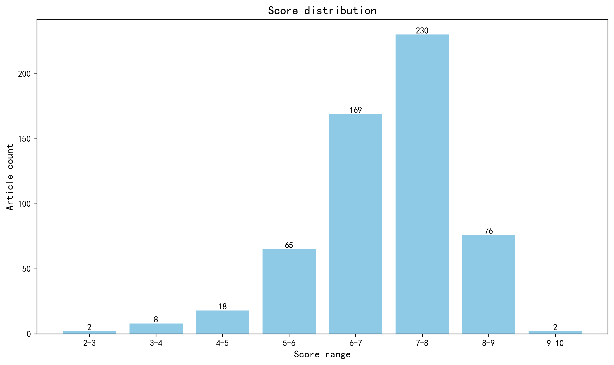

神经科学快讯·第033期 工程化逆转座子实现体内大片段基因写入 (2026-10-24)
📊 本周概览
生成日期：2026-10-25。来源交叉核验涵盖期刊官网、PubMed、Europe PMC、arXiv 与 bioRxiv；bioRxiv 完成 343/343 条版本记录分页，arXiv 使用官方备用端点补取，PLOS One 以 PubMed 全部 195 个 ID 核对默认条数上限。最近收录仍可能有索引延迟；零返回不等于确认无论文。未取得的正式摘要已尝试 PubMed 缓存、Europe PMC、Crossref 和出版社，部分出版社返回 403，保留资料不足提示。历史同名跨服务器记录单独保留待核验，未合并入本期。地区表、地图和评分图统一排除“域外局限”。
第 033 期 · 文献日期：2026-10-18—2026-10-24（含首尾）。共检索并评估 1028 篇；作者与机构信息来自原始来源及 ROR 匹配。12 篇未取得足够摘要，相关条目已标注为仅供初筛；946 篇取得地区信息。作者指标未参与本期来源统计。
- 头条推荐: 2 篇
- 深度解读: 253 篇
- 简要提及: 261 篇
- 跨界启发: 0 篇
- 已过滤: 512 篇
🌏 环球视野

地区与机构按本期原始发表记录、ROR 及城市地址规则分别统计；跨地区合作可重复计入，不作为完整机构排名。评分分布不含“域外局限”文章。
🌍 国家/地区分布 TOP 10
| 排名 | 国家 | 文章数量 |
|---|---|---|
| 1 | United States | 233 |
| 2 | China | 63 |
| 3 | Germany | 51 |
| 4 | United Kingdom | 45 |
| 5 | Canada | 22 |
| 6 | Japan | 20 |
| 7 | France | 19 |
| 8 | Italy | 16 |
| 9 | Sweden | 16 |
| 10 | Australia | 14 |
地区计次合计: 644 次；取得地区信息 506/570 篇
🏢 研究机构 TOP 10
| 排名 | 机构 | 文章数量 |
|---|---|---|
| 1 | Chinese Academy of Sciences | 12 |
| 2 | Harvard University | 11 |
| 3 | Yale University | 11 |
| 4 | Shanghai Jiao Tong University | 10 |
| 5 | University of Oxford | 10 |
| 6 | Stanford University | 9 |
| 7 | Massachusetts Institute of Technology | 9 |
| 8 | Fudan University | 8 |
| 9 | Washington University in St. Louis | 7 |
| 10 | University of Chicago | 7 |
📊 评分分布
| 评分区间 | 文章数量 |
|---|---|
| 2-3 | 2 |
| 3-4 | 8 |
| 4-5 | 18 |
| 5-6 | 65 |
| 6-7 | 169 |
| 7-8 | 230 |
| 8-9 | 76 |
| 9-10 | 2 |
总计: 570 篇评分文章
📈 各领域文章分布
| 领域 | 深度解读 | 简要提及 | 总计 |
|---|---|---|---|
| 系统与环路神经科学 | 58 | 31 | 89 |
| 临床与转化神经科学 | 39 | 40 | 79 |
| 认知神经科学 | 37 | 34 | 71 |
| 分子与细胞神经科学 | 39 | 28 | 67 |
| 方法学 | 18 | 32 | 50 |
| 未知领域 | 0 | 50 | 50 |
| 计算与理论神经科学 | 24 | 15 | 39 |
| 感觉与运动神经科学 | 17 | 14 | 31 |
| 发育神经科学 | 16 | 11 | 27 |
| 社会与情感神经科学 | 5 | 6 | 11 |
合计: 深度解读 253 篇，简要提及 261 篇，共 514 篇
🥇 头条推荐（9.0+分）
中文标题: 利用工程化逆转录转座子进行体内基因书写
作者: Donghui Li, Alberto De Iaco, Kevin C Ngan et al.
单位: Tessera Therapeutics, 101 South St, Somerville, MA 02143, USA. Electronic address: ccotta@tesseratx.com.; Tessera Therapeutics, 101 South St, Somerville, MA 02143, USA.; Flagship Pioneering, 55 Cambridge Parkway, Suite 800E, Cambridge, MA 02142, USA.
研究地区: United States
关键词: 基因编辑, 逆转录转座子, 基因治疗, 人类细胞, 计算流程, 载体工程
亮点: 工程化非LTR逆转座子实现体内基因长度载荷的稳定写入，为CAR-T等细胞治疗提供可重复给药的RNA递送平台。
核心优势: 将天然非LTR逆转座子的RNA中间体动员机制改造为可编程的Gene Writer，并在人源化小鼠中实现LNP介导的体内CAR-T生成与B细胞清除，展示了从计算发现到体内应用的完整闭环。
研究局限: 体内长期安全性（插入位点偏好、脱靶整合、致瘤风险）与CAR表达持久性数据仍不充分；人源化小鼠模型对临床转化的预测力有限，且未与现有慢病毒/转座子系统进行头对头比较。
目标读者: 基因治疗与细胞治疗研究者、转座子/逆转座子生物学专家、RNA递送与LNP平台开发者、合成生物学家及临床转化研究者
推荐理由: 该研究系统挖掘并改造非LTR逆转座子，以RNA为中间体实现基因长度载荷的稳定插入，并在人源化小鼠中展示LNP递送后体内生成CAR-T和持续B细胞清除。其对神经科学的价值仍是待验证的工具迁移潜力：本研究未验证脑内递送、神经元应用或神经疾病治疗。
中文标题: 从自然语言程序化设计功能性蛋白质
作者: Dai, Fengyuan, You, Shiyang, Zhu, Yudian et al.
单位: Bioscience and Biomedical Engineering Thrust, Systems Hub, The Hong Kong University of Science and Technology (Guangzhou), Guangzhou, China; School of Engineering, Westlake University, Hangzhou, China; Zhejiang University, Hangzhou, China; School of Engineering, Westlake University, Hangzhou, China 等
研究地区: China, United States
关键词: 蛋白质设计, 自然语言处理, 基础模型, AI4Science, 神经工程, 计算建模
亮点: 16B参数基础模型将自然语言直接翻译为可实验验证的功能蛋白，四个靶标全部命中活性
核心优势: 以自然语言为高层设计接口，摆脱对天然模板和手工几何约束的依赖；17亿蛋白-文本对训练+四个湿实验验证（含1.7倍产物滴度提升），在Nature级别上交出了较完整的计算到实验闭环。
研究局限: 计算评估仍以预测可折叠性和描述对齐为主，成功率为四个任务的小样本；酶活水平与天然酶相比、以及分布外功能目标的可扩展性尚未充分量化。
目标读者: 蛋白质工程、AI4Science、合成生物学与代谢工程研究者，以及关注生成式基础模型在生物设计落地的计算生物学家
推荐理由: 该研究提出Pinal——一个160亿参数的基础模型，可直接从自然语言描述设计功能蛋白质，突破了传统方法需以天然蛋白为起点或手动转译功能约束的局限。对神经科学而言，这意味着可按需设计神经探针、光遗传学工具、靶向药物载体乃至神经毒素解毒剂，极大加速神经工程与分子工具开发。其“语言到功能”的范式亦为计算神经科学中从行为描述生成机制模型提供了新思路。
📚 精选文献（按领域分类）
临床与转化神经科学
中文标题: 教育降低痴呆症发病率并缓解遗传风险
作者: Silvia H Barcellos, Leandro S Carvalho, Kenneth M Langa et al.
单位: Department of Internal Medicine, University of Michigan, Ann Arbor, MI 48109.; Survey Research Center, Survey Research Center, Institute for Social Research, University of Michigan, Ann Arbor, MI 48106.; La Follette School of Public Affairs, University of Wisconsin-Madison, Madison, WI 53706.; Department of Population Health Sciences, University of Wisconsin-Madison, Madison, WI 53726.; Center for Economic and Social Research, University of Southern California, Los Angeles, CA 90089.; Center for Economic and Social Research, University of Southern California, Los Angeles, CA 90089.; Department of Economics, University of Southern California, Los Angeles, CA 90089. 等
研究地区: United States
关键词: 教育, 阿尔茨海默病, 遗传风险, 回归断点设计, 因果推断, 多基因风险评分
亮点: 义务教育改革作为准自然实验，结合分子遗传数据证明教育可因果性降低痴呆发病并削弱遗传风险的可修饰性
核心优势: 利用义务教育改革的断点回归设计获得教育的因果效应，并以医疗记录、住院与死亡登记多源确认痴呆结局以控制选择性流失，同时整合多基因风险分数揭示基因-环境交互
研究局限: 断点回归的局部有效性限制外推，教育暴露与痴呆发病间隔长，残余混杂（如改革伴随的区域资源变化）与遗传-环境交互的机制通路仍未阐明
目标读者: 流行病学、神经退行性疾病遗传学、社会 Genomics 与公共卫生政策研究者
推荐理由: 该研究利用义务教育改革产生的回归断点，首次提供教育降低痴呆发病率的因果证据，并发现教育可削弱遗传风险与痴呆发病之间的关联。这项基于大规模人群数据的研究将社会政策干预与分子遗传学相结合，为痴呆的预防策略和基因-环境交互机制提供了重要启示，对临床转化和公共卫生政策具有深远意义。
中文标题: 深度降低PrP水平可预防小鼠朊病毒病症状
作者: Gentile, J. E., Farley, J. E., Kelemen, M. N. et al.
单位: Broad Institute of MIT and Harvard
研究地区: United States
关键词: siRNA, 脑脊液递送, 朊病毒病, PrP蛋白, 小鼠模型, 神经病理
亮点: 超强效CSF递送siRNA将全脑PrP敲低至12%，首次在朊病毒病小鼠中实现症状预防并大幅延长存活
核心优势: 首次证明深度PrP敲低可完全预防朊病毒病症状，并在症状期治疗中显著延长存活；多模型验证（RML/Fukuoka-1毒株、人源化小鼠、食蟹猴）以及脑与CSF的PrP降低数据支撑转化潜力。
研究局限: 尚处于bioRxiv预印本阶段，未经同行评审；小鼠长期给药的安全性、外周组织PrP敲低的潜在风险及向人类受试者的剂量与递送转化仍需验证。
目标读者: 神经退行性疾病、朊病毒病、RNA疗法与药物递送、转化神经科学和系统生物学研究者
推荐理由: 该研究首次证明，通过脑脊液递送高效C16偶联siRNA，将全脑PrP降至残余12%，可在朊病毒感染小鼠中完全预防症状至500天，并抑制朊病毒复制100倍。对已出现症状的小鼠，治疗也显著延长生存并降低播种活性10倍。这一工作为朊病毒病及其他PrP相关神经退行性疾病提供了强有力的转化治疗策略，展示了深度靶蛋白敲低在神经疾病中的治疗潜力。
中文标题: 儿童脑图表揭示ADHD生物型具有不同的发育、分子和治疗特征
作者: Bu, X., Sun, L., Fu, Z. et al.
单位: Beijing Normal University
研究地区: China
关键词: ADHD, 儿科脑图表, 结构MRI, 贝叶斯规范建模, 聚类分型, 神经发育
亮点: 大样本儿科脑图表结合跨族裔可复现的规范建模，将ADHD异质性拆分为皮层变薄与变厚两种神经生物学亚型，并对应不同的认知-症状结构与药物反应。
核心优势: 跨中美队列共约1.44万儿童的结构MRI规范建模与数据驱动聚类，结合脑-行为多变量分析、兴奋剂/非兴奋剂疗效差异及转录组-GWAS汇聚证据，形成从分型到机制再到临床决策的多模态证据链。
研究局限: 发现基于横断面结构MRI与聚类分型，亚型边界稳定性、发育轨迹的纵向因果推断及临床用药分层的前瞻性验证仍不足；预印本尚未经同行评审，转录组关联为相关性推断。
目标读者: 儿童精神神经影像、计算精神病学、ADHD临床研究与精准精神病学转化研究者
推荐理由: 该研究基于中美两个大型队列（12,663名典型发育儿童和1,699名ADHD患儿）的结构MRI数据，采用分层贝叶斯规范建模构建儿科脑图表，量化个体皮层形态偏差，并通过数据驱动聚类识别出两种可跨种族复现的ADHD生物型。这两种生物型在发育轨迹、分子特征和治疗反应上均存在显著差异，为ADHD的异质性提供了神经生物学证据，推动了基于生物型的精准分型与个体化干预。方法学上，规范建模与聚类框架为其他精神疾病的亚型研究提供了可借鉴的范式。
中文标题: 不止于准确：用于阿尔茨海默病诊疗的血液与数字生物标志物通路级实施框架
作者: Robert Perneczky, Michael Schöll, Boris-Stephan Rauchmann et al.
单位: Department of Psychiatry and Psychotherapy, LMU University Hospital, LMU Medizin, LMU Munich, Munich, Bavaria 80336, Germany; German Center for Neurodegenerative Diseases (DZNE), Munich, Bavaria 81377, Germany; Munich Cluster for Systems Neurology (SyNergy), Munich, Bavaria 81377, Germany; Ageing Epidemiology (AGE) Research Unit, School of Public Health, Imperial College London, London W2 1PG, UK; Division of Neuroscience, University of Sheffield, Sheffield, UK. Electronic address: robert.perneczky@med.uni-muenchen.de.; Department of Psychiatry and Psychotherapy, LMU University Hospital, LMU Medizin, LMU Munich, Munich, Bavaria 80336, Germany; Department of Neuroradiology, LMU University Hospital, LMU Medizin, LMU Munich, 80336 Munich, Bavaria, Germany.; Wallenberg Centre for Molecular and Translational Medicine, University of Gothenburg, Gothenburg, Sweden; Department of Psychiatry and Neurochemistry, University of Gothenburg, Gothenburg, Sweden; Department of Neuropsychiatry, Sahlgrenska University Hospital, Gothenburg, Sweden. 等
研究地区: Germany, United Kingdom, Sweden
关键词: 血液生物标志物, 阿尔茨海默病, 数字生物标志物, 诊断路径, 临床实施, 患者中心结局
亮点: 血液生物标志物与数字生物标志物整合的路径级评估框架，将阿尔茨海默病诊断落点从"准确率"转向患者结局与卫生系统价值。
核心优势: 系统提出超越诊断准确率的路径级评价维度（诊断信心、CSF/PET合理使用、诊断时效、抗淀粉样蛋白治疗资格评估、试验招募），并批判性对比血液与数字标志物在构念效度、依从负担、文化可移植性和监管分类上的异质性。
研究局限: 作为观点/综述文章，缺乏原始实证数据或系统性文献计量分析来支撑其框架；所提路径级结局指标的可操作化与验证路径仍停留在概念层面，未给出具体的评估研究设计或量化阈值。
目标读者: 阿尔茨海默病临床研究者、生物标志物转化科学家、卫生系统与监管政策研究者、数字健康与计算精神病学方法学者
推荐理由: 该论文超越传统诊断准确性视角，提出一个以路径为中心的框架来实施血液和数字生物标志物用于阿尔茨海默病照护。它系统阐述了如何将血浆检测整合到临床路径中，以改善诊断信心、优化CSF/PET使用、缩短诊断时间、评估抗淀粉样蛋白治疗资格等患者中心结局。对于神经科学转化研究者而言，这提供了从生物标志物发现到临床落地的关键路线图，强调了多维度结局评估在真实世界实施中的重要性，对推动AD精准诊疗具有重要指导意义。
中文标题: 跨组织与生物体液的Tau异构体图谱揭示区分阿尔茨海默病与肌萎缩侧索硬化的特征
作者: Abu-Rumeileh, Samir, Großkopf, Henning, Guthknecht, Arthur et al.
单位: Department of Neurology, Martin-Luther-University Halle-Wittenberg, Halle (Saale), Germany; Department of Neurology, Martin-Luther-University Halle-Wittenberg, Halle (Saale), Germany; BG University Hospital Bergmannsheil, Heimer Institute for Muscle Research, Bochum, Germany; Roboscreen GmbH, Leipzig, Germany 等
研究地区: Germany, Italy, United Kingdom, Belgium
关键词: tau蛋白, 阿尔茨海默病, 肌萎缩侧索硬化, 生物标志物, 免疫分析, 质谱分析
亮点: 通过免疫沉淀富集脑源性tau，并在组织与生物流体中联合绘制tau异构体图谱，揭示外周big tau对血p-tau217的混杂，使AD与ALS的血液鉴别更特异。
核心优势: 将靶向质谱组织图谱与血清BD-Tau免疫沉淀检测相整合，直接证明肌肉中仅存在big p-tau217，并提出可操作的BD-p-tau217检测改进方案。
研究局限: 研究为横断面设计，样本量中等且缺少纵向转化验证与独立外部队列；免疫沉淀流程在常规临床实验室的可扩展性尚未评估。
目标读者: 神经退行性疾病生物标志物、临床神经化学、蛋白质组学与神经肌肉疾病研究者
推荐理由: 该研究通过直接免疫分析和免疫沉淀-质谱联用，系统绘制了tau异构体在脑、脊髓、肌肉及血清中的分布，并开发出可区分脑源性tau（BD-tau）与周围源性tau的检测方法。研究发现血清BD-tau和BD-p-tau217能有效鉴别阿尔茨海默病与肌萎缩侧索硬化，克服了总p-tau217在ALS中假性升高的局限。这一成果不仅为AD与ALS的鉴别诊断提供了新型血液标志物，也凸显了组织特异性tau异构体在生物标志物开发中的关键价值，对神经退行性疾病的精准诊断具有重要转化意义。
中文标题: 系统方法揭示阿尔茨海默病中星形胶质细胞状态多灶性出现的驱动因素及其对认知衰退的贡献
作者: Comandante-Lou, N., Lama, T. D., Heuer, S. E. et al.
单位: Columbia University Irving Medical Center
研究地区: United States
关键词: 单细胞核测序, 阿尔茨海默病, 星形胶质细胞, 空间转录组, 配体-受体建模, 认知衰退
亮点: 整合867例人脑单核图谱、配体-受体建模与空间转录组，锁定Ast10星形胶质细胞状态为AD神经病理与认知衰退之间的汇聚节点，并在SEMA4D阻断抗体试验中显示其药理可调控性。
核心优势: 多模态证据链完整：大规模人脑荟萃分析、两种空间模态验证、小鼠与人星形胶质细胞机制验证，以及脑脊液临床试验中的药效学关联，共同指向具有转化潜力的候选靶点。
研究局限: 预印本尚未经同行评审；该研究本质上属于关联性分析，Ast10与认知衰退之间的因果方向及突触前递质释放紊乱机制仍需功能实验直接证明。
目标读者: 阿尔茨海默病与神经退行性疾病研究者、单细胞与空间组学方法学专家、胶质细胞生物学与神经免疫研究者、转化医学与药物开发团队
推荐理由: 该研究整合867例人脑单核转录组，通过元分析鉴定出与AD认知衰退密切相关的非经典反应性星形胶质细胞状态Ast10，并利用配体-受体建模和空间转录组揭示其多灶性出现的驱动信号。工作将细胞状态、神经病理与认知功能直接关联，为AD转化研究提供了新靶点，同时展示了系统生物学方法在复杂脑疾病中的强大整合能力。
中文标题: 人脑类器官揭示遗传性局灶性癫痫中MGE中间神经元缺陷独立于mTOR过度激活
作者: Yang, Yuling, Yan, Yi, Wang, Hao et al.
单位: Children’s Medical Center, Peking University First Hospital, Beijing, China; Department of Neurology, Zhongshan Hospital, Fudan University, Shanghai, China; Institute for Translational Brain Research, Fudan University, Shanghai, China 等
研究地区: China
关键词: 类脑器官, GABA能中间神经元, mTOR通路, 局灶性癫痫, GATOR1, 单细胞转录组
亮点: GATOR1突变相关局灶性癫痫的致病机制并非经典mTOR过度激活，而是MAFB缺失驱动的MGE中间神经元分化、迁移与GABA释放缺陷，且可被MAFB过表达挽救。
核心优势: 利用患者来源的腹侧GABA能类器官（VGO）实现神经元亚型特异性建模，并通过敲低与过表达双向因果验证，将GATOR1癫痫机制从mTOR通路重新定位到MAFB依赖的中间神经元发育缺陷。
研究局限: 类器官模型缺乏完整环路与体内环境，MAFB上游调控及与mTOR通路的关系未完全阐明；患者样本量与脑组织验证规模有限，MAFB过表达挽救的转化可行性尚待体内验证。
目标读者: 癫痫遗传学、神经发育生物学、类器官建模及转化神经科学研究者
推荐理由: 该研究利用患者来源的腹侧GABA能类脑器官，揭示GATOR1相关局灶性癫痫中MGE中间神经元分化、迁移及GABA释放缺陷，且独立于mTOR过度激活。这一发现挑战了mTOR抑制剂作为通用治疗策略的假设，为遗传性局灶性癫痫提供了新的机制见解和潜在干预靶点，对转化神经科学和发育神经生物学具有重要启示。
中文标题: 血浆eMTBR-tau243和p-tau205作为T2生物标志物用于阿尔茨海默病的生物学分期与预后
作者: Yim, Sohyun, Lee, Eun Hye, Lee, Jungah et al.
单位: Alzheimer’s Disease Convergence Research Center, Samsung Medical Center, Seoul, Republic of Korea; Department of Radiology and Imaging Sciences, Indiana University School of Medicine, Indianapolis, USA; Indiana Alzheimer Disease Research Center, Indiana University School of Medicine, Indianapolis, USA; Department of Neurology, Samsung Medical Center, Sungkyunkwan University School of Medicine, Seoul, Republic of Korea; Department of Neurology, Haeundae Paik Hospital, Inje University College of Medicine, Busan, Republic of Korea 等
研究地区: South Korea, United States, Sweden, United Kingdom, Hong Kong, China, Norway, Switzerland, Germany
关键词: 阿尔茨海默病, 血浆生物标志物, p-tau205, eMTBR-tau243, tau PET, LC-MS/MS
亮点: 血浆eMTBR-tau243作为T2期生物标志物，首次实现与tau PET分期的血浆生物学分期并预测认知轨迹
核心优势: 采用多平台p-tau检测结合专属LC-MS/MS定量eMTBR-tau243，在淀粉样蛋白PET及tau PET亚组中系统验证其阶段依赖性与认知预测能力，并提出整合p-tau217的血浆tau分期体系
研究局限: tau PET仅覆盖子集样本且为横断面与有限纵向设计，LC-MS/MS平台可扩展性与跨队列外部验证不足，T1/T2分期的临床阈值尚未标准化
目标读者: 阿尔茨海默病生物标志物、临床神经科学、质谱蛋白组学与转化医学研究者
推荐理由: 该研究系统评估了血浆eMTBR-tau243和p-tau205作为阿尔茨海默病T2期生物标志物的价值，通过多平台比较和LC-MS/MS绝对定量，揭示了它们与纤维状tau聚集的关联，并展示了在生物学分期和预后预测中的优越性能。这些发现为AD的早期诊断和疾病修饰治疗试验提供了可扩展的血浆标志物组合，具有重要的临床转化意义。
中文标题: BCG疫苗接种减轻PS19小鼠的tau病理并恢复认知功能
作者: Somnath Shee, Meixiang Huang, Meghraj Singh Baghel et al.
单位: Department of Pathology, The Johns Hopkins University School of Medicine, Baltimore, MD, USA.; Center for Tuberculosis Research, Division of Infectious Diseases, School of Medicine, Johns Hopkins University, Baltimore, MD, USA.; Johns Hopkins Drug Discovery, Johns Hopkins University School of Medicine, Baltimore, MD, USA.; Department of Neurology, Johns Hopkins University School of Medicine, Baltimore, MD, USA. 等
研究地区: United States
关键词: BCG疫苗, tau蛋白病, PS19小鼠, 神经炎症, 小胶质细胞, 磁共振成像
亮点: BCG疫苗通过重编程脑内髓系细胞、促进tau清除并改善PS19小鼠认知，为免疫调节预防痴呆提供机制证据。
核心优势: 多模态证据链完整：从磷酸化tau、微胶质增生、MRI萎缩、转录组近乎正常化到吞噬功能和乳酸代谢，将BCG的外周免疫训练与中枢髓系细胞状态改变直接联系。
研究局限: 单一tau转基因小鼠模型、样本量与统计细节未在摘要中体现，且 retrospectively 观察到的AD发病率降低与小鼠机制之间仍缺乏因果链和人体干预验证。
目标读者: 神经免疫学、tau蛋白病与阿尔茨海默病研究、疫苗免疫调节及转化神经科学研究者
推荐理由: 该研究基于回顾性临床观察，在PS19 tau蛋白病小鼠模型中验证了BCG疫苗的神经保护作用：BCG可降低海马磷酸化tau水平和小胶质细胞增生，保护神经元标志物，并借助体素T2-MRI显示脑萎缩减轻及谷氨酸加权化学交换饱和转移信号增强。研究将流行病学线索与临床前机制证据相衔接，提示免疫调节策略可能延缓tau病理和认知衰退，为阿尔茨海默病转化研究提供了可检验的新方向。
中文标题: 通过Knight阿尔茨海默研究影像数据集中的临床前阿尔茨海默病探索健康衰老
作者: Hoagey, David A., McKay, Nicole S., Joseph-Mathurin, Nelly et al.
单位: Department of Radiology, Washington University School of Medicine, Saint Louis, USA; Department of Neurology, Washington University School of Medicine, Saint Louis, USA; Department of Psychological & Brain Sciences, Washington University in St. Louis, Saint Louis, USA; Department of Neurology, Washington University School of Medicine, Saint Louis, USA 等
研究地区: United States
关键词: 阿尔茨海默病, 多模态神经影像, 健康老化, 临床前阶段, 开放数据集, 人类
亮点: 一个覆盖AD全程的大型多模态纵向影像数据集，为临床前阿尔茨海默病与健康老化研究提供开放资源
核心优势: 规模可观（1,645名参与者、6,217次采集）且模态齐全，整合结构/功能MRI、淀粉样蛋白与tau PET及临床、认知、遗传、生物标志物数据，并提供质控后的处理产物，显著提升数据的可复用性
研究局限: 这是数据资源型论文而非机制性原创发现，突破性有限；队列来自单一阿尔茨海默病研究中心，样本以特定招募人群为主，代表性、扫描协议异质性与数据访问限制可能影响泛化与复用
目标读者: 阿尔茨海默病与老化研究者、神经影像方法学家、生物标志物与计算神经科学研究者
推荐理由: KARI数据集汇集了1645名参与者、6217次多模态神经影像采集，覆盖从健康老化到症状性AD的完整谱系，为刻画临床前AD的漫长轨迹提供了独特资源。其大规模、纵向、多模态设计支持早期检测标志物发现、疾病进展建模和干预策略评估，对临床转化研究具有重要价值。
中文标题: 精神障碍的青少年前驱期表型：来自新型DISC1扰动猴模型的洞见
作者: Lan, Z., Onoe, H., Tsukiyama, T. et al.
单位: Kyoto University
研究地区: Japan
关键词: DISC1, 非人灵长类, 前额叶, 精神分裂症, 社会认知, 神经发育
亮点: 首个DISC1扰动非人灵长类模型在青春期再现精神疾病前驱期社交退缩与脑网络枢纽从额叶向感觉皮层转移
核心优势: 在灵长类中填补啮齿类缺乏背外侧前额叶的转化鸿沟，结合F0嵌合体最小化、行为学与静息态fMRI多模态证据，直接对应人类前驱期跨诊断表型。
研究局限: bioRxiv预印本尚未经同行评审；F0代样本量有限且嵌合体控制虽优化但个体间基因编辑差异可能影响可重复性，行为范式与网络拓扑指标缺乏独立队列验证。
目标读者: 精神疾病神经发育机制、非人灵长类模型、转化神经影像与系统神经科学研究者
推荐理由: 该研究首次构建了DISC1基因位点编辑的猕猴模型，填补了啮齿类与人类之间前额叶皮层发育与功能研究的转化鸿沟。通过系统刻画青春期社交与认知表型，揭示了跨诊断精神障碍的前驱期特征，为精神分裂症等疾病的早期干预提供了关键非人灵长类平台。其多维度行为评估与基因-脑-行为关联策略，对理解神经发育障碍的跨疾病机制具有重要价值。
中文标题: 对阿尔茨海默病病理的协调且可重复的多细胞反应
作者: Vilkaite, G., Volcov, E., An, L. et al.
单位: Lund University
研究地区: Sweden
关键词: 阿尔茨海默病, 单细胞转录组, 多细胞模型, ROSMAP, 人类, 前额叶
亮点: 跨越230万细胞核的多细胞协调轴将阿尔茨海默病病理重构为可复现的细胞群落模型，并在独立队列中验证了病理与性别的可预测性。
核心优势: 利用427例ROSMAP供体的230万细胞核构建多细胞协调轴，并在完全独立的SEA-AD队列中验证病理与性别的预测能力，显著提升了单细胞AD研究的可重复性与整合度。
研究局限: 证据仍停留在关联与预测层面，缺乏因果扰动或功能验证；性双态机制与细胞间通讯的分子细节尚未充分解析，且依赖死后snRNA-seq，难以刻画动态进程。
目标读者: 阿尔茨海默病研究者、单细胞与空间转录组学方法学家、计算与系统生物学家及神经退行性疾病建模研究者
推荐理由: 该研究基于ROSMAP队列230万细胞核的单细胞转录组数据，构建了可重复的多细胞协调响应模型，识别出与AD病理和性别相关的稳健多细胞轴。其核心创新在于超越单细胞层面的异质性描述，揭示RORB-GABA能神经元等细胞类型的协同变化，为AD的转化研究提供了系统级框架和可操作靶点。方法学上强调可重复性与多细胞互作，对神经科学领域的大规模数据分析具有示范意义。
中文标题: VO659，一种靶向CAG重复序列的反义寡核苷酸，降低亨廷顿病中多种神经毒性突变亨廷顿蛋白
作者: Röttgering, B., Weij, R., Bijl, S. et al.
单位: VICO Therapeutics B.V., J.H. Oortweg 21, 2333CH Leiden, The Netherlands
研究地区: The Netherlands
关键词: 反义寡核苷酸, 亨廷顿病, CAG重复扩增, 突变亨廷顿蛋白, RAN翻译, 体细胞扩增
亮点: 靶向CAG重复序列的反义寡核苷酸在体细胞扩增加剧时反而更高效地清除多种神经毒性突变亨廷顿蛋白，同时相对保留野生型HTT
核心优势: 机制设计巧妙：将ASO疗效与CAG长度和体细胞扩增动态绑定，同时覆盖HTT1a和RAN蛋白等被忽视的毒性物种，并给出小鼠脑内长半衰期的给药依据。
研究局限: 核心数据主要来自成纤维细胞和过表达构建体等简化模型，缺乏患者来源神经元及体内长期疗效/安全性数据，且临床证据仅停留在正在进行的试验注册层面。
目标读者: 神经退行性疾病、反义寡核苷酸治疗学、亨廷顿病转化研究和计算/系统生物学家
推荐理由: 该研究报道了靶向CAG重复序列的反义寡核苷酸VO659，能够等位基因偏好性地降低多种神经毒性突变亨廷顿蛋白（包括HTT1a和RAN翻译产物），这些蛋白随CAG重复长度增加而累积。VO659通过阻断翻译发挥作用，为亨廷顿病这一由多蛋白种类驱动的神经退行性疾病提供了有前景的转化治疗策略。研究还揭示了体细胞扩增对mHTT蛋白表达的影响，强调了靶向CAG重复序列在降低突变蛋白负荷方面的优势。
Nanoscale remodeling of synaptic glutamate receptors and calcium channels in temporal lobe epilepsy
深度解读 7.6/10中文标题: 颞叶癫痫中突触谷氨酸受体和钙通道的纳米尺度重塑
作者: Kaufmann, W. A., Venturino, A., Kleindienst, D. et al.
单位: Institute of Science and Technology Austria (ISTA)
研究地区: Austria
关键词: 颞叶癫痫, 谷氨酸受体, 钙通道, 纳米尺度, 超分辨成像, 人类皮层
亮点: 用冷冻断裂复制定量揭示人癫痫皮层中AMPAR与CaV2.1的突触类型特异性纳米级重塑
核心优势: 在稀缺的人脑手术标本上结合高分辨率冷冻断裂复制定量免疫标记与蒙特卡洛模拟，直接比较树突棘与胞体-树突干突触的两类关键蛋白纳米组织，提供了超越电生理推断的超微结构证据。
研究局限: 样本量小且对照组为肿瘤周围非癫痫组织，年龄与性别分布不匹配（TLE组更年轻），CaV2.1性别差异基于极小样本；缺乏与电生理或发作严重程度的功能关联，且冷冻断裂复制定量难以直接推广到常规实验体系。
目标读者: 癫痫机制研究者、突触超微结构与定量神经解剖学家、谷氨酸能传递与钙通道生物学家
推荐理由: 该研究利用超分辨成像技术，首次在人类颞叶癫痫皮层中揭示了突触谷氨酸受体和钙通道的纳米尺度重塑，为理解癫痫超兴奋性的分子机制提供了直接证据。其发现不仅连接了突触纳米组织与临床耐药性，还为开发靶向突触蛋白纳米域的治疗策略开辟了新途径。方法学上，将先进成像应用于人类癫痫组织，推动了转化神经科学的发展。
中文标题: 微重力培养的胶质母细胞瘤类器官的多组学与空间分析揭示长期太空飞行后晚期疾病的优越建模
作者: Alice Burchett Darantiere, Maksym Zarodniuk, Shelby Giza et al.
单位: Department of Aerospace and Mechanical Engineering, University of Notre Dame, Notre Dame, IN 46556.; Department of Bioengineering, University of Illinois Urbana-Champaign, Urbana, IL 61801.; Space Tango, Limited Liability Company, Lexington, KY 40505.
研究地区: United States
关键词: 胶质母细胞瘤, 类器官, 空间生物学, 多组学, 微重力, 肿瘤微环境
亮点: 国际空间站长期培养的胶质母细胞瘤-髓系类器官揭示微重力下疾病进展加速与空间转录组架构重塑，为轨道肿瘤学建立新型模型。
核心优势: 首次在太空环境中对GBM-髓系共培养类器官进行40天多组学与空间分析，证明空间微重力可诱导更侵袭性的转录程序及化学梯度，并建立可复用的在轨实验范式。
研究局限: 样本量有限且缺乏地面对照的完整匹配（如旋转壁容器模拟微重力），人源巨噬/单核细胞在类器官中的功能成熟度与体内差异未充分表征；空间转录组学与红外成像的空间分辨率可能不足以解析单细胞水平异质性。
目标读者: 神经肿瘤学、空间生物学、类器官与微生理系统、多组学与空间分析研究者
推荐理由: 该研究利用国际空间站微重力环境培养胶质母细胞瘤-髓系类器官40天，克服了地面模型因沉降和解聚导致的局限。空间飞行类器官形态更均匀，并展现出加速的疾病进展和免疫失调特征，多组学与空间分析揭示了更接近晚期疾病的分子与细胞架构。这项工作不仅为胶质母细胞瘤提供了更优的转化模型，也凸显了空间生物学在神经肿瘤研究中的独特价值。
中文标题: α-突触核蛋白病理进展的网络分析揭示p21激活激酶作为易感性的调节因子
作者: Vatsa, N., Brynildsen, J. K., Goralski, T. M. et al.
单位: Van Andel Institute
研究地区: United States
关键词: 帕金森病, α-突触核蛋白, 网络扩散模型, 全脑成像, 小鼠, p21激活激酶
亮点: 将全脑α-突触核蛋白病理扩散网络模型与空间转录组图谱耦合，定量脆弱性并锁定II组PAK为帕金森病候选调控靶点
核心优势: 网络扩散建模与自建PANGEA空间转录组图谱的整合框架具有原创性，并以药物抑制、病理后给药和PAK5/6遗传缺失多线验证给出可转化的候选靶点。
研究局限: 核心数据为bioRxiv预印本且基于野生型小鼠外源种子模型，尚待同行评审；PAK抑制的体内效应量与脑区特异性、脱靶风险及人体相关性证据仍不充分。
目标读者: 帕金森病与蛋白病传播机制研究者、计算系统神经生物学家、空间转录组与网络建模方法学者及神经药理学转化研究者
推荐理由: 该研究结合全脑α-突触核蛋白病理映射与基于连接组的网络扩散模型，量化了各脑区对病理的易感性，并首次通过全脑筛选鉴定p21激活激酶（PAKs）作为易感性的分子调节因子。这项工作将网络层面的病理传播与细胞内在的分子机制联系起来，为理解帕金森病的区域选择性脆弱提供了新视角，并提示PAKs作为潜在治疗靶点。方法上融合了系统神经科学与计算建模，对转化神经科学具有重要参考价值。
TMEM106B risk converges on C-terminal fragment homeostasis: genetics, mechanisms and therapy.
深度解读 7.5/10中文标题: TMEM106B风险汇聚于C端片段稳态：遗传学、机制与治疗
作者: Miranda Lastra Osua, Jolien Perneel, Cristina T Vicente et al.
单位: VIB-UAntwerp Center for Molecular Neurology, VIB, Antwerp, 2610, Belgium.; Department of Biomedical Sciences, University of Antwerp, Antwerp, 2610, Belgium.; Department of Neuroscience, Mayo Clinic, Jacksonville, FL 32224, USA.; VIB-UAntwerp Center for Molecular Neurology, VIB, Antwerp, 2610, Belgium.; Department of Biomedical Sciences, University of Antwerp, Antwerp, 2610, Belgium.
研究地区: Belgium, United States
关键词: TMEM106B, 神经退行性疾病, 遗传风险因子, C端片段, 溶酶体功能, TDP-43蛋白病
亮点: 系统梳理TMEM106B从遗传风险到C端片段稳态、纤维化与内溶酶体功能的机制链条，并指出治疗转化路径。
核心优势: 将人群遗传、蛋白结构、翻译后修饰、互作组、蛋白酶切与纤维形成等多层证据整合到C端片段稳态这一核心框架，并明确指出现有小鼠和iPSC模型的缺口。
研究局限: 属综述而非原创研究，未提出可检验的新机制模型或定量整合分析，功能变异仍无共识；对治疗策略的评估偏描述性，缺乏可行性分级与关键实验路线。
目标读者: 神经遗传学、神经退行性疾病、内溶酶体生物学及药物开发研究者
推荐理由: 这篇综述系统梳理了TMEM106B作为多种神经退行性疾病遗传修饰因子的作用，提出其风险效应汇聚于C端片段稳态这一核心机制。文章整合了遗传学、细胞生物学和病理学证据，为理解FTLD-TDP、阿尔茨海默病和帕金森病的共同通路提供了新视角，并探讨了靶向TMEM106B C端片段的治疗策略。对从事神经退行性疾病机制研究和药物开发的读者具有重要参考价值。
中文标题: 与AD病理的空间邻近性定义了人AD海马中细胞类型和基因型特异性特征
作者: Shi, C. H., Zhu, B., Pina-Crespo, J. et al.
单位: Sanford Burnham Prebys Medical Discovery Institute
研究地区: United States
关键词: MERFISH, 空间转录组, 阿尔茨海默病, 海马, Aβ斑块, tau病理
亮点: 在人类AD海马中，逐细胞解析空间邻近Aβ斑块与AT8 tau病理所塑造的细胞类型和基因型特异性转录状态。
核心优势: 整合MERFISH空间转录组、Aβ/AT8双病理注释与120个AD风险位点基因型，并将空间定义的病理相关signature反投影到无空间信息的snRNA-seq数据，实现病理邻域与遗传变异的耦合分析。
研究局限: 仅为bioRxiv预印本，尚未经同行评审；空间邻近为相关性观察，缺乏因果或扰动验证，样本量与人群多样性、病理邻域定义的稳健性仍需独立队列确认。
目标读者: 阿尔茨海默病研究、空间转录组学、神经胶质细胞生物学与神经遗传学研究者
推荐理由: 该研究建立了在同一人类海马切片中同时标注Aβ斑块、AT8 ptau病理与细胞特异性MERFISH表达谱的流程，系统刻画了邻近或远离病理的胶质细胞和神经元的表达特征。其核心创新在于以空间距离定义病理相关转录状态，并关联遗传变异，为理解AD中细胞类型与基因型特异性的病理响应提供了高分辨率框架，对AD转化研究具有重要价值。
中文标题: 载脂蛋白E4与阿尔茨海默病中的免疫功能障碍：机制与治疗意义
作者: Hao Shi, Yang Zhao, Wei Zhu et al.
单位: Department of Neurology and Centre for Clinical Neuroscience, Daping Hospital, Third Military Medical University, Chongqing, China; Student Brigade of College of Basic Medical Science, Third Military Medical University, Chongqing, China.; Department of Neurology and Centre for Clinical Neuroscience, Daping Hospital, Third Military Medical University, Chongqing, China.; Department of Dermatology, Daping Hospital, Third Military Medical University, Chongqing, China. 等
研究地区: China
关键词: APOE4, 小胶质细胞, 神经免疫, 阿尔茨海默病, 外周免疫, 转化研究
亮点: 将APOE4重新定位为脑-外周免疫串扰的组织者，提出自我强化的神经免疫环路驱动阿尔茨海默病进展。
核心优势: 以脑-外周免疫轴为整合框架，把微胶质细胞状态、外周免疫重塑与血脑屏障侵蚀串联为统一机制模型，并提出精准干预的免疫节点。
研究局限: 作为综述缺乏原始数据，因果性与阶段特异性证据主要依赖相关性研究，核心环路模型仍待人类纵向跨组织研究验证。
目标读者: 阿尔茨海默病与神经免疫研究者、APOE4遗传学与转化医学科学家、外周免疫与血脑屏障领域学者
推荐理由: 该综述系统阐述了APOE4作为脑-外周免疫串扰组织者的新角色，将小胶质细胞功能紊乱与外周免疫重塑联系起来，提出自我强化的神经免疫循环驱动AD进展。不仅整合了机制层面的最新证据，还探讨了靶向该循环的治疗策略，为AD的转化研究提供了重要框架。
Clinically unresponsive patients with acute brain injury activate a brain-computer interface.
深度解读 7.4/10中文标题: 急性脑损伤临床无反应患者可激活脑机接口
作者: Qi Shen, Andrey Eliseyev, Vedant Kansara et al.
单位: NewYork-Presbyterian Hospital, NewYork, NY 10032, USA.; Department of Neurology, Columbia University Medical Center, NewYork, NY 10032, USA.; NewYork-Presbyterian Hospital, NewYork, NY 10032, USA.; Department of Neurology, Columbia University Medical Center, NewYork, NY 10032, USA. 等
研究地区: United States
关键词: 脑机接口, EEG, 认知运动分离, 急性脑损伤, 意识检测, 神经康复
亮点: 床旁EEG脑机接口让急性脑损伤后临床无反应患者实现自我节奏的听觉反馈控制，且BCI控制与意识及功能独立恢复强相关。
核心优势: 在危重急性期实现床旁实时闭环BCI，并首次将BCI控制能力与12个月功能独立恢复的前瞻性结局直接关联，兼具技术可行性与预后信号价值。
研究局限: 单中心小样本（n=41）、无随机化与盲法，BCI组与CMD阳性组高度重叠，因果推断受限；OR置信区间极宽（2.3–930.7），且缺乏对混杂因素（损伤类型、镇静、基线严重度）的充分校正。
目标读者: 神经重症、意识障碍与脑机接口研究者，以及神经康复和临床转化科学家
推荐理由: 本研究首次在急性脑损伤后早期、临床无反应患者中，证明了其可通过自我 paced 单向脑机接口实现脑激活控制。该工作将认知运动分离（CMD）的检测从被动范式推进到主动控制范式，并关联了短期与长期预后，为早期意识评估和神经康复提供了新的转化工具。方法学上，基于EEG的BCI在ICU环境中的可行性验证，对临床神经科学和脑机接口领域具有重要推动意义。
中文标题: CX3CL1（fractalkine）-CX3CR1界面驱动人脑类器官中CD8⁺ T细胞诱导的神经退行性变
作者: Woo Sub Yang, Min Sun Shin, Mu Seog Choe et al.
单位: Department of Internal Medicine, Section of Rheumatology, Allergy & Immunology, Yale School of Medicine, New Haven, CT 06520.; Department of Genetics, Interdepartmental Neuroscience Program, Yale Stem Cell Center, Yale Child Study Center, Wu Tsai Institute, Yale School of Medicine, New Haven, CT 06520.; College of Pharmacy, Sookmyung Women's University, Seoul 04310, Republic of Korea.; Department of Genetics, Interdepartmental Neuroscience Program, Yale Stem Cell Center, Yale Child Study Center, Wu Tsai Institute, Yale School of Medicine, New Haven, CT 06520. 等
研究地区: United States, South Korea
关键词: 脑类器官, CD8⁺ T细胞, 趋化因子, 神经退行, 阿尔茨海默病, 免疫-神经元相互作用
亮点: 人脑类器官+cx3cl1-cx3cr1轴，把CD8⁺ T细胞浸润与Aβ驱动的神经退行性损伤直接联系起来
核心优势: 用hCO模型与Transwell迁移、条件培养基及中和实验相组合，形成从趋化招募到效应损伤的相对完整因果链，并将CX3CL1-CX3CR1轴确立为潜在干预靶点
研究局限: 类器官缺乏完整血脑屏障与适应性免疫系统，Aβ暴露模型与CD8⁺ T细胞来源/浸润动力学同体内情形差距较大，损伤表型主要依赖MAP2/caspase-3等有限标志物
目标读者: 神经免疫学、阿尔茨海默病机制研究、类器官与免疫共培养技术开发者
推荐理由: 该研究利用人类皮层类器官模型，揭示了Aβ诱导的神经元CX3CL1上调通过CX3CR1招募CD8⁺ T细胞并导致神经退行性变的机制。这一工作将AD中的神经炎症与适应性免疫联系起来，为理解T细胞在神经退行中的作用提供了人源化实验平台，并提示CX3CL1-CX3CR1轴作为潜在治疗靶点。
Serum β-synuclein predicts dementia conversion and mortality beyond amyloid-β and phospho-tau.
深度解读 7.3/10中文标题: 血清β-突触核蛋白可预测痴呆转化和死亡率，且独立于淀粉样蛋白-β和磷酸化tau
作者: Timo Jan Oberstein, Julian Schwarz, Laura Rudtke et al.
单位: Department of Neuroradiology, Universitätsklinikum Erlangen, Friedrich-Alexander-Universität Erlangen-Nürnberg, Erlangen, Germany.; Department of Psychiatry and Psychotherapy, Universitätsklinikum Erlangen, Friedrich-Alexander-Universität Erlangen-Nürnberg (FAU), 91054 Erlangen, Germany.; Department of Psychiatry and Psychotherapy, Universitätsklinikum Erlangen, Friedrich-Alexander-Universität Erlangen-Nürnberg (FAU), 91054 Erlangen, Germany.; Department of Neurodegeneration Diagnostics, Medical University of Bialystok, 15-267 Białystok, Poland.; Department of Biochemical Diagnostics, University Hospital of Bialystok, 15-267 Białystok, Poland. 等
研究地区: Germany, Poland
关键词: β-突触核蛋白, 血清生物标志物, 阿尔茨海默病, 淀粉样蛋白, 磷酸化tau, 痴呆转化
亮点: 血清β-突触核蛋白作为突触功能障碍血液标志物，在Aβ与p-tau之外独立预测痴呆转化与死亡
核心优势: 在259例非痴呆记忆门诊队列中系统量化血清β-突触核蛋白对CSF核心标志物的独立预后增益（痴呆转化、死亡、认知轨迹、脑区体积多终点），并采用效应衰减与层次检验增强因果推断严谨性
研究局限: 单中心、样本量中等且缺乏外部独立验证队列；认知轨迹终点在pTau181校正后效应大幅衰减（58.5%，P=0.186），提示其与tau通路的预后方差重叠明显，独立增量有限
目标读者: 阿尔茨海默病生物标志物、临床神经病学、神经影像与转化神经科学研究者
推荐理由: 本研究首次在非痴呆人群中证明血清β-突触核蛋白可独立于淀粉样蛋白和磷酸化tau预测痴呆转化与死亡，填补了血液突触生物标志物的空白。其创新性在于将突触功能障碍这一早期病理事件转化为可临床应用的预后指标，为阿尔茨海默病的早期风险分层和临床试验入组提供了简便、微创的工具。
中文标题: 独立于阿尔茨海默病的脑免疫表型与淀粉样蛋白易感性和全身性炎症相关
作者: Serratto, G. M., Garcia-Diaz Barriga, G., Rosebrock, D. et al.
单位: Evotec SE
关键词: 转录组学, 神经免疫, 阿尔茨海默病, 淀粉样蛋白, 系统性炎症, 人类
亮点: 将既往被视为AD特异性的脑免疫转录程序重新定义为独立于AD、与淀粉样易感性及全身炎症相关的预存脑内表型
核心优势: 概念上厘清了疾病亚型与既存个体差异的混淆，利用转录组与蛋白组多模态数据展示免疫表型的效应量超过AD病理本身
研究局限: 基于bioRxiv预印本，关键结论依赖对既有队列转录组数据的再分析，缺乏前瞻性纵向验证与实验因果证据，样本来源与批次效应控制细节尚待同行评审
目标读者: AD精准医学、神经免疫学、脑转录组学与系统生物学研究者
推荐理由: 该研究挑战了传统上仅关注疾病队列内异质性的范式，转而揭示健康个体中独立于AD病理的脑免疫转录程序。这一免疫表型与淀粉样蛋白易感性及系统性炎症相关联，为AD的异质性提供了新的生物学解释，并提示神经免疫机制可能在临床前阶段即发挥作用。研究结合转录组与蛋白质组数据，为理解健康脑的分子多样性和AD风险分层提供了重要资源。
中文标题: 基于因子化时空集成深度学习框架从常规发作间期和发作期头皮脑电图定位癫痫发作起始区
作者: Shi, S.
单位: University College London
关键词: 癫痫, 头皮EEG, 深度学习, 致痫区定位, 时空集成, 生物标志物
亮点: 用因子化时空Transformer从常规发作间期头皮EEG中解码致痫区，性能超过EEGNet，并可在数分钟内完成长程记录筛查。
核心优势: 将解耦的时间与空间注意力、半球互斥惩罚与多模型集成结合，在100例患者上实现跨机构与无发作队列的可泛化定位，且推理速度具备临床可用性。
研究局限: 仅基于预印本，样本规模为100例，定位精度仍为脑叶级别，外部验证仅9例患者，尚不足以证明其相对于现有临床工作流的增量价值。
目标读者: 癫痫外科、临床神经电生理、神经工程与医学深度学习研究者
推荐理由: 该研究提出因子化时空集成深度学习框架，利用常规头皮EEG（发作间期和发作期）定位致痫区，克服了容积传导和低信噪比带来的空间模糊问题。其创新在于将空间与时间因子解耦，集成多个模型提升鲁棒性，为药物难治性癫痫的术前评估提供无创、可扩展的辅助工具，有望减少对侵入性记录和自发发作捕获的依赖，推动临床转化。
中文标题: 非中枢神经系统肿瘤的肿瘤神经支配：起源、机制与表型可塑性
作者: Yonghui Zhang, Zhixin Ye, Ying Wang et al.
单位: Basic Medical Research Center, Medical School of Nantong University, Co-Innovation Center of Neuroregeneration, Nantong, Jiangsu Province 226001, China.; Basic Medical Research Center, Medical School of Nantong University, Co-Innovation Center of Neuroregeneration, Nantong, Jiangsu Province 226001, China. Electronic address: happysh100@ntu.edu.cn.; Basic Medical Research Center, Medical School of Nantong University, Co-Innovation Center of Neuroregeneration, Nantong, Jiangsu Province 226001, China; Key Laboratory of Neuroregeneration of Jiangsu and the Ministry of Education, Nantong University, Nantong, Jiangsu Province 226001, China; Department of Anesthesiology, Affiliated Hospital of Nantong University, Nantong, Jiangsu Province 226001, China. Electronic address: chengang6626@ntu.edu.cn.
研究地区: China
关键词: 肿瘤神经科学, 外周神经系统, 神经支配, 神经发生, 肿瘤微环境, 神经递质
亮点: 整合肿瘤神经支配的起源、招募机制与表型可塑性，为癌症神经科学的转化研究提供框架性路线图。
核心优势: 将神经前体细胞招募与非神经元细胞转分化等多元起源路径，与神经营养因子、轴突导向、细胞外囊泡和应激通路机制系统整合，并强调交感/副交感/感觉输入的情境依赖性。
研究局限: 作为综述，缺乏原始数据或定量整合分析，对争议性证据的批判性权衡和机制因果链的深度有限，且发表时间设定在2026年，实际文献覆盖与前瞻性建议的时效性需读者自行核验。
目标读者: 癌症神经科学、肿瘤微环境、外周神经系统与转化医学研究者
推荐理由: 该综述系统整合了非中枢神经系统肿瘤神经支配的细胞起源、分子机制与表型可塑性，提出轴突延伸、神经前体招募和非神经元细胞转分化三条路径，并强调神经-肿瘤-免疫互作。它为理解外周神经在肿瘤发生发展中的主动作用提供了框架，对神经科学和肿瘤生物学交叉领域具有重要参考价值。
中文标题: 整合型人类前脑类器官揭示阿尔茨海默病病理中小胶质细胞介导的CD8+ T细胞招募与神经免疫功能障碍
作者: Yilin Feng, Feifei Yu, Jiyuan Tang et al.
单位: Institute of Biopharmaceutical and Health Engineering (iBHE), Tsinghua Shenzhen International Graduate School (SIGS), Tsinghua University, Shenzhen, China.; Key Laboratory of Active Proteins and Peptides Green Biomanufacturing of Guangdong Higher Education Institutes, Tsinghua Shenzhen International Graduate School, Shenzhen, China.; Key Laboratory of Industrial Biocatalysis, Ministry of Education, Tsinghua University, Beijing, China.; Institute of Biopharmaceutical and Health Engineering (iBHE), Tsinghua Shenzhen International Graduate School (SIGS), Tsinghua University, Shenzhen, China.; Key Laboratory of Active Proteins and Peptides Green Biomanufacturing of Guangdong Higher Education Institutes, Tsinghua Shenzhen International Graduate School, Shenzhen, China.; Institute of Biopharmaceutical and Health Engineering (iBHE), Tsinghua Shenzhen International Graduate School (SIGS), Tsinghua University, Shenzhen, China.
研究地区: China
关键词: 类脑器官, 小胶质细胞, CD8+ T细胞, 阿尔茨海默病, 神经免疫, iPSC
亮点: 模块化人前脑类器官整合小胶质细胞与CD8+ T细胞，首次在体外重建AD中CCL4/5–CCR1/5/CXCR3介导的神经免疫反馈环路
核心优势: 将先天免疫（小胶质细胞）与适应性免疫（CD8+ T细胞）模块化整合进人前脑类器官，并鉴定出可药理学干预的趋化因子轴，为AD神经免疫机制提供了人源化多细胞研究平台
研究局限: 证据主要来自体外类器官还原系统，缺乏体内验证与AD患者脑组织/CSF的对照印证；T细胞来源、归巢与抗原特异性等关键环节仍为简化重构，CCL4/5–CCR5/CXCR3轴的因果性与疾病特异性需进一步排除体外培养应激的混杂影响
目标读者: 神经免疫学、阿尔茨海默病机制研究、类器官与干细胞模型开发者及神经药理学筛选研究者
推荐理由: 该研究建立了一个模块化的人类前脑类器官平台，整合了小胶质细胞和CD8+ T细胞，首次在人类相关背景中重现了阿尔茨海默病的多细胞病理。它揭示了小胶质细胞介导的CD8+ T细胞招募和神经免疫功能障碍，为理解AD中的免疫机制提供了新视角，并为药物筛选和机制研究提供了有力工具。
中文标题: 肠道病毒A71利用外周循环细胞外囊泡促进血脑屏障通透性
作者: Liang, Yicong, Meng, Yi, Kong, Yue et al.
单位: Institute of Medical Microbiology, Department of Immunology and Microbiology, College of Life Science and Technology, Jinan University, Guangzhou, China; State Key Laboratory of Respiratory Disease, The First Affiliated Hospital of Guangzhou Medical University, Guangzhou, China; Institute of Medical Microbiology, Department of Immunology and Microbiology, College of Life Science and Technology, Jinan University, Guangzhou, China; Department of Microbiology and Immunology, Basic Medicine College, Jinan University, Guangzhou, China 等
研究地区: China, United States
关键词: 肠道病毒A71, 细胞外囊泡, 血脑屏障, microRNA, Notch1信号, 脑微血管内皮细胞
亮点: 外周肠道病毒感染通过释放携带miR-30/34的细胞外囊泡抑制脑内皮Notch1信号、破坏血脑屏障，从而促进病毒神经入侵。
核心优势: 构建了从外周感染→循环EVs→内皮miRNA→Notch1→屏障通透性→神经入侵的完整机制链条，并在患者血清EV中验证了miRNA升高，转化衔接较好。
研究局限: 机制主要基于体外内皮细胞与新生小鼠模型，人体因果证据仍为相关性；EVs体内靶向递送的特异性、miR-30/34直接靶向Notch1的分子证据及血脑屏障破坏的时序性需更严格验证。
目标读者: 神经感染与免疫学、血脑屏障生物学、细胞外囊泡与miRNA研究者及儿科神经病学转化研究者
推荐理由: 该研究揭示了肠道病毒A71通过外周循环细胞外囊泡（EVs）远程破坏血脑屏障的新机制：感染增加EVs释放并富集miR-30和miR-34，这些EVs被脑微血管内皮细胞摄取后抑制Notch1信号，导致紧密连接蛋白下调、屏障通透性增加。研究将外周感染与中枢神经系统并发症直接联系，为手足口病重症化提供了可干预的靶点，并提示EVs作为跨屏障递送载体的潜在转化价值。
中文标题: 十蛋白组合可从血浆高精度预测肌萎缩侧索硬化症
作者: Kim, Woo Jae, Chung, Mingee, Asress, Seneshaw et al.
单位: Center for Neurodegenerative Diseases, Emory University, Atlanta, USA; Department of Human Genetics, Emory University, Atlanta, USA; Department of Human Genetics, Emory University, Atlanta, USA; Laboratory of Translational Cell Biology, Emory University, Atlanta, USA; Center for Neurodegenerative Diseases, Emory University, Atlanta, USA 等
研究地区: United States
关键词: ALS, 血浆生物标志物, 蛋白质组学, 机器学习, XGBoost, SHAP
亮点: 十蛋白血浆panel以AUC 0.992高精度区分ALS与健康对照，展示血液蛋白组学结合可解释机器学习用于神经退行性疾病筛查的潜力。
核心优势: 样本量较大（训练632例ALS/160对照，验证144/37）、采用嵌套交叉验证与SHAP进行特征筛选，并在独立队列中验证，模型性能不依赖单一NfL，体现了较严谨的发现-验证流程。
研究局限: 仅与健康对照比较，缺乏疾病对照（如ALS mimic、其他神经退行性疾病），无法证明诊断特异性；单中心队列、病例对照设计易受批次与选择偏倚影响，98%以上的平衡准确率在真实筛查场景中外推性存疑，且缺少纵向与临床可用性评估。
目标读者: 神经退行性疾病生物标志物、临床神经病学、蛋白质组学与计算诊断建模研究者
推荐理由: 该研究基于632例ALS患者和160例健康对照的血浆NULISA蛋白质组数据，利用XGBoost结合嵌套交叉验证和SHAP特征选择，构建并独立验证了一个10蛋白面板，实现了高精度ALS预测。其创新在于将可解释机器学习与绝对定量蛋白组学结合，提升了生物标志物面板的稳健性和临床可转化性。对于神经科学领域，该工作不仅为ALS早期诊断和临床试验分层提供了实用工具，也展示了计算驱动的生物标志物发现流程在神经退行性疾病中的推广价值。
中文标题: 跨诊断快感缺失中上行驱动减弱使皮层-皮层下层级远离自下而上的主导
作者: Roghani, P., Vohryzek, J., Kringelbach, M. L. et al.
单位: Universitat Pompeu Fabra
研究地区: Spain
关键词: 快感缺失, 有效连接, 跨诊断, 皮层-皮层下层级, fMRI, 人类
亮点: 将有向有效连接建模引入跨诊断快感缺失研究，提出“上行驱动减弱”而非“前额叶过度补偿”的层级重构新解释。
核心优势: 用全脑生成模型从静息态fMRI估计个体化有向有效连接，将快感缺失的机制解释从相关激活幅度推进到信息流方向与层级不对称性。
研究局限: 仅bioRxiv预印本、未经同行评审；症状分组的横断面设计无法确立因果方向，组间差异效应量、多重比较校正与独立队列复现细节尚待检验。
目标读者: 计算精神病学、系统神经科学、奖赏环路与神经影像方法学研究者
推荐理由: 该研究利用跨诊断样本和有效连接分析，揭示了快感缺失与上行驱动减弱及皮层-皮层下层级重构的关系，挑战了传统纹状体功能低下与代偿性前额叶过度招募的观点。其创新性在于从有向连接角度解析大尺度脑动力学，为理解快感缺失的神经机制提供了新视角，对临床转化和系统神经科学均有启示。
中文标题: 发育性语言障碍成人词汇学习中的不稳定词形表征及对右半球依赖增强
作者: Nora, A., Yan, C., Husa, V. et al.
单位: Department of Neuroscience and Biomedical Engineering, Aalto University, Espoo, Finland and Aalto NeuroImaging (ANI), Aalto University, Espoo, Finland
研究地区: Finland
关键词: MEG, 发育性语言障碍, 词汇学习, 右半球, 语言表征, 成人
亮点: 成人发展性语言障碍者在词汇学习中表现出不稳定的词形表征和增强的右半球代偿。
核心优势: 结合MEG、多天训练范式和真假词对照，在同一实验中同时捕捉学习效应、半球偏侧化和对熟悉词词汇通达的影响，设计较为细致。
研究局限: 样本量有限且为bioRxiv预印本，尚未经同行评议；右半球效应与行为缺陷之间的因果联系仍属相关推断，缺乏结构性或干预性证据。
目标读者: 发展性语言障碍、语言神经科学、MEG神经影像及心理语言学研究者
推荐理由: 该研究利用MEG追踪成人发育性语言障碍（DLD）患者学习新词的过程，发现其词汇回忆能力较差，且词形表征不稳定，右半球代偿性参与增强。这一发现揭示了DLD持续词汇缺陷的神经机制，强调了右半球在语言学习中的代偿作用，为临床干预提供了新靶点。研究结合行为训练与脑磁图技术，具有较高的转化价值。
Dose-dependent myelin g-ratio alterations in the white matter of 16p11.2 copy number variations
深度解读 7.2/10中文标题: 16p11.2拷贝数变异白质中髓鞘g比值的剂量依赖性改变
作者: Lu, W. D., Martin, C.-O., Jizi, K. et al.
单位: Montreal Neurological Institute and Hospital, McGill University
研究地区: Canada
关键词: 16p11.2 CNV, g-ratio, 髓鞘, 扩散MRI, 磁化转移饱和成像, 人类
亮点: 利用定量MRI将16p11.2拷贝数变异相关的白质改变定位到轴突而非髓鞘区室，揭示连接组范围内轴突-髓鞘比例失调这一潜在共享微结构标志。
核心优势: 在同一框架内结合扩散MRI与磁化传递饱和成像，在规范建模下同时估计轴突体积、髓鞘体积与聚合g-ratio，并以其他神经发育CNV作为外部一致性检验，思路清晰、生物学解释具体。
研究局限: 样本量偏小（尤其13例重复携带者），为bioRxiv预印本且采用横断面设计，定量MRI指标（尤其g-ratio）依赖模型假设，缺少组织学或尸检验证，无法确立因果关系或发育轨迹。
目标读者: 神经影像方法学、神经遗传学与发育系统生物学研究者，以及对白质微结构和连接组计算建模感兴趣的计算神经科学家
推荐理由: 该研究结合扩散MRI与磁化转移饱和成像，在16p11.2拷贝数变异携带者中量化了轴突体积、髓鞘体积及g-ratio，首次揭示了髓鞘g-ratio的剂量依赖性改变（缺失与重复携带者呈现相反方向），为白质连接异常提供了细胞区隔水平的解释。方法学上，多模态MRI与ComBat协调的应用为罕见遗传变异研究提供了可推广的范式，对理解神经发育障碍的白质病理机制具有重要价值。
中文标题: 创伤性脑损伤后异常皮层重组与星形胶质细胞增生是记忆缺陷的基础：一项纵向多尺度多模态研究
作者: Tan, J., Patel, S., Xu, T. et al.
单位: University of Toronto
研究地区: Canada
关键词: 创伤性脑损伤, 功能连接梯度, 星形胶质细胞增生, 纵向fMRI, 全脑细胞分辨率成像, 深度学习分割
亮点: 纵向多尺度多模态框架将宏观fMRI网络退分化与全脑细胞分辨率星形胶质细胞增生、轴突丢失联系起来，预测脑外伤后记忆缺陷。
核心优势: 在单一小鼠模型中整合纵向功能连接组梯度映射与全脑光片荧光显微镜深度学习分割，实现体内影像与更敏感离体组织学的跨尺度交叉验证。
研究局限: 仅为bioRxiv预印本，未经同行评审；单模型、样本量与效应量未在摘要中体现，多模态整合的因果推断能力有限，且全脑细胞分割的假阳性/假阴性率与泛化性需严格验证。
目标读者: 多模态神经影像、计算神经科学、创伤性脑损伤与胶质细胞生物学研究者
推荐理由: 该研究在创伤性脑损伤小鼠模型中，创新性地整合了纵向功能磁共振成像与全脑细胞分辨率显微成像，通过功能连接梯度映射和深度学习三维分割，揭示了从额叶超连接向海马低连接的宏观网络去分化，以及星形胶质细胞增生相关的微观结构改变，为理解脑损伤后记忆缺陷的多尺度机制提供了重要证据。其多模态纵向设计为转化神经科学树立了方法学典范。
中文标题: 短暂升高的多巴胺触发可塑性，从而在帕金森病小鼠模型中保留运动功能、纹状体神经元形态及丘脑-纹状体输入
作者: Brague, J. C., Sinha, G. P., Henry, D. A. et al.
单位: University of Pittsburgh
研究地区: United States
关键词: 帕金森病, 6-OHDA, 多巴胺, 纹状体, D1受体, 直接通路
亮点: 在帕金森病模型中通过短暂提升多巴胺水平，触发长期结构性可塑性并延缓运动障碍的出现
核心优势: 在同一研究中同时追踪行为、被检测的特定神经元形态以及特定通路输入，为短暂多巴胺升高引起的可塑性提供了多层面的证据
研究局限: 尚未确定运动功能得以保留的因果基础；结论主要基于6-OHDA小鼠模型，通路可塑性的具体来源和机制仍不确定
目标读者: 系统神经科学、帕金森病与运动障碍以及纹状体环路可塑性研究者
推荐理由: 该研究在6-OHDA帕金森病小鼠模型中揭示，短暂提升多巴胺水平可长期维持运动功能，并特异性保护直接通路纹状体投射神经元（dSPN）的成熟树突棘及丘脑纹状体输入。机制上依赖于纹状体D1受体激活，为帕金森病早期干预提供了时间窗依赖的神经保护策略，并凸显了通路特异性可塑性在运动控制中的关键作用。
中文标题: TFE3相关神经发育障碍中TFE3慢性激活驱动代谢僵化、溶酶体衰竭及细胞-细胞外基质失稳
作者: Martina, José A., Prashar, Akriti, Pasapera, Ana M. et al.
单位: Laboratory of Cell and Tissue Morphodynamics, Cell and Developmental Biology Center, National Heart, Lung, and Blood Institute, National Institutes of Health, Bethesda, USA; Laboratory of Protein Trafficking and Organelle Biology, Cell and Developmental Biology Center, National Heart, Lung, and Blood Institute, National Institutes of Health, Bethesda, USA
研究地区: United States
关键词: TFE3, 神经发育障碍, 溶酶体, 代谢重编程, 氧化磷酸化, 细胞外基质
亮点: 慢性TFE3核激活将保护性应激通路变为代谢刚性、溶酶体功能失能与ECM黏附崩解的连锁病理，并揭示其与TFE3依赖型肿瘤共享OXPHOS/铁死亡抵抗特征。
核心优势: 以患者来源成纤维细胞为模型，多层次刻画了从转录重编程、溶酶体酸化与蛋白酶成熟缺陷、异常胞吐到黏附-迁移障碍的完整病理链条，并跨疾病类比到TFE3相关肿瘤。
研究局限: 机制证据主要来自患者成纤维细胞这一外周细胞模型，缺乏神经元或脑组织层面的直接验证，且多数结论为相关性描述，TFE3慢性激活与溶酶体/ECM表型之间的因果链条尚未通过回补或下游靶点干预充分建立。
目标读者: 神经发育障碍、溶酶体与代谢生物学、细胞外基质与细胞骨架研究及TFE3相关肿瘤生物学研究者
推荐理由: 该研究聚焦TFE3関連神经发育障碍（TFE3-NDD），利用患者来源成纤维细胞揭示慢性TFE3激活导致代谢向氧化磷酸化刚性重编程、溶酶体功能衰竭及细胞外基质失稳。创新性地将转录因子失调与代谢-溶酶体-ECM轴联系起来，为理解神经发育障碍的细胞病理机制提供了新视角，并提示代谢与溶酶体通路作为潜在干预靶点。
中文标题: 基于健康神经先验的生物物理约束学习改善病理皮层网络中的运动解码
作者: Yihan Wu, Tao Chang, Siliang Chen et al.
单位: Department of Neurosurgery, West China Hospital of Sichuan University, No. 37 Guo Xue Xiang, Chengdu 610041, China.; Laboratory for Neuro- and Psychophysiology, Department of Neurosciences, KU Leuven, Leuven 3000, Belgium.; National Clinical Research Center for Geriatric, West China Hospital of Sichuan University, Chengdu 610017, Sichuan, China.; Med-X Center for Manufacturing, Sichuan University, Chengdu 610017, Sichuan, China. 等
研究地区: China, Belgium, United Kingdom
关键词: 脑机接口, ECoG, 迁移学习, 运动解码, 病理网络, 计算建模
亮点: 用健康神经先验和生物物理约束训练解码器，在胶质瘤侵袭运动皮层的受损网络中恢复运动指令的语义几何
核心优势: PACT将健康神经先验与生物物理约束引入病理条件下稀缺且异质的ECoG数据，并在临床人群手势分类中带来可量化的准确性提升，同时提供“逆权重”机制解释
研究局限: 证据主要来自单一肿瘤类型、单一任务的小样本高密度ECoG概念验证，缺乏独立多中心外部验证与在线闭环BCI测试，机制解释仍偏事后
目标读者: 脑机接口、临床神经工程、计算神经科学与系统神经科学研究者
推荐理由: 该研究针对病理脑网络解码难题，提出PACT框架，将健康神经先验与生物物理约束嵌入解码器训练，在患者高密度ECoG手势分类中显著提升性能。其创新在于利用健康数据弥补病理数据稀缺与异质性，为BCI临床转化提供了可推广的迁移学习范式，对神经假肢开发具有重要价值。
中文标题: 酒精使用障碍中真实生活社交饮酒风险的结构神经相关物
作者: Ghadami, A., Bilek, E., Reinhard, I. et al.
单位: Department of Psychiatry and Psychotherapy, Central Institute of Mental Health, Heidelberg University
研究地区: Germany
关键词: 酒精使用障碍, 生态瞬时评估, 结构磁共振, 社会情境, 伏隔核, 前额叶
亮点: 将生态瞬时评估与结构磁共振结合，把日常社交饮酒情境敏感性刻画为可量化的个体差异表型，并定位到膝前扣带-腹侧纹状体环路。
核心优势: 用六周生态瞬时评估捕获5221次非独处饮酒情境，构建社会饮酒风险（SDR）个体差异指标，并与膝前扣带灰质体积及扣带-纹状体结构协方差建立联系，设计在AUD研究中较为扎实。
研究局限: 样本量中等（n=83，影像n=80）、横断面设计无法确立因果方向；SDR为新构造指标，单研究内缺乏独立验证与重测信度；结构协方差分析效应较弱（P=.032）且多重比较校正细节受限，bioRxiv预印本尚未经同行评审。
目标读者: 成瘾神经科学、社会神经科学、神经影像与计算精神病学研究者
推荐理由: 该研究创新性地结合六周生态瞬时评估与结构MRI，在83名酒精使用障碍患者中揭示了社会情境下饮酒风险的神经结构基础。通过分析5221次非独饮观察，发现特定脑区（如伏隔核、前额叶）的灰质体积与社交饮酒关联强度相关，为理解社会因素如何影响成瘾行为提供了神经生物学证据。这项工作是临床转化神经科学与社会神经科学的交叉典范，为个体化干预提供了新靶点。
中文标题: 短暂鱼藤酮暴露后小鼠前驱期帕金森病的建模——胃肠道病理与早期运动缺陷
作者: Selvaraji, S., Mosberger, J., Pang, K. K. L. et al.
单位: Massachusetts Institute of Technology
研究地区: United States
关键词: 帕金森病, 肠脑轴, 鱼藤酮, 小鼠, 黑质, 多巴胺能神经元
亮点: 短暂鱼藤酮暴露构建出兼具肠道病理与黑质纹状体退变的前驱期帕金森病小鼠模型
核心优势: 横跨9个月的多时点、多系统（运动行为、黑质纹状体病理、肠道传输功能、肠神经多巴胺能退变及结肠黏液病理）纵向表征，较完整地刻画了前驱期肠-脑轴病理时序。
研究局限: 尚未建立肠道病理与黑质退变之间的因果链条，缺乏机制干预验证，且为bioRxiv预印本、未见同行评审，模型特异性和可重复性仍需独立验证。
目标读者: 帕金森病机制与转化研究、肠-脑轴与肠神经系统、神经退行性疾病动物模型及环境毒理研究者
推荐理由: 该研究通过短暂鱼藤酮暴露建立小鼠模型，在9个月内重现了帕金森病前驱期的胃肠病理与早期运动缺陷，并观察到黑质多巴胺能神经元约48%的丢失及α-突触核蛋白聚集。这一模型为研究肠脑轴在帕金森病发生中的作用提供了关键工具，并提示胃肠功能障碍可作为早期生物标志物。研究结合行为学、病理学和胃肠功能评估，具有较高的转化价值，值得神经科学读者关注。
中文标题: DRPLA人源化小鼠模型重现癫痫并展示反义寡核苷酸介导的疾病修饰
作者: WU, Q., Erickson, I., Davidson, S. et al.
单位: mhaliski@uw.edu
摘要: 首个全人源化ATN1 Q112敲入小鼠模型复现DRPLA癫痫表型，并通过ASO干预实现癫痫阈值、共济失调与早期死亡的疾病修饰
优势: 模型构建与干预设计完整：人源化CAG重复序列、急性/慢性多模态癫痫评估（阈值测试+长期视频-EEG）与双时间点ASO给药相互印证，转化指向明确 局限: 单一重复长度（Q112）模型、样本量与统计细节在摘要中不可见，早期给药时点对临床转化窗口的代表性有限，且以bioRxiv预印本形式发表，尚未经同行评议 受众: 神经遗传病、癫痫与罕见病转化研究、ASO核酸药物开发及疾病模型方向的研究者
中文标题: 抗NMDAR脑炎中类淋巴系统增强并促进抗体入脑与清除
作者: Wang, D., Liu, J., He, F. et al.
单位: Nanfang Hospital, Southern Medical University
研究地区: China
摘要: 类淋巴系统在抗NMDAR脑炎中被动态上调，既促进致病抗体入脑又承担清除通路，提示精准调控而非广泛增强类淋巴流可作为非免疫治疗新思路。
优势: 在同一疾病模型中同时解析类淋巴流入与流出、AQP4极化、抗体沉积及行为学，并用AER-271与深颈淋巴管结扎进行双向功能干预，形成了较完整的因果链。 局限: 仅基于多肽主动免疫小鼠模型且为bioRxiv预印本，缺乏人体证据与独立重复；AER-271和dexmedetomidine的药理特异性不足，行为学改善与NMDAR水平恢复脱节，机制解释仍待验证。 受众: 神经免疫学、类淋巴系统与脑膜淋巴管研究、自身免疫性脑炎转化医学及神经药理学研究者
中文标题: 人类前额叶皮层中情绪障碍与生物学性别重叠但独特的多时空分子图谱
作者: Thompson, J. R., Oh, S., Maguire, S. E. et al.
单位: Lieber Institute for Brain Development
研究地区: United States
摘要: 空间转录组学揭示重性抑郁与双相障碍在前额叶皮层中重叠却可区分的性别依赖性分子程序
优势: 将空间转录组学与供者基因型整合，在DLPFC的白质、神经血管单元和神经元区室中解析诊断×性别的细胞类型特异性转录程序，并把遗传风险与MAPK3/ERK信号联系起来。 局限: 目前仅为bioRxiv预印本，未经同行评审；样本量有限、来自死后组织，且诊断分组与性别亚组的多重比较使得部分细胞区室水平的差异表达结果稳健性存疑，缺乏独立队列或蛋白/功能验证。 受众: 精神疾病神经生物学、空间转录组学、分子精神病遗传学及计算系统生物学研究者
中文标题: 利用人工智能估算的多发性硬化症结构和功能连接网络预测随访认知功能
作者: Tozlu, Ceren, Ong, Dylan, Piccirillo, Christopher et al.
单位: Cornell Bowers CIS College of Computing and Information Science, Cornell University, Ithaca, USA; Department of Radiology, Weill Cornell Medicine, New York, USA; Biological Sciences, Cornell University, Ithaca, USA 等
研究地区: United States
摘要: 仅用临床常规病灶掩膜和AI模型估算结构-功能连接组，即可预测多发性硬化患者4年后的认知表现。
优势: 将免扩散/功能MRI的估算连接组（eSC/eFC）与纵向认知随访结合，展示了在临床可获取数据上预测随访SDMT的可行性（中位Spearman约0.56-0.58），并定位了小脑与默认模式网络的相关环路。 局限: 属于既有方法（Network Modification + Krakencoder）在新结局上的应用验证，创新增量有限；单队列171例、无独立外部验证，相关性中等且缺乏与真实SC/FC预测效能的头对头比较，因果与临床效用证据不足。 受众: 多发性硬化临床研究者、神经影像与连接组学方法学家、计算神经科学与AI医学应用研究者
中文标题: 多发性硬化症中阿仑单抗治疗后预防自身免疫：调节性T细胞抵抗扩增
输入资料不足：原始摘要未取得，当前评估仅供初筛，推送前需核对原文。
作者: David P J Hunt
单位: Institute for Neuroscience and Cardiovascular Research, University of Edinburgh, Edinburgh, UK.
研究地区: United Kingdom
摘要: 揭示alemtuzumab治疗后自身免疫并发症的机制——调节性T细胞（Treg）抵抗扩增，为多发性硬化治疗中的免疫重建失衡提供解释。
优势: 将临床免疫治疗并发症与Treg扩增动力学直接关联，具有明确的转化医学指向。 局限: 仅凭标题与摘要无法判断研究类型（原创研究还是评论/观点），且缺乏具体实验设计、样本量和数据细节，证据强度难以严格评估；机制层面的因果证据可能有限。 受众: 多发性硬化临床研究者、神经免疫学家及免疫治疗转化医学研究者
中文标题: Serpin A3 在脑淀粉样血管病和 ARIA 中升高
作者: Ventura-Antunes, L., Janve, V. A., Womble, N. et al.
单位: Vanderbilt University Medical Center
研究地区: United States
摘要: Serpin A3被鉴定为脑血管损伤和ARIA中星形胶质细胞驱动的炎症标志物，将CAA病理与抗淀粉样蛋白治疗并发症联系起来。
优势: 整合单核转录组、Western blot及2D/3D定量显微成像，并首次在致死性lecanemab相关ARIA病例中展示Serpin A3的显著升高。 局限: preprint尚未经同行评审；样本量有限且以描述性相关分析为主，缺乏功能因果验证，ARIA证据仅基于单个尸检病例。 受众: 脑血管病、阿尔茨海默病、星形胶质细胞生物学及抗淀粉样蛋白治疗安全性研究者
中文标题: 边界相关巨噬细胞耗竭损害脑脊液流动并加剧zQ175DN亨廷顿病小鼠模型中的核外突变亨廷顿蛋白聚集
作者: Jiang, Y., Sondawle, R., Moniz, H. et al.
单位: Johns Hopkins University
研究地区: United States
摘要: 脑边界巨噬细胞（BAMs）作为脑脊液流动的非冗余调控者，其缺失会加剧亨廷顿病小鼠模型中突变亨廷顿蛋白的胞外聚集。
优势: 将BAMs、脑脊液动力学与突变亨廷顿蛋白清除联系起来，为亨廷顿病提供了一个明确非神经元、非胶质细胞的治疗靶点假说。 局限: 预印本尚未经同行评审；BAMs耗竭使用氯膦酸盐脂质体，其选择性有限且可能引起非特异性炎症；CSF流动与mHTT聚集之间为相关性证据，缺乏直接因果 rescue 实验。 受众: 神经退行性疾病、脑膜淋巴/类淋巴系统、髓系细胞生物学及亨廷顿病转化研究相关读者
Differential Survival of Retinal Ganglion Cell Types Following Branch Retinal Vein Occlusion
简要提及 6.6/10中文标题: 分支视网膜静脉阻塞后不同类型视网膜神经节细胞的差异性存活
作者: Behboudi Tanourlouee, S., Ren, C., Santeford, A. et al.
单位: John F. Hardesty, MD, Department of Ophthalmology and Visual Sciences, Washington University School of Medicine, St. Louis, MO, USA
研究地区: United States
摘要: 视网膜分支静脉阻塞模型中不同视网膜神经节细胞亚型的存活存在显著差异，提示细胞易损性具有损伤特异性。
优势: 系统追踪了多种视网膜神经节细胞亚型在分支视网膜静脉阻塞模型中的存活时间进程与幅度差异，直接挑战了“某些视网膜神经节细胞亚型普遍更具韧性”的传统观点。 局限: 仅为预印本，单中心小鼠模型，样本量有限，亚型标记特异性与部分亚型间共表达问题未充分验证，且缺乏机制层面的解释。 受众: 视网膜神经生物学、缺血性视网膜病变、神经保护与视网膜神经节细胞亚型研究者
中文标题: 阿尔茨海默病和帕金森病中影像衍生联合形态学标记的跨疾病学习
作者: Yuji Zhao, Boris Gutman
摘要: 跨疾病迁移学习实现AD与PD共享形态学标记的显式、可解释建模，并从共享先验中提升小样本诊断性能。
优势: 框架同时具备显式性、可解释性与空间自适应性，在ADNI与PPMI双数据集上系统比较跨疾病与单疾病模型，迁移增益有统计支持。 局限: 属方法学改进而非范式突破；仅基于形态学MRI，缺乏多模态与外部独立验证，跨疾病共享先验的生物学解释仍较初步。 受众: 神经影像方法学、阿尔茨海默病与帕金森病生物标记物研究及医学机器学习研究者
中文标题: 简洁语言范式在左、右半球卒中中的应用：一项纵向源定位脑电图研究
作者: Roos, N. M., Oostenveld, R., Piastra, M. C. et al.
单位: Radboud University, Nijmegen, the Netherlands
研究地区: The Netherlands
摘要: 用个体化EEG源重建追踪左右半球卒中后语言网络偏侧化的动态重组，揭示从左侧到右侧的优势转移。
优势: 首次在同一简洁语言范式下结合理解与产生任务，并采用个体化MRI头模型进行源定位，纵向追踪卒中后语言偏侧化变化，方法整合度较高。 局限: 样本量有限且卒中组异质性较大，行为学与电生理指标间的因果联系较弱，缺乏多模态交叉验证，结论的推广性受限。 受众: 卒中后语言康复、神经影像与电生理方法学、脑可塑性及系统神经科学研究者
中文标题: 催产素调节大鼠寻求静脉羟考酮动机的行为经济学和多巴胺测量
作者: Blount, H. L., Gits, M., Colley, E. A. et al.
单位: University of Florida
研究地区: United States
摘要: 催产素通过高努力杠杆按压期间伏隔核多巴胺动态而非阿片诱发的多巴胺释放来降低雄性大鼠寻求羟考酮的动机，并呈现显著性别差异。
优势: 将行为经济学需求曲线、GRABDA2m纤维光度记录与支持向量机分类结合，在同一范式内同时刻画催产素对羟考酮动机的性别依赖行为效应与伏隔核多巴胺动态。 局限: 预印本尚未经同行评议；药理学剂量较为粗略、样本量有限，且多巴胺测量与行为操纵之间的因果链条主要依赖相关性推断，慢性催产素效应的神经机制仍未直接验证。 受众: 成瘾神经生物学、多巴胺系统、行为药理学及性别差异研究者
中文标题: 创伤性脑损伤模型中循环类固醇激素与皮层基因表达的性别依赖性差异反应
作者: Amberlyn Simmons, Sierra F Wilferd, Sofia Campagnuolo et al.
单位: Neuroscience, School of Life Sciences, ASU, Tempe, AZ, USA.; Psychology, School of Life Sciences, Arizona State University, Tempe, AZ, USA.; School of Biological and Health Systems Engineering, Arizona State University, Tempe, AZ, USA. 等
研究地区: United States
摘要: 创伤性脑损伤后雄性与雌性小鼠在循环类固醇激素及皮层免疫/组织重塑基因表达上呈现性别特异性的时程变化与激素-基因关联模式。
优势: 在完整雄雌小鼠TBI模型中同时刻画24/72小时血浆睾酮、雄烯二酮、雌二醇、DHEA的动态及皮层转录组，并首次报告性别间激素-基因表达相关性的分化，为TBI性别差异的内分泌-神经免疫轴提供可检验假说。 局限: 样本为单一临床前模型、单一品系与两个时间点，激素-基因相关性为观察性且缺乏因果操纵（如去势/激素替代或受体阻断），皮层基因表达未做细胞类型解析，机制推断有限。 受众: 神经内分泌学、神经免疫学、TBI转化研究及性别差异生物学研究者
中文标题: 老年人白质高信号的空间模式与认知功能：一项基于社区的研究
作者: Chen, X., Nishimaki, K., Tomoshige, S. et al.
单位: Johns Hopkins University School of Medicine
研究地区: United States
摘要: 深度学习白质分区将WMH空间模式分解为稳定成分，发现胼胝体及前放射冠深部负荷预示认知加速下降，独立于总病灶负担
优势: 在1667人社区队列中以112区深度学习分区结合PCA与重采样稳定性筛选，把WMH空间异质性从总体积中分离出来，方法链条完整且可复现 局限: 观察性设计无法确立因果，42%方差解释度有限，仅3个成分与认知相关且效应量未突出，bioRxiv预印本尚未经同行评审，结论的临床增量价值待验证 受众: 神经影像学、脑小血管病与认知老化研究者，以及关注白质空间统计方法的计算神经科学家
中文标题: 多聚谷氨酰胺扩展的TBP在SCA17果蝇模型中重塑神经元和肌肉蛋白质组而非仅影响转录
作者: Prifti, M. V., Richardson, K., Hussein, F. H. et al.
单位: WAYNE STATE UNIVERSITY
研究地区: United States
摘要: 多组学整合揭示多聚谷氨酰胺扩展的TBP在神经元与肌肉中引发的转录非依赖性蛋白组重塑及组织特异性病理响应
优势: 在果蝇SCA17模型中联合TMT蛋白组、八种翻译后修饰谱与RNA-seq，系统区分了TBP剂量共享效应与疾病特异性效应，并通过敲低验证了组学筛选出的细胞毒性修饰因子。 局限: 基于果蝇过表达模型，缺乏哺乳动物或人源细胞验证；蛋白组与转录组的不一致仅提示转录后机制而未深入解析具体调控环节，且bioRxiv预印本尚未经同行评审。 受众: 研究多聚谷氨酰胺疾病、神经退行性病变蛋白稳态与转录后调控的神经科学家及计算系统生物学家
中文标题: 盐酸肌酸对小鼠创伤性脑损伤后神经炎症、神经元存活及抑制性突触重塑的性别依赖性影响
作者: Zigmond, J. W., Lamberty, B. G., Simon, G. J. et al.
单位: University of Nebraska Medical Center
研究地区: United States
摘要: 肌酸补充剂对小鼠脑外伤后发挥性别依赖的神经保护作用：雌性经胶质稳定、雄性经神经元存活与抑制性突触重塑
优势: 采用四种给药范式与多模态组织学读出，系统揭示肌酸盐酸盐干预在TBI后神经炎症、神经退行与抑制性环路重塑上的显著性别二态性 局限: 仅见bioRxiv预印本、单中心小鼠CCI模型、样本量与统计细节未充分披露，缺乏行为学与电生理功能验证及机制因果实验 受众: 神经创伤与神经炎症研究者、神经药理学与转化神经科学家、性别差异与突触环路生物学研究者
中文标题: 靶向RNA调控蛋白HuR减轻急性创伤性脑损伤后的继发性损伤并通过抑制神经炎症改善功能结局
作者: King, P. H., Husain, M. A., Sheline, B. et al.
单位: University of Alabama at Birmingham
研究地区: United States
摘要: 靶向RNA调控蛋白HuR抑制神经炎症，为创伤性脑损伤提供新的治疗候选靶点
优势: 以自有小分子SRI-42127贯穿从机制到行为的多层次验证，并首次将HuR的核质转位与TBI后继发性损伤直接联系起来。 局限: 仅用雄性小鼠和单一CCI模型，行为学评估窗口仅限伤后一周，缺乏长期功能恢复和性别差异验证；且为bioRxiv预印本，关键实验细节和统计报告尚未经同行评议，HuR抑制的脱靶效应与细胞特异性贡献也尚未厘清。 受众: 神经炎症、脑损伤转化医学及RNA结合蛋白药理学研究者
中文标题: 基于频率分辨连接图的阿尔茨海默病与额颞叶痴呆EEG分类
作者: Radwan, M., yazidi, A., lind, P. G.
单位: Oslo Metropolitan University
研究地区: Norway
摘要: 多频段相位连接作为图边特征，用小参数量EEG图模型区分AD与FTD，并给出颞枕叶与Alpha/Theta频段的显著电极图。
优势: 在五个频段上组合Coherence、PLV、PLI构成15维边特征做消融，优于单一连接指标或频段平均，并保持极低参数量（15.9万-28.2万）与基线可比。 局限: 本质是既有模型在AD任务上的扩展，创新有限；仅bioRxiv预印本，81.13%/76.06%的LOSO准确率仍偏中等，缺乏独立外部队列验证，消融仅限AD任务且未做多重比较校正。 受众: EEG连接组学、痴呆生物标志物与轻量级临床机器学习研究者
Multimodal Glymphatic Imaging in Multiple Sclerosis: Associations with Sleep and Disability
简要提及 6.1/10中文标题: 多发性硬化中的多模态类淋巴成像：与睡眠和残疾的关联
作者: Sharifpour, R., Elands, S., Hrabovecky, J. et al.
单位: Universite Libre de Bruxelles
研究地区: Belgium
摘要: 多模态MRI揭示DTI-ALPS在MS中受白质微结构混杂，而gBOLD-CSF耦合与睡眠及残疾相关，提示应重新审视类淋巴影像标志物的有效性
优势: 同时采用DTI-ALPS与gBOLD-CSF耦合两种类淋巴影像指标，并以睡眠微/宏观结构、临床残疾和结构MRI进行多模态关联，明确指出DTI-ALPS在多发性硬化脱髓鞘背景下受平均弥散率混杂的局限，具有方法学警示价值。 局限: 样本量小（22例患者/26例对照），组间DTI-ALPS差异在控制MD后仅为趋势，gBOLD-CSF耦合无组间差异且相关分析未校正多重比较，横断面设计无法推断因果，结论稳健性有限且尚未经同行评审。 受众: 神经影像方法学、多发性硬化临床研究、类淋巴系统与睡眠神经科学以及生物标志物开发领域的研究者
中文标题: 基于静息态功能连接预测酒精消费：特征相关性与元匹配的潜力
作者: Bottino, M., Smolka, M. N., Böhmer, J. et al.
单位: Technische Universität Dresden, Dresden
研究地区: Germany
摘要: 在739名饮酒者中，静息态功能连接仅以r≈0.15的弱效应预测酒精消费；元匹配迁移学习未能提升预测，但改善了相关性图谱的可重复性。
优势: 预注册的大样本设计，系统比较了KRR与多层元匹配迁移学习，并严格检验了分割半信度、跨队列复现与结局特异性，对弱效应给出了诚实的阴性结论。 局限: 预测效应量很小（r≈0.15），相关性图谱分割半信度有限，迁移学习反而降低结局特异性；bioRxiv预印本尚未经同行评审，且样本为非求治饮酒者，临床外推受限。 受众: 神经影像方法学、成瘾神经科学、可解释机器学习与计算精神病学研究者
Neuro-Metabolic and Vascular Dysregulation are Functional Biomarkers of Acquired Brain Injury
简要提及 6.0/10中文标题: 神经代谢与血管失调是获得性脑损伤的功能性生物标志物
作者: Chong Chie, J. A. K. H., Persohn, S. A., Jullienne, A. et al.
单位: Indiana University School of Medicine, Indianapolis, Indiana, USA
研究地区: United States
摘要: 闭颅脑外伤后代谢-血管失调可作为性别与损伤侧依赖的动态生物标志物，为TBI相关神经退行性变的早期监测提供影像学线索。
优势: 采用NINDS TBI-ADRD联盟框架，联合DCE-MRI与18F-FDG-PET多模态成像，并引入代谢功能连接组分析，系统刻画损伤后30/60天的性别与侧别依赖性变化。 局限: 仅基于单一品系小鼠的预印本研究，样本量与统计效力有限，缺乏组织病理或行为学外部验证，且30天差异在60天消退削弱其作为稳健长期生物标志物的证据。 受众: 神经影像学、创伤性脑损伤与神经退行性疾病转化研究及生物标志物开发研究者
中文标题: 酒精线索激发抗厌恶性饮酒
作者: Bauer, M. R., Richard, J. M.
单位: University of Minnesota
研究地区: United States
摘要: 线索情境使大鼠耐受奎宁掺入的酒精饮用，且与家笼中的耐受性互不相关，提示线索驱动的“负后果抵抗饮酒”独立于饮酒史驱动的耐受。
优势: 首次在同一实验内直接对比线索情境与无线索家笼情境下的抗厌恶饮酒，并揭示两种情境下个体差异不相关，概念区分清晰。 局限: 仅为bioRxiv预印本，样本量、效应量、统计细节及线索特异性对照（如非酒精线索）不足，机制层面未涉及神经环路；行为证据单一，结论外推需谨慎。 受众: 成瘾神经科学、行为药理学与酒精使用障碍动物模型研究者
中文标题: 语音神经假体的副语言特征建模：系统综述
作者: Yenikapati, M. S., Deshpande, S., Desai, S. P. et al.
单位: University of Texas at Austin
摘要: 系统梳理语音神经假体中被长期忽视的副语言特征（语调、韵律、情感），勾勒从纯语言解码走向情感化闭环交流的路线图。
优势: 选题切中语音BCI领域的关键空白——现有系统多聚焦音素/词汇解码而忽略副语言维度，综述将皮层表达编码、外周与多模态传感解码整合到同一框架，并指向闭环情感调控系统。 局限: 作为预印本综述，缺乏统一的文献检索与纳入标准描述，对副语言特征解码的量化性能比较不足，且批判性整合偏弱，多为进展罗列而非提出可检验的新框架。 受众: 语音脑机接口、神经假体与神经工程研究者，以及关注情感计算和自然istic交流恢复的临床转化研究者
中文标题: 细胞外囊泡在神经免疫疾病中的作用与应用
作者: Ryan Kammeyer, Christina Coughlan
单位: Departments of Pediatrics and Neurology, University of Colorado School of Medicine, Aurora, Colorado 80045 ryan.kammeyer@cuanschutz.edu.; Department of Neurology, University of Colorado School of Medicine, Aurora, Colorado 80045.
研究地区: United States
摘要: 系统梳理细胞外囊泡作为神经免疫疾病无创诊断与监测工具的转化潜力与瓶颈
优势: 围绕多种神经免疫疾病诊断与监测的核心未满足需求，整合EV生物学与临床神经免疫学，提出以中枢神经系统来源外周血EV为桥梁的转化框架。 局限: 作为综述缺乏原始数据与系统检索方法，对EV分离表征标准化、疾病特异性标志物证据强度及临床验证阶段的批判性评估不够深入。 受众: 神经免疫学临床研究者、细胞外囊泡与生物标志物领域科学家及转化神经科学读者
中文标题: 自我启动的限制性进食：限制性进食障碍的新型小鼠模型
作者: Ferguson, R., Karnani, M.
单位: Institute for Neuroscience and Cardiovascular Research, University of Edinburgh, UK
研究地区: United Kingdom
摘要: 开源行为装置构建的雌性特异、自发动性限制进食小鼠模型，并初步将岛叶皮层与限制性进食的维持联系起来。
优势: 模型在雌性小鼠中特异、去除初始触发条件后仍持续、并与社会等级相关，这些表型与AN临床特征直接对应，概念效度有明确可检验的切入点。 局限: 仅为bioRxiv预印本、原理验证性研究，样本量与统计细节未披露；化学遗传学抑制岛叶仅显示相关/调控作用，缺乏因果环路解析与多队列独立重复，证据强度尚不足以支撑顶刊结论。 受众: 进食障碍与行为神经科学研究者、代谢与摄食环路研究者、精神疾病动物模型开发人员
中文标题: 5xFAD阿尔茨海默病小鼠从年轻到年老听觉通路时空转录组动态
作者: Kong, Y., Zhai, T.-Y., Zhao, H.-B.
单位: Yale University Medical School
研究地区: United States
摘要: 跨四个听觉通路节点、四个年龄段的转录组动态，揭示AD病理并非单调的“自下而上/自上而下”扩散，而是早期代谢应激、中年中枢-外周失耦联、晚期炎症收敛的异步分布式过程。
优势: 首次在5xFAD小鼠中系统描绘从耳蜗到听觉皮层的跨区域、跨年龄转录组轨迹，提出“中枢-外周解耦联”这一可检验的假设，并尝试与听觉功能指标（中枢增益、时间处理）建立分子框架联系。 局限: 仅基于bulk RNA-seq，缺乏细胞类型分辨率与蛋白/功能验证；以bioRxiv预印本形式呈现，样本量与统计细节未披露，区域间“相反方向”变化的生物学解释仍属推测，且5xFAD模型本身的病理过强、转化相关性有限。 受众: 阿尔茨海默病与听觉系统研究者、神经退行性疾病分子机制与生物标志物方向的系统/计算生物学家
中文标题: 理解伴有疲劳的新冠后遗症状中的认知功能：一项跨学科多模态研究
作者: Birberg Thornberg, U., Eklund, A., Zeiler, K. et al.
单位: Department of Health, Medicine, and Caring Sciences, Linkoping University, Linkoping, Sweden
研究地区: Sweden
摘要: 多模态与现象学交叉分析提示长新冠疲劳的认知症状源于网络效率下降而非可检测的认知缺损
优势: 将定量神经影像、神经认知、免疫指标与定性现象学访谈整合于同一匹配样本，捕捉到标准测验无法反映的主观认知努力与执行困难 局限: 样本量小（34对37）、效应细微且为预印本，缺乏预注册与多重比较校正的明确说明，横断面设计无法确立因果，现象学交叉分析存在主观解释空间 受众: 长新冠/感染后综合征研究者、临床神经心理学家、神经影像与网络神经科学研究者、定性健康研究方法学者
中文标题: 静息态fMRI检测到Leigh综合征Ndufs4敲除小鼠模型在症状前期的病理性脑功能连接
作者: Guo, C. C.-G., Wal, M. v. d., Bouazzati, S. e. et al.
单位: Department of Medical Neuroscience, Donders Institute for Brain, Cognition and Behaviour, Radboud University Medical Center, Nijmegen, The Netherlands
研究地区: The Netherlands
摘要: 在症状前阶段用rs-fMRI捕捉Ndufs4敲除小鼠Leigh综合征模型的多脑区功能连接异常，并提供ROS调节剂KH176无效的阴性证据。
优势: 将静息态fMRI时间窗前移至症状出现之前，系统覆盖多个皮层与皮层下区域，并同时评估KH176对功能连接的干预效果，实验设计相对完整。 局限: 研究仅停留在生物标志物描述层面，未建立功能连接异常与线粒体功能障碍、ROS或脑病变之间的因果机制；样本量、统计效能以及KH176阴性结果的解释力有限，且以bioRxiv预印本形式呈现，尚未经同行评议。 受众: 线粒体脑病与Leigh综合征研究者、神经影像生物标志物研究者、临床前疾病模型与转化神经科学团队
中文标题: 心律失常中愤怒-岛叶-身体的联系
作者: Mazzola, V., Martins-Dominati, E., Bondolfi, G. et al.
单位: University of Geneva
研究地区: Switzerland
摘要: 愤怒情境下岛叶-侧脑室功能耦合提示脑-心轴与类淋巴动力学的新连接路径
优势: 将愤怒诱发、岛叶多模态神经影像与心律失常患者分组结合，提出愤怒-岛叶-心脏神经源性机制的可检验假说。 局限: 仅为bioRxiv预印本，样本较小、缺乏健康对照的组间比较细节，岛叶-侧脑室耦合与类淋巴/脑脊液动力学之间的因果推断证据薄弱，行为与血液指标的具体贡献未在摘要中量化。 受众: 情绪-脑-体交互、神经心脏病学、岛叶功能与自主神经调控方向的研究者
中文标题: 纵向扩散张量成像揭示小鼠可卡因自我给药过程中协调的白质重塑
作者: Fernandez, Z., McQueney, A., Osowski, M. et al.
单位: MSU
摘要: 首次将纵向DTI与小鼠可卡因静脉自我给药结合，捕捉海马相关白质通路在成瘾过程中的协调性微结构重塑。
优势: 纵向IVSA-DTI实验框架具有方法学可行性，结合图谱ROI与全脑差异中的差异分析，展示了海马穹窿/伞等通路FA随给药与戒断的动态变化，为成瘾白质可塑性提供了转化影像学平台。 局限: 每组n=4的样本量过小，统计效力与结果稳健性存疑；仅用雄性C57BL/6小鼠、单一剂量与短期戒断，缺乏组织学或纤维追踪验证，FA的生物学解释仍属推断；与顶刊原创研究相比创新性和证据强度有限。 受众: 成瘾神经科学、神经影像方法学、白质可塑性与转化动物模型研究者
Otolin-1 for differentiating central and peripheral causes of acute continuous dizziness.
简要提及 5.6/10中文标题: Otolin-1用于鉴别急性持续性头晕的中枢性与外周性病因
作者: Vincent W Klokman, Merel J J Verhagen, Adriaan A J Ros et al.
单位: Department of Neurology, Maasstad Hospital, Rotterdam, the Netherlands.; Department of Emergency Medicine, Jeroen Bosch Hospital, 's-Hertogenbosch, the Netherlands.; Department of Vascular Surgery, University Medical Center Utrecht, Utrecht, the Netherlands.; Department of Neurology, Haga Hospital, The Hague, the Netherlands. 等
研究地区: The Netherlands
摘要: 多中心前瞻队列以阴性结果否定Otolin-1作为急诊孤立性急性持续性眩晕中枢/外周鉴别生物标志物的价值
优势: 前瞻性多中心设计、24小时内超急性入组、以DWI-MRI联合3个月随访的专家共识作为金标准，诊断分类严谨且统计报告完整（AUC、亚组、浓度分布重叠）。 局限: 阴性结果本身缺乏机制推进，仅检验单一ELISA时间点的血浆浓度，未涉及脑脊液或动态采样；生物标志物阴性发现对临床实践的改变有限，创新性偏低。 受众: 急诊神经科与耳鼻喉科医师、前庭疾病临床研究者、眩晕诊断生物标志物开发与转化研究人员
中文标题: 阿尔茨海默病相关的嗅干细胞蛋白质组变化显示通路水平转录组重叠
作者: Rantanen, L. M., Robinson, H., DutraVoigt, D. et al.
单位: QIMR Berghofer Medical Research Institute
研究地区: Australia
摘要: 患者来源嗅神经球细胞的分馏蛋白质组与转录组整合，勾画AD和MCI的分子改变轮廓
优势: 将亚细胞分馏蛋白质组、重建总体蛋白质组与转录组整合分析相结合，在易获取的嗅黏膜干细胞模型中系统刻画AD/MCI相关通路改变。 局限: 属bioRxiv预印本且样本量有限，LC3B降低未反映自噬流，线粒体通路富集未被Seahorse功能实验支持，RNA-蛋白一致性仅部分成立，结论多为相关性发现且缺乏独立验证。 受众: 阿尔茨海默病生物标志物、神经退行性疾病模型、蛋白质组学与多组学整合研究者
Sustained activation in basal ganglia and cerebellum after repetitive movement in cervical dystonia
简要提及 5.6/10中文标题: 颈部肌张力障碍重复运动后基底节和小脑的持续激活
作者: Kuster, J. K., Levenstein, J. M., Waugh, J. L. et al.
单位: Massachusetts General Hospital
研究地区: United States
摘要: 颈肌张力障碍患者重复手部运动后，左侧壳核和小脑BOLD信号异常持续，且与对侧胸锁乳突肌EMG信号高度对应，提示远端任务激活了颈部肌肉的异常响应。
优势: 将fMRI BOLD时间进程与任务中同步表面EMG跨模态关联，尤其是发现左侧胸锁乳突肌EMG与对侧壳核/小脑BOLD时间曲线高度相似，为“手部任务伴随颈肌异常激活”提供了直接生理学线索。 局限: 作为bioRxiv预印本，样本量小、作者自述为初步定性发现，缺少组间统计推断和多重比较校正；EMG仅来自部分患者随访亚组，无法确立脑-肌因果关系。 受众: 运动障碍疾病、肌张力障碍病理生理、神经影像与EMG方法学研究者
中文标题: 磁共振引导聚焦超声神经调控伏隔核以减少自我给药大鼠模型中的口服芬太尼动机
作者: Martin, D. A., Eldirdiri, A., Ernst, T. et al.
单位: University of Maryland School of Medicine
摘要: 严格预注册式阴性结果：MR引导低强度聚焦超声靶向伏隔核未能削弱大鼠口服芬太尼寻求动机，为LIFU成瘾干预热潮提供关键反证。
优势: 采用MR-ARFI进行靶点验证与强度校准，结合三套超声参数、雄雌两性、重复与交叉平衡设计（总n=76），并以哇巴因/巴氯芬失活作为阳性对照，阴性结论可信度较高。 局限: 阴性结果本身新颖性有限，机制层面缺乏电生理或即刻早期基因等验证，样本虽总量可观但分组后每条件样本量偏小，且仅测试口服芬太尼/蔗糖模型与有限时间窗，无法排除参数、靶向体积或时程不当导致的假阴性。 受众: 神经调控、成瘾神经生物学、聚焦超声转化研究及系统神经科学方法学研究者
中文标题: 医护学生正念认知疗法后海马-躯体运动共激活与感知获益：一项探索性随机研究
作者: Clairis, N., Saccaro, L. F., Delplanque, S. et al.
单位: UNIGE; HUG
摘要: 正念干预中，海马-躯体运动共激活可标记个体主观获益，但随机对照主效应缺失。
优势: 将海马种子共激活模式（CAP）分析与随机对照设计结合，把神经动力学与主观获益和正念改善联系起来，为冥想神经机制提供了可检验的个体差异框架。 局限: 探索性研究且样本量小（完成fMRI者仅57人），核心GroupTime交互不显著，关键关联仅限MBCT-L组内且依赖主观量表，缺乏多重比较校正与独立验证。 受众*: 正念与冥想神经科学、神经影像方法学、情绪调节及临床干预研究者
中文标题: 癫痫患者前丘脑DBS的急性头皮脑电特征：在非周期频谱状态转变中可重复的γ功率增强
作者: Sabbaghi, E., Mattila, H., Siitama, E. et al.
单位: Tampere University
研究地区: Finland
摘要: 重复会话的头皮EEG证据提示ANT-DBS可在瘢痕间诱发可复现的急性gamma功率升高与非周期谱态偏移
优势: 采用重复会话、谱参数化与非周期成分校正，将原始gamma提升与频谱态偏移分离，是本文最有方法学含量的部分。 局限: 样本量极小（5例、10次会话），仅属假设生成性概念验证，缺乏临床结局关联与组水平统计推断，且头皮EEG对深部ANT-DBS信号的空间特异性与伪迹控制有限。 受众: 癫痫神经调控、DBS电生理标志物、临床EEG与谱分析方法学研究者
中文标题: 发育障碍成人对未预告规则变化的反应：一项使用消费级脑电的社区试点研究
作者: Jeong, Y., Hyun, S.
单位: Yonsei University
研究地区: South Korea
摘要: 社区场景下用消费级EEG初步捕捉智力障碍成人对未预告规则变化的个体差异，为非周期频谱-认知灵活性关联提供田野证据
优势: 将非周期频谱指标与反转学习中的切换/持续错误直接关联，并在真实社区日间照料中心完成数据采集，研究场景与人群具有稀缺性。 局限: 样本极小（任务12人、EEG 9人、部分相关n=8）、关键分析聚类为事后选择且核心相关方向与预注册预测相反、单中心试点且缺乏对照组，效应量与置信区间极不稳定，不足以支撑顶刊级推断。 受众: 发展障碍与智力障碍临床神经科学研究者和社区精神卫生/脑电可穿戴测量方法学研究者
中文标题: 抗坏血酸（维生素C）减轻敌敌畏诱导的离散脑区神经行为与氧化炎症应激
作者: Ogbuokiri, D. K., Abugu, J. I., Oladosu, O. B. et al.
单位: Department of Anatomy, Nnamdi Azikiwe University, Nnewi Campus, Nnewi, Nigeria.
研究地区: Nigeria
摘要: 维生素C可缓解有机磷农药敌敌畏诱导的大鼠脑区氧化应激与炎症损伤，为农药神经毒性的营养干预提供初步临床前证据。
优势: 选题具有公共卫生相关性，针对敌敌畏这一广泛使用的有机磷农药，结合行为学、氧化应激生化指标与多脑区组织病理学进行多层面评估，采用六组设计并设置高低剂量维生素C对照。 局限: 创新性有限（抗氧化剂拮抗有机磷神经毒性的研究已大量存在）；行为学结果无统计学显著差异，削弱核心保护效应的说服力；样本量小（n=6）、仅用雄性大鼠、缺乏乙酰胆碱酯酶活性等机制性指标、未做多重比较校正说明，且仅发布于bioRxiv未经同行评审。 受众: 环境神经毒理学、农药毒理与营养神经保护方向的研究者及公共卫生相关从业人员
中文标题: 虎坚果浸泡饮食对鱼藤酮诱导的成年雄性Wistar大鼠帕金森样疾病模型海马的影响：一项初步研究
作者: Dada, M. M., ADELODUN, S. T., AWOLUSI, O. E.
单位: Babcock University, Ilishan Remo, Ogun State
研究地区: Nigeria
摘要: 虎坚果膳食对鱼藤酮帕金森模型大鼠海马氧化应激与组织结构的初步保护作用
优势: 选题贴近膳食干预与帕金森病非运动症状，行为学、氧化应激生化与多染色组织学证据相互印证，且明确声明为初步研究。 局限: 无剂量-反应关系、无阳性对照或有效成分化学表征、样本量小、仅28天单时间点，结论仅能提示部分保护，无法支撑机制或转化推断，且为未经同行评审的预印本。 受众: 关注膳食植物化学物与神经退行性病变实验模型的神经科学及营养学研究者和研究生
分子与细胞神经科学
中文标题: CD51界定神经回路中功能不同的星形胶质细胞亚型
作者: Woo, Junsung, Williamson, Michael R., Choi, Dongjoo et al.
单位: Center for Cell and Gene Therapy, Baylor College of Medicine, Houston, USA; Center for Cancer Neuroscience, Baylor College of Medicine, Houston, USA; Department of Neurosurgery, Baylor College of Medicine, Houston, USA; Program in Neurosciences and Mental Health, The Hospital for Sick Children and Department of Physiology, University of Toronto, Toronto, Canada; Center for Cell and Gene Therapy, Baylor College of Medicine, Houston, USA; Center for Cancer Neuroscience, Baylor College of Medicine, Houston, USA; Developmental Biology Program, Baylor College of Medicine, Houston, USA; Center for Cell and Gene Therapy, Baylor College of Medicine, Houston, USA; Center for Cancer Neuroscience, Baylor College of Medicine, Houston, USA; Department of Neurosurgery, Baylor College of Medicine, Houston, USA 等
研究地区: United States, Canada
关键词: 星形胶质细胞, CD51, 细胞亚型, 小鼠, 神经环路, 功能异质性
亮点: CD51-FLP小鼠实现活体直接对比星形胶质细胞亚群，揭示CD51+亚型通过Glypican 6和CD51分别驱动皮层突触发生与海马环路可塑性，并在卒中后促进突触重塑与功能恢复
核心优势: 用遗传靶向策略在同一神经环路内平行比较CD51+与CD51−星形胶质细胞的形态、电生理、发育和功能，并结合机制（GPC6/CD51）与疾病模型（卒中恢复），构成从分子分型到功能因果再到转化的完整证据链
研究局限: CD51作为分型标记的分子异质性边界及两亚群是否代表稳定发育谱系尚未完全厘清；功能 rescue 与环路层面因果推断主要依赖有限脑区和损伤模型，跨脑区、跨疾病及行为层面的普适性仍需验证
目标读者: 胶质细胞生物学、神经环路与突触可塑性、神经发育以及卒中修复与转化神经科学研究者
推荐理由: 该研究通过构建CD51-FLP小鼠品系，首次实现了在神经环路中对CD51+与CD51−星形胶质细胞亚群的功能特性进行直接比较，揭示了分子异质性对应的功能特化。这项工作为星形胶质细胞亚型分类提供了遗传学工具和功能证据，推动了胶质细胞生物学从描述性分类向因果性功能研究的转变，对理解神经环路中胶质细胞的精细调控具有重要意义。
中文标题: 记忆临时存储的细胞外基质基础
作者: Guajardo, R., Starnes, A. N., Mula, S. M. et al.
单位: Department of Psychiatry and Behavioral Sciences/Weill Institute for Neurosciences, University of California, San Francisco
研究地区: United States
关键词: 海马齿状回, 细胞外基质, aggrecan, 恐惧记忆, 神经元兴奋性, 学习激活神经元
亮点: 细胞外基质aggrecan在齿回学习激活神经元周围组装成网，通过重塑Kv7.5与GABAAR分布来临时降低兴奋性并稳定恐惧记忆。
核心优势: 把学习激活的engram、细胞外基质和树突离子通道分布联系起来，提出以aggrecan为核心的记忆巩固新机制。
研究局限: 证据来自bioRxiv预印本，关键因果链与即时记忆阶段相互分离，且Kv7与GABAAR的计算贡献尚未严格拆分。
目标读者: 学习记忆与engram研究者、细胞外基质与神经免疫研究者、离子通道电生理与计算神经科学研究者
推荐理由: 该研究揭示海马齿状回中aggrecan-rich细胞外基质在情境恐惧学习后选择性沉积于学习激活神经元周围，通过改变神经元兴奋性暂时存储记忆，并驱动恐惧记忆表达。这一发现将结构性ECM从静态支持角色提升为记忆痕迹的动态组织者，为理解记忆的分子与环路机制提供了全新视角。
中文标题: SIK3通过磷酸化GluN1控制NMDA受体的突触定位
作者: Lu, Rui, Morishita, Wade, Han, Xiao et al.
单位: Department of Molecular and Cellular Physiology, Stanford University School of Medicine, Stanford, USA; Howard Hughes Medical Institute, Stanford University School of Medicine, Stanford, USA; Nancy Pritzker Laboratory, Department of Psychiatry and Behavioral Sciences, Stanford University School of Medicine, Stanford, USA; Nancy Pritzker Laboratory, Department of Psychiatry and Behavioral Sciences, Stanford University School of Medicine, Stanford, USA; Neurology Research Unit, Biogen, Cambridge, USA
研究地区: United States
关键词: SIK3, GluN1, NMDA受体, 突触定位, 磷酸化, 小鼠
亮点: 首次揭示SIK3通过单一位点磷酸化GluN1直接调控突触NMDA受体定位，将睡眠相关激酶与突触受体招募机制联系起来。
核心优势: 多维度证据链完整：从生化磷酸化位点鉴定、基因敲除的选择性突触蛋白下降、急性药理抑制快速效应，到磷酸化位点突变和Sleepy功能获得突变的正向验证，形成闭环因果论证。
研究局限: 机制层面仍以相关性/充分性证据为主，缺乏体外重构或结构层面证明磷酸化直接驱动受体突触锚定；且Sleepy突变与睡眠表型的因果链未在本研究中直接检验。
目标读者: 突触可塑性、NMDA受体生物学、睡眠与昼夜节律神经生物学及计算系统生物学家
推荐理由: 该研究首次揭示SIK3激酶通过磷酸化GluN1单一位点调控NMDA受体突触定位，遗传删除SIK3导致突触GluN1水平选择性降低约60%，而不影响AMPA受体。这一发现为理解突触NMDA受体亚型特异性分配提供了关键分子机制，对突触可塑性、学习记忆及兴奋性毒性相关疾病具有广泛意义。SIK3作为潜在药物靶点，值得神经科学读者关注。
中文标题: 多个变构位点协同增强GPCR信号传导
作者: Kai Wang, Snezana T Dimova, John N Hanson et al.
单位: Molecular Neuropharmacology Section, National Institute of Neurological Disorders and Stroke, National Institutes of Health, Bethesda, MD, USA.; Computational Chemistry and Molecular Biophysics Section, National Institute of Drug Abuse, National Institutes of Health, Baltimore, MD, USA.; State Key Laboratory of Drug Research, State Key Laboratory of Chemical Biology, Shanghai Institute of Materia Medica, Chinese Academy of Sciences, Shanghai 201203, China.; University of Chinese Academy of Sciences, Beijing 100049, China. 等
研究地区: China, United States
关键词: GPCR, 变构调节, 冷冻电镜, 多巴胺D1受体, 正变构调节剂, 协同作用
亮点: 冷冻电镜结构揭示多巴胺D1受体上三个空间独立的变构位点可协同结合不同PAM，将多巴胺效力放大约1000倍
核心优势: 结构、功能与分子动力学多模态证据完整，首次展示GPCR多站点变构协同的结构机制及远超单PAM的药理放大
研究局限: 机制解析集中于D1R单一受体和有限PAM组合，协同效应是否可推广至其他GPCR亚型及体内转化价值尚待验证
目标读者: GPCR药理学、结构生物学、受体信号转导与计算生物学家，以及神经精神疾病药物研发人员
推荐理由: 该研究揭示了多巴胺D1受体中多个变构位点协同增强信号转导的分子机制，通过开发新型正变构调节剂并结合冷冻电镜结构解析，首次展示了空间分离的变构位点如何合作调控受体激活。这项工作不仅为GPCR变构药理学提供了新范式，也为针对D1R的神经精神疾病治疗策略开辟了道路。
中文标题: GPR55调控的分子机制揭示非典型激活机制及糖基化依赖的效能调节
作者: Claff, Tobias, Demalgiriya-Gamage, Chamalee, Mahardhika, Andhika B. et al.
单位: PharmaCenter Bonn, Pharmaceutical Institute, Department of Pharmaceutical & Medicinal Chemistry, University of Bonn, An der Immenburg 4, Bonn, Germany; Boehringer Ingelheim Pharma GmbH & Co. KG, Global Medicinal Chemistry, Birkendorfer Str. 65, Biberach an der Riß, Germany; Pharmaceutical Institute, Department of Pharmaceutical & Medicinal Chemistry, University of Bonn, An der Immenburg 4, Bonn, Germany; Boehringer Ingelheim Pharmaceuticals Inc., Global Biotherapeutics Discovery, 900 Ridgebury Rd, Ridgefield, USA 等
研究地区: Germany, United States, United Kingdom
关键词: GPR55, 冷冻电镜, GPCR结构, 糖基化调控, LPI, 神经炎症
亮点: 同一配体在不同糖基化状态下驱动GPR55失活与激活的双向构象，揭示非典型GPCR激活机制与糖基化依赖的药效调控。
核心优势: 在同一受体上解析同一配体结合的失活态与G13偶联激活态cryo-EM结构，结合糖基化位点突变、N-糖蛋白组学、HDX-MS与功能突变等多模态证据，机制推断链完整且具可检验性。
研究局限: GPR55的核心病理生理相关性仍主要基于关联性证据，体内因果验证与神经退行性疾病模型中的直接功能证据有限；糖基化依赖的药效转换机制是否在生理条件下普遍成立尚待验证，且内源性LPI激动剂地位仍有争议。
目标读者: GPCR结构生物学与药理学研究者、神经炎症与神经退行性疾病机制研究者、代谢与脂质信号领域的系统生物学家
推荐理由: 该研究首次解析了脂质受体GPR55 inactive和active状态的冷冻电镜结构，揭示了其非典型激活机制，并意外发现糖基化位点突变会显著影响激动剂效能。基于结构指导，研究者开发了改进的工具化合物BI-8310，为GPR55在代谢、炎症和神经退行性疾病中的功能研究提供了关键药理学工具。这项工作不仅深化了对脂质GPCR信号转导的理解，也为靶向GPR55的神经治疗策略奠定了结构基础。
中文标题: 醌还原酶2识别H3血清素化修饰以支持人类皮层神经元发育
作者: Chen, M., Yang, C., Li, X. et al.
单位: Nash Family Department of Neuroscience, Friedman Brain Institute, Icahn School of Medicine at Mount Sinai, New York, New York 10029, USA; Howard Hughes Medical
研究地区: United States
关键词: 组蛋白血清素化, QR2, 表观遗传阅读器, 人类皮层神经元, 蛋白质组学, 类脑器官
亮点: QR2作为首个独立于H3K4me3的H3Q5ser专用阅读器，揭示了组蛋白血清素化直接驱动人类皮层神经元发育的信号轴。
核心优势: 多模态证据链完整：从蛋白组学筛选、结构解析到人iPSC神经元和皮层类器官的功能验证，系统性地建立了H3Q5ser-QR2轴与人类神经发育的因果联系。
研究局限: 预印本尚未经同行评审；QR2的核内定位与H3Q5ser结合在生理条件下的动态调控机制尚不明确，类器官表型与体内发育的对应关系需进一步验证。
目标读者: 表观遗传学、神经发育生物学、神经化学与组蛋白修饰研究者
推荐理由: 该研究首次揭示QR2作为独立的H3Q5ser阅读器，不依赖H3K4me3，通过其FAD依赖的醌结合口袋识别血清素化修饰，并调控人类皮层神经元发育相关基因表达。这一发现突破了既往认为H3Q5ser仅通过影响H3K4me3阅读器间接发挥作用的观点，确立了H3Q5ser作为自主染色质标记的地位，为理解神经发育的表观遗传调控提供了新机制，并为神经精神疾病潜在治疗靶点提供线索。
中文标题: COMPASS介导的转录表观遗传调控加速衰老过程中的遗忘
作者: Sengupta, T., Kaletsky, R., Morillo, K. et al.
单位: Princeton University
研究地区: United States
关键词: 秀丽隐杆线虫, 衰老, 遗忘, 表观遗传, 组蛋白甲基化, SET1/COMPASS
亮点: SET1/COMPASS介导的组蛋白甲基化与活性转录被确定为衰老加速遗忘的表观遗传驱动因素，并将这一机制从线虫保守到人类。
核心优势: 多模态证据将SET1/COMPASS、活动依赖性新生转录、嗅觉神经元神经肽信号传导及下游记忆印迹抹除串联成一条机制通路，并以人源SET1A拯救和COMPASS抑制剂实验证明跨物种保守性。
研究局限: 结论主要基于线虫单感觉回路，bioRxiv预印本尚未经同行评审，向哺乳动物记忆系统的转化仍需直接验证，且神经元RNA-Seq与染色质图谱的因果推断深度有限。
目标读者: 衰老神经生物学、表观遗传学、学习记忆与遗忘机制、线虫遗传学及转化神经科学研究者
推荐理由: 该研究揭示了遗忘的主动分子机制：SET1/COMPASS复合物介导的组蛋白甲基化通过促进转录而非翻译来加速遗忘，且该过程随衰老增强。在秀丽隐杆线虫中，衰老神经元内SET1/COMPASS上调，抑制其功能可阻断年轻和年老动物的遗忘。光遗传学和degron技术证明了转录依赖性的遗忘。这一发现将遗忘从被动衰退转变为主动的表观遗传调控过程，为理解年龄相关记忆衰退提供了新靶点，并提示转录调控在认知老化中的核心作用。
中文标题: 亨廷顿蛋白与Celsr3协同调控自发性长距离脊髓再生
作者: Mathiaparanam, J., Navarro, M. F., Nelson, J. C. et al.
单位: University of Pennsylvania, Perelman School of Medicine
研究地区: United States
关键词: 斑马鱼, 脊髓再生, Huntingtin, Celsr3, 轴突再生, 活细胞成像
亮点: 斑马鱼活体激光轴突切断结合遗传筛选揭示，Huntingtin与Celsr3以时间和距离敏感的多步骤程序驱动自发长距离脊髓再生
核心优势: 用单轴突活细胞成像追踪再生动态，并通过遗传筛选将亨廷顿病相关基因htt与平面极性基因celsr3拆解为起始转录损伤反应、跨越损伤位点、提速与维持长程生长等分阶段功能，机制层次清晰
研究局限: 仅限斑马鱼M-cell单轴突激光损伤模型，依赖 knockdown 与表型挽救，缺少哺乳动物或脊髓损伤模型的转化验证，且htt通过轴突运输起作用的分子细节仍较间接
目标读者: 神经再生、轴突生物学、斑马鱼遗传学与神经退行性疾病机制研究者
推荐理由: 该研究利用斑马鱼单细胞轴突激光切断与活细胞成像，揭示了自发性脊髓再生是一个时间敏感的多步骤过程，并通过遗传筛选首次发现进化保守基因celsr3和huntingtin（htt）在该过程中的关键作用。这不仅为理解轴突再生的动态细胞行为提供了高分辨率框架，还将亨廷顿病相关基因与再生机制联系起来，为开发促进中枢神经系统修复的策略提供了新靶点。
中文标题: 持续性神经元应激信号传导是Angelman综合征表型的基础
作者: Kim, Kwang-Soo, Gardner, Cory, Cullen, Alissa et al.
单位: Department of Chemistry, Washington University in St. Louis, St. Louis, USA; Department of Computer Science, Saint Louis University, St. Louis, USA; Department of Neuroscience, Washington University School of Medicine, St. Louis, USA 等
研究地区: United States
关键词: Angelman综合征, UBE3A, ASNS, 蛋白质组学, 小鼠模型, 人类神经元
亮点: ANGEL综合征中UBE3A缺失通过ASNS过载将神经元锁定于持续性应激状态并减弱蛋白合成，提供了可遗传矫正的行为与形态学挽救证据。
核心优势: 在同一研究中结合功能获得/缺失突变、无偏蛋白质组学、人神经元验证以及ASNS遗传矫正的多层次因果链，将UBE3A底物ASNS与应激信号和蛋白合成抑制直接联系起来。
研究局限: ASNS过载与持续性应激信号之间的分子机制仍显间接，行为挽救的回路特异性、发育时间窗以及跨模型（尤其人脑组织）的可推广性尚待独立验证。
目标读者: 神经发育障碍、泛素-蛋白质稳态、应激信号与转化神经科学研究者
推荐理由: 该研究通过无偏蛋白质组学揭示天冬酰胺合成酶（ASNS）是UBE3A的底物，并证明ASNS蛋白丰度在Ube3a缺失小鼠脑及人类神经元中升高。遗传校正ASNS过丰可改善Angelman综合征表型，表明持续性神经元应激信号是疾病核心机制。这项工作将泛素连接酶底物与神经发育障碍表型直接联系，为治疗干预提供了新靶点。
中文标题: 通过下调LINE-1 RNA扩展海马神经元集群增强认知
作者: Politowska, N., Toth, J. G., Hamor, P. U. et al.
单位: Weill Cornell Medical College
关键词: LINE-1逆转录转座子, 海马齿状回, 记忆印迹, 表观遗传, 小鼠, 单细胞测序
亮点: LINE-1逆转录转座子RNA作为海马齿状回颗粒细胞集合分配的分子闸门，将“垃圾DNA”重塑为认知灵活性—模式分离权衡的调控者。
核心优势: 提出并初步验证了转座子RNA在成熟神经元中的表观遗传—功能新角色，将分子机制（LINE-1 RNA）、细胞兴奋性、集合规模与行为权衡贯通为统一假说，概念新颖度高。
研究局限: 预印本尚未经同行评审；关键因果链（LINE-1 RNA→兴奋性→集合规模→行为）主要依赖敲低与相关性证据，缺乏单细胞水平直接观测、回补/过表达因果验证及独立重复，行为效应量与原位机制的特异性仍需确认。
目标读者: 海马学习记忆、表观遗传与转座子生物学、系统与计算神经科学研究者
推荐理由: 该研究首次揭示LINE-1逆转录转座子RNA在记忆印迹神经元中下调，并通过表观遗传机制调控神经元集群选择。下调LINE-1 RNA可扩大海马印迹集群，提升记忆容量与认知灵活性，为记忆编码的分子机制提供了全新视角。工作结合单细胞测序与行为学，将转座子生物学与认知功能直接联系，对理解记忆障碍及相关疾病有重要启示。
Dysregulated cholesterol trafficking through ABCA1 drives neurodegeneration in Parkinson’s disease
深度解读 8.0/10中文标题: ABCA1介导的胆固醇转运失调驱动帕金森病神经退行性变
作者: Ma, Feng-xia, Zhao, Xin-xin, Wang, Xiao-xin et al.
单位: Jiangsu Key Laboratory of Neurodegeneration, Department of Pharmacology, Nanjing Medical University, Nanjing, China; Jiangsu Key Laboratory of Neurodegeneration, Department of Pharmacology, Nanjing Medical University, Nanjing, China; Changzhou Second People’s Hospital, Changzhou Medical Center, Nanjing Medical University, Changzhou, China; School of Nursing, Nanjing University of Chinese Medicine, Nanjing, China
研究地区: China
关键词: 帕金森病, 胆固醇代谢, ABCA1, 星形胶质细胞, 黑质, 小鼠模型
亮点: 从星形胶质细胞到多巴胺能神经元的ABCA1胆固醇转运异常轴，为帕金森病提供可药物干预的疾病修饰靶点。
核心优势: 提出并验证了ABCA1介导的胆固醇跨细胞转运失衡这一新机制，将星形胶质细胞外排增加与神经元溶酶体胆固醇蓄积、自噬障碍及α-突触核蛋白病理串联为完整通路，并鉴定出镁 citrate 作为转化候选。
研究局限: 机制链条高度依赖小鼠模型与药理学工具，ABCA1在神经元溶酶体定位及直接介导胆固醇内流的分子证据尚待独立验证；人脑样本仅提供表达相关性，因果性与疾病特异性需进一步排除；镁 citrate 的靶点选择性与长期安全性数据有限。
目标读者: 帕金森病机制研究、胆固醇与脂质代谢、胶质-神经元互作、自噬-溶酶体生物学及神经退行性疾病药物开发研究者
推荐理由: 该研究揭示了ABCA1介导的胆固醇外流在帕金森病中的核心作用：星形胶质细胞ABCA1上调导致神经元胆固醇过载，进而驱动神经退行。这一发现不仅将胆固醇稳态失调与PD病理直接联系，还提出了靶向胆固醇转运而非合成的治疗新策略，为PD干预提供了潜在新靶点。
中文标题: 工程化蛋白用于恢复和增强神经递质释放
作者: Chin, M., Yang, K., Lopez, R. C. et al.
单位: Harvard Medical School
研究地区: United States
关键词: 突触传递, 活性区, 蛋白质工程, Munc13, 神经递质释放, 突触重建
亮点: 用工程化β4融合蛋白绕过活性区支架、直接重建囊泡停靠与融合，为突触功能增强提供可转化的分泌型治疗工具
核心优势: 概念上把活性区功能模块化拆解为可重组蛋白单元（β4-Zn与β4-MC），并在小鼠与人类神经元及在体纹状体多巴胺释放中验证恢复与增强效应，兼具机制解析与转化潜力。
研究局限: 尚为bioRxiv预印本，缺乏同行评议；在体实验主要限于纹状体多巴胺释放这一读出，长期表达的安全性、免疫原性、剂量效应及疾病模型中的行为学获益均未充分验证。
目标读者: 突触生物学、神经递质释放机制、蛋白质工程与神经疾病转化治疗研究者
推荐理由: 该研究通过理性设计工程化蛋白β4-Zn和β4-MC，分别实现突触前活性区破坏后的神经递质释放重建与增强。β4-Zn招募Munc13恢复释放，β4-MC则进一步增强突触传递。这项工作不仅揭示了活性区蛋白复合物的最小功能模块，也为突触功能障碍相关神经疾病提供了潜在的蛋白治疗策略，凸显了合成生物学在神经科学中的应用价值。
中文标题: 脂质嵌入并介导连接蛋白-46/50缝隙连接的多通道组装
作者: Garrels, Connor S., Myers, Janette B., Souza, Samson A. et al.
单位: Department of Chemical Physiology and Biochemistry, Oregon Health & Science University, Portland, USA; Vollum Institute, Oregon Health & Science University, Portland, USA; Pacific Northwest Cryo-EM Center, Oregon Health & Science University, Portland, USA; Department of Chemical Physiology and Biochemistry, Oregon Health & Science University, Portland, USA; Vollum Institute, Oregon Health & Science University, Portland, USA
研究地区: United States
关键词: 缝隙连接, 连接蛋白46/50, 脂质纳米盘, 冷冻电镜, 膜蛋白组装, 脂质介导
亮点: 脂质分子而非蛋白接触面定义间隙连接通道间界面，重塑多通道斑块组装的结构范式
核心优势: 在MSP脂质纳米盘中重构含多通道的天然Cx46/50间隙连接，解析双通道两种构型的高分辨结构，并同步将单通道结构精修至1.8 Å，证据链完整而罕见。
研究局限: 体外纳米盘重构体系偏离天然晶状体膜环境，文中仅呈现双通道组装，尚未在斑块尺度验证脂质介导界面是否决定电导调控，功能因果证据偏弱。
目标读者: 膜蛋白结构生物学、间隙连接与电突触生理学、脂质-蛋白相互作用及计算膜生物学研究者
推荐理由: 该研究利用脂质纳米盘重构天然晶状体缝隙连接蛋白Cx46/50多通道组装，并解析了双通道复合物的高分辨率结构。研究发现通道间界面缺乏广泛的蛋白-蛋白接触，而是由有序脂质分子介导多通道组装，从而揭示了缝隙连接斑块形成的结构基础。这一脂质介导的组装机制为理解电突触的可塑性和调控提供了全新视角，对神经系统中缝隙连接通道的组织与功能研究具有重要启示。
中文标题: 活动门控的胞吐驱动成人学习所需的髓鞘重塑
作者: Lam, M., Dehtiarov, O., Geraghty, A. C. et al.
单位: Stanford University School of Medicine
研究地区: United States
关键词: 少突胶质细胞, 髓鞘重塑, 胞吐作用, 成年学习, 活细胞成像, 光遗传学
亮点: 成熟少突胶质细胞的活动依赖性胞吐驱动既有髓鞘重塑，并且这种重塑是成年学习所必需的。
核心优势: 因果链条清晰：从神经元活动到少突胶质细胞胞吐，再到轴突上髓鞘伸长，最后到运动技能学习，并区分了既存髓鞘与新形成髓鞘的不同作用。
研究局限: 预印本未经同行评审，证据主要基于运动学习单一行为范式和光遗传刺激；活动到胞吐的分子通路以及不同环路间的普适性仍不明确。
目标读者: 髓鞘可塑性、胶质细胞生物学、运动学习与系统神经科学研究者
推荐理由: 该研究首次揭示成熟少突胶质细胞中活动依赖的胞吐作用驱动髓鞘重塑，并将该过程与成年学习行为因果关联。通过活细胞成像和光遗传学手段，作者证明神经元活动刺激少突胶质细胞胞吐，进而促使受刺激轴突上的髓鞘伸长。这一发现将髓鞘可塑性的细胞机制与认知功能直接联系，为理解成年大脑学习与记忆提供了全新视角，并可能为脱髓鞘疾病治疗提供新靶点。
中文标题: 多量子释放支持活体突触强度的动态调节
作者: Patel, P., Higley, M.
单位: Yale University
研究地区: United States
关键词: iGluSnFR, 双光子成像, 小鼠, 视觉皮层, 突触传递, 多囊泡释放
亮点: 清醒皮层突触以多囊泡释放为主，使单个连接具备非二值、状态依赖的突触效能编码能力。
核心优势: 首次在清醒活体皮层轴突上用iGluSnFR4f直接量化量子释放统计，将多囊泡释放与行为状态依赖性突触效能直接联系起来。
研究局限: 预印本尚未经同行评审；仅覆盖L2/3与L4浅层皮层、荧光传感器存在非线性与动力学去卷积假设，行为状态操控较粗且缺乏因果环路验证。
目标读者: 突触生理学、皮层回路系统神经科学、计算神经科学与神经光子学研究者
推荐理由: 该研究利用双光子成像在清醒小鼠皮层轴突中直接观测突触传递的量子特性，挑战了传统单囊泡释放模型，首次在体证明多囊泡释放支持突触强度的动态调节。这一发现不仅拓展了突触信息编码的容量，也为理解清醒状态下神经环路可塑性提供了细胞机制。方法学上，iGluSnFR4f在体记录轴突释放事件为研究突触传递开辟了新途径，对分子与系统神经科学均有重要启示。
A synaptic mitochondrion–ribbon–vesicle complex organizes photoreceptor neurotransmission
深度解读 7.9/10中文标题: 突触线粒体-缎带-囊泡复合体组织光感受器神经传递
作者: Wang, Fenglan, Zhao, Wenna, Lin, Xin et al.
单位: Laboratory of Retinal Physiology and Disease, School of Ophthalmology and Optometry, Wenzhou Medical University, Wenzhou, China; State Key Laboratory of Eye Health, Eye Hospital, Wenzhou Medical University, Wenzhou, China; Laboratory of Retinal Physiology and Disease, School of Ophthalmology and Optometry, Wenzhou Medical University, Wenzhou, China; State Key Laboratory of Eye Health, Eye Hospital, Wenzhou Medical University, Wenzhou, China
研究地区: China
关键词: FIB-SEM, 视网膜, 光感受器, 突触超微结构, 线粒体, 突触带
亮点: FIB-SEM揭示视杆与视锥光感受器突触中“线粒体–突触带–囊泡复合体”亚型特异性架构，并证明其完整性先于功能衰退而崩解
核心优势: 以高分辨FIB-SEM重构结合电生理与syntaphilin扰动，将线粒体锚定、突触带与囊泡释放直接耦联为可量化的结构–代谢模块，并发现非突触带释放位点选择性支配水平细胞。
研究局限: 机制链条主要依赖syntaphilin单基因扰动和视网膜变性模型的相关性时序，缺乏因果性回补与在体释放动力学的直接测量；复合体“保守性”仅限视网膜证据。
目标读者: 突触生物学、视网膜神经科学、线粒体代谢与神经退行性疾病研究者
推荐理由: 该研究利用FIB-SEM和电生理揭示了光感受器突触中“突触线粒体-突触带-囊泡复合体（sMRVc）”的精细架构：视杆细胞采用单一巨型线粒体与一条突触带严格1:1配对以支持暗光下持续谷氨酸释放，而视锥细胞则采用多个分布式复合体。这一发现首次将线粒体、突触带和囊泡在纳米尺度上整合为功能单元，阐明了能量供应与神经递质释放的结构耦合机制，为理解感觉突触的稳态与可塑性提供了新范式。
Physiological learning involves intrasynaptic reorganization of GluA1-containing AMPA receptors
深度解读 7.9/10中文标题: 生理性学习涉及含GluA1的AMPA受体在突触内重组
作者: Jevtic, M., Hollergschwandtner, E., Kartono, B. et al.
单位: Institute of Science and Technology Austria (ISTA)
研究地区: Austria
关键词: SDS-FRL, AMPA受体, 海马CA1, 小鼠, 突触可塑性, 学习记忆
亮点: 首次在行为学习后的完整大脑中，以纳米尺度揭示GluA1向突触中心富集并聚集的突触内重排，为记忆形成的受体机制提供直接证据。
核心优势: 将抑制性回避行为范式与SDS-FRL纳米尺度定位结合，在完整脑内直接捕捉学习诱导的GluA1/GluA2亚基组成转换及突触内空间重分布。
研究局限: 仅限CA1近端树突辐射层、单一学习范式且样本量未明；GluA1增加与GluA2降低的因果关联及功能后果（如电导变化）尚缺乏电生理或行为因果验证，预印本未经同行评审。
目标读者: 突触可塑性、学习记忆分子机制、海马生理学及超分辨率成像研究者
推荐理由: 该研究利用SDS-FRL技术在小鼠海马CA1区首次直接观察到行为驱动学习后GluA1-AMPA受体在突触内的纳米尺度重组，为突触可塑性提供了高分辨率的结构证据。创新性地将生理性学习与受体超微定位结合，揭示了GluA1密度和分布的变化与学习效果的关联，推动了记忆形成机制的理解。方法学上为在完整大脑中研究受体动态提供了范例，对分子与细胞神经科学及系统环路研究均有重要参考价值。
中文标题: 酪胺介导辐射诱导的旁观者效应
作者: Huang, Zirui, Liu, Jiane-Kang, He, Wenyuan et al.
单位: Department of Food Science and Engineering, School of Agriculture and Biology, Shanghai Jiao Tong University, Shanghai, China; College of Food Science, Fujian Agriculture and Forestry University, Fuzhou, China; Department of Food Science and Engineering, School of Agriculture and Biology, Shanghai Jiao Tong University, Shanghai, China; Chongqing Medical University Rongchang Hospital, Chongqing, China; Key Laboratory of Systems Biomedicine (Ministry of Education), Shanghai Center for Systems Biomedicine, Shanghai Jiao Tong University, Shanghai, China 等
研究地区: China
关键词: 秀丽隐杆线虫, 酪胺, RIM神经元, 辐射旁效应, TYRA-3受体, 神经传递
亮点: 线虫RIM神经元释放的酪胺通过TYRA-3受体经神经-肠道-生殖系轴驱动旁观者效应，揭示辐射损伤跨组织传播的分子环路。
核心优势: 在体内遗传可操作的线虫模型中，将神经元递质（酪胺）、受体（TYRA-3）、下游胰岛素样肽（INS-5）与远端损伤（内质网应激、DNA损伤、胚胎致死）串联成清晰的因果通路，并把肾上腺素样信号引入辐射生物学。
研究局限: 主实验基于局部UV照射，仅以X射线作为支持性测试，与临床放疗的电离辐射场景仍有距离；机制链条主要依赖线虫遗传学，跨物种保守性、内源辐射剂量定量及酪胺释放的直接测量尚不充分。
目标读者: 辐射生物学、神经递质与痕量胺信号、应激与DNA损伤反应、线虫遗传学及转化放疗研究者
推荐理由: 该研究在秀丽隐杆线虫中揭示了酪胺作为神经元衍生因子介导辐射诱导旁效应（RIBEs）的新机制。通过局部UV和X射线照射，作者证明酪胺能RIM神经元释放的酪胺激活TYRA-3受体，从而将损伤信号传播至未照射细胞。这一发现不仅定义了RIBEs的分子与环路基础，将神经递质系统与DNA损伤应答联系起来，也为放疗防护提供了潜在靶点。研究结合遗传学、成像和行为学，在分子、细胞与环路层面建立了因果链，对神经科学和放射生物学均有重要启示。
中文标题: 程序性DNA断裂驱动染色质重构并促进神经元早期响应基因的转录增强
作者: Lance Heady, Kelli D Fenelon, Ilse Delint-Ramirez et al.
单位: Departments of Psychiatry, Neuroscience, and Cell Biology, Dallas, TX, USA; The Peter O' Donnell Jr. Brain Institute, University of Texas Southwestern Medical Center, Dallas, TX, USA. Electronic address: ram.madabhushi@utsouthwestern.edu.; Departments of Psychiatry, Neuroscience, and Cell Biology, Dallas, TX, USA; The Peter O' Donnell Jr. Brain Institute, University of Texas Southwestern Medical Center, Dallas, TX, USA.
研究地区: United States
关键词: DNA双链断裂, 拓扑异构酶IIβ, 早期反应基因, 染色质构象, 4C-seq, 小鼠
亮点: 活动诱导的TOP2B DNA双链断裂通过重塑染色体构象和建立转录记忆，主动增强早期反应基因的可诱导性。
核心优势: 将程序性DNA断裂、4C-seq染色体接触图谱与跨细胞周期的转录记忆直接关联，提出DSB作为染色质构象调控者的因果模型。
研究局限: HEK293T与小鼠皮层神经元混合体系降低体内生理相关性；DSB“充分性”主要依赖4C接触谱替代功能性增强子验证，缺乏修复突变或TOP2B敲除的因果闭环；长期记忆机制与突变风险的区分仍不充分。
目标读者: 神经表观遗传学、基因调控与染色质三维基因组学、DNA损伤修复及系统神经科学研究人员
推荐理由: 该研究揭示了神经元活动诱导的TOP2B介导DNA双链断裂如何通过重塑染色质构象促进早期反应基因（如Fos、Npas4）的转录潜能化。利用4C-seq，作者证明DSB形成足以模拟刺激后的启动子-增强子互作谱，且反复DSB循环渐进增强转录能力。这一发现将DNA损伤从风险因素重新定义为活动依赖性基因调控的程序性机制，为理解神经可塑性及相关疾病提供了新视角。
Female microglia show heightened responses to aging and amyloid pathology in mice and humans
深度解读 7.8/10中文标题: 雌性小胶质细胞对衰老和淀粉样蛋白病理表现出增强的反应：小鼠与人类研究
作者: Cox, J. E. J., Poljanska, E., Ray, S. et al.
单位: Oklahoma Medical Research Foundation
研究地区: United States
关键词: 小胶质细胞, 性别差异, 阿尔茨海默病, 单细胞测序, 小鼠, 人类
亮点: 小胶质细胞的性别偏向性衰老与Aβ反应在小鼠与人脑中高度保守，并将APP推向性别差异调控网络的核心。
核心优势: 多模态（单细胞转录组、蛋白质组、流式与成像）结合ROSMAP人脑单核数据，系统建立跨物种性别偏倚小胶质细胞反应的可比框架。
研究局限: 仅为bioRxiv预印本，尚未经同行评审；人鼠比较以转录组相关为主，缺乏因果验证与功能实验，APP的核心节点地位仍需机制确认。
目标读者: 神经免疫学、AD转化研究、单细胞组学与性别差异生物学研究者
推荐理由: 该研究通过单细胞技术系统解析了小鼠和人类大脑中雌性小胶质细胞对衰老和Aβ病理的增强反应，揭示了阿尔茨海默病性别差异的细胞分子机制。其创新性在于跨物种验证和衰老背景的纳入，为理解女性AD高易感性提供了关键线索，并强调了在神经科学研究中考虑性别和年龄因素的重要性。
中文标题: 模型离子通道中配体样与溶剂样脂质调控的浓度依赖性切换
作者: Newton, Ashley J., Kuforiji, Adefoluke E., Schmidpeter, Philipp A. M.
单位: Department of Chemistry, The University of Texas at San Antonio, One UTSA Circle, San Antonio, USA
研究地区: United States
关键词: 脂质调控, 离子通道, SthK, 膜环境, 浓度依赖, 光遗传学
亮点: 脂质浓度本身作为调控变量，定量区分配体样特异性别构与溶剂样双分子层效应，为膜蛋白脂质调控建立可检验的机制判据。
核心优势: 在定义明确的脂质环境中重构SthK，将电生理剂量-反应定量与结构构象系综分析相结合，清晰证明阴离子磷脂酰酸在低摩尔分数下协同增强激动剂效力，而两性离子磷脂酰乙醇胺仅产生线性溶剂样效应。
研究局限: 机制区分主要依赖一种模型通道和少数脂质种类，脂质浓度轴上的配体样与溶剂样切换在生理膜中的普适性、以及构象系综扩张与通道门控之间的因果链条仍需跨通道、跨脂质验证。
目标读者: 膜蛋白生物物理学、离子通道与脂质-蛋白质相互作用研究者，以及系统生物学和计算膜生物学建模人员
推荐理由: 该研究以环核苷酸门控通道SthK为模型，在定义明确的膜环境中系统解析了磷脂酸（PA）的调控机制，揭示了低摩尔分数下配体样协同激活与高浓度下溶剂样效应的浓度依赖切换。这一发现不仅为脂质-蛋白质相互作用的双模式调控提供了直接证据，也为理解神经元膜脂动态如何精细调控离子通道功能提供了新范式，对神经信号传导和膜生物物理学研究具有重要启示。
中文标题: 阿尔茨海默病风险基因ABCA7调控小胶质细胞溶酶体和脂质稳态，并促进吞噬作用以维持神经元健康
作者: Heuer, S. E., Ahsan, F. M., Terzioglu, G. et al.
单位: Ann Romney Center for Neurologic Disease, Mass General Brigham & Harvard Medical School, Boston, MA, USA
研究地区: United States
关键词: 阿尔茨海默病, ABCA7, 小胶质细胞, 溶酶体, 脂质稳态, iPSCs
亮点: AD风险基因ABCA7通过维持小胶质细胞溶酶体与脂质稳态支持吞噬功能，从而保护神经元健康；该机制得到同基因型 iPSC 模型与风险变异校正的双重验证。
核心优势: 用同基因 iPSC 衍生的小胶质细胞、星形胶质细胞和神经元，结合无偏蛋白质组学、脂质组学、功能测定及 rs3752246 变异校正，系统解析 ABCA7 缺失的细胞类型特异性后果，并以三培养体系把其与 AD 相关神经元表型（tau 磷酸化、突触数目）直接联系起来。
研究局限: 核心证据来自体外 iPSC 模型，缺乏体内/人脑组织验证；ABCA7-KO 为完全缺失，与 AD 相关的部分功能丧失变异之间在效应量和机制上的可比性尚不明确，脂质-溶酶体因果链仍以相关性为主。
目标读者: 阿尔茨海默病遗传学、小胶质细胞生物学、脂质代谢与溶酶体生物学、iPSC 疾病建模及神经免疫研究者
推荐理由: 该研究利用CRISPR/Cas9构建ABCA7敲除的iPSC及其同源野生型对照，结合无偏蛋白质组学，系统揭示ABCA7缺失对小胶质细胞溶酶体功能与脂质稳态的破坏，并证明ABCA7通过促进吞噬作用维持神经元健康。研究将晚发型AD风险基因与胶质细胞清除功能直接联系，为ABCA7变异如何增加AD风险提供了细胞层面的机制解释，也为靶向小胶质细胞溶酶体-脂质轴的治疗策略提供了人源细胞证据。
中文标题: 双相情感障碍相关ANK3 p.W1989R变异的人源与小鼠模型显示生长抑素中间神经元连接与功能改变
作者: Dean, K. P., Verduci, S. C., Kramm, C. C. et al.
单位: University of Michigan Medical School
研究地区: United States
关键词: 双相障碍, ANK3, 生长抑素中间神经元, GABA能突触, 人类诱导多能干细胞, 小鼠模型
亮点: 利用患者来源的 iPSC 神经元与 SST 特异性光遗传学小鼠模型，将 ANK3 p.W1989R 双相障碍风险变异直接联系到生长抑素中间神经元抑制性连接的缺陷。
核心优势: 罕见的人类变异携带者 iPSC 来源神经元（含 CRISPR 校正对照）与细胞类型特异性小鼠光遗传学电生理形成互补多模态验证，机制链条从突触密度、空间转录组、钙动态延伸到环路水平的 oIPSC 缺陷，较为完整。
研究局限: 仅基于单一家系/单一位点变异，样本量小且缺少患者脑组织或行为学/疾病表型层面的因果验证；bioRxiv 预印本尚未经同行评审，SST 特异性效应与 BD 病理的因果外推需谨慎。
目标读者: 精神疾病遗传学、抑制性环路与中间神经元生物学、iPSC 疾病建模及突触支架蛋白研究者
推荐理由: 该研究聚焦双相障碍风险基因ANK3的错义变异p.W1989R，利用人类诱导多能干细胞和小鼠模型，首次揭示该变异选择性破坏生长抑素阳性中间神经元的突触连接与功能，将ANK3风险从分子互作推进到特定环路细胞类型。工作整合了患者细胞、动物行为、电生理和光遗传学，为GABA能功能障碍假说提供了因果性跨物种证据，对理解双相障碍的细胞类型特异性机制和转化研究具有重要价值。
The extracellular turret as a structural hub for voltage sensor-pore coupling in HCN channels
深度解读 7.6/10中文标题: 胞外涡轮螺旋作为HCN通道电压传感器-孔道耦合的结构枢纽
作者: Ryu, Kaei, Kasuya, Go, Nakajo, Koichi
单位: Division of Integrative Physiology, Department of Physiology, Jichi Medical University, Shimotsuke, Japan
研究地区: Japan
关键词: HCN通道, 电压门控, 膜片钳, 电生理, 门控机制, 心脏节律
亮点: 胞外turret螺旋被鉴定为HCN通道电压感受器-孔道耦联的结构枢纽，支持“hand-in-hand”耦联模型。
核心优势: 结合丙氨酸扫描、电压钳荧光测定与结构-功能分析，在保留S4激活的前提下选择性解耦turret构象变化与孔道开放，提供了清晰的机制证据链。
研究局限: 机制结论主要基于HCN4在异源系统中的突变与荧光测定，缺乏通道开放状态的高分辨率结构直接证据，且“turret作为主动门控枢纽”的普适性尚待其他HCN亚型与生理环境验证。
目标读者: 离子通道生物物理学、心脏电生理与神经节律调控研究者
推荐理由: 该研究通过电生理与突变分析，首次揭示HCN通道中细胞外“塔楼”螺旋作为电压感受域与孔道耦合的结构枢纽，解决了超极化激活通道门控机制的关键谜题。其发现不仅深化了对HCN通道生理功能的理解，也为心律失常和癫痫等相关疾病提供了潜在靶点。机制计算建模的整合进一步提升了结论的普适性，值得神经科学读者关注。
中文标题: HAP40作为蛋白质稳态调节因子，通过控制亨廷顿蛋白相互作用及其释放到细胞外空间发挥作用
作者: Eduardo Silva Ramos, Annett Boeddrich, Christian Haenig et al.
单位: Proteomics Platform, Max-Delbrück-Center for Molecular Medicine in the Helmholtz Association, Berlin 13125, Germany.; Neuroproteomics, Max-Delbrück-Center for Molecular Medicine in the Helmholtz Association, Berlin 13125, Germany.; Neuroproteomics, Max-Delbrück-Center for Molecular Medicine in the Helmholtz Association, Berlin 13125, Germany.; Distributed Algorithms and Supercomputing, Zuse Institute Berlin, Berlin 14195, Germany. 等
研究地区: Germany, Canada
关键词: 亨廷顿病, HAP40, 自噬, 蛋白质稳态, 细胞模型, 多组学
亮点: HAP40被确立为亨廷顿蛋白的“相互作用调控单元”和蛋白质稳态调节因子，并揭示mHTT可通过ER/Golgi分泌途径外排以缓解胞内蛋白毒性。
核心优势: 整合多种细胞模型与多组学手段，系统解析HAP40对HTT相互作用网络、自噬降解和CLEAR转录程序的控制，并提出mHTT经分泌途径外排的补偿机制。
研究局限: 机制证据主要来自细胞模型，缺乏动物体内验证与直接神经病理学关联；~205 kDa mHTT片段的分泌调控细节及HAP40缺失的长期生理后果尚不明确。
目标读者: 亨廷顿病与神经退行性疾病研究者、蛋白质稳态与自噬领域学者、计算与系统生物学家
推荐理由: 该研究揭示HAP40作为亨廷顿蛋白（HTT）的专性互作伴侣，通过调控HTT相互作用网络及自噬降解，影响突变HTT的丰度与病理。在突变HTT纹状体细胞中，HAP40缺失导致自噬受损和突变HTT释放增加，提示HAP40是蛋白质稳态调控的关键节点，为亨廷顿病提供了新的治疗靶点。研究结合多种细胞模型与多组学方法，加深了对HTT病理机制的理解，并强调了细胞外空间在神经退行性疾病中的重要性。
中文标题: 与固态NMR结构表征兼容的β-淀粉样蛋白寡聚体刺激小胶质细胞神经炎症
作者: Dinakarapandian, D. M., Rao Sudarshan, T., Griffin, M. N. et al.
单位: Georgia Institute of Technology
研究地区: United States
关键词: 淀粉样蛋白, 寡聚体, 小胶质细胞, 神经炎症, 固相核磁共振, 无去垢剂
亮点: 无去污剂Aβ42寡聚体制备同时兼容固态NMR结构解析与微胶质细胞神经炎症激活，打通结构-毒性关联的关键一环。
核心优势: 首次将无去污剂、SEC分离、自发寡聚的Aβ42样品同时用于高分辨固态NMR结构表征和原代小鼠及人iPSC来源微胶质细胞的炎症功能测定，建立了结构-活性联合研究平台。
研究局限: 预印本尚未经同行评审；寡聚体异质性与浓度/温度依赖性可能影响可重复性；50 nM与1 μM跨物种浓度差异及仅凭细胞因子分泌作为活性读出，尚不足以确立结构与特定炎症通路的因果关系。
目标读者: 阿尔茨海默病发病机制、Aβ结构生物学、固态NMR方法学及微胶质细胞神经免疫研究者
推荐理由: 该研究建立了一种无去垢剂的Aβ42寡聚体制备方案，使寡聚体在保持神经炎症刺激活性的同时适用于固态NMR结构解析。利用该方案，作者证明Aβ42寡聚体可激活小胶质细胞释放炎症因子，从而将寡聚体的结构特征与生物学功能直接关联。这一工作为理解Aβ寡聚体的构效关系提供了关键方法学突破，并推动了阿尔茨海默病中神经炎症机制的分子层面研究。
中文标题: 胰岛素调节齿状回颗粒细胞中活动依赖性线粒体去极化和钙动力学
作者: Beatriz Ferrán, Hadyn M Rose, Jenna Gray et al.
单位: Department of Biochemistry and Physiology, University of Oklahoma Health Campus, Oklahoma City, OK 73104, USA.; Center for Geroscience and Healthy Brain Aging, University of Oklahoma Health Campus, Oklahoma City, OK 73104, USA.; Aging & Metabolism Research Program, Oklahoma Medical Research Foundation, Oklahoma City, OK 73104, USA.; Department of Biochemistry and Physiology, University of Oklahoma Health Campus, Oklahoma City, OK 73104, USA.; Center for Geroscience and Healthy Brain Aging, University of Oklahoma Health Campus, Oklahoma City, OK 73104, USA.; Harold Hamm Diabetes Center, University of Oklahoma Health Campus, Oklahoma City, OK 73104, USA.; Graduate Program in Biomedical Sciences, University of Oklahoma Health Campus, Oklahoma City, OK 73104, USA. 等
研究地区: United States
关键词: 胰岛素, 海马齿状回, 线粒体去极化, 钙动态, Akt信号, 代谢可塑性
亮点: 胰岛素通过胰岛素受体依赖、Akt非依赖的通路限制齿状回颗粒细胞活动诱发的线粒体去极化与胞质钙累积，将中枢胰岛素信号与活跃神经元的线粒体电化学稳态直接联系起来。
核心优势: 在同一细胞类型中结合遗传性胰岛素受体敲除、胞外钙去除与线粒体钙摄取阻断等多条件操控，机制解析层层递进，并明确区分了Akt依赖与非依赖成分。
研究局限: 研究局限于成年雌性小鼠齿状回颗粒细胞，缺乏行为学或认知结局的直接证据，且未测量线粒体钙本身而依赖间接推断，外向效度与因果链条尚待扩展。
目标读者: 神经代谢、线粒体生物学、海马可塑性及胰岛素信号研究者和计算系统生物学家
推荐理由: 该研究揭示胰岛素对成年雌鼠海马齿状回颗粒细胞（DGC）活动依赖性线粒体去极化和钙动态的快速调控，将胰岛素信号与神经元代谢稳定性直接联系。发现胰岛素通过Akt通路增强线粒体极化并缓冲活动诱导的钙升高，为理解胰岛素抵抗如何损害海马能量代谢和认知功能提供了细胞机制。创新点在于首次在活体水平展示胰岛素对DGC线粒体功能的实时调节， bridging 代谢信号与神经元兴奋性。对神经科学读者，尤其关注代谢-脑功能交互和阿尔茨海默病风险机制的研究者具有重要价值。
Sustained antidepressant-like effects of psychedelics through 5-HT 2A R–β-arrestin signaling
深度解读 7.4/10中文标题: 致幻剂通过5-HT2AR–β-抑制蛋白信号传导产生持续抗抑郁样效应
作者: He, Licong, Tang, Lingjie, Cao, Dongmei et al.
单位: Key Laboratory of Multi-Cell Systems, Shanghai Institute of Biochemistry and Cell Biology, Center for Excellence in Molecular Cell Science, Chinese Academy of Sciences, University of Chinese Academy of Sciences, Shanghai, China; iHuman Institute, ShanghaiTech University, Shanghai, China; School of Life Science and Technology, ShanghaiTech University, Shanghai, China; iHuman Institute, ShanghaiTech University, Shanghai, China 等
研究地区: China
关键词: 5-HT2AR, β-arrestin, LSD, 抗抑郁, 信号偏向, 小鼠
亮点: 低剂量重复致幻剂通过5-HT2AR–β-arrestin偏向信号累积实现持久抗抑郁样效应而规避致幻行为，为分离疗效与致幻的受体动力学机制提供新框架。
核心优势: 以慢解离动力学解释重复低剂量累积受体占据、偏向β-arrestin而非Gαq–Ca2+信号的机制假说，并在小鼠与食蟹猴中同时评估抗抑郁样效应与致幻相关行为，转化验证思路清晰。
研究局限: 核心结论高度依赖结构导向的偏向激动剂设计与小鼠行为学替代指标，β-arrestin因果性缺乏受体敲除/信号阻断等遗传学直接证据，非人灵长类样本与行为剂量-效应细节有限，长期疗效与人体外推仍存不确定性。
目标读者: 精神药理学、5-HT受体信号转导、抗抑郁药物开发与转化神经科学研究者
推荐理由: 该研究通过结构导向设计获得5-HT2A R–β-arrestin偏向性激动剂，并结合LSD的慢解离动力学，揭示β-arrestin信号在持久抗抑郁效应中的关键作用。其创新在于将受体占据动力学与信号通路偏好性分离，证明低剂量重复给药可渐进累积受体 engagement 而避免峰浓度相关致幻效应。这项工作为开发非致幻快速持久抗抑郁药提供了明确的分子靶标和药理学策略，对神经药理学和转化精神病学具有重要推动意义。
中文标题: eIF4E结合蛋白对小胶质细胞代谢、炎症反应和存活的翻译调控
作者: Sara Bermudez, Jung-Hyun Choi, Niaz Mahmood et al.
单位: Department of Biochemistry and Goodman Cancer Institute, McGill University, Montreal, QC H3A 1A3, Canada.; Department of Biochemistry and Goodman Cancer Institute, McGill University, Montreal, QC H3A 1A3, Canada.; Department of Biochemistry, Chungbuk National University, Cheongju 28644, South Korea.; Department of Clinical Sciences, Lund University, Lund 221 84, Sweden.; SciLifeLab, Lund 221 00, Sweden. 等
研究地区: Canada, South Korea, Sweden, Brazil
关键词: 小胶质细胞, 翻译调控, mTORC1, 4E-BP, 阿尔茨海默病, 代谢重编程
亮点: SYK-mTORC1-4E-BP1轴将微胶质翻译控制与AD中代谢耗竭、炎症消退失败和细胞死亡联系起来
核心优势: 整合CSF人体关联分析、体外机制解剖与4E-BP1/2敲除遗传学，提出可检验的AD微胶质代谢衰竭通路。
研究局限: 核心机制主要基于小鼠微胶质体外实验，人体证据为CSF相关性，缺乏微胶质特异性体内因果验证与跨模型可重复性。
目标读者: 神经免疫学、微胶质生物学、AD转化研究、mTOR/翻译调控及系统生物学家
推荐理由: 该研究揭示了4E-BP1/2作为mTORC1下游关键效应器，在小胶质细胞代谢、炎症反应和存活中的核心作用。通过线性回归分析脑脊液4E-BP1水平与AD进展的相关性，并结合小鼠模型，作者将翻译调控与AD病理机制直接联系。研究不仅阐明了mTORC1-4E-BP轴在小胶质细胞功能中的重要性，还为AD提供了潜在的生物标志物和治疗靶点，对神经退行性疾病研究具有重要推动意义。
中文标题: 星形胶质细胞sEH-EET信号调控小胶质细胞溶酶体功能并抑制阿尔茨海默病中的STING-I型干扰素通路
作者: Ghosh, B., Wang, S., Qi, C. et al.
单位: Baylor College of Medicine
研究地区: United States
关键词: 星形胶质细胞, 小胶质细胞, sEH-EET信号, 溶酶体功能, STING-IFN通路, 阿尔茨海默病
亮点: 星形胶质细胞sEH-EET轴通过促进小胶质细胞溶酶体降解pSTING、抑制I型干扰素通路，将AD中的脂质代谢、神经炎症与Aβ清除联系起来
核心优势: 利用snRNA-seq、全局及细胞类型特异性sEH敲除小鼠（星形胶质细胞与内皮细胞对比）、原代与人类iPSC来源小胶质细胞多层面验证，明确星形胶质细胞为EET主要来源并锁定溶酶体-STING降解轴
研究局限: 预印本尚未经同行评审；机制主要基于小鼠模型和体外细胞系统，人体组织与临床相关性证据有限；EET下游直接分子靶点及溶酶体酸化调控细节仍不明确
目标读者: 神经炎症、胶质细胞生物学、阿尔茨海默病机制与转化研究、脂质代谢及神经免疫学研究者
推荐理由: 本研究揭示了星形胶质细胞sEH-EET信号通过调控小胶质细胞溶酶体功能并抑制STING-I型干扰素通路，在阿尔茨海默病中发挥保护作用。利用snRNA-seq、基因敲除小鼠和iPSC模型，建立了胶质细胞间通讯的新机制，将脂质代谢、溶酶体生物学与神经炎症联系起来。该发现不仅深化了对AD神经免疫机制的理解，也为靶向sEH-EET轴的治疗策略提供了临床转化依据。
中文标题: 维持持续性网络活动的神经元基因表达程序
作者: Kim, J. W., Eliscu, R., Yong, A. J. et al.
单位: University of California, Berkeley
研究地区: United States
关键词: CalTRAP-seq, 钙依赖性核糖体标记, 网络爆发活动, 基因表达程序, 即刻早期基因, 原代神经元
亮点: 钙依赖性核糖体标记捕获网络同步爆发期间的特异性基因表达程序，将持续网络活动与可变剪接及核斑凝聚体动态联系起来。
核心优势: CalTRAP-seq方法实现了对活动神经元转录/翻译景观的选择性刻画，并首次将持续网络活动的基因程序与刺激诱导的即早基因反应区分开，进而关联到核斑形成这一剪接调控凝聚体。
研究局限: 预印本阶段，证据主要来自体外原代神经元同步爆发模型，缺乏在体网络与行为层面的因果验证；核斑扰动实验的特异性与分子机制链条仍不完整。
目标读者: 神经可塑性、基因表达调控、RNA剪接与神经凝聚体领域的研究者，以及系统与计算神经科学家
推荐理由: 该研究开发了CalTRAP-seq技术，通过钙依赖性核糖体标记特异性捕获活跃神经元的翻译谱，首次揭示了维持同步网络爆发活动的持久性基因表达程序。该程序不同于刺激诱导的即刻早期基因反应，涉及突触稳态和持续活动依赖的分子适应。这项工作为理解神经元如何通过长期分子调整维持网络稳定性提供了新视角，并提供了可推广的方法学工具，对分子与系统神经科学交叉研究具有重要价值。
中文标题: PODXL调控α-突触核蛋白聚集体的神经元内化
作者: Neupane, S., Sustic, L., Maraio, L. et al.
单位: Institute for the Science of the Aging Brain
研究地区: Switzerland
关键词: 帕金森病, α-突触核蛋白, CRISPR激活筛选, iPSC来源神经元, 细胞表面蛋白, 蛋白质聚集
亮点: CRISPR激活筛选揭示PODXL是神经元摄取α-突触核蛋白纤维的“刹车”，并指向其N-糖基化胞外域与MME介导的胞外降解通路。
核心优势: 以人iPSC来源皮层神经元开展68个PD遗传关联表面蛋白的CRISPRa筛选，经高内涵成像、过表达/敲低、结构域与糖基化突变体、多来源纤维及转录组-功能验证形成较完整因果链。
研究局限: 仅为预印本、同行评审未完成；筛选基因数有限、机制仍以相关和候选介导为主，PODXL的生理性调控来源、体内验证及与MME的因果关系尚未确证。
目标读者: 帕金森病与蛋白错误折叠传播研究者、神经退行性疾病细胞/基因筛选与转化神经科学家
推荐理由: 该研究利用CRISPR激活筛选在人类iPSC来源皮层神经元中系统鉴定了调控α-突触核蛋白预制纤维摄取的关键表面因子，发现PODXL是强效抑制因子。这一工作不仅揭示了病理蛋白传播的分子机制，还为帕金森病提供了潜在治疗靶点，方法学上为神经退行性疾病研究树立了范例。
中文标题: α-突触核蛋白与神经黑色素协同促进帕金森病病理
作者: Nicolau-Vera, A., Gonzalez-Sepulveda, M., Cladera-Sastre, J. M. et al.
单位: Vall d'Hebron Research Institute
研究地区: Spain
关键词: α-突触核蛋白, 神经黑色素, 帕金森病, 黑质多巴胺神经元, 人类死后脑组织, 大鼠模型
亮点: α-突触核蛋白与神经黑色素构成双向致病反馈环路，解释帕金森病中色素性黑质多巴胺神经元的选择性易损性
核心优势: 将人脑死后组织观察与大鼠TYR诱导神经黑色素模型结合，提出并初步验证了aSYN-NM正反馈环路这一统一机制框架
研究局限: 关键因果证据主要来自单一物种的过表达模型，死后组织以相关性为主，反馈环路各环节的时序与必要性尚缺直接干预验证
目标读者: 帕金森病机制研究、神经退行性疾病、多巴胺系统与神经黑色素生物学研究者
推荐理由: 该研究首次在黑质致密部水平上揭示了神经黑色素与α-突触核蛋白之间的双向致病关系：高神经黑色素含量的腹侧黑质多巴胺神经元优先表达α-突触核蛋白mRNA并在帕金森病中选择性丢失，而α-突触核蛋白又反过来促进神经黑色素积累。这一发现将帕金森病中两个看似独立的核心病理特征统一为相互放大的恶性循环，为理解选择性易损性提供了新的分子框架，并提示神经黑色素通路可作为疾病修饰干预的潜在靶点。
LRRC8A/D-containing anion channels mediate swelling-activated taurine release in the mouse brain
深度解读 7.3/10中文标题: 含LRRC8A/D的阴离子通道介导小鼠脑内肿胀激活的牛磺酸释放
作者: Chandler, M. L., Nalwalk, J. W., Dohare, P. et al.
单位: Albany Medical College
研究地区: United States
关键词: LRRC8A, LRRC8D, 容积调节性阴离子通道, 牛磺酸, 星形胶质细胞, 渗透压调节
亮点: LRRC8A/D组成的容积调节性阴离子通道被证实是脑内肿胀激活牛磺酸释放的主要通路，但该通路并非全身渗透压稳态所必需
核心优势: 采用RNAi、全身及条件性基因敲除小鼠、脑内微透析和RNA-seq多层面证据，清晰界定LRRC8A和LRRC8D在肿胀激活牛磺酸释放中的必要性，并以阴性结果挑战了脑VRAC参与全身渗透压调节的假设
研究局限: 阴性结果缺乏机制解释，未测量AVP、未做下丘脑特异性操控，RNAi脱靶及基因敲除发育代偿控制不足；且为bioRxiv预印本，尚未经同行评审
目标读者: 神经胶质生物学、渗透压调节与神经内分泌研究者，以及离子通道和系统生理学领域读者
推荐理由: 该研究通过RNAi和基因修饰小鼠，明确LRRC8A/D组成的容积调节性阴离子通道是脑内肿胀激活牛磺酸释放的主要分子基础，并首次在体证明其参与系统性渗透压调节。工作将分子身份、细胞释放机制与整体生理功能相衔接，为理解脑渗透压稳态及牛磺酸作为抑制性神经调质的释放途径提供了关键证据。
Endogenous retrovirus activation disrupts postsynaptic organization in human glutamatergic neurons
深度解读 7.2/10中文标题: 内源性逆转录病毒激活破坏人谷氨酸能神经元突触后组织
作者: Davis-Hansson, C., Garza, R., Piochon, C. et al.
单位: Lund University
研究地区: Sweden
关键词: 内源性逆转录病毒, CRISPR激活, 谷氨酸能神经元, 突触后组织, 人类, 基因表达调控
亮点: 首位直接证据：灵长类特异性ERV-W激活可选择性重塑人谷氨酸能神经元突触后结构并削弱兴奋性传递
核心优势: 用CRISPRa精准激活LTR17-ERV-W consensus并证实多前病毒位点转录，结合突触后标志物与电生理多模态读出，且用ERVW-1/Syncytin-1单基因激活做阴性对照，因果链条较清晰。
研究局限: 仅bioRxiv预印本、未经同行评审；单一人源神经元模型与单一激活策略，未做挽救实验或体内验证，PSD-95/NMDAR下降的分子通路仍不明确，效应量与可重复性待考。
目标读者: 神经退行与精神疾病机制研究者、转座子/内源逆转录病毒生物学与人源神经元模型（iPSC/类器官）领域学者
推荐理由: 该研究首次利用CRISPR激活技术诱导灵长类特异性内源性逆转录病毒ERV-W在人类谷氨酸能神经元中表达，并揭示其破坏突触后组织、损害谷氨酸能信号传导。这一发现将内源性逆转录病毒从基因组“暗物质”提升为神经元功能的关键调控因子，为理解人类特异性神经机制及神经疾病（如精神分裂症、ALS）提供了新视角。研究结合基因编辑、转录组学和突触功能分析，方法学严谨，创新性突出，对分子与细胞神经科学领域具有重要推动意义。
Susceptibility of human neural stem cells to SARS-CoV-2: Entry mechanisms and glycocalyx influence.
深度解读 7.1/10中文标题: 人神经干细胞对SARS-CoV-2的易感性：进入机制和糖萼的影响
作者: Ann Song, Cori Zuvia, Prue Talbot
单位: Department of Neuroscience, University of California, Riverside, California, United States of America.; Department of Molecular, Cell, and Systems Biology, University of California, Riverside, California, United States of America.
研究地区: United States
关键词: SARS-CoV-2, 神经干细胞, 内吞作用, 糖萼, 人类, 类器官
亮点: 人类神经干细胞对SARS-CoV-2易感，且Omicron变异株偏好内吞途径入侵，同时低糖基化水平增强易感性的机制。
核心优势: 首次直接证实人神经干细胞可被SARS-CoV-2假病毒高效转导，并对不同刺突蛋白变体的入侵途径与糖萼（glycocalyx）调控机制进行了系统比较。
研究局限: 仅使用假病毒颗粒且为体外细胞模型，缺乏在真实病毒、类器官或动物模型中的验证，因此结论向体内致畸风险的外推有限。
目标读者: 神经发育生物学、病毒学、干细胞研究及围产期流行病学研究者
推荐理由: 该研究揭示人神经干细胞对SARS-CoV-2的易感性，并阐明Omicron变异株偏好内吞途径入侵，且糖萼屏障影响感染效率。这一发现将病毒进入机制与神经发育风险联系起来，为理解COVID-19的神经系统后遗症提供了细胞水平的新视角，对神经干细胞生物学和病毒-宿主相互作用研究具有重要参考价值。
中文标题: 新型NCAM家族突触黏附分子对跨突触纳米对齐和突触后组装的特异性调控
作者: Paola Van der Linden Costello, Marina N Wennerberg, Jerrik A Rydbom et al.
单位: Department of Biology, Case Western Reserve University, Cleveland, Ohio 44106.; Department of Neuroscience, Brown University, Providence, RI 02912.; Carney Institute for Brain Science, Brown University, Providence, RI 02912.; Department of Neurosciences, Case Western Reserve University School of Medicine, Cleveland, Ohio 44106. 等
研究地区: United States
关键词: 突触黏附分子, NCAM家族, 突触形成, 纳米级对齐, 突触后组装, 小鼠
亮点: 一个先前未知的NCAM家族分子Elff被证明专门负责突触后组装与跨突触纳米级对齐，而不影响突触前功能或NMJ扩张，揭示了黏附复合物的功能分工。
核心优势: 利用STED超分辨成像在果蝇NMJ上清晰展示了突触后特化与突触前释放位点的纳米级错配，并将该表型与正常活性区数量和NMJ发育扩张解耦，表型分离干净利落。
研究局限: 机制层面仍停留在遗传学缺失表型描述，缺乏Elff的直接结合伙伴、跨突触配体及信号通路的分子鉴定；单一模式生物（果蝇NMJ）和单一突触类型的普适性有限，与精神分裂症等人类疾病的关联仅为推测。
目标读者: 突触生物学、神经发育与细胞黏附分子研究者，以及关注超分辨成像与果蝇遗传学的系统神经科学家
推荐理由: 该研究鉴定了一种新型NCAM家族突触黏附分子，并首次揭示其特异性调控突触前-后膜纳米级对齐与突触后组装的功能。通过结合超高分辨率成像与电生理记录，作者证明了该分子在突触形成与成熟中的独特作用，超越了传统黏附分子仅介导黏附的认知。这项工作为理解突触精确组装的分子机制提供了新视角，对发育神经生物学和突触病理学具有重要启示。
中文标题: 连接蛋白是脊髓损伤后潜伏祖细胞促进愈合所必需的
作者: Falco, M. V., Fabbiani, G., Prieto, D. et al.
单位: Instituto de Investigaciones Biologicas Clemente Estable
研究地区: Uruguay
关键词: 连接蛋白, 室管膜细胞, 脊髓损伤, 潜伏祖细胞, 间隙连接, 再生
亮点: 连接蛋白Cx26与Cx43在脊髓损伤后室管膜潜伏祖细胞再激活中的分工机制
核心优势: 采用特异性基因敲除（Cx26与Cx43双通道解析），将间隙连接偶联、半通道与P2X7依赖的Ca2+信号同室管膜祖细胞增殖及损伤修复直接联系。
研究局限: 仅以bioRxiv预印本形式出现，尚未经同行评审；证据主要依赖小鼠遗传学与损伤模型，机制链条（Ca2+传播→增殖→愈合）缺少更直接的因果干预和定量成像支持。
目标读者: 神经再生、脊髓损伤修复、室管膜/神经干细胞生态位及间隙连接生物学研究者
推荐理由: 该研究聚焦室管膜细胞作为脊髓内在潜伏祖细胞，揭示连接蛋白Cx26和Cx43在损伤后重激活中的关键作用。通过遗传学与药理学手段，作者证明间隙连接通讯是室管膜细胞增殖和迁移所必需，并促进组织修复。这一发现将间隙连接生物学与再生医学联系起来，为脊髓损伤修复提供了新的分子靶点，对理解干细胞龛调控和开发促再生策略具有重要意义。
中文标题: 脑衰老过程中DNA甲基化、羟甲基化与基因表达的新表观遗传框架
作者: Ocanas, S. R., Hoolehan, W., Pham, K. D. et al.
单位: Oklahoma Medical Research Foundation
研究地区: United States
关键词: DNA甲基化, 羟甲基化, 脑衰老, 单细胞测序, 表观遗传, 基因表达
亮点: 单细胞分辨率下区分5mC与5hmC，揭示大脑衰老“重塑而非瓦解”表观调控，并将DNA序列与基因结构纳入统一解释框架。
核心优势: 在海马主要细胞类型中同时解析5mC和5hmC并区分细胞类型，挑战“衰老导致表观身份丧失”的主流假说，提出序列与基因架构依赖的调控规则。
研究局限: 仅为bioRxiv预印本，尚未经同行评议；单一脑区（海马）、小鼠模型，结论的跨脑区、跨物种及因果性仍需验证。
目标读者: 表观遗传学、神经衰老、单细胞组学与计算系统生物学研究者
推荐理由: 该研究提出了整合DNA甲基化与羟甲基化的新表观遗传框架，用于解析脑衰老过程中的基因表达调控。传统研究因组织异质性和修饰区分不足而难以揭示细胞类型特异的表观遗传变化。此框架有望解决这一瓶颈，为理解衰老相关的细胞身份丧失和功能衰退提供新机制见解。方法学上，其区分两种修饰的策略对神经科学表观遗传研究具有推广价值。
中文标题: 纵向单细胞转录组分析揭示Christianson综合征大鼠中动态的神经退行性机制
作者: Riaz, H. A., Soman, S. K., Devlin, J. F. et al.
单位: 1. Department of Molecular Biology, Cell Biology and Biochemistry, Brown University, Providence, RI, USA, 02912. 2. Childrens Hospital of Philadelphia (CHOP), P
研究地区: United States
摘要: 在Christianson综合征大鼠模型中，用跨生命周期单核转录组将早期神经元内体/线粒体缺陷与随后的胶质激活和髓鞘生成衰退串联为一条细胞轨迹，并与人类AD海马单细胞数据相互对照。
优势: 纵向单核RNA测序覆盖整个生命周期，结合转录组、蛋白质组、离体和在体线粒体功能验证及跨物种比较，构建了从内体功能障碍到神经炎症和髓鞘损伤的时序机制链条。 局限: 仅为bioRxiv预印本，尚无同行评审；单核转录组与蛋白质组结果主要基于相关性，因果性和机制充分性需通过遗传或药理学干预进一步验证；且主要局限于海马和CS大鼠模型，向AD及更广泛神经退行性疾病的推广仍属初步。 受众: 神经退行性疾病、内体-溶酶体生物学、单细胞组学、神经免疫和胶质细胞生物学研究者
中文标题: miR-103a-3p/AGFG1轴的失调将内吞运输功能障碍与帕金森病中的内质网应激联系起来
作者: Zhang, Z. W., Chia, S.-Y., Wong, L. J. et al.
单位: National Neuroscience Institute
研究地区: Singapore
摘要: miR-103a-3p/AGFG1轴将内吞运输障碍与ER应激联系起来，并在帕金森病模型中验证AGFG1反义寡核苷酸的治疗潜力
优势: 多层次证据链完整：从患者血浆和黑质组织、体外功能增益/缺失、活细胞成像到SNCA A53T与LRRK2 G2019S hiPSC神经元及6-OHDA小鼠ASO干预，形成机制到转化的闭环。 局限: 核心发现基于关联与过表达/敲低实验，AGFG1与网格蛋白囊泡的因果调控关系及miR-103a-3p上游调控机制未充分阐明；预印本尚未经同行评议，血浆与脑组织样本量及混杂因素控制信息有限。 受众: 帕金森病分子机制、神经退行性疾病转化医学、miRNA与内吞运输/ER应激交叉领域研究者
中文标题: 脑周细胞是对氧化应激敏感的细胞群体，通过ROS-1依赖的TRPA1激活而受损
作者: Groten, C. J., Kwan, J., Groening, J. et al.
单位: University of British Columbia
研究地区: Canada
摘要: 周细胞是氧化应激最敏感的小血管细胞群，TRPA1通过ROS依赖性钙内流介导其结构性退化。
优势: 以双光子活细胞成像系统比较脑片内不同细胞类型对H2O2和巯基氧化的易感性，将周细胞/血管周成纤维细胞鉴定为氧化应激的脆弱靶点，并通过药理学和成像手段把TRPA1与周细胞结构损伤联系起来。 局限: 证据仍停留在体外脑片和药理学工具层面，缺少体内氧化应激模型中的周细胞丢失、BBB通透性变化和TRPA1依赖性表型的因果验证；TRPA1并非胞质钙升高的主要驱动者，损伤机制链条尚不完整；预印本尚未经过同行评审。 受众: 血脑屏障与微循环研究者、周细胞/血管周细胞生物学家、氧化应激与神经退行性疾病机制研究者、TRP通道药理学研究者
中文标题: 胶质细胞突变亨廷顿蛋白表达引发向果蝇神经元受累的渐进性病理级联反应
作者: Chatterjee, D., Gupta, J., Yadav, M. et al.
单位: University of Delhi
研究地区: India
摘要: 果蝇模型显示胶质细胞表达的突变亨廷顿蛋白可驱动渐进性病理并随时间向神经元扩散
优势: 利用果蝇在体模型结合定量共聚焦成像、聚集物形态计量、Manders共定位指数与相关全息断层成像，系统追踪了胶质来源mHTT向神经元传播的时空轨迹。 局限: 仅为bioRxiv预印本，果蝇模型与人类HD病理的转化相关性有限，且缺乏胶质特异性遗传操作对照与机制性干预实验来确证因果传播路径。 受众: 神经退行性疾病、胶质细胞生物学、亨廷顿病发病机制与果蝇疾病模型研究者
中文标题: Neurexin通过致密核心囊泡定位介导胆碱能运动神经元中神经肽的释放
作者: Tikiyani, V., Hart, M. P.
单位: University of Pennsylvania
研究地区: United States
摘要: 线虫单基因模型揭示neurexin通过短gamma亚型调控致密核心囊泡定位与神经肽释放，将突触黏附分子功能拓展至神经肽信号。
优势: 利用C. elegans单nrx-1基因优势，结合组织特异性表达与内源蛋白降解，清晰证明nrx-1在胆碱能运动神经元中细胞自主调控多种神经肽释放，并锁定gamma亚型及UNC-2钙通道依赖机制。 局限: 仅基于线虫单基因模型的预印本，缺乏哺乳动物NRXN1验证和直接行为学/环路功能证据；DCV定位与释放位点分离的分子机制尚未阐明。 受众: 突触细胞黏附分子、神经肽与致密核心囊泡分泌、线虫遗传学及自闭症风险基因机制研究者
中文标题: 性别特异性的突触CaMKII活动依赖性调控动态
作者: Sharma, A., Clements, K. J., D'Ambra, N. et al.
单位: Brandeis University
研究地区: United States
摘要: 果蝇两性在突触可塑性核心分子CaMKII的稳态与活动依赖动态上存在显著性别差异，却保持行为可塑性不变
优势: 在幼虫NMJ与成虫蘑菇体两个独立神经场景中一致揭示CaMKII的性别二态性，并将之溯源到体细胞性别决定通路，为性别差异的分子机制提供跨发育阶段证据 局限: 仅基于果蝇单一物种与有限神经元场景，未直接验证CaMKII差异的因果下游效应，且缺少哺乳动物或行为层面的机制解析，bioxiv预印本尚未经同行评审 受众: 神经可塑性、突触信号、性别差异与果蝇遗传学研究者和计算系统生物学家
中文标题: 脑源性神经营养因子(BDNF)、雌激素受体与苔藓细胞
作者: Criscuolo, C., Rathod, M., Jie, F. et al.
单位: Nathan Kline Institute / New York University Grossman School of Medicine
研究地区: United States
摘要: 苔藓细胞被鉴定为海马齿状回内分子层BDNF的新来源，其表达受动情周期和雌激素受体调控，提示雌二醇—BDNF信号在苔藓细胞—颗粒细胞回路中的局部作用。
优势: 将BDNF的细胞来源定位到苔藓细胞，并把动情周期、雌激素受体亚型表达与内分子层BDNF蛋白水平联系起来，为海马门区作为雌激素和神经营养因子作用位点提供了新证据。 局限: 仅为bioRxiv预印本，缺乏同行评议；主要依赖免疫标记和相关性观察，未通过ER敲除/激动剂或条件性BDNF缺失等功能实验直接证明雌激素经ERβ/GPER1调控苔藓细胞BDNF合成，且样本量和统计细节未在摘要中充分呈现。 受众: 海马回路、神经内分泌、神经营养因子与性别差异研究领域的系统神经科学家和细胞神经生物学家
中文标题: 人单核细胞直接重编程生成蓝光和瘦素响应的ipRGC样神经元
作者: Tian, Q., Wu, J., Gao, Y. et al.
单位: Wuhan University
研究地区: China
摘要: 人单核细胞直接重编程为可被蓝光和瘦素激活的ipRGC样神经元，提示起始细胞身份决定神经元亚型命运。
优势: 以THP-1单核细胞与成纤维细胞同样条件重编程得到不同亚型为对照，提出细胞身份决定命运的直接证据，并构建了蓝光/瘦素双响应ipRGC样神经元筛选平台。 局限: 证据主要基于THP-1永生化细胞系及体外单细胞转录组，缺乏原代人单核细胞、体内移植与功能环路验证；ipRGC样身份及瘦素共表达的生理意义仍为相关性推断。 受众: 神经再生与直接重编程、视网膜与ipRGC生物学、昼夜节律及细胞命运决定研究者
中文标题: CRISPR/Cas9筛选揭示糖基化通路内部及跨通路的神经通路汇聚性失调
作者: Jetter, H., Han, C. Z., Ackerman, S. D.
单位: Washington University School of Medicine
研究地区: United States
摘要: 用斑马鱼CRISPR筛选揭示跨CDG类型的汇聚性神经通路失调，为先天性糖基化障碍的共同神经机制提供候选分子框架
优势: 将15个糖基化基因、7类CDG、行为学、活体成像与bulk RNA-seq整合于同一斑马鱼平台，初步展示跨CDG类别的汇聚性转录失调。 局限: 仅依赖CRISPR敲降而非稳定敲除，缺乏 rescue/过表达验证与蛋白/糖基化水平的直接生化证据；bulk RNA-seq 样本量和统计细节未充分呈现，因果链条仍属相关性。 受众: 糖基化生物学、罕见病模型、斑马鱼功能基因组学与神经发育疾病研究者
中文标题: 膳食果糖通过损害小胶质细胞生理功能促进焦虑
作者: Coursan, A., Devos, T., Huart, M. et al.
单位: INRAE/NutriNeuro
研究地区: France
摘要: 高果糖饮食通过微胶质细胞Glut5摄取通路驱动焦虑样行为，将饮食-免疫-情绪三者建立因果链条
优势: 利用微胶质细胞特异性Glut5敲低小鼠结合行为学、区域转录组与LPS反应性多模态验证，在因果层面把微胶质细胞果糖代谢与焦虑表型直接挂钩。 局限: 仅为bioRxiv预印本，行为学性别差异与mRNA敲低效率、果糖外周代谢混杂因素未充分排除，机制停留在相关性描述（转录组+形态），缺乏电生理或环路层面因果证据。 受众: 行为神经科学、神经免疫与微胶质细胞生物学、代谢与精神健康交叉领域研究者
Oxidative signaling thresholds shape vulnerability in the central and peripheral nervous systems.
简要提及 6.5/10中文标题: 氧化信号阈值塑造中枢和外周神经系统的易感性
作者: Shuji Wakatsuki, Toshiyuki Araki
单位: Department of Peripheral Nervous System Research, National Institute of Neuroscience, National Center of Neurology and Psychiatry, Tokyo, Japan.
研究地区: Japan
摘要: 提出多层氧化还原信号阈值框架，解释中枢与外周神经元选择性易损性，并指出超越全局ROS抑制的干预节点。
优势: 将ROS产生、抗氧化与硫醇缓冲、氧化还原信号检测、分子门控及退化/存活/修复承诺整合为分层阈值模型，为选择性易损性提供了可检验的概念框架。 局限: 作为Essay/观点类文章，缺乏系统性文献覆盖、定量证据或实验验证；框架的分子节点和阈值定义仍较笼统，未充分讨论争议与反例。 受众: 神经退行性疾病、氧化应激信号、中枢与外周神经系统损伤及转化神经科学研究者
中文标题: TMEM55B下调促进阿尔茨海默病模型中的神经退行性变
作者: Roy, B.
单位: Rutgers University Newark
研究地区: United States
摘要: 溶酶体膜蛋白TMEM55B下调通过溶酶体运输缺陷与自噬清除障碍连接Tau病理与阿尔茨海默病神经退行。
优势: 在ROSMAP人脑多组学数据、果蝇遗传模型与iPSC来源AD神经元三个体系间形成跨物种、跨模态的证据链，将溶酶体定位调控与Tau清除直接关联。 局限: 核心结论基于bioRxiv未同行评审预印本，TMEM55B下调与神经退行之间主要为相关性及过表达/敲低表型，缺乏因果 rescue 与机制性中间步骤（如溶酶体运输马达、自噬流动力学）的直接测定。 受众: 从事阿尔茨海默病、溶酶体生物学、自噬与神经退行机制研究的神经科学家和细胞生物学家
中文标题: LATS2通过调控肌动蛋白动力学调节突触组织与功能
作者: Wigerius, M., Labana, P. K., Diab, A. et al.
单位: Dalhousie University
研究地区: Canada
摘要: Hippo通路激酶LATS2区别于LATS1，通过调控actin动态和GluR1-AMPAR转运塑造海马树突棘结构与突触功能
优势: 在同一实验室前期LATS1工作基础上，清晰对比LATS1/LATS2在海马神经元中的差异分布与发育表达谱，并用激酶依赖的棘结构缺陷、actin动态及SEP-GluR1活性依赖性荧光多层面证据将LATS2与AMPA受体转运直接关联。 局限: 仅为bioRxiv预印本，缺乏同行评审；核心结论主要依赖体外培养神经元的过表达和激酶依赖实验，缺少LATS2敲除/敲低挽救、在体突触功能电生理及行为学验证，actin动力学与GluR1转运之间的因果链条尚未充分建立。 受众: 突触生物学、Hippo信号通路、树突棘细胞骨架与AMPA受体转运研究方向的研究者
中文标题: 阿尔茨海默病中面向功能的小胶质细胞转录评分：超越激活状态解析终末功能
作者: Tu, A., Liu, S.
单位: Beijing Institute of Technology
研究地区: China
摘要: 超越“激活状态”的微胶质功能导向转录组评分框架：用14个有害/适应性基因模块在供体与脑区间进行可比的功能解读。
优势: 提出以功能而非激活状态为导向的评分体系，采用固定参考标尺实现跨供体、跨脑区可比，并整合蛋白、酶活与组织学终点做多模态锚定。 局限: 仅为观察性关联，预测增量有限且有害/适应性模块高度共线；核心证据集中于SEA-AD与少量外部数据集，蛋白与功能验证仍属相关层面，缺乏因果扰动。 受众: 神经免疫学、AD多组学与计算系统生物学研究者，以及关注微胶质异质性与疾病分期的转化神经科学家
中文标题: 时间蛋白质组学将APP伦敦突变与人类神经元早期胆固醇重塑细胞程序相联系
作者: Munoz-Estrada, J., Jiang, Y., Meyer, J. G.
单位: Cedars Sinai Medical Center
研究地区: United States
摘要: 纵向蛋白质组学将APP London突变与人类iPSC神经元中早期胆固醇生物合成与转运重塑联系起来，把分子表型扩展到Aβ分泌之外。
优势: 纵向、同基因型iPSC来源NGN2神经元蛋白质组学设计，将细胞成熟与基因型效应解耦，并全程以回复突变对照校验，覆盖蛋白质组学与免疫印迹的多模态读出。 局限: 证据链存在明显缺口：标题宣称的早期胆固醇重塑缺乏功能因果验证，胆固醇扰动对Aβ分泌的影响为化合物特异而非胆固醇丰度依赖，SYT4候选者未经验证，且为bioRxiv预印本未经同行评审。 受众: 阿尔茨海默病细胞模型、脂质代谢、蛋白质组学及iPSC疾病建模研究者
中文标题: TIA1是tau蛋白病中小胶质细胞活化所必需的
作者: Chelsea J Webber, Sophie J F van der Spek, Anna Lourdes Cruz et al.
单位: Department of Anatomy and Neurobiology, Department of Pharmacology, Physiology and Biophysics and Department of Neurology, Boston University Chobanian and Avedisian School of Medicine, Boston, MA, USA.; Department of Anatomy and Neurobiology, Department of Pharmacology, Physiology and Biophysics and Department of Neurology, Boston University Chobanian and Avedisian School of Medicine, Boston, MA, USA; Department of Pharmacology, Physiology and Biophysics and Department of Neurology, Boston University Chobanian and Avedisian School of Medicine, Boston, MA, USA.; Department of Pharmacology, Physiology and Biophysics and Department of Neurology, Boston University Chobanian and Avedisian School of Medicine, Boston, MA, USA; Department of Neuroscience, Johns Hopkins Medical Center, Baltimore, MD, USA. 等
研究地区: United States, Greece, Portugal
摘要: TIA1被鉴定为连接应激颗粒生物学与tau病理中微胶质细胞激活的核心调控因子，提示中枢与外周免疫信号存在可能的分歧。
优势: 采用细胞类型特异性条件敲除，将TIA1缺失与PS19 tauopathy小鼠中微胶质细胞激活、炎性细胞因子和sensome标志物降低以及tau病理减少直接关联。 局限: 关键机制在很大程度上仍是相关性证据：C1Q相互作用仅通过蛋白质组学显示，缺乏功能性验证；Cx3cr1-Cre标记范围较广，靶向Cx3cr1的髓系细胞，因此无法排除单核细胞/巨噬细胞来源的贡献；这些发现仅基于单一tauopathy模型，缺乏人类数据证实。 受众: 对神经炎症、tau蛋白病、微胶质细胞生物学、应激颗粒生物学和阿尔茨海默病机制研究感兴趣的神经科学家
中文标题: Doc2α和Syt7敲除小鼠中CA3爆发活动增加
作者: Salaka, R. J., Chapman, E. R.
单位: University of Wisconsin
摘要: Doc2与Syt7双缺失在CA3自发网络爆发活动中产生一致表型，提示钙传感器调控网络兴奋性而非单纯突触释放。
优势: 在近生理温度与钙浓度下结合三种基因敲除条件与全细胞记录，系统排除异步释放和内在兴奋性变化，并给出致密核心囊泡释放的机制假说。 局限: 仅基于bioRxiv预印本、样本量与统计细节未在摘要中呈现；DCV/神经肽机制完全未验证，因果链薄弱，且CA1突触电流无变化与CA3爆发增强之间的环路机制未解析。 受众: 海马环路、突触传递与钙传感器生物学方向的研究者及系统神经科学家
中文标题: 膳食维生素B5正向调控秀丽隐杆线虫肠道神经肽分泌
作者: Jia, Q., Calof, A., Sieburth, D.
单位: University of Southern California - Health Sciences Campus
摘要: 膳食维生素B5通过肠道smvt-1转运体快速驱动致密核心囊泡释放FLP-2神经肽，将营养感知与抗氧化应激反应直接偶联。
优势: 在C. elegans中遗传学串联出完整的通路逻辑：smvt-1介导的B5摄取→肠道pkc-2/PKCa与aex-4/SNAP-25依赖的FLP-2分泌→抗氧化保护，机制链条清晰且具有功能性因果验证。 局限: 仅以bioRxiv预印本形式呈现，证据均来自单一模式生物C. elegans，且缺乏B5剂量-效应、分泌动力学定量成像及哺乳动物系统保守性验证，距离顶刊标准仍有明显差距。 受众: 关注营养-神经-免疫互作、神经肽分泌调控及肠道信号传导的神经科学家与系统生物学家
中文标题: 空间转录组学绘制了杜氏肌营养不良症小鼠模型mdx和mdx4cv中脑区和异构体特异性的改变
作者: Mao, Q., Heezen, L. G. M., de Vries, S. et al.
单位: Leiden University Medical Center
研究地区: The Netherlands
摘要: 空间转录组首次系统比较mdx与mdx4cv模型脑内区域及异构体特异性的髓鞘与线粒体转录改变
优势: 在2周龄小鼠全脑多个区域同时比较两种抗肌萎缩蛋白异构体缺失模型，揭示髓鞘与氧化磷酸化基因的区域异质性响应及其与Dp140缺失的关联。 局限: 仅发布于bioRxiv未经同行评审，单一时间点（2周龄）、每组样本量未明、缺乏蛋白/功能验证，空间转录组分辨率与区域注释可能限制结论稳健性。 受众: 神经肌肉疾病、神经发育生物学、空间转录组学与DMD转化研究学者
中文标题: CDKL5缺陷改变小鼠海马细胞亚型特异性分子程序与细胞间信号传导
作者: Villegas-Salmeron, J., Egan, S., Sanfeliu, A. et al.
单位: Department of Physiology & Medical Physics, RCSI University of Medicine & Health Sciences, Dublin, D02 YN77, Ireland.
研究地区: Ireland
摘要: CDKL5缺陷小鼠海马的单核转录组图谱揭示细胞亚型特异的分子程序紊乱与Sema3c信号重塑
优势: 在12周龄雌性杂合Cdkl5缺失小鼠海马中完成11,791个高质量单核转录组分析，系统刻画IT-ET谷氨酸能神经元、齿状回神经元及胶质群体的亚型特异转录改变，并提供可复用的数据资源。 局限: 仅呈现描述性转录组关联，缺乏蛋白/功能验证与因果实验；样本量与重复信息不明确，CellChat通信推断未经验证，且雌性杂合模型与人类CDD的对应关系有限。 受众: 神经发育障碍、癫痫、单细胞组学与海马环路研究及计算系统生物学者
Susumu Tonegawa (1939-2026): A molecular biologist who transformed immunology and neuroscience.
简要提及 5.9/10中文标题: 利根川进（1939-2026）：一位改变免疫学与神经科学的分子生物学家
作者: Juan J Lafaille, Thomas J McHugh
单位: Department of Cell Biology, New York University Grossman School of Medicine, New York, NY 10016.; Department of Pathology, New York University Grossman School of Medicine, New York, NY 10016.; Laboratory for Circuit and Behavioral Physiology, RIKEN Center for Brain Science, Wako-shi 351-0106, Saitama, Japan.
研究地区: United States, Japan
摘要: 两位前弟子为Susumu Tonegawa撰写的纪念性讣告，回顾其从抗体多样性遗传机制到记忆印迹细胞研究的两次学术生涯转型。
优势: 由免疫学与神经科学两个实验室的亲历者执笔，以第一手视角勾勒Tonegawa跨领域转型的智识脉络及其机构建设影响。 局限: 属悼念/人物纪念类文章，非系统综述或原创研究；未提供文献整合、批判性评价或领域框架，全面性与批判性维度均不适用高分标准。 受众: 对神经科学史、分子免疫学发展史及MIT/RIKEN科研建制感兴趣的读者与研究者
中文标题: GPNMB介导外周神经损伤后髓鞘清除和神经再生所需的溶酶体适应
作者: Ouali Alami, N., Panesar, M., Obrecht, M. et al.
单位: Diseases of Aging and Regenerative Medicines, Biomedical Research, Novartis, Basel, Switzerland
研究地区: Switzerland
摘要: GPNMB驱动巨噬细胞溶酶体适应，从而在周围神经损伤后清除髓鞘碎片并促进功能恢复
优势: 采用小鼠坐骨神经挤压模型与人类iPSC来源巨噬细胞互补验证，将GPNMB与溶酶体适应性、髓鞘碎片清除及神经功能恢复直接串联 局限: 仅有预印本形式、缺乏同行评审，证据主要基于单一损伤模型和基因敲除，GPNMB的具体分子通路及溶酶体调控机制仍不明确 受众: 周围神经损伤、髓鞘生物学、巨噬细胞/溶酶体生物学及神经免疫研究领域的读者
中文标题: E2F4DN的神经元表达通过TrkB信号通路恢复纯合5xFAD小鼠的成年神经发生
作者: Lozano-Urena, A., Llabres-Mas, A. M., Ramon-Landreau, M. et al.
单位: Cajal Institute (CSIC)
研究地区: Spain
摘要: 神经元E2F4DN通过TrkB旁分泌信号挽救5xFAD小鼠成年神经发生，揭示AD早期神经元-神经干细胞通讯的新机制。
优势: 将E2F4DN的神经保护作用与成年神经发生及TrkB依赖的旁分泌通讯串联起来，为AD早期可塑性损伤提供了机制假说和干预切入点。 局限: 仅以bioRxiv预印本形式呈现，尚未经同行评议；机制证据主要来自单一AD模型和药理学抑制剂/条件培养基实验，缺乏TrkB通路遗传学操作、细胞特异性敲除及人类样本验证，因果链和模型普适性仍有限。 受众: 阿尔茨海默病与成年神经发生研究者、神经干细胞生物学与TrkB信号转导领域学者
中文标题: 重复游泳暴露和PKN1a敲除增强小鼠齿状回颗粒细胞中与EAAT3表达降低相关的I组mGluR依赖性兴奋性
作者: Yasuda, H., Kubouchi, K., Hanamura, K. et al.
单位: Saga University Faculty of Medicine
研究地区: Japan
摘要: PKN1a缺失与反复游泳应激共同削弱齿状回EAAT3表达，使颗粒细胞转向I组mGluR依赖的高兴奋性状态并伴随焦虑样行为下降。
优势: 将应激经历、PKN1a信号、EAAT3转运体表达与I组mGluR依赖的神经元兴奋性及焦虑行为串联成一条较完整的机制链条，并利用敲除与药理学阻断（LY367385、MPEP、DL-TBOA）进行双向验证。 局限: 机制证据仍以相关性为主：未直接证明PKN1a磷酸化或调控EAAT3，EAAT3表达变化与兴奋性升高的因果性未通过回补或过表达实验确认；行为学仅限升高十字迷宫单一范式，样本量与统计细节不明，且为bioRxiv预印本、尚未经同行评议。 受众: 海马生理学、应激与精神疾病机制、谷氨酸转运体与mGluR信号研究方向的神经科学家
Multiparametric MRI and imaging transcriptomics reveal brain-wide changes in GD3 synthase deficiency
简要提及 5.6/10中文标题: 多参数MRI与影像转录组学揭示GD3合成酶缺陷的全脑变化
作者: Ilic, K., Kim, E., Mlinac-Jerkovic, K. et al.
单位: Croatian Institute for Brain Research, School of Medicine, University of Zagreb, Zagreb, Croatia; Department of Chemistry and Biochemistry, School of Medicine,
研究地区: Croatia
摘要: 整合多参数MRI与影像转录组学，揭示GD3合成酶缺失小鼠脑结构、弛豫与弥散改变的皮层-皮层下空间异质性及其胶质细胞分子关联。
优势: 将多参数ex vivo MRI差异图谱与Allen小鼠脑图谱的规范基因表达进行空间相关，提供从宏观影像表型到脂质代谢、细胞外基质与胶质细胞基因程序的衔接框架。 局限: 样本量小（9 vs 8）且仅限雄性单一品系，影像差异非特异，转录组关联为规范表达图上的相关性分析而缺乏因果与细胞水平验证。 受众: 神经影像学、影像遗传学、脂质与胶质细胞生物学及小鼠疾病模型研究者
中文标题: PS19 Tau转基因小鼠中早期胰岛素信号缺陷与氧化应激激酶激活先于Tau病理出现
作者: Elahi, M., Burd, I., Yang, P. et al.
单位: University of Maryland School of Medicine, Baltimore
摘要: 在tau病理出现之前，PS19小鼠已表现出胰岛素信号异常与氧化应激激酶激活，将代谢功能障碍定位为tau蛋白病的早期驱动因素。
优势: 明确的时间窗设计（2月龄早于tau沉积）与体外tau表达细胞系的交叉验证，为“代谢异常先于病理”提供了初步但一致的证据链。 局限: 仅基于单一P301S转基因模型和磷酸化标志物，缺乏因果操纵（如IRS1/氧化应激激酶敲除或激活）与功能后果（葡萄糖摄取、神经元存活）验证，且为bioRxiv预印本、尚未经同行评议，结论的普适性和机制深度有限。 受众: 阿尔茨海默病与tau蛋白病模型研究者、神经代谢与胰岛素信号领域科学家、转化神经生物学读者
中文标题: 通过三维血管重建量化齿状回血管龛的经典与新特征
作者: Carter, I., Smith, B. M., Kirby, E. D.
单位: The Ohio State University
研究地区: United States
摘要: 用3D血管重建定量刻画成年海马齿回各细胞层血管龛的结构特征，修正了SGZ血管“独特线性”的定性印象。
优势: 首次系统量化齿回各层血管直径与分支等此前缺失的形态参数，并提供小鼠变异度估计，便于后续研究做功效分析。 局限: 仅描述性、单物种小鼠的预印本，未直接检验血管结构与神经干细胞功能之间的因果联系（突破性与贡献因而受限）；方法学为对现有3D成像流程的应用性改良，未有显著技术原创。 受众: 海马神经发生、神经血管单元与血管龛研究的系统神经科学家，以及需要进行定量血管形态学实验设计的研究者
中文标题: 雄激素受体SUMO位点突变改善果蝇SBMA模型的毒性
作者: Richardson, K., Prifti, M. V., Kula, T. et al.
单位: WAYNE STATE UNIVERSITY
研究地区: United States
摘要: 在果蝇SBMA模型中突变AR的SUMO化位点可改善肌肉表达下的寿命，并揭示组织特异的转录组重塑
优势: 在同一疾病模型中系统比较神经元与肌肉组织特异性表达，并结合寿命、运动行为、AR定位与转录组多层面读出，提示SUMO化位点突变部分逆转polyQ扩增相关表达变化 局限: 仅为bioRxiv预印本，突变四个赖氨酸为精氨酸可能同时干扰非SUMO依赖的蛋白相互作用，运动行为改善有限且缺乏哺乳动物验证与机制因果链（如SUMO化水平直接测定、聚集定量） 受众: 神经退行性疾病、polyQ疾病与蛋白质翻译后修饰领域的系统与计算生物学家及转化神经科学家
发育神经科学
Early lineage divergence segregates sensory and motor-associative identities in the thalamus
深度解读 8.6/10中文标题: 早期谱系分化解耦丘脑中的感觉与运动关联身份
作者: Puche-Aroca, Lorenzo, Andrés-Bayón, Belén, Wilson, Emily S. et al.
单位: Department of Basic Neuroscience, University of Geneva, Geneva, Switzerland; Institute of Neurosciences, Miguel Hernández University—Consejo Superior de Investigaciones Científicas (UMH-CSIC), San Juan de Alicante, Spain
研究地区: Spain, Switzerland
关键词: 丘脑, 单细胞多组学, 空间转录组, 谱系追踪, 小鼠, 神经元分化
亮点: 丘脑感觉与运动联合身份在胚胎期由不同祖域提前分离，Sp9被鉴定为视觉丘脑命运的关键调控因子
核心优势: 整合单细胞多组学、空间转录组与谱系条形码追踪，构建胚胎小鼠丘脑时空图谱，并以体内扰动直接验证Sp9功能，形成从表型到机制的闭环
研究局限: 主要基于小鼠胚胎数据，成体功能回路的靶向验证尚浅，基因调控网络的因果层级仍待进一步解析
目标读者: 发育神经生物学、系统神经科学、丘脑与感觉回路研究者及计算生物学家
推荐理由: 该研究通过整合单细胞多组学、空间转录组和谱系条形码技术，构建了小鼠胚胎丘脑的时空发育图谱，揭示了感觉相关与运动关联谷氨酸能谱系的早期分离。发现两条谱系起源于空间和分子上不同的祖细胞域，并受不同基因调控程序驱动，为丘脑核团特化的发育原则提供了重要证据，对理解感觉与运动信息整合的环路形成具有启示意义。
中文标题: 早产损伤重塑小脑发育与行为
作者: Georgios Sanidas, Gabriele Simonti, Javid Ghaemmaghami et al.
单位: Children's National Research Institute, Children's National Hospital, Washington, DC 20010, USA.; Department of Pediatrics, The George Washington University School of Medicine and Health Sciences, Washington, DC 20037, USA.; Department of Computational Medicine and Bioinformatics, University of Michigan, Ann Arbor, MI 48109, USA.; Johns Hopkins University School of Medicine, Baltimore, MD 21205, USA. 等
研究地区: United States
关键词: 早产, 小脑发育, 母体免疫激活, 新生儿缺氧, 小鼠, 行为学
亮点: 在小鼠模型中拆分母体免疫激活与新生儿缺氧的时序组合，证明早产相关 insult 以 insult 身份和顺序依赖的方式重塑小脑发育并驱动分化型运动与社交表型。
核心优势: 通过控制 insult 类型与时序（MIA、Hx、MIA→Hx）并结合小鼠小脑发育图谱、人类组织对照、行为学与运动学分析，将不同 insult 映射到特异的小脑环路重塑与行为结局，实验设计层次清晰且转化验证较扎实。
研究局限: 机制证据仍以相关性描述和表型关联为主，颗粒细胞增殖停滞、线粒体功能障碍等关键因果环节缺乏细胞类型特异性操控或 rescue 实验；人类组织对照样本量与区域覆盖有限，MIA→Hx 组合效应的分子中介尚未明确。
目标读者: 发育神经生物学、小脑环路与行为神经科学、早产/围产期脑损伤研究及转化神经科学研究者
推荐理由: 该研究创新性地在小鼠中分别及序贯建模母体免疫激活和新生儿缺氧两种早产相关 insult，解析它们对快速成熟期小脑组装的特异性与交互影响。结合转录组与行为学分析，揭示了早产 insult 重塑小脑发育并导致运动及社会认知缺陷的机制，为理解早产儿神经发育障碍提供了关键实验证据。研究设计严谨，时序控制清晰，对发育神经科学和临床转化具有重要启示。
中文标题: 小清蛋白中间神经元成熟在发育过程中重构皮层群体活动结构
作者: Wu, M. W., Mariani, M., Suresh, A. et al.
单位: University of California Los Angeles
研究地区: United States
关键词: 钙成像, 小鼠, 皮层, PV中间神经元, 网络去同步化, 发育关键期
亮点: PV中间神经元成熟驱动皮层群体活动从低维同步向高维去同步转变，从而提升信息编码能力
核心优势: 纵向钙成像、全光学环路干预、PV特异性消融、转录组学与时序和多细胞类型计算模型的闭环整合，且模型在未受扰动数据约束下准确预测了不同IN类别的网络效应
研究局限: 证据主要来自幼年小鼠感觉皮层钙成像，PV成熟与维度变化之间的因果链仍需电生理和分子层面进一步验证，预印本尚未经同行评审
目标读者: 发育神经生物学、系统与计算神经科学、中间神经元与皮层环路研究者
推荐理由: 该研究利用纵向活体钙成像追踪小鼠出生后第二周皮层网络从高度同步到稀疏去同步化的转变，并首次明确小清蛋白（PV）中间神经元成熟是驱动群体活动结构重组的核心机制。结合光遗传学操作与信息论分析，作者证明PV细胞成熟不仅改变相关性结构，还提升了编码效率。这项工作将发育电路成熟、群体动力学与信息编码直接联系起来，为理解关键期可塑性及自闭症等发育障碍中的网络异常提供了重要框架。
Developmental trajectories organize the assembly of valence circuits in the central amygdala
深度解读 8.2/10中文标题: 发育轨迹组织中央杏仁核价效环路的组装
作者: He, S., Pinto de Almeida, A., Feng, C. et al.
单位: Max-Planck Institute for Biological Intelligence
研究地区: Germany
关键词: 中央杏仁核, 单细胞测序, 谱系追踪, 神经环路, 价效编码, 小鼠
亮点: 以纵向单细胞谱系追踪锁定CeA效价环路中两条早期分化的发育轨迹，并通过Sema3a/Sema6a条件性操控证明其选择性塑造传入连接与食欲行为
核心优势: 多模态整合（纵向单细胞图谱、谱系分析、环路示踪、计算筛选与行为学）完整串联了从发育轨迹到分子决定因素、环路连接与行为功能的因果链条，并在小鼠与人之间做了保守性比较。
研究局限: 关键功能结论主要依赖Sema3a/Sema6a的条件性扰动，缺乏对两条轨迹更系统的因果验证；贡献受体或下游通路尚未解析，且人类比较局限于转录组层面的保守性。
目标读者: 发育神经生物学、系统与环路神经科学、计算与单细胞组学研究者
推荐理由: 该研究揭示了中央杏仁核（CeA）中价效特异性环路组装的新机制，通过纵向单细胞 profiling、谱系分析和环路追踪，发现早期分化的发育轨迹决定了未来 appetitive 和 aversive 神经元的命运。研究进一步识别出 semaphorin 家族分子作为潜在调控因子，将发育轨迹与环路特异性连接起来。这项工作不仅为理解情绪环路发育提供了框架，也强调了发育视角在解析神经环路功能组织中的重要性，对发育与系统神经科学交叉领域具有重要启示。
中文标题: 新型小脑核团通过兴奋性祖细胞多样化演化形成
作者: Anant, M. M.-G., Zuercher, E. C., Lowman, M. et al.
单位: Johns Hopkins University
研究地区: United States
关键词: 小脑核团, 单细胞转录组, 空间转录组, 小鼠, 鸡, 兴奋性祖细胞
亮点: 小脑核团通过保守兴奋性祖细胞的多样化与空间分选进化出新脑区，而非完整细胞类型组的整体复制
核心优势: 整合小鼠与鸡的发育单细胞与空间转录组时间序列，跨物种解析兴奋性/抑制性神经元在核团形成中的分工与边界基因程序的招募。
研究局限: 以转录组与空间分布证据为主，缺乏功能环路验证与直接因果操纵，且预印本尚未经同行评审。
目标读者: 发育神经生物学、进化神经科学与小脑/环路系统神经科学研究者
推荐理由: 该研究通过小鼠和鸡的发育单细胞与空间转录组时间序列，揭示小脑核团新区域的进化并非通过复制现有区域的全套细胞类型，而是由核团特异性兴奋性祖细胞的改变所驱动。这一发现挑战了脑区进化复制假说，为理解小脑输出核团的发育和进化机制提供了新视角，对神经发育与进化生物学具有重要启示。
中文标题: 人类皮层下解剖的性别差异在成年期稳健可复制、青春期前已显现，并与性染色体和性腺影响一致
作者: Lee, H. M., Liu, S., Lalonde, F. et al.
单位: NIMH
关键词: 结构神经影像, 皮层下体积, 性染色体, 性腺激素, 性别差异, 人类
亮点: 精细人类皮层下形状图谱揭示性别差异在青春期前已成型，并与X染色体剂量及睾丸激素效应空间对齐
核心优势: 三独立队列(N=2886)结合三种临床模型(N=313)，以形状表面面积实现焦点化性别差异定位，并首次系统论证其可重复性、青春期前确立及与性染色体/性腺效应的空间一致性。
研究局限: 临床因果推断依赖稀有疾病队列的小样本空间一致性，尚非直接因果证据；bioRxiv预印本未经同行评审，效应量中-强但个体层面分类效用未验证。
目标读者: 神经影像学、行为神经内分泌学、性差分生物学与统计遗传学研究者
推荐理由: 该研究通过三个独立队列（合计N=2,886）的结构神经影像，结合性染色体非整倍体和孤立性GnRH缺乏症临床队列（N=313），系统揭示了人类皮层下解剖的性别差异：效应量中等偏强、在成年期可重复、青春期前已显现，并与性染色体和性腺激素影响对齐。这项工作为性别作为生物学变量在脑结构研究中的重要性提供了稳健证据，并推进了对性染色体与内分泌因素如何塑造人脑发育的理解。
中文标题: 胚胎胶质细胞在章鱼大脑发育中的动态作用
作者: Mark Achilles Lassnig, Enora Geslain, Bao Nguyen et al.
单位: Department of Biology, KU Leuven, Celestijnenlaan 200R, 3001 Heverlee, Belgium. Electronic address: mark.lassnig@kuleuven.be.; Department of Biology, KU Leuven, Celestijnenlaan 200R, 3001 Heverlee, Belgium.; Department of Biology, KU Leuven, Celestijnenlaan 200R, 3001 Heverlee, Belgium; Genomics Core of Leuven, UZ-KU Leuven, Herestraat 49, 3000 Leuven, Belgium. 等
研究地区: Belgium, Norway, United States, Spain, Austria
关键词: 单细胞多组学, 空间转录组, 头足类, 胶质细胞, 进化发育, 细胞图谱
亮点: 头足类胚胎胶质细胞通过保守的nr4a/dlx/pros调控子协调神经元迁移与脑图式形成，为解释章鱼脑扩张提供发育与进化线索
核心优势: 单细胞多组学结合空间表达分析，鉴定出区别于神经源性祖细胞的早期胚胎胶质细胞群，并在多种软体动物与果蝇间进行跨物种调控子比较，兼具发育与进化维度
研究局限: 核心结论多基于转录组与空间分布的相关性推断，缺乏功能因果验证（如谱系追踪或扰动实验）；跨物种比较的物种数和样本量有限，nr4a在头足类胶质中的新功能仍需直接证据
目标读者: 进化神经生物学、发育神经生物学、单细胞组学与头足类模式动物研究者
推荐理由: 本研究首次以单细胞多组学结合空间表达分析，系统绘制了章鱼胚胎脑发育的细胞图谱，揭示了胚胎胶质细胞在神经发生和环路组装中的动态作用。该工作不仅填补了头足类神经系统发育研究的空白，也为理解复杂大脑的进化起源提供了关键比较框架。其跨物种视角和调控机制发现，对发育神经生物学和进化神经科学具有重要启示。
中文标题: 小脑功能连接的早期发育
作者: Treder, N., Fenn-Moltu, S., Oldham, S. et al.
单位: King's College London
研究地区: United Kingdom
关键词: fMRI, 新生儿, 小脑, 功能连接, 脑网络, 神经发育
亮点: 新生儿小脑已具备成体样13个内在连接网络及感觉运动-联合梯度，并随产后周龄快速异质性成熟
核心优势: 迄今最大样本（n=155）的新生儿小脑静息态fMRI连接组图谱，同时刻画小脑内与大脑-小脑多层级组织及功能梯度，并提供可作规范参考的发育轨迹
研究局限: 现为bioRxiv预印本未经同行评审；横断面而非纵向设计难以直接推断个体发育轨迹，扫描时程短、新生儿睡眠/运动伪影与配准精度限制小脑精细分区可靠性，且缺乏行为或结局关联验证
目标读者: 发育神经科学、神经影像、小脑与连接组学研究者及儿科神经科学与计算系统生物学家
推荐理由: 该研究利用155名足月新生儿静息态fMRI数据，首次系统绘制了早产期至足月后小脑内部及小脑-大脑功能连接图谱。研究揭示了小脑功能组织在生命早期的基本架构，为理解小脑在认知与行为发展中的作用提供了关键基线，并建立了可与异常发育对照的典型轨迹。方法上为婴儿脑网络研究提供了可复现的分析框架，对发育神经科学和儿科神经影像领域具有重要参考价值。
中文标题: 逆转录病毒插入推动了人类与黑猩猩大脑的分化
作者: Patricia Gerdes, Ofelia Karlsson, Raquel Garza et al.
单位: Laboratory of Molecular Neurogenetics, Department of Experimental Medical Science, Wallenberg Neuroscience Center and Lund Stem Cell Center, BMC A11, Lund University, 221 84 Lund, Sweden.; Department of Genetics, Cell Biology, and Development, Institute for Health Informatics and Bioinformatics and Computational Biology Graduate Program, University of Minnesota, Twin Cities, MN, USA.; Department of Medical Biochemistry and Cell Biology, Institute of Biomedicine, University of Gothenburg, SE-40530 Gothenburg, Sweden. 等
研究地区: Sweden, United States
关键词: 内源性逆转录病毒, DNA甲基化, 脑类器官, 黑猩猩, 基因调控, 大脑演化
亮点: 黑猩猩特有的逆转录病毒插入通过DNA甲基化扩散沉默LINC00662，为人类与黑猩猩脑差异提供了表观遗传学新机制。
核心优势: 将内源性逆转录病毒插入、物种特异性异染色质结构与功能性lncRNA调控三者联系起来，并用CRISPR删除在iPSC中实现因果验证，概念链条完整。
研究局限: 主要证据来自体外类器官和iPSC体系，LINC00662的体内功能及与脑表型因果关系的直接证据有限；单一插入位点的机制能否推广至150多个结构域尚不明确。
目标读者: 进化神经科学、表观遗传学、内源性逆转录病毒与比较基因组学研究者
推荐理由: 该研究利用黑猩猩神经类器官，首次系统解析了黑猩猩特有的PTERV1内源性逆转录病毒插入的表观遗传特征，发现其高度DNA甲基化并形成物种特异性异染色质区域。这为理解人类与黑猩猩大脑差异提供了新的调控层面解释：逆转录病毒插入可能通过重塑染色质状态影响神经发育基因表达，从而推动大脑演化。研究将古病毒学、表观基因组学与类器官模型结合，为探索物种间脑演化差异开辟了新途径。
中文标题: 国际人群人脑白质图谱
作者: Huo, Y., Zhang, C., Ren, F. et al.
单位: State Key Laboratory of Cognitive Neuroscience and Learning, Beijing Normal University, Beijing, China; Beijing Key Laboratory of Cognitive Intelligence for Eld
研究地区: China
关键词: 脑白质, 生命周期, 规范建模, 神经影像, 跨文化比较, 人类
亮点: 首个跨中国与西方人群、覆盖全生命周期的人脑白质形态学与微结构常模图谱，揭示参考人群错配会削弱临床灵敏度。
核心优势: 样本量极大（中国N=19,215，西方N=15,584），198个白质表型覆盖全生命周期，并直接验证了人群匹配图谱在疾病偏差检测与认知/血浆生物标志物预测上的增益。
研究局限: 仅为bioRxiv预印本，未经同行评审；跨人群比较受站点/扫描仪异质性及队列构成差异影响，西文人群数据来源与配准方法细节尚待正式发表验证。
目标读者: 神经影像、群体神经科学、脑发育与老化、临床神经科学与精神疾病生物标志物研究者
推荐理由: 该研究构建了首个覆盖全生命周期、基于中国与西方人群的白质脑图表，涵盖198个形态与微结构表型。尽管白质发育与退化的轨迹和空间组织跨人群高度保守，但群体特异性常模的建立为识别神经发育里程碑和临床偏离提供了更精准的参照。其大规模、多表型、跨文化设计为发育神经科学和临床转化设立了新方法学标杆。
中文标题: 多重CRISPRi揭示成熟新皮层中KLF激活因子与抑制因子之间的转录开关
作者: Ryan W Kirk, Liwei Sun, Ruixuan Xiao et al.
单位: Department of Biology, Brandeis University, Waltham, United States.
研究地区: United States
关键词: CRISPRi, 转录调控, 神经元成熟, 染色质可及性, 小鼠, 前额叶
亮点: 通过多重CRISPRi解析KLF激活因子到抑制因子的转录开关，揭示出生后皮层成熟中轴突生长能力丧失的调控逻辑
核心优势: 将染色质可及性与基因表达整合预测因子，再用多重CRISPRi克服KLF旁系同源冗余，因果性地定义了一个激活-抑制转录开关及其共享细胞骨架靶基因
研究局限: 仅聚焦两个锥体神经元亚型和小鼠出生后早期窗口，KLF开关与轴突生长能力丧失之间的因果链条仍以相关性/表达证据为主，缺乏直接的轴突生长功能 rescue 实验
目标读者: 发育神经生物学、皮层成熟与转录调控、基因编辑筛选方法学研究者
推荐理由: 该研究利用多重CRISPRi筛选，结合染色质可及性和转录组数据，揭示了出生后小鼠新皮层成熟过程中KLF转录因子从激活向抑制转换的 transcriptional switch。这一发现填补了出生后神经元成熟转录调控机制的空白，为理解皮层发育关键期和成熟障碍相关疾病提供了新视角。方法上，多重CRISPRi在体内成熟脑区的应用为功能基因组学研究提供了强大工具。
中文标题: Pannexin-1调控发育皮层中的细胞身份与兴奋性
作者: Hylton, N. K., Kang, D. J., Decker, S. C. et al.
单位: Boston Children's Hospital
研究地区: United States
关键词: PANX1, 多小脑回畸形, 皮层发育, ATP释放, 离子通道, 增益功能
亮点: Pannexin-1通道功能获得性突变通过扰乱ATP释放与离子传导，将皮层祖细胞命运与兴奋性调控联系到多小脑回畸形发病机制中。
核心优势: 整合三名患者遗传学发现、小鼠与雪貂在体模型及hiPSC来源神经元/祖细胞的体外验证，构建了从人类突变到皮层架构异常的跨物种证据链。
研究局限: 机制证据仍以关联性为主，PANX1下游转录因子与兴奋性改变之间的因果链条尚未通过挽救实验或条件性敲除充分闭合；样本量小且突变异质性高，部分结论依赖单一等位基因。
目标读者: 发育神经生物学、神经遗传学、皮层畸形与离子通道研究者，以及hiPSC疾病建模和计算系统生物学家
推荐理由: 该研究通过三个携带PANX1新生错义突变的个体，将ATP/离子通道与多小脑回畸形这一皮层发育障碍直接联系起来。功能实验揭示突变导致糖基化异常和ATP释放的增益功能，并在小鼠中重现了皮层形态与兴奋性异常。这项工作不仅为PMG提供了新的致病基因和机制，也强调了嘌呤能信号在皮层构筑和神经元兴奋性调控中的关键作用，对发育神经生物学和临床遗传学均有重要启示。
中文标题: 前海马整合追踪灵活导航在变化环境中的发育涌现
作者: Varga, N. L., Friend, O. W., Dutcher, A. M. et al.
单位: University of Texas at Austin
关键词: fMRI, 人类, 海马, 认知地图, 空间导航, 静息态
亮点: 前海马时间自相关作为一种晚熟的计算机制，追踪儿童从局部空间学习到灵活跨环境导航的发展转变
核心优势: 在两个独立样本（静息态N=382，任务态N=83）中复现前海马特异性的年龄相关自相关增长，并将该指标与跨run空间整合行为（而非run内反馈学习）特异性关联，设计较为巧妙
研究局限: bioRxiv预印本尚未经同行评议；横断面发展设计无法确立因果关系；任务态样本量偏小且年龄分组跨度大，行为范式中跨run整合的效应量可能有限；时间自相关作为神经活动稳定性指标较为间接，缺乏与海马空间表征（如place/grid cell）的直接联系
目标读者: 发展认知神经科学、海马与空间导航、记忆发展及认知地图计算建模研究者
推荐理由: 该研究利用大规模静息态fMRI数据（N=382，5-34岁），发现前海马时间自相关随年龄增长而增加，并追踪了灵活导航能力的发展。通过将神经活动稳定性与空间整合行为联系起来，研究为海马成熟如何支持认知地图的形成提供了新证据，对理解发育性记忆障碍具有潜在意义。
中文标题: DNA修复复合物RAD51/fignl1被重新利用以时序调控肌动蛋白成核，编码不同的轴突导向决策
作者: Zerkoune, S., Zagar, Y., Delaroche, J. et al.
单位: Institut de la Vision, Sorbonne University
研究地区: France
关键词: 轴突导向, 视网膜神经节细胞, Wnt5a, RAD51, 肌动蛋白成核, 中线决策
亮点: DNA修复复合物RAD51/fignl1被Wnt5a信号“重编程”为轴突中线决策的时空调控枢纽，通过调节F-actin成核的时间动态编码同侧与对侧轴突的不同轨迹选择。
核心优势: 提出非经典Wnt5a信号将DNA修复蛋白RAD51/fignl1重新用于轴突导向的整合器，并将细胞骨架成核的时间控制与轴突决策直接联系，概念新颖且具有疾病关联潜力。
研究局限: 仅以bioRxiv预印本形式出现，缺乏同行评审；核心证据依赖体外或离体视网膜神经节细胞轴突模型，体内功能验证和RAD51/fignl1与Wnt5a通路的直接生化联系仍需加强。
目标读者: 轴突导向、细胞骨架动力学、视网膜神经节细胞发育及神经发育障碍（尤其DNA修复基因突变相关）研究者
推荐理由: 该研究揭示非经典Wnt5a信号如何将DNA修复复合物RAD51/fignl1“重编程”为轴突导向的下游整合器，通过时间调谐肌动蛋白成核编码视网膜神经节细胞在中线的不同决策。这一发现打破了导向 cue 多样性不足以解释连接组复杂性的瓶颈，提出了“时间依赖性内在程序”决定轴突响应多样性的新范式，对理解神经环路组装的特异性具有重要启示。
Progenitor transcriptional alterations link fetal and adult pathology in Huntington's disease.
深度解读 7.3/10中文标题: 祖细胞转录改变将亨廷顿病的胎儿期与成年期病理联系起来
作者: Mattia Battistella, Gianluca Damaggio, Paola Conforti et al.
单位: The Center for Stem Cell Biology, Developmental Biology Program, Sloan-Kettering Institute for Cancer Research, New York, NY, 10065, USA.; Istituto Nazionale Genetica Molecolare (INGM), Romeo ed Enrica Invernizzi, Milan, 20122, Italy.; Department of Biosciences, University of Milan, Milan, 20133, Italy.; Istituto Nazionale Genetica Molecolare (INGM), Romeo ed Enrica Invernizzi, Milan, 20122, Italy. 等
研究地区: Italy, United States
关键词: 亨廷顿病, 单细胞转录组, 胎儿脑, 神经发育, 纹状体, 疾病模型
亮点: 罕见完整人胎HD脑单细胞图谱提示神经祖细胞转录脆弱性从胎儿期持续到成年病理，为HD的发育起源假说提供了直接的人体细胞层面证据。
核心优势: 利用极为稀缺的解剖完整人HD胎儿脑组织进行单细胞转录组分析，并与小鼠等位基因系列、死后脑及类器官数据交叉验证，构建了胎儿到成人的跨物种转录特征链条。
研究局限: 核心人体证据仅基于单个HD胎儿脑样本，统计效能和个体间变异评估受限；小鼠与人类表型的差异及死后数据/类器官的异质性也限制了因果推断的强度。
目标读者: 亨廷顿病与神经发育生物学研究者、单细胞基因组学与计算神经科学研究者、神经退行性疾病转化医学团队
推荐理由: 该研究首次在单细胞水平上揭示了亨廷顿病胎儿脑中细胞类型特异性的转录脆弱性，并证明这些早期改变持续至成年期病理。这不仅为HD的神经发育假说提供了直接证据，也提示发育期转录异常可能成为早期干预的靶点，对理解神经退行性疾病的起源具有重要启示。
中文标题: 长程与短程功能连接的涌现与新生儿大脑梯度发育的平行关系
作者: Chang, Q., Oldham, S., Fenn-Moltu, S. et al.
单位: King's College London
研究地区: United Kingdom
关键词: 新生儿, fMRI, 功能梯度, 功能连接, 皮层发育, 静息态
亮点: 新生儿功能梯度“重排”揭示长短程连接如何塑造感觉运动-联合皮层层级
核心优势: 在325名足月新生儿中系统刻画功能梯度并与成人梯度轴对比，首次将距离依赖的功能连接比例与新生儿梯度组织直接对应。
研究局限: 仅基于静息态fMRI的相关性证据且为单中心横断面样本，缺乏纵向追踪与因果/扰动验证，梯度重排的发育机制仍属推断。
目标读者: 发育认知神经科学、神经影像方法学、系统与计算神经科学研究者
推荐理由: 该研究利用325名足月新生儿静息态fMRI数据，首次刻画了新生儿功能梯度的独特模式：其主梯度（分离初级感觉运动与视觉网络）大致对应成人次梯度（感觉运动-视觉轴），提示新生儿宏观脑组织尚未形成成人主导的等级结构。进一步发现长程与短程功能连接的 emerge 平行于梯度发育，为理解围产期脑网络成熟提供了梯度框架下的新证据，对发育神经科学和计算建模均有重要参考价值。
中文标题: 评估ABCD研究中青春期体重指数与脑微结构之间的非线性关联
作者: Rigby, A., Pecheva, D., Parekh, P. et al.
单位: University of California, San Diego
研究地区: United States
摘要: 在万人青少年纵向队列中揭示BMI与脑微结构的非线性剂量-反应关系，并指出高BMI端加速效应主要源于百分位尺度压缩。
优势: 依托ABCD研究的10,361名青少年、21,629次纵向影像观测，样本量与时序覆盖在同类脑-体关联研究中突出；同时利用RNI这一弥散成像微结构指标并做尺度重参数化检验，提高了关联形状推断的稳健性。 局限: 属于观察性关联研究，无法确立因果方向；RNI指标的生物学特异性有限，且作者自述高BMI端加速效应在改用距中位数百分比后近似线性，削弱了“非线性”发现的独立意义；bioRxiv预印本尚未经同行评审。 受众: 发育神经影像、儿童肥胖与脑健康、人群神经科学及脑-体-行为建模研究者
中文标题: 青少年早期任务控制网络功能、认知与环境之间的纵向关联
作者: Paige, K. J., Michael, C., Molloy, M. F. et al.
单位: University of Michigan
研究地区: United States
摘要: 纵向潜变量模型揭示任务控制网络激活与认知效率在青春期早期互为因果、协同发展，且家庭收入预测网络成熟速率。
优势: 利用ABCD大队列（n=4862）的纵向双因子建模构建稳定且结构效度良好的任务控制网络神经标志，并结合扩散模型漂移率与多变量潜变化分数模型检验脑—认知—环境的共同发展。 局限: 仅为预印本、未经同行评审；基于n-back任务与fMRI相关设计，因果关系与机制推断有限；环境变量多为感知/报告层面，效应量与实际意义未充分呈现。 受众: 发展认知神经科学、神经影像方法学、教育神经科学与青少年心理健康研究者
中文标题: 新生儿功能脑网络组织的发展及其与儿童期神经发育结局的关联
作者: Chang, Q., Fenn-Moltu, S., Chew, A. et al.
单位: King's College London
研究地区: United Kingdom
摘要: 大样本新生儿静息态fMRI追踪表明，出生时的功能网络整合与分离水平可预测4-6岁儿童的神经发育结局，而18个月时无关联。
优势: 394例新生儿队列、从出生到学龄前（4-6岁）的纵向追踪，并结合足月与早产儿对比，使新生儿功能连接组与远期行为结局之间的关联具有一定说服力。 局限: 为bioRxiv预印本，尚未经同行评审；采用观察性关联设计，无法确立因果；仅在一个时间点测量新生儿fMRI，难以刻画动态发育轨迹；结局指标依赖SDQ问卷，较为单一，且效应量未在摘要中给出。 受众: 发育认知神经科学家、新生儿神经影像研究者、儿科与围产医学研究者、计算神经影像方法学家
中文标题: 脉络丛的多组学分析揭示发育过程中的细胞重塑、早期免疫基因激活及上皮细胞异质性
作者: Mónica Fernandes, Lili Andersson-Li, Eduarda Correia et al.
单位: Life and Health Sciences Research Institute (ICVS), School of Medicine, University of Minho, ICVS/3B's - PT Government Associate Laboratory, Braga, Guimarães, Portugal.; Laboratory of Molecular Neurobiology, Department of Medical Biochemistry and Biophysics, Karolinska Institutet, 171 77 Stockholm, Sweden.; Life and Health Sciences Research Institute (ICVS), School of Medicine, University of Minho, ICVS/3B's - PT Government Associate Laboratory, Braga, Guimarães, Portugal; Clinical Academic Center-Braga (2CA-Braga), Braga, Portugal. 等
研究地区: Sweden, Portugal, Spain
摘要: 跨发育阶段的小鼠与大鼠脉络丛多组学图谱，揭示免疫基因早期激活与上皮细胞异质性。
优势: 整合bulk与单细胞转录组及表观组，跨物种、跨出生后至成年阶段系统刻画脉络丛细胞组成与染色质可及性动态，资源价值明确。 局限: 以描述性图谱构建为主，缺乏功能验证与因果机制实验；创新性多为对已知免疫-发育轴的系统化扩展，尚未达到范式突破层面。 受众: 神经免疫学、脑发育生物学、脉络丛与脑脊液研究及单细胞多组学研究者
中文标题: 胎儿小胶质细胞的活细胞成像揭示其对产前母体应激反应性的时间依赖性性别差异
作者: Lawson, A., Rosin, M., Rosin, J. M.
单位: University of British Columbia
研究地区: Canada
摘要: 活细胞成像揭示胎儿小胶质细胞对产前母体应激的应答存在性别与时间依赖性差异
优势: 在E15.5下丘脑PVN开展活细胞成像，同时对形态、运动性和吞噬行为进行实时定量，将静态性别差异推进到动态生理层面。 局限: 仅为bioRxiv预印本，单脑区、单应激源（冷应激）、单时间点，样本量与统计细节未在摘要中体现，机制与行为学关联缺失。 受众: 神经免疫学、小胶质细胞生物学、发育神经生物学及神经发育障碍性别差异研究者
Development of Circadian Circuitry Underlying Feeding-Fasting Rhythms in Drosophila Larvae
简要提及 6.6/10中文标题: 果蝇幼虫摄食-禁食节律的昼夜节律神经环路发育
作者: Halder, N., McEnaney, C., Hood, S. E. et al.
单位: University of Arkansas
摘要: 果蝇幼虫早期摄食节律由s-LNv时钟神经元与SIFa神经元之间的环路连接及PDF/SIFa信号驱动形成。
优势: 首次在发育中的生物体内锁定驱动摄食-禁食节律形成的关键时钟及时钟输出环路，并给出连接形成与信号传递的行为学证据。 局限: 仅以bioRxiv预印本形式呈现，缺乏突触水平的解剖学证据、环路连接的直接功能记录以及跨发育阶段的因果验证，行为学范式也较单一。 受众: 昼夜节律与发育神经生物学、系统神经科学及代谢行为研究者
中文标题: Fezf2缺失导致皮质投射神经元发育的剂量依赖性破坏
作者: Hossain, M. J., Abhi, S. N. I., Islam, M. M. et al.
单位: Center for Health Innovation, Research, Action and Learning - Bangladesh; DeepBio
研究地区: Bangladesh
摘要: 重新分析单细胞图谱揭示Fezf2剂量依赖性逐步丧失导致亚脑投射神经元在出生时近乎消失，并汇聚性下调翻译与成熟相关程序。
优势: 使用双方法批次整合、bootstrap置信区间和基于野生型重复的生物学噪声零模型来校准候选失调基因，在单细胞分辨率上系统刻画了Fezf2剂量效应的时序与细胞类型特异性。 局限: 仅为公共数据再分析，每个基因型每个时间点最多一个文库，无法进行正式推断统计；关键P1时间点SCPN耗竭基于两个野生型重复，且结论为关联性而非机制性。 受众: 皮层发育神经生物学、单细胞基因组学与计算系统生物学研究者
中文标题: 小学阶段口语和书面词汇血流动力学脑响应的多变量模式相似性增加
作者: Maruo, K., Kessler, R., Huettig, F. et al.
单位: Kiel University
研究地区: Germany
摘要: 小学阶段读写习得过程中，视听词汇血流动力学表征的跨模态相似性随年级逐步升高，为阅读发展的神经印刻假说提供发育证据。
优势: 以横断面设计覆盖一、二、四年级的印地语-天城文阅读者，采用多变量模式相似性直接量化口语与书面词激活模式的趋同，并检验其独立于语义判断行为表现。 局限: 来自未同行评审的bioRxiv预印本；横断面而非纵向设计无法追踪个体发展轨迹，样本量未报告且年级间差异可能混杂年龄与教育等非阅读特异性因素，缺乏与阅读能力直接相关的解读。 受众: 阅读发展与教育神经科学研究者、语言神经影像及多变量模式分析方法的系统生物学家
中文标题: 小胶质细胞通过不依赖Nrf2的机制支持斑马鱼幼鱼视网膜视杆光感受器的再生
作者: Morales, M., Mitchell, D. M.
单位: University of IDaho
研究地区: United States
摘要: 小胶质细胞支持斑马鱼视杆细胞再生，但Nrf2并非该过程所必需，提示存在替代性氧化还原机制。
优势: 利用irf8与nfe2l2a突变体进行遗传学分离，直接检验小胶质细胞需求与Nrf2依赖性，逻辑清晰。 局限: 仅基于bioRxiv预印本、单一模型与半定量表型分析，缺乏再生细胞来源追踪、氧化还原直接测量及Nrf2非依赖通路的机制证据。 受众: 视网膜再生、小胶质细胞生物学与斑马鱼遗传学研究者和计算系统生物学家
中文标题: 纵向fMRI揭示与青少年大麻使用相关的功能网络组织发育轨迹改变
作者: Davies, E. J., Ertl, N., Freeman, T. P. et al.
单位: Perceptive Inc.
摘要: 纵向静息态fMRI提示青少年规律使用大麻可能与高阶功能网络成熟轨迹的年龄依赖性偏移有关。
优势: 采用一年间隔的纵向静息态fMRI设计，直接比较青少年与成人规律使用者的功能连接变化，选题兼具发育神经科学与公共卫生意义。 局限: 样本量小（66人，29名使用者）且为观察性设计，无法排除混杂与反向因果；单一种子点分析、缺乏多重比较校正细节与效应量报告，证据强度不足以支撑因果推断；仅发布于bioRxiv未经同行评审。 受众: 发育认知神经科学、成瘾神经影像与精神疾病风险研究领域的专业读者
中文标题: 用年龄调谐网络模拟婴儿感官
作者: Somesh Mohapatra
摘要: 用逐龄感觉滤波加小型网络模拟婴儿感觉成熟，并以可视化网站展示
优势: 将多感官发育测量统一为年龄索引的输入滤波，通过简洁架构复现了视觉关键期与知觉窄化等发育现象 局限: 仅arXiv预印本，缺乏同行评审；滤波器按构造即决定成熟顺序，存在循环论证嫌疑；行为与神经生理数据校准不足，网络拟合与婴儿真实感知的对应关系证据薄弱 受众: 发展认知神经科学、感觉系统发育与计算建模研究者，以及对婴儿感知模拟感兴趣的科学教育工作者
感觉与运动神经科学
中文标题: 运动抽象训练可泛化至特定运动模式的精细化
作者: Sun, Zekun, Xie, Zhiran, McDougle, Samuel D.
单位: Program in Computational Biology and Biomedical Informatics, Yale University, New Haven, USA; Department of Psychology, Yale University, New Haven, USA; Department of Psychology, Yale University, New Haven, USA; Wu Tsai Institute, Yale University, New Haven, USA
研究地区: United States
关键词: 运动学习, 泛化, 抽象, 行为学, 人类, 运动皮层
亮点: 运动抽象训练可在不依赖视觉模板或轨迹反馈的条件下迁移并精化具体书写运动模式，确立抽象在技能获得早期的因果作用
核心优势: 以旋转字符范式巧妙分离抽象轨迹与低层运动执行，并通过11项实验系统性排除视觉模板、持续反馈与心理意象等替代解释，因果推断说服力强
研究局限: 行为学证据为主，缺乏神经层面（如运动皮层表征或经颅刺激）的因果机制证据；抽象能力的边界条件与跨任务、跨效应器的泛化范围尚不明确
目标读者: 运动控制与运动学习研究者、认知神经科学家、计算与系统神经科学家及技能学习与康复转化研究者
推荐理由: 该研究通过让参与者精确复制不熟悉的手写字符来学习新颖运动模式，并检验运动抽象训练能否泛化到特定运动模式的精细化。结果揭示了运动系统能够生成抽象表征，并因果性地促进技能表现。这一发现不仅深化了对运动学习泛化机制的理解，也为感觉运动康复和技能训练提供了新思路。
中文标题: 主动感知解释皮层变异性并提升视觉信息
作者: Ressmeyer, R. A., Rowley, D. P., Kothapalli, T. et al.
单位: University of Washington
研究地区: United States
关键词: 主动视觉, 微眼动, 初级视觉皮层, 狨猴, 群体编码, 自然图像
亮点: 微扫视眼动并非噪声，而是主动感知：注视期眼动重排视网膜输入，显著提升每个锋波携带的空间信息
核心优势: 在清醒狨猴中央凹V1进行高精度眼动追踪与群体记录，结合图像可计算模型，将条件发放变异性与共享变异几乎完全归因于注视性眼动产生的视觉再传入，并证明该信号在连续非线性阶段中锐化空间表征、提升信息效率
研究局限: 结果基于狨猴中央凹V1与重复闪光自然图像范式，向其他皮层区域、自由观看与更高阶视觉任务的泛化性尚待验证；预印本尚未经同行评审，模型对眼动以外内源性因素的排除需进一步因果实验支持
目标读者: 系统与计算神经科学、视觉科学、眼动与主动感知研究者，以及关注皮层变异性和感觉信息编码的理论生物学家
推荐理由: 该研究挑战了将注视视为静态采样的传统观点，通过高精度测量狨猴注视时的微眼动，同步记录中央凹V1群体活动，发现微眼动解释了大部分条件放电率变异和几乎全部无法被试次平均响应解释的共享变异。图像可计算模型成功捕捉了这种调制，并证明考虑眼动可提高视觉信息编码。这项工作将主动 sensing 从扫视尺度扩展到注视尺度，为理解皮层可变性提供了新视角，对视觉神经科学和计算建模具有重要意义。
中文标题: 行为基因组学鉴定 Creld1 为躯体感觉的跨模态调节因子
作者: Jiang, Yan, Huang, Wanru, Yao, Hailong et al.
单位: State Key Laboratory of Membrane Biology, School of Pharmaceutical Sciences, Tsinghua Medicine, Tsinghua University, Beijing, China; New Cornerstone Science Laboratory, School of Pharmaceutical Sciences, Tsinghua Medicine, Tsinghua University, Beijing, China; Tsinghua-Peking Center for Life Sciences, Tsinghua University, Beijing, China; Beijing Frontier Research Center of Biological Structure, Tsinghua University, Beijing, China; IDG/McGovern Institute for Brain Research, Tsinghua University, Beijing, China; State Key Laboratory of Membrane Biology, School of Pharmaceutical Sciences, Tsinghua Medicine, Tsinghua University, Beijing, China; New Cornerstone Science Laboratory, School of Pharmaceutical Sciences, Tsinghua Medicine, Tsinghua University, Beijing, China; Tsinghua-Peking Center for Life Sciences, Tsinghua University, Beijing, China; Beijing Frontier Research Center of Biological Structure, Tsinghua University, Beijing, China; IDG/McGovern Institute for Brain Research, Tsinghua University, Beijing, China; Beijing Tsinghua Institute for Frontier Interdisciplinary Innovation, Beijing, China
研究地区: China
关键词: DRG, CRISPR-Cas9, AAV9, 行为筛选, Creld1, 小鼠
亮点: 一种产后AAV9-CRISPR-Cas9行为基因组筛选平台，揭示了Creld1是触觉、温度、疼痛和瘙痒的跨模态主调控因子。
核心优势: 在一个此前功能上未被表征的基因上，将可扩展的体内DRG基因敲除筛选与多模态行为学及Nav通道调控机制结合起来。
研究局限: 20个基因的靶向筛选和单个基因的聚焦限制了发现广度；Creld1通过Nav通道发挥辅助作用的机制仍相对表层，尚不清楚其是否直接结合或运输通道。
目标读者: 感觉神经生物学、DRG生理学、疼痛与瘙痒研究，以及行为基因组学和高通量功能筛选领域的研究者
推荐理由: 该研究开发了基于AAV9-sgRNA的出生后DRG基因敲除平台，实现高效在体基因筛选，并通过对20个基因的靶向筛选鉴定出Creld1作为跨模态躯体感觉调控因子。这项工作不仅为躯体感觉分子机制提供了新见解，也建立了一种可扩展的DRG基因功能研究范式，对感觉神经生物学和方法学均有重要价值。
Blinks are strategically coupled with head movements in unconstrained natural gaze behavior.
深度解读 8.1/10中文标题: 无约束自然注视行为中眨眼与头部运动的策略性耦合
作者: Alexander Goettker, Mary Hayhoe
单位: Department of Psychology, Justus Liebig University Giessen, Giessen 35396, Germany.; Department of Psychology, Centre for Mind, Brain and Behaviour, Universities of Marburg, Giessen and Darmstadt, Germany.; Center for Perceptual Systems, University of Texas at Austin, Austin, TX 78712.
研究地区: Germany, United States
关键词: 眼动, 头动, 眨眼, 自然行为, 感觉运动整合, 人类
亮点: 在无约束自然行为中，眨眼并非随机噪声，而是与头部运动在时间上策略性耦合，从而将视觉输入中断的代价降到最低。
核心优势: 利用大规模自然任务眼动数据，揭示眨眼概率随头速升高、在头动前后呈强时间调制，并发现该耦合强度与个体基线眨眼率相关，体现了“个体化协调策略”的行为学证据链。
研究局限: 研究为相关性行为观察，缺乏神经环路或因果操控证据；自然任务范式与数据集来源相对有限，眨眼-头动耦合的泛化性及下游视觉功能收益仍待直接验证。
目标读者: 眼动与视觉神经科学、感觉运动整合、自然行为范式和计算行为建模研究者
推荐理由: 该研究利用大规模无约束自然任务数据集，揭示了眨眼与头部运动之间的策略性耦合：眨眼概率随头部速度升高而增加，且相对于头动起始具有强时间调制。这一发现表明，眨眼并非随机中断视觉输入，而是主动融入感觉运动计划，以最小化头动期间视觉信息损失。研究将眨眼从被动的生理噪声提升为感觉运动控制的有意义组分，为理解自然视觉中主动感知策略提供了新视角，并提示在脑机接口和虚拟现实等应用中应考虑眨眼-头动的协同优化。
Multiple sources contribute to predictive tactile attenuation in the mouse whisker system.
深度解读 8.1/10中文标题: 多源机制共同参与小鼠胡须系统的预测性触觉衰减
作者: Kalpana Gupta, Shubhodeep Chakrabarti, Cornelius Schwarz
单位: Systems Neurophysiology, Werner Reichardt Center for Integrative Neuroscience, Eberhard Karls University Tübingen, Tübingen 72076, Germany.; Systems Neurophysiology, Hertie Institute for Clinical Brain Research, Eberhard Karls University Tübingen, Tübingen 72076, Germany.; Systems Neurophysiology, Werner Reichardt Center for Integrative Neuroscience, Eberhard Karls University Tübingen, Tübingen 72076, Germany.; Systems Neurophysiology, Hertie Institute for Clinical Brain Research, Eberhard Karls University Tübingen, Tübingen 72076, Germany.; Graduate Training Center for Neuroscience, Eberhard Karls University Tübingen, Tübingen 72076, Germany.
研究地区: Germany
关键词: 触觉衰减, 桶状皮层, 胡须系统, 感觉门控, 预测编码, 电生理
亮点: 胡须系统运动时触觉衰减由两条并行预测通路共同驱动：持续的分级感觉门控与快速可学习、对遗漏刺激产生主动抑制的状态估计机制。
核心优势: 在开环胡须触碰任务中同步记录面神经运动核活动与桶状皮层触觉反应，实验性操纵感觉后果以解离两种预测机制，设计严谨且首次在胡须系统中揭示经典再传入原则对应的状态估计成分。
研究局限: 证据主要来自单一感觉通路和特定开环行为范式，状态估计与感觉门控的神经环路来源及跨脑区、跨任务的泛化性尚未明确。
目标读者: 系统与计算神经科学研究者、感觉运动整合与预测编码领域学者、触觉与主动感知研究者
推荐理由: 该研究利用开环胡须触碰任务，结合面部运动核团活动监测与桶状皮层触觉衰减测量，首次在胡须系统中区分出两种独立的预测性触觉衰减机制：感觉门控与另一个基于实验性触觉后果操纵的系统。这一发现挑战了单一预测误差修正的观点，为理解主动感知中多源预测信号的整合提供了环路层面的新证据，对预测编码理论及感觉运动整合研究具有重要推动意义。
中文标题: 多模态光学成像揭示狨猴听觉皮层中的声音斑块
作者: Yang Zhang, Chenggang Chen, Xindong Song et al.
单位: Laboratory of Auditory Neurophysiology, Department of Biomedical Engineering, Johns Hopkins University School of Medicine, Baltimore, MD 21205, USA.
研究地区: United States
关键词: 狨猴, 听觉皮层, 声音选择性, 内在信号成像, 光学成像, 层级组织
亮点: 在多模态光学成像下，狨猴听觉皮层存在层次化组织的前、后两个声音选择性斑块，且编码叫声类型与个体身份
核心优势: 在无噪声控制的清醒/平滑皮层表面直接记录，结合内源信号与钙成像双重验证，并将声音斑块精确锚定到音调拓扑图和核心/非核心区，提供了灵长类声音加工皮层架构的进化保守证据。
研究局限: 样本量与个体数未在摘要中体现，钙成像的细胞外记录深度和信号来源（浅层）可能限制对深层网络和长程输入的推断；两种模态的独立验证虽强，但因果性及层次级联仍需电生理或扰动实验确认。
目标读者: 听觉与语言神经科学家、灵长类感觉系统研究者、计算与系统神经生物学家
推荐理由: 该研究利用多模态光学成像（内在信号成像与电压敏感染料成像）在清醒狨猴上直接测量平滑皮层表面活动，首次揭示了听觉皮层中局部化且层级组织的声音选择性斑块。其创新在于无需电极穿透即可在噪声控制环境下绘制功能图谱，为灵长类听觉系统的组织原则提供了跨物种证据，并建立了可推广至其他感觉皮层研究的方法学框架。
中文标题: 工具性-运动迁移：竞争性运动目标相对价值调节内隐运动学习
作者: Al-Fawakhiri, N., Chib, V. S., McDougle, S. D.
单位: Johns Hopkins School of Medicine
关键词: 运动适应, 强化学习, 人类, 行为学, 奖赏, 运动学习
亮点: 惩罚性动作价值可不对称地削弱隐式运动适应，揭示强化学习与感觉运动适应之间的“工具-运动迁移”
核心优势: 将奖赏/惩罚价值学习与隐式感觉运动适应直接结合，并以计算建模提出“运动特异性价值梯度调节误差敏感性”的新机制，同时系统展示效价不对称性
研究局限: 行为学证据为主，缺乏神经环路或影像学因果证据；样本量与预注册/盲法细节在摘要中不可见，价值梯度机制的参数可辨识性有待检验
目标读者: 运动控制、强化学习、计算神经科学与行为神经科学研究者
推荐理由: 该研究揭示了奖赏学习与感觉运动适应之间的交互机制：已习得的动作价值会调节隐式运动学习对误差的敏感度。通过让人类参与者先学习不同运动目标的奖赏值，再进行隐式运动适应，作者证明竞争性运动目标的价值差异会系统性影响适应行为。这一发现挑战了运动适应独立于价值学习的传统观点，为理解运动学习的多信号整合提供了新框架。
Glutamatergic Neurons in caudal Pontine Reticular Nucleus (PRNc) Mediate Backward Locomotion in mice
深度解读 7.9/10中文标题: 尾侧脑桥网状核（PRNc）谷氨酸能神经元介导小鼠后退运动
作者: Seo, M. B., Huang, J. J., Zhang, G.-W. et al.
单位: University of Southern California
研究地区: United States
关键词: 小鼠, 脑桥网状核, 谷氨酸能神经元, 后退运动, 光遗传学, 行为范式
亮点: 首次鉴定PRNc谷氨酸能神经元为控制倒退行走的方向特异性脑干启动节点
核心优势: 行为范式、光纤记录与光遗传学因果操控相结合，并辅以全脑输入-输出解剖示踪，系统性地将PRNc确立为倒退运动的充分且必要节点
研究局限: 目前仅为bioRxiv预印本，缺乏同行评审；倒退行为的自然性与泛化性、PRNc与已知前进启动网络（如PPN/MLR）的环路区分以及下行至脊髓的具体介导通路仍需进一步验证
目标读者: 运动系统神经科学家、脑干与脊髓环路研究者、计算与系统神经生物学家
推荐理由: 该研究聚焦于长期被忽视的后退运动，通过精心设计的行为范式，发现脑桥尾侧网状核（PRNc）的谷氨酸能神经元选择性编码后退运动。结合活动操控与环路追踪，作者确立了PRNc在后退运动中的因果作用，填补了运动控制领域的重要空白。该工作为理解方向特异性运动程序的神经基础提供了新起点，并可能对运动障碍的干预策略产生启示。
中文标题: 天蛾喙基毛束在花朵追踪过程中提供快速机械感觉反馈
作者: Anand, M., Torres, M., Brunton, B. W. et al.
单位: Shiv Nadar Institution of Eminence
研究地区: India
关键词: 天蛾, 机械感觉, 毛束, 摄食行为, 感觉运动整合, 电生理
亮点: 首次将鹰蛾口器基部的毛束（pilifers）鉴定为花卉追踪中毫秒级机械感觉反馈源，并追踪其至飞行运动环路的神经通路。
核心优势: 将自由飞行行为量化、机械感觉神经记录（约1.9毫秒潜伏期）与神经示踪相结合，来识别一种此前未被重视的感觉结构及其反馈通路。
研究局限: 预印本；因果证据主要依赖相关性弯曲和示踪，而非在追踪行为中直接进行pilifer消融或闭环扰动，且缺乏对颈部/飞行运动环路功能连接性的证明。
目标读者: 感觉运动控制、昆虫神经生物学、神经行为学以及对生物与工程反馈系统感兴趣的研究者
推荐理由: 该研究聚焦天蛾取食时花部追踪的机械感觉机制，揭示喙-头关节处的毛束（pilifers）可快速检测花部运动并提供反馈。结合行为学与电生理记录，证明pilifers对机械位移敏感且响应迅速，填补了视觉主导的运动控制中机械感觉贡献的空白。工作为理解多模态感觉整合与灵活运动控制提供了新环路层面的见解，并提示类似机械感受结构在其它物种中的潜在作用。
中文标题: 小鼠运动速度控制的运动单位机制
作者: Kyle Thomas, Rhuna Gibbs, Hugo Marques et al.
单位: Graduate Program in Biomedical Engineering, Emory University and Georgia Institute of Technology, Atlanta, United States.; Department of Biology, Emory University, Atlanta, United States.; Champalimaud Neuroscience Programme, Champalimaud Centre for the Unknown, Lisbon, Portugal.
研究地区: United States, Portugal
关键词: 运动单位, 小鼠, 脊髓, 运动控制, 电生理, 肌电
亮点: 单运动单位记录揭示小鼠行走速度控制并非简单增益，而是通过概率性募集与放电率增加的比例差异实现肌肉和速度特异性调控。
核心优势: 在自由行走小鼠中实现单运动单位分辨率的长期记录，直接挑战了以群电EMG均一化解读运动控制的传统假设，并揭示肱三头肌不同头间的功能分化。
研究局限: 记录限于单一肌群（肱三头肌长头与外侧头），样本量与单位数有限，且以相关分析为主，缺乏因果操纵（如光遗传或单单位刺激）验证募集—运动学因果关系。
目标读者: 运动控制、脊髓与运动单位生理学、计算神经科学及肌肉骨骼建模研究者
推荐理由: 本研究首次系统解析了小鼠运动速度控制中单个运动单位的募集与放电机制，将行为学定量分析与单运动单位记录相结合，揭示了运动单位层面速度编码的规律。该工作填补了从运动神经元活动到肢体运动学转换的关键空白，对理解运动控制的神经机制具有重要意义，并为运动障碍疾病的研究提供了新视角。
中文标题: 树突延迟线塑造沙鼠内侧上橄榄神经元对声源定位的计算
作者: Casarez, J., Voglewede, R., Winters, B. D. et al.
单位: Department of Neuroscience, University of Texas at Austin, Austin, Texas, USA
研究地区: United States
关键词: 听觉定位, 内侧上橄榄, 树突延迟线, 双光子记录, 区室建模, 沙鼠
亮点: 树突本身作为内部延迟线，为哺乳动物MSO声源定位的ITD调谐提供结构性机制
核心优势: 结合双光子引导的成对树突-胞体记录与40个完整MSO神经元形态的区室建模，将树突形态不对称直接与EPSP延迟和最佳ITD偏移联系起来。
研究局限: 预印本尚未经同行评审；样本来自单一物种（沙鼠）和离体/建模条件，树突延迟在活体自然声刺激下的贡献及跨物种普适性仍需验证。
目标读者: 听觉神经科学、计算神经科学、树突计算与神经形态建模研究者
推荐理由: 该研究结合双光子引导的树突与胞体配对记录以及40个完整MSO神经元形态的区室建模，证明树突延迟线而非轴突延迟线是沙鼠MSO中内部延迟的主要来源。这一发现解决了长期争议，重塑了双耳时间差编码的计算框架，对理解感觉信息处理机制具有里程碑意义。
Bandpass corticospinal transmission during repetitive TMS revealed by motor unit recordings
深度解读 7.6/10中文标题: 重复经颅磁刺激中运动单位记录揭示的带通皮质脊髓传递
作者: Cabral, H. V., Aguiar dos Santos, M., Rizzardi, A. et al.
单位: Universita degli Studi di Brescia
研究地区: Italy
关键词: HDsEMG, 运动单元分解, rTMS, 皮质脊髓传递, 脊髓运动神经元, 频率依赖性
亮点: 无创HDsEMG追踪显示rTMS驱动的皮层脊髓传递呈约线性、20–50 Hz带通选择性
核心优势: 在单受试者层面分解并追踪运动单位，直接量化rTMS刺激串与α运动神经元池之间的输入-输出耦合，结合计算模拟检验频率选择性的机制。
研究局限: 样本量小（11人）、仅healthy且单一拇指肌肉；预印本未经同行评审，结论的普遍性及与疾病/康复场景的转化价值尚待验证。
目标读者: 运动控制、神经调控（TMS）和表面肌电/运动单位分解方向的研究者，以及关注皮层脊髓通路计算建模的读者
推荐理由: 该研究利用高密度表面肌电与运动单元分解技术，首次在重复经颅磁刺激（rTMS）期间无创追踪脊髓运动神经元对节律性皮质脊髓输入的响应。研究发现皮质脊髓传递具有带通特性，即特定频率的刺激更有效地驱动运动神经元放电，且该特性受刺激强度和频率共同调节。这一工作将rTMS的神经调控效应与脊髓水平的运动单元活动直接联系起来，为理解皮质脊髓通路的频率编码机制提供了新视角，并展示了HDsEMG在系统神经科学中作为高分辨率输出测量工具的潜力。
中文标题: 冗余运动控制中的快速纠错反应受运动模式内在约束的塑造
作者: Toshiki Kobayashi, Daichi Nozaki
单位: Graduate School of Education, The University of Tokyo, Tokyo 113-0033, Japan kobayashi0641@gmail.com nozaki@p.u-tokyo.ac.jp.; Sony Computer Science Laboratories, Inc., Tokyo 141-0022, Japan.; Integrated Open Systems Unit, Okinawa Institute of Science and Technology Graduate University, Okinawa, Japan.; Japan Society for the Promotion of Science, Tokyo 102-0083, Japan.; Graduate School of Education, The University of Tokyo, Tokyo 113-0033, Japan kobayashi0641@gmail.com nozaki@p.u-tokyo.ac.jp.; UTokyo Sports Science Initiative, The University of Tokyo, Japan.
研究地区: Japan
关键词: 冗余运动控制, 快速反馈, 双手机器人任务, 人类, 运动学建模, 内在约束
亮点: 冗余自由度下的快速纠错并非任务最优，而是被内在协调模式“锁定”的刻板运动路径。
核心优势: 巧妙的双手虚拟棍棒范式将任务空间误差与冗余维度误差解耦，并发现即使与目标无关的纯旋转扰动也诱发系统性快速纠正，为“内在协调约束塑造快速反馈控制”提供了直接行为证据。
研究局限: 证据完全来自健康成人行为学，缺乏神经环路或计算模型的机制性验证；样本量与受试者间变异未在摘要中体现，且单中心单范式限制了向其他冗余运动任务的泛化。
目标读者: 运动控制、计算神经科学与感觉运动系统研究者
推荐理由: 该研究通过巧妙的冗余双手任务，揭示了低维任务误差如何在高维运动空间中快速传播并引发纠正反应。作者发现快速纠正不仅由任务相关误差驱动，还受到运动模式内在约束的塑造，这为理解感觉运动系统在冗余自由度下的实时控制提供了新见解。方法上结合行为学与计算建模，对运动控制和计算神经科学读者均有启发。
Gamma-frequency firing persistently enhances intrinsic excitability in retinal ganglion cells
深度解读 7.4/10中文标题: 伽马频率放电持续增强视网膜神经节细胞的内在兴奋性
作者: Ramtohul, P., Molinieres, L., Calbiague Garcia, V. M. et al.
单位: INSERM -AMU
关键词: 视网膜神经节细胞, 内在兴奋性, 伽马振荡, 全细胞记录, 大鼠, 神经编码
亮点: 节律性放电通过Cav1-Kv1轴持久重塑视网膜输出端的输入-输出转换，将内在可塑性确立为视觉信息编码的新调控层。
核心优势: 在完整视网膜回路中结合全细胞记录、药理学解离与视觉诱发突触事件分析，将40 Hz放电、Cav1依赖的诱导、Kv1介导的阈位超极化与放电时间抖动降低串联为清晰的机制链条。
研究局限: 仅基于幼年大鼠离体视网膜的短期观测，缺乏在体验证、成年动物数据及持久性的时间尺度界定，A/B型细胞分类与Kv1亚型归属的分子身份仍较粗放。
目标读者: 视网膜与视觉系统神经科学家、突触与内在可塑性研究者、计算神经科学及神经编码建模学者
推荐理由: 该研究首次在视网膜输出端揭示伽马频率放电可持久增强神经节细胞的内在兴奋性，且A型与B型细胞表现出不同的时间进程与可塑性方向。这一发现将经验依赖性可塑性的焦点从突触传递扩展到神经元内在特性，为理解视觉信息编码的稳态调控提供了新机制，并提示视网膜并非被动过滤器，而是具有活动历史依赖的自适应编码器。
中文标题: 快速经验依赖性调节脊髓与经皮层牵张反射以支持目标导向运动
作者: Akter, T., Rohlen, R., Petersson, P. et al.
单位: Department of Medical and Translational Biology, Umea University, Umea, Sweden
研究地区: Sweden
关键词: 人类, 脊髓反射, 经皮层反射, 运动适应, 肌电, 目标导向运动
亮点: 单次实验内脊髓短潜伏期牵张反射即可被目标导向任务经验快速调谐，挑战了脊髓反射仅通过长时程操作式条件化重塑的传统观点。
核心优势: 采用64通道高密度表面肌电记录胸大肌与后三角肌，在受控的指令延迟范式中分离准备期与扰动期，并结合反射性力学测量，在单被试水平上展示了短潜伏期反射增益随经验逐步下降的行为相关性。
研究局限: 样本量小（n=16）且为预印本未经同行评审；仅测试两个准备延迟和两个肌肉，机制上无法直接排除皮层或皮层下下行调控对所谓脊髓反射的贡献，任务特异性与泛化性均有限。
目标读者: 运动控制与感觉运动整合研究者、脊髓反射与神经可塑性研究者、康复神经科学与机器人辅助运动训练领域学者
推荐理由: 该研究挑战了短潜伏期拉伸反射（SLR）仅由脊髓机制介导且缺乏快速可塑性的传统观点。通过实验证明，在单次实验 session 内，SLR 和长潜伏期反射（LLR）均可根据任务目标快速调整，且这种调节具有经验依赖性。这一发现揭示了脊髓和经皮层反射环路在目标导向运动中的协同适应能力，为理解感觉运动整合的快速可塑性提供了新视角，对运动康复和脑机接口设计具有潜在意义。
中文标题: 声音驱动的人耳蜗结构运动依赖于柯蒂氏器的完整性
作者: Secchia, P., McHugh, C. I., Cho, N. H. et al.
单位: Speech and Hearing Bioscience and Technology Ph.D. Program, Harvard University; Eaton-Peabody Laboratories, Mass Eye and Ear Infirmary; Department of Otolaryngo
研究地区: United States
关键词: 耳蜗, OCT, 人体标本, Corti器, 基底膜, 被动运动
亮点: 利用OCT在完整人类尸头中首次系统揭示Corti器解剖完整性对耳蜗被动声驱动运动的关键调控作用
核心优势: 在完整人类耳蜗中通过圆窗膜进行原位OCT成像，直接关联Corti器细胞完整性（支持细胞存在与否）与基底膜/骨螺旋板运动模式，为耳蜗力学提供了此前难以获得的人体直接证据。
研究局限: 仅基于离体尸头被动声刺激，缺乏在体主动过程验证；样本量未明确，且Corti器完整性分组依赖解剖判读，可能引入选择偏倚；未讨论耳蜗内压及死后组织时间变化的影响。
目标读者: 耳蜗力学、听觉神经科学、生物医学光学成像及耳科转化研究人员
推荐理由: 该研究利用光学相干断层扫描（OCT）首次在新鲜人体尸头标本上原位测量了完整圆窗膜下耳蜗结构的被动声驱动位移，揭示了Corti器结构完整性对耳蜗骨螺旋板及基底膜运动幅度的关键影响。发现Corti器完整时骨螺旋板运动小，而结构退化时运动增大，并伴随基底膜与骨螺旋板运动比值的改变。这一发现为理解耳蜗被动机械特性及耳声发射的起源提供了直接人体证据，对听觉生理和临床听力诊断具有重要价值。
中文标题: 猕猴V1区神经反应中对比度编码的宽动态范围
作者: Hiroichi Yoshida, Yuzhi Chen, Wilson S Geisler et al.
单位: Department of Neuroscience, The University of Texas at Austin, Austin, TX 78712.; Department of Psychology, The University of Texas at Austin, Austin, TX 78712.; Center for Perceptual Systems, The University of Texas at Austin, Austin, TX 78712.; Center for Theoretical and Computational Neuroscience, The University of Texas at Austin, Austin, TX 78712.; Interdisciplinary Neuroscience Program, The University of Texas at Austin, Austin, TX 78712.; Department of Psychology, The University of Texas at Austin, Austin, TX 78712.; Center for Perceptual Systems, The University of Texas at Austin, Austin, TX 78712.; Department of Psychology, The University of Texas at Austin, Austin, TX 78712.; Center for Perceptual Systems, The University of Texas at Austin, Austin, TX 78712.; Center for Theoretical and Computational Neuroscience, The University of Texas at Austin, Austin, TX 78712.; Interdisciplinary Neuroscience Program, The University of Texas at Austin, Austin, TX 78712.
研究地区: United States
关键词: 猕猴, V1, 对比度编码, 群体反应, 电生理, 高斯刺激
亮点: 在清醒猕猴V1中把对比度响应函数测到900%韦伯对比度，发现绝大多数神经元与群体响应在100%以上仍持续上升，而自然场景中此类高对比度普遍存在，提示V1对比度编码动态范围被长期低估。
核心优势: 将电生理单细胞记录与宽场钙成像群体响应结合，并系统地把刺激对比度扩展到远超常规范围，同时用自然场景统计说明其生态相关性，直接挑战了“V1对比度响应在100%附近饱和”的常规假设。
研究局限: 属方法学与测量范围的重要扩展而非机制性突破；单一脑区、单一无朝向高斯刺激、仅雄性猕猴，且未系统解析高对比度下响应持续上升的环路或归一化机制，外部效度与理论贡献仍有限。
目标读者: 视觉系统神经科学家、计算神经科学与生态统计建模研究者，以及对感觉编码动态范围与归一化模型感兴趣的读者
推荐理由: 该研究在猕猴V1中系统刻画了非朝向刺激（高斯斑）的对比度响应函数，将韦伯对比度范围扩展至超过100%，揭示了神经元和群体水平上更宽的动态范围。这一发现挑战了基于光栅刺激的传统对比度编码模型，强调刺激构型对群体编码的影响，为理解自然场景下视觉信息的可靠传递提供了新视角，对计算神经科学和视觉假体设计具有启示意义。
中文标题: 果蝇幼虫咽部感觉器官的形态学与超微结构
作者: Vincent Richter, Tilman Triphan, Albert Cardona et al.
单位: Department of Genetics, University of Leipzig, Institute for Biology, Leipzig, Germany.; MRC Laboratory of Molecular Biology, Cambridge Biomedical Campus, Cambridge, United Kingdom.; Department of Physiology, Development and Neuroscience, University of Cambridge, Cambridge, United Kingdom.; Department of Genetics, University of Leipzig, Institute for Biology, Leipzig, Germany.; German Centre for Integrative Biodiversity Research (iDiv) Halle-Jena-Leipzig, Leipzig, Germany.
研究地区: Germany, United Kingdom
摘要: 基于连续切片电镜的果蝇幼虫咽部感觉器官完整超微结构图谱，补齐幼虫感觉系统解剖版图的最后缺口
优势: 以FIB-SEM/ssEM重建对15个咽部感器、35个I型神经元与6个II型神经元进行系统分类，并识别机械、化学与双功能感器，为后续功能研究提供高分辨率解剖学基础 局限: 纯描述性超微结构研究，缺乏钙成像或行为学功能验证；突破性与概念创新有限，样本与单一个体/品系的普适性未充分说明 受众: 昆虫感觉神经生物学、 Drosophila 神经解剖学、连接组学与系统神经科学研究者
中文标题: 人类热板实验类似范式中的缩腿潜伏期反映疼痛敏感性的个体差异
作者: Keuter, L., Goltermann, O., Jessberger, J. et al.
单位: Institute of Systems Neuroscience, University Medical Center Hamburg-Eppendorf
研究地区: Germany
摘要: 将啮齿类热板实验转化为人类前臂撤退范式，用撤退潜伏期而非自我报告捕捉个体疼痛敏感性差异。
优势: 将撤退决策与运动执行分离，发现撤退潜伏期与独立校准的疼痛敏感性稳健相关（r≈-0.47至-0.50），而运动强度虽可靠却无此关联，为跨物种转化提供了行为学桥梁。 局限: 单中心健康样本（n=91）且仅两个固定温度，相关为横断面观察，缺乏重测信度、临床人群验证及神经机制证据；bioRxiv预印本尚未经同行评审。 受众: 人类疼痛研究、转化神经科学、心理物理学与运动控制研究者
中文标题: 岛叶-眶额叶通路支持呼吸努力感知
作者: Valentina Jelinčić, Andreas von Leupoldt
单位: Research Group Health Psychology, KU Leuven, Leuven, Belgium.; Research Group Health Psychology, KU Leuven, Leuven, Belgium. Electronic address: valentina.jelincic@kuleuven.be.
研究地区: Belgium
摘要: 颅内脑电揭示脑岛-眶额通路分离呼吸代偿与呼吸努力觉察的双通路机制
优势: 将颅内脑电记录与吸气负荷范式结合，清晰区分了呼吸代偿（高频脑岛-额叶耦合）与意识觉察（前脑岛→眶额皮层的神经机械失配信号）两条并行通路，为呼吸感知障碍提供了可检验的环路框架。 局限: 作为对单一研究的评论/观点文章，本身不提供新数据，论证深度受限于原文证据；颅内脑电样本量与范式生态效度有限，双通路模型的因果性与跨疾病泛化尚未验证。 受众: 呼吸神经科学、内感受与脑岛研究、临床呼吸/精神疾病（如呼吸困难、焦虑障碍）研究者及系统神经科学家
中文标题: 脑性瘫痪患者体感皮层夹带反应异常
作者: Khan, O. A., Baker, S. E., Heinrichs-Graham, E. et al.
单位: Boys Town National Research Hospital, Institute for Human Neuroscience, Boys Town, NE, US
研究地区: United States
摘要: 脑瘫青年胫神经节律性电刺激下躯体感觉皮层夹带的时程衰减与α耦合异常，提示感觉门控障碍的神经生理标志。
优势: 首次将稳态节律夹带范式系统应用于脑瘫躯体感觉皮层，结合beamforming源定位揭示夹带衰减、α增强及其跨谱耦合的组别×时间动态差异，并发现表型特异性脑-行为关联。 局限: 样本量中等且为横断面设计，统计推断以p值阈值为主而缺少多重比较校正与效应量报告，行为学关联解释力有限，bioRxiv预印本尚未经同行评审。 受众: 脑瘫与运动发育障碍研究者、躯体感觉与节律夹带电生理研究者、儿童神经影像与康复神经科学团队
Detecting movement preparation with HYDRE: a hybrid model of temporal and spectral brain signals
简要提及 6.1/10中文标题: 用HYDRE检测运动准备：一种融合时间与频谱脑信号的混合模型
作者: Thiboud, R., Rassoulou, F., Schwartz, D. et al.
单位: Centre de Recherche en Neurosciences de Lyon
研究地区: France
摘要: 将时域、频域与黎曼几何特征融合的HYDRE集成分类器，可在按键前长达1400ms检测运动准备并预测准备性电位与事件相关去同步化幅度。
优势: 将多域特征（时域、频谱、黎曼流形）系统整合进一个线性集成框架，并在解码表现与经典运动准备生理标志（Readiness Field、ERD）之间建立了逐被试的预测性联系，为BCI运动准备检测提供了一个可解释且稳健的混合建模思路。 局限: 属于bioRxiv预印本，样本量偏小（n=18）、任务为简单自定节奏按键，缺乏独立外部验证集与跨会话/跨被试泛化测试，且性能提升幅度有限（最高ROC约76%）、与深度模型的对比缺失，尚不足以支撑顶刊级别的机制性突破。 受众: 脑机接口、运动准备生理学、MEG解码与计算神经工程方向的研究者
中文标题: 瞬态皮层活动在姿势控制中调节躯体感觉门控
作者: Fujio, K., Obata, H., Hakariya, N. et al.
单位: Research Institute of National Rehabilitation Center for Persons with Disabilities
研究地区: Japan
摘要: 单试次CCA-SEP结合prestimulusβ振荡与θ连接性，揭示姿势控制中体感门控受ongoing皮层活动瞬时调制
优势: 将CCA用于单试次SEP提取，并联合β振幅、θ频段额顶连接性与聚类分析，把prestimulus皮层状态与N80门控直接关联，框架清晰。 局限: 样本仅18人且为健康成人，bioRxiv预印本未经同行评审；相关性设计无法确立因果，SEP源定位与姿势表现指标有限，结论泛化性存疑。 受众: 感觉运动整合、姿势控制与脑电方法学方向的研究者
中文标题: 多巴胺能药物改善帕金森病中最平稳与最不平稳时段的力控制并改变运动单位活动
作者: Alaei, P., Holobar, A., Wile, D. J. et al.
单位: The University of British Columbia
研究地区: Canada
摘要: 将收缩期拆分为最稳与最不稳时段，揭示多巴胺药物改善PD力控制背后的运动单位放电变异性与频带特异性相干下降
优势: 应用高密度表面肌电分解获取运动单位放电，并创新性地划分最稳/最不稳时段，发现常规平台期分析掩盖的药物敏感特征。 局限: 样本量小（16人）且仅限肱二头肌低力等长收缩，缺乏行为学与临床量表关联及去药洗脱的严格对照，bioRxiv预印本尚未经同行评审。 受众: 运动控制、神经肌肉生理学、帕金森病临床研究和计算神经科学研究者
中文标题: 走向自然化伸手：不确定性下的中间伸手可泛化至行走，但非必需
作者: Seavey, C. V., Seegelke, C., Cooke, D. F. et al.
单位: University of Salzburg
研究地区: Austria
摘要: 把“不确定时折中伸手”的经典实验室现象搬到行走-触屏自然任务中，发现它只是若干灵活策略之一而非强制性运动平均。
优势: 将go-before-you-know范式扩展到行走-伸手的自然行为场景，并揭示中间轨迹依赖刺激布局和个体差异、身体锚定屏幕等更复杂的行为组织原则。 局限: 结果因刺激布局和被试而异、中间轨迹并非普遍出现，样本与条件覆盖有限，削弱了“推广到自然行为”的强结论；作为预印本尚未经同行评审，机制性解释（如运动计划平均与在线修正的区分）证据不足。 受众: 运动控制、感觉运动整合、认知神经科学与自然行为实验方法学研究者
中文标题: 纹理图像比其他自然图像更不舒适，符合皮层超代谢理论
作者: DiMattina, C.
单位: Florida Gulf Coast University
研究地区: United States
摘要: 纹理图像比其它自然图像更令人不适：从自然图像统计到早期视觉滤波反应对皮层超代谢假说的新检验
优势: 提出并测试了皮层超代谢假说关于自然图像类别（纹理 vs 非纹理）的可证伪预测，并用log-Gabor滤波器群体活动将主观舒适度与V1样早期视觉响应定量联系起来。 局限: 仅bioRxiv预印本，舒适度行为测量主观且样本与统计细节未在摘要中体现；振幅/相位操纵结果反而削弱了单一频谱解释，因果链（过度激活→不适）仍为相关性推断，缺乏神经影像或生理直接证据。 受众: 视觉心理物理学、自然图像统计与计算神经科学、神经美学及视觉舒适度/用户体验研究者
中文标题: 黑视蛋白和视锥导向刺激的相位性瞳孔反应在昼夜节律时间上保持稳定
作者: Heinrichs, H., Glebowicz, D., Spitschan, M.
单位: Max Planck Institute for Biological Cybernetics
研究地区: Germany
摘要: 在超短睡眠-觉醒方案下，瞳孔对melanopsin与视锥定向刺激的相位反应不随昼夜节律变化，为光感受器通路昼夜调控提供了阴性证据。
优势: 采用静默替代刺激分离五种光感受器通路，并结合被试特异性褪黑素节律估计与层级贝叶斯余弦模型，方法学设计细致。 局限: 样本量小（仅8人达标）、仅测试单一刺激频率与对比度、阴性结果证据强度有限，且bioRxiv预印本未经同行评审。 受众: 昼夜节律与睡眠研究者、瞳孔测量与光感受器通路研究人员、系统神经科学及心理物理学工作者
中文标题: 上背部振动触觉刺激在目标导向伸够过程中需要更强的振动但不会妨碍伸够表现
作者: Atkin, A. E., 't Hart, B. M., Whyne, C. M. et al.
单位: York University
摘要: 上背部振动触觉反馈在运动期间仅受轻微触觉抑制且不损害伸手运动表现，为可穿戴人机交互设备提供了背部佩戴优于手部的实证依据
优势: 在同一被试内对比手部与上背部的检测、伸手及双任务范式，系统量化了运动诱发的触觉抑制和认知负荷的位点差异 局限: 无神经机制层面的测量（如EEG/fMRI）来阐明背部触觉抑制较弱的来源，样本量、效应量和统计细节不明确，且bioRxiv未经同行评审，结论的应用外推有限 受众: 人机交互、可穿戴触觉反馈与康复工程研究者，以及关注运动—感知交互的运动神经科学家
中文标题: 顺铂暴露改变和厚朴酚对外毛细胞生理功能相关基因的影响
作者: Koo, C., Tan, X.
单位: Northwestern University
摘要: 重分析揭示厚朴酚在顺铂暴露下差异调控外毛细胞机械转导基因，提示减少顺铂摄取的潜在保护机制
优势: 基于既往外毛细胞RNA-seq数据的靶向重分析，提出MET机构下调可能降低顺铂摄取的可检验假说。 局限: 仅为计算重分析与相关性观察，无功能验证或顺铂摄取实验，样本与统计细节有限，结论高度推测性。 受众: 耳科与听觉神经科学研究者、顺铂耳毒性及毛细胞保护机制研究人员
方法学
中文标题: 用于自然行为小鼠全皮层成像的1克无线介观显微镜
作者: Zhang, Yuanlong, Li, Angran, Yuan, Lekang et al.
单位: IDG/McGovern Institute for Brain Research, Tsinghua-Peking Center for Life Sciences, School of Life Sciences, State Key Laboratory of Membrane Biology, Center for Life Sciences and Artificial Intelligence, Tsinghua University, Beijing, China; Beijing Key Laboratory of Cognitive Intelligence, IDG/McGovern Institute for Brain Research, Institute for Brain and Cognitive Sciences, Department of Automation, Tsinghua University, Beijing, China; College of Future Information Technology, Fudan University, Shanghai, China; Zhongguancun Academy, Beijing, China; Department of Electrical and Computer Engineering, Princeton University, Princeton, USA 等
研究地区: China, United States
关键词: 无线介观镜, 自由活动小鼠, 全皮层成像, 钙成像, 微型化显微镜, 光学设计
亮点: 1克级无线介观镜实现自由活动小鼠全皮层、细胞分辨率、多动物并行钙成像，将无束缚系统神经科学从「单脑区线缆时代」推进到「全皮层自然行为时代」。
核心优势: 非球面透镜将光学总长缩短2.84倍，在1克重量下实现6 mm视野、4 μm分辨率和12.5 Hz帧率，单动物神经元产额提升25倍（>8,500个），并支持多动物同步记录与脑-脊髓双器官成像。
研究局限: 单光子钙成像的散射限制和缺乏细胞类型特异性，使深部皮层信号与运动伪影的区分仍存疑；行为学结论（社会等级、迷宫奖赏）依赖相关性/解码分析，因果性证据有限，且与台式介观镜的定量对比较为初步。
目标读者: 系统神经科学、行为神经科学、光学工程与神经技术、计算神经科学及多动物社会行为研究者
推荐理由: Airscope 以仅 1 克的重量和无线设计，在自由活动小鼠上实现了 6 mm 视野、4 μm 分辨率的全皮层钙成像，突破了现有微型显微镜在视野、通量和线缆束缚上的瓶颈。其非球面透镜设计显著缩短光路，同时保持与台式单光子介观镜相当的神经元产额，使大规模、长时程的分布式皮层环路研究成为可能。该工具将推动系统神经科学在自然行为范式下解析跨脑区协调机制。
中文标题: 千赫兹电刺激驱动广泛神经元激活，时间干涉施加局部节律性调制
作者: Yoshimoto, R., Stern, M. A., Eggers, T. et al.
单位: Emory University
研究地区: United States
关键词: 时间干涉刺激, kHz电刺激, 双光子成像, 小鼠, 计算建模, 神经调控
亮点: 重新定义时间干涉刺激机制：千赫兹电场本身即可广泛激活神经元，而包络调制仅在干涉中心施加局部节律性控制
核心优势: 首次在细胞层面系统检验TI核心前提，结合双光子成像、免疫组化和计算建模多模态证据，直接挑战“千赫兹刺激无效”的领域假设
研究局限: 预印本尚未经同行评审，小鼠模型与急性刺激范式向非人灵长类及人类无创TI的转化仍需验证，长期安全性和行为学效应未涉及
目标读者: 神经调控、电刺激方法学、系统神经科学及计算神经科学研究者
推荐理由: 该研究通过双光子成像、免疫组化和计算建模，系统检验了时间干涉（TI）刺激的基本假说：kHz级电场本身即可广泛激活神经元，而TI的聚焦效应源于低频包络的节律性调制。这一发现修正了TI领域的关键前提，为无创深部脑刺激的机制解释和参数优化提供了细胞级证据，对神经调控技术的发展和环路层面刺激策略的设计具有重要指导意义。
A community benchmark enables high-resolution, cross-lab quantification of mouse social behavior
深度解读 8.1/10中文标题: 社区基准实现小鼠社会行为的高分辨率跨实验室量化
作者: Marks, M., Yang, R., Liu, Z. et al.
单位: The Scripps Research Institute
研究地区: United States
关键词: 行为分类, 姿态追踪, 跨实验室, 小鼠, 基准数据集, 机器学习
亮点: DooM跨15个实验室的社区基准与HiDRA分类器实现免再训练的跨实验室、可分享的小鼠社会行为高分辨率表型定量
核心优势: 以社区挑战形式整合15个实验室、33种行为的人工标注视频与姿态追踪，构建迄今覆盖最广的跨实验室行为基准，并据此开发出对未见实验室具强泛化与可重复性的HiDRA分类器
研究局限: 仍为bioRxiv预印本，未经同行评议；基准以2D姿态追踪与人工标注为金标准，受标注者主观性与遮挡限制，且社会行为的生态效度与跨物种、跨品系泛化尚待验证
目标读者: 系统与行为神经科学家、计算行为学与机器学习研究者、神经伦理与可重复性方法学研究者
推荐理由: 该研究构建了跨15个实验室、33种行为的大规模小鼠社会行为基准数据集DooM，并基于社区挑战开发了HiDRA行为分类工具。HiDRA在未参与训练的实验室数据上无需重新训练即可实现高分辨率行为量化，解决了行为分析工具碎片化、难以跨实验室比较的瓶颈。这项工作为神经科学群体行为研究提供了标准化、可泛化的分析范式，有望推动社会行为神经机制的可重复性研究。
中文标题: mechanoLight：一种用于在活细胞中可视化5-HT2AR机械转导的基因编码荧光生物传感器
作者: In-Yeop Baek, Hyunbin Kim, Duwan Kwon et al.
单位: Department of Pharmacology, Seoul National University College of Medicine, Seoul 03080, Republic of Korea.; Department of Biomedical Sciences, Seoul National University College of Medicine, Seoul 03080, Republic of Korea.; Brain Korea 21 FOUR Biomedical Science Project, Seoul National University College of Medicine, Seoul 03080, Republic of Korea.; Department of Converging Science and Technology, Kyung Hee University, Seoul 02447, Republic of Korea.; Department of Pharmacology, Seoul National University College of Medicine, Seoul 03080, Republic of Korea.; Neuroscience Research Institute, Medical Research Institute, Seoul National University College of Medicine, Seoul 03080, Republic of Korea. 等
研究地区: South Korea
关键词: GPCR, 机械转导, 荧光生物传感器, 5-HT2AR, 构象变化, 细胞成像
亮点: 红色荧光生物传感器mechanoLight首次在活细胞中直接可视化5-HT2AR的机械转导构象变化，并揭示N端糖基化与helix 8是机械转导的结构决定因素。
核心优势: 将环状排列mApple嵌入5-HT2AR第三胞内环，构建出对流体剪切应力敏感、对5-HT不敏感的机械特异性传感器，并通过linker交换、结构建模与分子动力学模拟阐明m-linker柔性是机械敏感性的基础，策略还可推广至其他机械敏感GPCR。
研究局限: 机械敏感性依赖剪切应力这一单一物理刺激，缺乏对不同力学模式（如膜张力、基质刚度）的系统比较；结构决定因素（N端糖基化、helix 8）仅通过突变分析推断，尚缺高分辨率结构或直接力学-构象耦合证据；传感器在体内或组织水平的适用性未验证。
目标读者: GPCR信号转导、机械生物学、神经药理学及荧光生物传感器开发研究者
推荐理由: 该研究开发了mechanoLight，一种遗传编码的红色荧光生物传感器，能够实时监测5-HT2AR的机械激活过程。通过将环化排列的mApple插入受体的第三胞内环，该传感器可选择性检测构象变化，从而揭示GPCR如何将机械刺激转化为生化信号。这项工作为神经科学中机械转导研究提供了强有力的工具，并可能推动对5-HT2AR在脑功能及相关疾病中作用的理解。
中文标题: 全基因组范围内外周DNA甲基化反映大脑的位点目录
作者: Nishitani, S., Han, S., Ishii, T. et al.
单位: Division of Geriatrics, Department of Family Medicine, School of Medicine, University of California, Irvine, Irvine, CA 92617, USA; Department of Psychiatry and
研究地区: United States
关键词: DNA甲基化, 脑-外周关联, 表观遗传学, 多队列验证, 生物标志物, 精神疾病
亮点: 首个跨组织配对甲基化图谱界定外周DNA甲基化可靠反映脑的十万级CpG位点，并揭示精神疾病信号主要位于共享调控区之外
核心优势: 整合148名供体三队列配对脑-外周数据与五个公开队列进行跨队列交叉验证，系统定义BrESS并给出可复现的位点目录，同时用遗传效应、遗传力和EWAS富集分析多角度检验其解释边界
研究局限: 以预印本形式发布且配对样本量仍有限，外周组织以血液为主，脑区覆盖与细胞类型异质性未充分解析，BrESS与疾病信号的空间分离主要基于相关性证据，缺乏功能因果验证
目标读者: 精神与神经疾病表观遗传学、脑-外周生物标志物、系统生物学与计算表观基因组学研究者
推荐理由: 该研究通过整合多个队列的配对脑与外周DNA甲基化数据，系统定义了脑表观基因组共享位点（BrESS），证明外周DNAm可在超过10万个CpG位点上可重复地预测脑DNAm。这项工作为利用外周组织研究脑相关疾病提供了关键的方法学基础和资源，显著推进了精神与神经疾病表观遗传生物标志物的转化应用。
中文标题: 经颅电刺激效应的细胞类型依赖性
作者: Susanne Dahle, Gaute T Einevoll, Torbjørn V Ness
单位: Department of Physics, Norwegian University of Life Sciences, Ås, Norway.; Department of Physics, University of Oslo, Oslo, Norway.; Department of Physics, Norwegian University of Life Sciences, Ås, Norway.
研究地区: Norway
关键词: 经颅电刺激, 细胞类型, 计算建模, 神经调控, 电场模拟, 多尺度模型
亮点: 频率依赖的细胞类型选择性tES效应可由电流偶极矩与树突不对称性定量预测
核心优势: 利用大规模生物物理真实神经元模型库结合互易定理，建立tES敏感性与EEG电流偶极矩之间的定量联系，并推导出可预测任意频率下细胞类型敏感性的解析公式。
研究局限: 结论主要基于模型仿真而非在体或离体实验验证，神经元模型库的代表性与参数假设可能影响外推至真实脑组织及完整头模型的可靠性。
目标读者: 计算神经科学、神经调控与脑刺激、系统神经科学及临床tES转化研究者
推荐理由: 该研究系统解析了经颅电刺激（tES）效应在不同细胞类型间的差异，揭示了效应变异性的细胞基础。通过整合实验与计算模型，作者展示了电场如何差异化地调控锥体细胞、中间神经元和胶质细胞的活动，为tES的精准化应用提供了关键机制见解。这项工作对神经调控领域具有重要方法学意义，推动了从经验性刺激方案向细胞类型靶向策略的转变。
中文标题: 细胞分辨率的三光子超深成像（TrUDI）用于哺乳动物大脑2毫米深度的神经元群体活动成像
作者: Santra, K., Logiacco, F., Frechou, A. et al.
单位: Rockefeller University
研究地区: United States
关键词: 三光子显微镜, 超深成像, 钙成像, 小鼠, 全脑, 神经群体活动
亮点: 通过光学与采集参数的系统优化，将三光子钙成像推进至约2毫米深度的单细胞分辨率群体记录，逼近散斑脑组织的理论深度极限。
核心优势: 以第一性原理匹配激光、光学与采集参数（含安全曝光约束），在同一激光功率下将检测荧光光子数提升约250倍，并在皮层与海马实现约230×230 µm²视野、8.6 Hz、深度约2 mm的细胞分辨群体成像。
研究局限: 尚为bioRxiv预印本，未经同行评审；深度与视场/帧率间仍存在明显权衡，且主要在鼠脑特定区域验证，缺乏跨实验室复现与系统定量基准对比。
目标读者: 多光子显微技术开发者、系统与计算神经科学家、深部脑成像与行为神经科学研究者
推荐理由: 该研究开发了TrUDI三光子成像平台，通过优化光学系统与荧光探针，首次实现了小鼠脑内2毫米深度的细胞分辨率神经群体活动记录。这一深度覆盖了海马、纹状体等深部脑区，突破了现有三光子成像的深度极限，为系统研究深部脑区的群体编码与环路动力学提供了强大工具。其技术方案具有普适性，有望推广至其他多光子成像系统。
B-REAL: A keypoint-less behavior platform for offline classification and real-time detection
深度解读 7.8/10中文标题: B-REAL：用于离线分类与实时检测的无关键点行为分析平台
作者: Eagle, A., Kohler, B., Kamrowski, V. et al.
单位: Carnegie Mellon University
研究地区: United States
关键词: 行为分析, 无关键点, 实时检测, 深度学习, 果蝇, 小鼠
亮点: 无需关键点估计的无姿态行为分类器，在标准CPU上实现超实时闭环检测，用极少标注数据媲美甚至超越全量数据集训练的方法。
核心优势: 将无需姿态估计、超实时推理、极少标注和闭环刺激验证集于一体，特别在稀有和单帧行为上表现突出，并在小鼠理毛闭环奖励实验中直接证明了实用性。
研究局限: 作为bioRxiv预印本尚缺同行评审；基准比较主要限于啮齿类和果蝇数据集，跨物种/实验室泛化性未充分验证；闭环增益可能受奖励范式混杂影响。
目标读者: 神经行为学、系统神经科学、计算神经科学与闭环实验平台开发研究者
推荐理由: B-REAL 提出了一种无需姿态估计的行为分类框架，可直接从原始视频映射到行为标签，且在 CPU 上实现快于视频帧率的实时检测。仅需少量训练数据即可在基准数据集上媲美或超越现有方法，尤其擅长识别罕见甚至单帧行为。该工具大幅降低了自动行为分析的门槛，为实时闭环实验（如光遗传触发、药物递送）提供了实用方案，对系统与计算神经科学的行为研究具有重要价值。
中文标题: 亚皮层脑区的三光子群体成像
作者: Frostig, Hadas, Monasterio, Amy, Xia, Hongjie et al.
单位: Department of Psychological and Brain Sciences, Boston University, Boston, USA; Department of Biology, Boston University, Boston, USA; Graduate Program for Neuroscience, Boston University, Boston, USA 等
研究地区: United States
关键词: 三光子成像, 群体成像, 皮层下脑区, 深度学习去噪, 钙成像, 小鼠
亮点: 用全现成组件搭建的3 mm²超大视场三光子显微镜，把亚皮层群体钙成像推进到1.2 mm深度
核心优势: 将高数值孔径优化采样、定制扫描模块与深度学习去噪整合，在活体小鼠CA1及邻近白质/深层皮层实现超过1500个细胞的大规模群体成像，且整套系统完全基于货架元件，降低了深部成像的门槛
研究局限: 深度记录主要仍依赖钙成像与去噪后处理，缺乏电压成像或行为学闭环验证；1.2 mm大鼠皮层演示的细胞产额与SNR定量有限，且深部组织的光损伤与热效应未系统评估
目标读者: 系统与计算神经科学、活体多光子成像方法学、深部脑环路研究及神经工程研究者
推荐理由: 该研究开发了LIFT三光子显微镜，通过优化高数值孔径采样和深度学习去噪，实现了超过3 mm²视场下皮层下脑区的大规模细胞分辨率群体成像。这一技术突破了现有成像深度限制，为研究深部脑环路的群体动力学提供了关键工具，对系统神经科学和计算神经科学具有重要推动作用。
中文标题: 功能磁共振成像中的混杂因素——第一部分：机制
作者: Ben Inglis, Mark D'Esposito
单位: University of California.
研究地区: United States
关键词: fMRI, 生理噪声, 神经血管耦合, 头动, 血流动力学, 预处理
亮点: 系统拆解fMRI中生理噪声的生物学与物理机制，为认知神经科学研究者提供可信的伪影溯源与实验设计框架。
核心优势: 按机制来源（头动、呼吸、血氧、心搏、血压、扫描仪耦合）条理化梳理fMRI混杂因素，概念框架清晰且贴近实验设计决策。
研究局限: 作为三部分系列综述的首篇，仅覆盖机制而未整合校正策略与实证比较，独立参考价值受限；且缺乏对各类混杂效应量级的定量综合。
目标读者: fMRI方法学研究者、认知神经科学家、神经影像数据分析与实验设计人员
推荐理由: 该综述系统梳理了fMRI中混淆信号的生物物理起源，从神经血管耦合、血流动力学响应到血管解剖异质性带来的时空偏倚，并深入探讨了头动、呼吸、血气等生理噪声机制。对于依赖fMRI进行脑功能映射的研究者，本文提供了理解伪影来源、优化实验设计与预处理流程的必备理论基础，是提升结果可重复性的关键参考。
Cortex-Wide, Cellular-Resolution Volumetric Imaging with a Modular Two-Photon Imaging Platform
深度解读 7.6/10中文标题: 基于模块化双光子成像平台的皮层全宽、细胞分辨率体积成像
作者: Hu, J., Zhu, Y., Liu, S. et al.
单位: Fudan University
研究地区: China
关键词: 双光子成像, 全皮层, 单细胞分辨率, 钙成像, 小鼠, 光学成像
亮点: 模块化双光子平台以横向抛物面收集器解耦激发与探测，实现近全皮层6×6 mm²单细胞分辨体成像与光遗传扰动一体化
核心优势: 通过横向抛物面荧光收集器在6×6 mm²视场上维持有效NA 0.87，并集成多平面、体积成像与全息光遗传模块，配合开源深度学习流水线，形成从采集到分析的完整高通量方案。
研究局限: 目前仅为bioRxiv预印本，缺乏同行评审；关键性能指标（如深层组织信噪比、长期稳定性、光遗传扰动特异性）缺少与现有商用系统的定量基准对比，证据强度有限。
目标读者: 系统神经科学、神经光子学、计算神经科学与大规模神经活动映射研究者
推荐理由: Meso2P 通过引入侧向抛物面荧光收集器，解耦激发与检测光路，在 6×6 mm² 视场上实现有效 NA 0.87 的高速 volumetric 成像（2048×2048 像素 @ 7.67 Hz），并支持多平面与体积成像模块扩展。该平台突破了传统双光子显微镜 NA 与视场的物理权衡，使全皮层范围单细胞分辨率活动 mapping 成为常规能力，为系统神经科学的大尺度环路研究提供了关键工具。
中文标题: iFLiP：低成本易获取的寿命光纤光度系统，用于神经动态的稳健纵向定量测量
作者: Yahiro, T., Chen, Y., Bayless-Edwards, L. et al.
单位: Vollum Institute, Oregon Health & Science University
研究地区: United States
关键词: 光纤光度记录, 荧光寿命, 在体成像, 低成本硬件, 开源软件, 纵向追踪
亮点: 用完全现成零件和配套软件把荧光寿命光纤光度测量做成低成本、易上手的工具，为长期、定量监测神经信号打开大门。
核心优势: iFLiP将荧光寿命测量硬件与采集分析软件完全开源、低成本化，并展示长达数天的连续记录，能捕捉传统强度测量难以区分的紧张性活动变化。
研究局限: 当前工作以方法学展示和有限生物学验证为主，缺乏与现有寿命成像系统的系统基准比较，长期稳定性、运动伪影和体内定量校准的边界仍需多实验室独立复现确认。
目标读者: 系统与行为神经科学家、光纤光度测量用户、神经工程与工具开发研究者，以及关注神经递质与信号通路长期动态的计算和系统生物学家
推荐理由: 该研究报道了iFLiP——一套基于货架产品、无需专业知识的低成本荧光寿命光纤光度记录系统，并配套了可一键操作的软件。荧光寿命测量克服了强度测量在量化紧张性活动和纵向变化上的局限，但此前受限于硬件复杂性和成本。iFLiP使寿命传感器在常规实验室的广泛应用成为可能，为神经环路的长期、定量监测提供了实用工具。
中文标题: 群体连接组谐波何时能充分表征个体大脑？
作者: Bolton, T., Patel, J., Schoettner Sieler, M. et al.
单位: Centre Hospitalier Universitaire Vaudois (CHUV)
研究地区: Switzerland
关键词: 连接组谐波, 结构连接组, 个体差异, 多模态神经影像, 静息态fMRI, 群体模板
亮点: 大样本多模态证据表明群体连接组谐波的可重复性不等于个体代表性，且预测效用与结构保真度存在解离，挑战了群体谐波可直接替代个体表征的默认假设
核心优势: 以875名被试的多模态数据系统解构稳健性、代表性与实用性三个维度，并揭示结构保真度与认知预测效用之间的解离，方法框架清晰且可复用于其他群体模板评估
研究局限: 尚属bioRxiv预印本，缺乏同行评审；结论主要基于静息态功能与认知预测的特定分析，未在独立任务态或临床队列中验证，且谐波分解对个体化配准误差的敏感性未充分量化
目标读者: 神经影像方法学、连接组学、计算神经科学与个体化脑建模研究者
推荐理由: 该研究基于875名参与者的多模态神经影像数据，系统评估了群体连接组谐波在个体大脑表征中的充分性，揭示了群体规模对稳健性和代表性的提升存在饱和效应，且个体谐波组织存在不可忽视的偏差。这项工作为连接组谐波在个体化脑网络分析中的适用边界提供了关键量化依据，对推动精准神经影像和计算建模具有重要方法学意义。
中文标题: 人类皮层切片揭示θ爆发磁刺激中脉冲数依赖的突触可塑性
作者: Galanis, C., Straehle, J., Turi, Z. et al.
单位: Department of Neuroanatomy, Institute of Anatomy and Cell Biology, Faculty of Medicine, University of Freiburg
研究地区: Germany
关键词: TMS, iTBS, 突触可塑性, 人类皮层切片, 电生理, 脉冲数
亮点: 在活体人脑皮层切片上直接验证iTBS的脉冲数剂量依赖效应，600脉冲临床方案在突触层面未能可靠诱导可塑性
核心优势: 首次在可存活成人人脑皮层切片上直接对比iTBS600与iTBS900的突触效应，并采用同一患者组织内配对设计，具备较强转化相关性。
研究局限: 样本量小、单细胞电生理指标单一（mEPSC/mEPSP），缺乏突触蛋白、结构可塑性及在网络层面/体内验证，仅bioRxiv预印本、因果机制仍不完整。
目标读者: 神经调控、突触可塑性、临床TMS/精神病学及系统神经科学研究者
推荐理由: 该研究结合人类皮层切片与磁刺激，首次直接证明iTBS诱导的突触可塑性受脉冲数约束，为TMS方案的参数优化提供了细胞水平证据。方法学上，它建立了可控磁刺激离体人类皮层的新范式，连接了临床刺激协议与突触机制，对神经调控领域具有重要转化价值。
中文标题: 无伪迹脑电图记录揭示时间干涉刺激对人类视觉皮层的相位特异性调制
作者: Rhodes, E., Deegan, T., Alania, K. et al.
单位: Department of Brain Sciences, Imperial College London, UK
研究地区: United Kingdom
关键词: TI刺激, EEG, 视觉皮层, 伪迹去除, 神经调控, 人类
亮点: 前端模拟滤波加逐记录伪迹验证，首次在TI刺激期间无伪迹记录EEG，揭示Δf相位特异性调控视觉皮层SSVEP与行为
核心优势: 用7阶90Hz模拟低通滤波（1kHz处≥130dB衰减）从硬件层面压制Δf互调伪迹，并在22人中以仅排除4人的严格逐记录验证实现TI在线EEG，方法链条清晰且可复用。
研究局限: 预印本尚未经同行评审；样本量有限且仅靶向右侧初级视觉皮层单一区域，残余伪迹排除依赖人工判读，行为效应量较小，深部脑区与闭环场景的泛化性未验证。
目标读者: 非侵入式神经调控、TI/tACS-EEG联合记录、视觉皮层稳态诱发电位及闭环刺激系统研究者
推荐理由: 该研究提出了一种消除时间干涉（TI）刺激期间EEG中Δf伪迹的方法，首次实现了无伪迹的TI-EEG同步记录，并揭示了TI对视觉皮层活动的相位特异性调制。这项工作解决了TI刺激神经机制研究中的关键技术瓶颈，为闭环优化和非侵入性深部脑刺激的神经效应评估提供了可靠工具，对系统神经科学和临床转化均有重要价值。
中文标题: 使用3D碳杯电极在中脑类器官中实时监测神经递质
作者: Tavares da Silva Maraschin, S., Thongkorn, S., Kanakkottu, S. et al.
单位: Technical University of Denmark
研究地区: Denmark
关键词: 碳杯电极, 中脑类器官, 实时神经递质检测, 电化学传感, 3D打印, 多巴胺
亮点: 3D打印热解碳杯电极实现中脑类器官多巴胺释放的免标记实时安培检测，将电化学传感推进到三维人源神经组织层面。
核心优势: 碳杯电极结构同时实现单类器官限位、电活性面积增强与免标记实时记录，并在Day 30/90成熟梯度、Matrigel扩散屏障和6-OHDA/维拉帕米药理学扰动中形成一致的多层验证。
研究局限: 仅为预印本且缺乏独立重复与定量灵敏度/选择性边界；多巴胺检测依赖氧化电流，无法区分其他电活性物质，去甲肾上腺素/血清素等需酶偶联策略尚未实测，Matrigel屏障效应也难以与电极接触几何解耦。
目标读者: 神经工程、电化学传感、脑类器官与神经药理学研究者
推荐理由: 该研究开发了3D打印碳杯电极（CCEs），用于中脑类器官中神经递质的实时电化学检测。CCEs通过多层柱状结构限制单个类器官并增加电活性表面积，实现了对可氧化神经递质（如多巴胺）的安培记录，具有优异的电化学性能和重现性。这项工作突破了类器官复杂三维结构和光学可及性限制，为神经递质释放的实时监测提供了新工具，对神经科学和计算生物学研究具有重要价值。
中文标题: NED-Net：用于啮齿动物脑电事件检测的标注-训练闭环系统
作者: MIR, M. Y., Ledri, M.
单位: Epilepsy Center, Lund University
研究地区: Sweden
关键词: EEG, 癫痫检测, 深度学习, 开源软件, 主动学习, 小鼠
亮点: 开源闭环标注-训练系统让癫痫检测器随本地数据持续自适应，显著提升跨队列泛化召回
核心优势: 以人审标注为训练标签的在线闭环重训练机制，在跨队列场景下将惊厥性发作召回从15%提升至64%，并实现逐动物覆盖
研究局限: 单实验室、单采集系统的啮齿类癫痫模型验证，逐动物召回基线偏低且缺乏多中心、多模态独立复现
目标读者: 癫痫研究、临床前神经电生理、计算神经科学与神经工程方法学研究者
推荐理由: NED-Net 提出了一个面向啮齿类动物长期 EEG 癫痫检测的开源软件框架，其核心创新在于“标注-训练”闭环：系统在记录过程中实时检测，并将人工审核的候选事件作为新标签持续更新模型，从而适应不同实验室的电极、动物和噪声条件。该方法显著降低了人工审查负担，并解决了传统检测器跨实验室泛化差的痛点。对需要长期监测癫痫或其它事件相关电生理的研究者而言，NED-Net 提供了一套可维护、可迁移的实用工具，有望推动临床前癫痫研究的标准化和规模化。
中文标题: py-mea-flow的开发用于多电极阵列数据的综合分析及其在LGI2缺陷神经元中的应用
作者: Han, Z. Z., Deane, J. E.
单位: University of Cambridge
研究地区: United Kingdom
关键词: 多电极阵列, Python, 开源工具, 神经团分析, LGI2, 体外电生理
摘要: 开源Python工具打通Axion MEA原始数据到可发表图表的全流程，并以LGI2敲低iPSC神经元验证网络超兴奋表型
优势: 工程实现扎实：直接从spk二进制解析、复现厂商NeuralMetric参考指标近乎完全一致，并提供CLI批处理与出版级可视化，显著提升MEA分析的可定制性与可重复性 局限: 属工具型论文而非机制发现；生物学验证仅为单一CRISPRi敲低模型的初步概念验证，缺乏独立复现、多细胞系/多批次验证与机制探究，且尚未经同行评审 受众: 使用多电极阵列的神经电生理研究者、iPSC疾病模型与神经毒性筛选团队、以及需要可复现分析流程的计算神经科学家
中文标题: 个体血管相位对比fMRA测量的血管网络中视觉刺激诱发血流速度响应时序的进展
作者: Hu, Z., Hartung, G. A., Proulx, S. et al.
单位: Stanford University
研究地区: United States
摘要: 用个体血管相衬功能MRA追踪从基底动脉到静脉窦的刺激诱发血流速度时序，揭示动静脉响应延迟及其与血管顺应性动力学的关系。
优势: 在同一受试者中跨血管层级（供血动脉、软膜动脉/静脉、静脉窦）同步测量单血管血流速度响应时序，并用简化Windkessel模型定量解释动静脉起始与结束阶段的延迟差异。 局限: 样本量小、仅覆盖视觉刺激范式且限于大血管，缺乏与神经元活动或微血管fMRI信号的直接耦合验证；bioRxiv预印本尚未经同行评审，模型为简化假设，结论的普适性有限。 受众: 神经影像方法学、脑血流动力学与神经血管耦合、系统神经科学及生理建模研究者
中文标题: NeuroPilot：通过智能体平台实现跨尺度与模态的纵向活体神经成像
作者: Zhang, G., Luo, Y., Ju, F. et al.
单位: College of Future Information Technology, Fudan University, Shanghai 200433, China
研究地区: China
摘要: 用多模态大语言模型驱动闭环智能体，把异质活体神经影像从原始数据自动转化为稳定的群体活动图谱，并在脊髓刺激、深脑成像与24小时睡眠-觉醒记录中验证。
优势: 将多模态LLM与可调用计算成像模块结合为上下文感知的闭环分析智能体，在深脑、自由活动与长时程等挑战性场景中统一完成去运动伪影、信号恢复与群体追踪，展示了agentic范式在神经影像流水线中的可扩展性。 局限: 预印本尚未经同行评审；核心证据以方法学演示和个例场景为主，缺乏与现有分析工具的系统性定量基准、消融实验及独立数据集的外部验证，LLM智能体行为的可重复性与失败模式也未充分刻画。 受众: 系统与计算神经科学家、活体成像方法学研究者、神经数据分析工具开发者及AI-for-science研究者
中文标题: 小鼠神经类器官模拟成熟在体突触蛋白质组
作者: Giandomenico, S. L., van Oostrum, M., Waselenchuk, Q. et al.
单位: MPI for Brain Research
摘要: 经过优化的成熟小鼠前脑类器官结合FACS分选突触体与蛋白质组学，显示其突触蛋白质组与体内成熟突触高度相关。
优势: 方法学整合出色：优化成熟方案、FACS分选突触体并做时间分辨质谱，系统定义了突触蛋白质组的成熟轨迹。 局限: 仅基于蛋白质组相关性，缺乏电生理、突触超微结构和功能回路的直接验证；预印本未经同行评议，且小鼠模型向人类转化存在不确定性。 受众: 神经发育生物学、突触蛋白质组学、类器官模型与神经疾病建模研究者
Graph-Based Classification of Penetrating Arteries and Veins in Whole-Mouse Vasculature Datasets
简要提及 6.9/10中文标题: 全脑血管数据集中穿透动脉与静脉的图分类
作者: Farina, S., Greco, L., Barra, G. et al.
单位: ARTORG Center for Biomedical Engineering Research, University of Bern, Bern, Switzerland CH
研究地区: Switzerland
摘要: 基于图拓扑特征的跨模态机器学习框架，无需人工标注即可在全脑血管数据中自动区分穿透动脉与静脉
优势: 利用持续同调等图拓扑特征实现无需直径测量的跨模态A-V分类，并验证了V:A比值随MCA距离变化的生理规律 局限: 仅针对穿透血管树而非完整血管网络；训练数据规模有限且伪影影响尚未系统量化；46%平衡准确率的独立验证仍依赖人工标注金标准 受众: 脑血管影像分析、计算血管生物学、血流动力学建模及全脑图谱研究者
中文标题: 非周期性神经活动可预测TMS-EEG中的皮层兴奋性
作者: van Hattem, T., Hougland, J., Gogulski, J. et al.
单位: University of Tuebingen
研究地区: Germany
摘要: 非周期1/f样神经活动的斜率可作为跨运动与前额叶皮层的皮层兴奋性状态生物标志物，且在预测TMS诱发早期局部电位方面优于周期性的alpha/beta功率。
优势: 首次系统比较了刺激前非周期指数与周期性功率对M1和DLPFC早期TMS诱发电位的预测能力，并覆盖两个脑区、采用EEG参数化分解，概念新颖且对脑状态依赖TMS协议有直接转化意义。 局限: 仅为预印本、样本量偏小（M1 n=29、DLPFC n=11），缺乏独立验证队列与因果操控；早期TEP幅度作为兴奋性指标存在争议，且相关分析无法排除共同驱动因素。 受众: TMS-EEG方法学研究者、脑状态依赖神经调控领域研究者、计算与系统神经科学家
Identification of candidate markers for the isolation of neuron-specific extracellular vesicles
简要提及 6.8/10中文标题: 分离神经元特异性细胞外囊泡的候选标志物鉴定
作者: Ter-Ovanesyan, Dmitry, Whiteman, Sara, Gilboa, Tal et al.
单位: Wyss Institute for Biologically Inspired Engineering, Boston, USA; Wyss Institute for Biologically Inspired Engineering, Boston, USA; Department of Biological Engineering, Massachusetts Institute of Technology, Cambridge, USA; Wyss Institute for Biologically Inspired Engineering, Boston, USA; Department of Biology, Massachusetts Institute of Technology, Cambridge, USA 等
研究地区: United States
摘要: 从生物体液EV表面蛋白中系统筛选细胞类型特异性标志物，并以NRXN3为例打通神经元来源EV的免疫分离路径。
优势: 构建了从候选标志物计算筛选、高纯度EV分离到超灵敏免疫检测验证的完整方法学链条，并首次在脑脊液和血浆中确认NRXN3+神经元来源EV可被分离。 局限: 仅NRXN3一个标志物获得实验验证，其余预测标志物未系统检验；EV纯度与神经元来源特异性的正交验证（如与脑组织共定位或体内标记追踪）不足，临床样本规模有限。 受众: 细胞外囊泡生物学、神经生物标志物开发、脑脊液/血浆蛋白质组学及神经退行性疾病转化研究者
中文标题: 用于头部固定成年斑马鱼的开源虚拟现实平台
作者: Javier, A., Narayanan, S., Anneser, L. et al.
单位: Friedrich Miescher Institute for Biomedical Research
研究地区: Switzerland
摘要: 开源三投影仪闭环虚拟现实联合双光子成像，实现在头固定成年斑马鱼中同步解析视觉引导行为与神经活动
优势: 完整开源、硬件方案清晰且可复用的闭环VR系统：三投影仪半六边形显示、基于红外尾部视频的实时反馈算法、投影门控实现双光子成像兼容，并配有模块化试次-组块实验设计，工程完成度高且可直接推广 局限: 属bioRxiv预印本，尚未经同行评议；科学发现较为初步——地标诱发行为、经验依赖衰减和'浑水'距离控制均为描述性观察，缺乏神经活动数据支撑、样本量与统计细节不明，方法学创新以系统集成优化为主而非原理性突破 受众: 斑马鱼行为神经科学、系统与计算神经科学、虚拟现实实验技术及双光子成像方法学研究者
Reliable Evaluation of Transductive Population Graph Neural Networks for Multisite Autism fMRI
简要提及 6.7/10中文标题: 多站点自闭症fMRI转导式群体图神经网络的可靠评估
作者: Wan, K., Chen, Z., Liu, G. et al.
单位: National Center for Applied Mathematics, Chongqing Normal University
研究地区: China
摘要: 系统拆解跨站点群体图神经网络在ABIDE自闭症分类中的评估混淆，揭示高AUC可能源于站点信息泄漏而非真实生物学信号。
优势: 通过归档结果与重算对照分离、站点先验重建、对称化消融及留一站点分析，严格量化了转导式群体图评估中的实现敏感性与混杂来源。 局限: 以bioRxiv预印本形式呈现，主要为再分析与阴性/校正性证据，未建立完整机制或提出经独立验证的新方法，且未证明效应等价。 受众: 神经影像方法学、机器学习可复现性、计算精神病学与多站点脑连接组研究者
中文标题: 基于体积、轮廓和位置的LGN分割质量的批判性评估
作者: Schroeder, J.-L., Gulban, F. O., Mueller-Axt, C. et al.
单位: Maastricht University
研究地区: The Netherlands
摘要: 七种LGN自动分割方法在重叠、轮廓、体积与位置多指标下的系统基准测试，揭示不同指标排序的不一致性与人工分割的精度优势。
优势: 系统比较七种自动分割方法并采用Dice、Hausdorff距离、体积相似性和欧氏距离等多指标评估，明确揭示评价指标间排序不一致这一常被忽视的方法学问题。 局限: 属基准评估类研究，方法学与结论创新有限；基于常规T1加权像的单一模态评估，样本量与人群代表性未突出，尚不足以颠覆LGN分割实践或推动临床转化。 受众: 神经影像方法学、丘脑与视觉系统解剖研究、以及大规模脑影像分割流程开发的研究者
中文标题: 人类胃-脑耦合的多宇宙分析
作者: Ngo, T. T. T., Hsu, T.-Y., Duncan, N. W.
单位: Taipei Medical University
研究地区: Taiwan
摘要: 用5184条分析流程的多元宇宙分析证明胃-脑耦合在健康人群中组水平上对方法学选择具有稳健性。
优势: 多元宇宙分析系统扫描5184条EEG-EGG分析流程，量化了胃-脑耦合对分析决策的敏感性，为该新兴领域提供了急需的方法学稳健性证据。 局限: 属预印本且为健康被试的组水平稳健性验证，缺乏独立样本复现、生理机制阐释与临床/跨人群泛化证据，创新性限于方法学层面。 受众: 脑-体交互、内感受与电生理方法学研究者及关注可重复性的系统神经科学家
中文标题: SWAN图谱：结合神经影像与人脑高分辨率组织学于立体定向空间的开放多模态资源
作者: Lopes Alho, E. J., Friedrich, H., Alho, A. T. D. L. et al.
单位: University of Würzburg, Germany; University of São Paulo Medical School / Hospital das Clínicas HCFMUSP, São Paulo, Brazil; Clinica de Dor e Funcional (CDF), Sã
研究地区: Germany, Brazil
摘要: 首个将整脑高厚度切片组织学与自身MRI配准并标准化到立体定向空间的开源多模态人脑图谱，为功能神经外科靶点定位提供介观尺度参照。
优势: 用高厚度切片降低切片级形变，并构建从组织学到自身MRI再到标准立体定向空间的多步变换链，同时提供SwanWarp/WarpDrive非线性精配准工具，思路对临床靶点定位有直接价值。 局限: 仅为预印本，全文数据、分割与软件尚未开放，且仅基于单例人脑，配准精度与临床误差缺乏定量验证和独立测试，证据强度不足以支撑顶刊级结论。 受众: 功能神经外科与立体定向靶点定位研究者、人脑图谱与神经影像配准方法学开发者、计算神经解剖学与群体神经影像研究者
A new Mmrn1-CreERT2 Mouse Model for High-Fidelity Labeling of Adult Lymphatic Endothelium
简要提及 6.3/10中文标题: 一种用于高保真标记成年淋巴内皮的新型Mmrn1-CreERT2小鼠模型
作者: Goelz, C., Tavares, G. A., Lubera, J. et al.
单位: Lerner Research Institute Cleveland Clinic
研究地区: United States
摘要: Mmrn1驱动的淋巴内皮特异性CreERT2工具，显著降低硬脑膜淋巴管研究的脱靶重组噪音。
优势: 系统比较现有淋巴报告基因的CNS脱靶问题，并验证Mmrn1在成年小鼠淋巴内皮中的高特异性重组。 局限: 概念与工具性创新有限，验证主要依赖报告基因和有限标记，缺乏功能操控实验及发育期重组的完整性数据。 受众: 脑膜淋巴管、神经免疫学及血管生物学研究者
中文标题: 快速广义纵向函数主成分分析及其在群体水平神经元动力学中的应用
作者: Duffy, K. A., Pai, N., Schneck, D. et al.
单位: University of Minnesota
研究地区: United States
摘要: 将纵向函数型主成分分析分箱化加速，为大规模神经元群体放电动态提供可扩展的降维工具。
优势: 提出按函数域分箱并在每箱拟合边际混合模型的快速估计策略，计算速度较现有LFPCA方法快数个数量级且精度相当，使群体神经元放电数据的纵向降维具备可扩展性。 局限: 核心贡献为计算效率改进而非统计模型或神经科学机制的范式突破；DBS增加放电变异性的结论依赖单一数据集，缺乏独立队列验证与因果/机制层面证据。 受众: 计算神经科学、函数型数据分析与统计方法学、深部脑刺激电生理研究者
中文标题: 视网膜功能活动的电阻抗断层成像探索
作者: Ravagli, E., McEwan, A., Protti, D. et al.
单位: University College London
摘要: 将胸部EIT技术迁移至离体小鼠视网膜，通过计算建模与初步阻抗记录论证视网膜功能成像的可行性
优势: 计算建模给出了可检测性边界（200微米、5%电导率扰动）与定位精度（约13%电极间距、约22%视网膜厚度），并配合多电极阵列设计与初步光诱发电阻抗记录，技术路线清晰。 局限: 实验证据仅为初步记录，观察到的慢阻抗变化（0.37±0.44%）时间进程区别于快速神经EIT信号，来源不明且缺乏对照与重复验证，无法直接证明可成像功能性神经活动；关键结论仍停留在建模与可行性论证层面。 受众: 视网膜神经生理学、神经工程与视网膜假体研发、电阻抗成像方法学研究者
中文标题: 多参数谱建模从非侵入式电生理记录中解耦突触动力学与神经兴奋性
作者: Philippe, V., Tombroff, L., Akbarian, F. et al.
单位: Université libre de Bruxelles (ULB)
研究地区: Belgium
摘要: 用多参数谱模型从无创脑电/脑磁信号中分离突触动力学与神经兴奋性，为阿尔茨海默病相关超兴奋性与谷氨酸再摄取障碍提供可解释的生物物理指标。
优势: 提出具有生物物理约束的多参数谱分解框架，突破单一谱指数（如1/f斜率）只能反映兴奋-抑制平衡单一片段的局限，并以AD为概念验证展示参数与特定病理生理过程的关联。 局限: 仍为bioRxiv预印本，概念验证性质、样本与验证范围有限；谱模型参数的可辨识性与对源定位/噪声/个体差异的稳健性尚未充分检验，从无创信号到突触动力学的推断链条较长，缺乏独立的金标准（如动物电生理、药理学操纵或侵入性记录）交叉验证。 受众: 临床神经生理学、脑电/脑磁谱分析、计算神经科学与阿尔茨海默病生物标志物研究者
中文标题: 用于研究长程连接与环路可塑性的器官型海马-前额叶共培养模型
作者: Stoehr, P., Grigoryan, G., Lenz, M. et al.
单位: Department of Neuroanatomy, Institute of Anatomy and Cell Biology, Faculty of Medicine, University of Freiburg, 79110 Freiburg, Germany
研究地区: Germany
摘要: 海马-前额叶长程投射的器官型共培养模型，为体外研究跨脑区环路连接与活动依赖性可塑性提供可控平台。
优势: 整合解剖示踪、病毒标记、超微结构与电生理多模态验证，在90.6%的mPFC锥体神经元中记录到海马CA1刺激诱发的突触后反应，并展示活动阻断诱导的突触可塑性。 局限: 仅bioRxiv预印本、缺乏同行评审；培养体系去除了正常脑内长程输入与微环境，穹窿损伤无效应提示模型对部分环路扰动敏感性有限，结论外推需谨慎。 受众: 从事海马-前额叶环路、神经环路可塑性与体外器官型培养模型开发的系统神经科学家和电生理研究者
中文标题: OP-GLX：用于在线处理和绘制SpikeGLX采集的Neuropixels数据的MATLAB工具箱
作者: Slack, J. C., Rutledge, G., Doss, M. D. et al.
单位: University of North Carolina at Chapel Hill
研究地区: United States
摘要: 面向Neuropixels实时实验的MATLAB开源工具箱，将在线读取、处理与可视化整合进单一GUI
优势: 工程实现完整、与SpikeGLX无缝对接，性能测试证明多采集配置下无缓冲区读取错误，对闭环实验有直接实用价值。 局限: 属工具型论文，算法（阈值检测、分箱放电率、PCA）均为成熟方法，缺乏与现有在线处理方案的系统基准对比及真实长期实验中的神经科学验证。 受众: 使用Neuropixels进行在体电生理记录的系统与计算神经科学家、实验神经工程师
中文标题: 从数小时到数天：将急性脑切片的功能活性延长至36小时以上
作者: Vylekzhanina, E., Habelt, L., Creamer, A. et al.
单位: University of Freiburg
研究地区: Germany
摘要: 用标准实验室设备将急性脑片可记录窗口从8–12小时延长至36小时以上，并覆盖成年小鼠多个脑区
优势: 实用性导向明确：无需特殊设备即可延长脑片活性窗口，直接减少动物用量并支持长时间电生理实验，对实验神经科学社区有即时应用价值。 局限: 尚为预印本且主要基于作者实验室的‘in our hands’经验性协议，缺乏系统性的机制解释、跨实验室复现验证与定量活性指标（如细胞存活、突触功能完整性）的对照证据。 受众: 电生理学、离体脑片实验、突触与回路神经生物学及动物实验方法学研究者
中文标题: 针对特定练习正念实验的tDCS蒙太奇可分离性与剂量覆盖的计算评估
作者: Bruschi, D. L., Schiavi, A., Joseph, I.
单位: Sunkara Wellness Technologies
摘要: 在20个真实头模型上系统量化tDCS蒙太奇的区域电场可分离性与剂量覆盖之间的权衡，警示单一对比指数可能掩盖方向性反转。
优势: 将双分离指数（DDI）与超阈值重叠、个体剂量覆盖结合，并用ROAST交叉验证和电导率敏感性分析，揭示方向性分离比绝对剂量更稳健，方法学设计透明且可复现。 局限: 纯计算仿真研究，缺乏实验或生理验证；结论受限于预设的候选蒙太奇集合和2 mA线性缩放假设；作者自身也承认结果不证明全网络选择性、生理功效或临床疗效。 受众: 从事非侵入性脑刺激（tDCS）实验设计、剂量建模与正念/认知神经科学的研究者及计算神经工程人员
中文标题: PyGPLA：用于广义相位锁定分析的Python软件包
作者: Amir Khani, Christian Beste, Shervin Safavi
摘要: 开源Python工具将高密度电生理的群体尖峰-场耦合分析标准化，降低GPLA使用门槛。
优势: 将广义相位锁定分析（GPLA）封装为易集成的Python包，支持从耦合估计、低秩模式提取到解析与替代检验的完整流程，显著提升高密度记录下群体耦合分析的效率与可重复性。 局限: 作为软件工具论文，缺乏对GPLA方法本身或大规模新数据验证的实质性创新，证据主要依赖文档与示例，未经独立基准测试或与现有工具的系统比较，且尚未经同行评审。 受众: 系统与计算神经科学家、高密度电生理数据分析人员、神经工程及方法学工具开发者
中文标题: 重复阈上配对脉冲经颅磁刺激改变皮质脊髓兴奋性
作者: Suresh, S., Liao, W.-Y., Thatcher, T. et al.
单位: Adelaide University
研究地区: Australia
摘要: 重复配对脉冲TMS靶向LICI可产生持续至40分钟以上的皮层脊髓兴奋性下降，为离线可塑性诱导提供新线索。
优势: 采用三条件、周间隔的受试者内设计，直接对比rPPS20、rPPS100与单脉冲对照，并追踪刺激后40分钟的MEP变化，实验逻辑清晰。 局限: 样本量小（n=19）、单中心、仅评估MEP振幅这一单一兴奋性指标，且在线效应未达显著，离线效应缺乏机制验证与可重复性证据。 受众: 从事TMS可塑性、运动皮层生理及神经调控研究的临床与基础神经科学家
中文标题: 用于识别工作记忆EEG中theta和beta活动的降维可观测动态模式分解
作者: Chavez-Huerta, D., Khosravi, M.
单位: Delft University of Technology
研究地区: The Netherlands
摘要: 用随机傅里叶特征与可观测空间降秩改造Koopman/eDMD，从工作记忆EEG中提取瞬态theta/beta振荡并关联编码事件。
优势: 将Koopman算子框架与随机傅里叶特征字典、可观测空间直接降秩结合，形成计算高效且可解释的瞬态振荡提取流程，并在工作记忆theta功率-记忆负荷关系上复现文献结果。 局限: 仅以单个工作记忆数据集和逻辑回归预测作为验证，缺乏与其他时频/分解方法的系统基准比较和统计严谨性检验，bioRxiv预印本状态及神经机制解释力有限。 受众: 计算神经科学、EEG方法学与脑机接口/信号处理研究者，以及对Koopman算子动力系统分析感兴趣的系统生物学家
Disentangling evoked and induced activity from single-trial neurophysiological time series
简要提及 5.6/10中文标题: 从单试次神经生理时间序列中分离诱发电位与诱导活动
作者: Ahola, O., Haxel, L., Ziemann, U. et al.
单位: Aalto University, Department of Neuroscience and Biomedical Engineering
研究地区: Finland
摘要: 利用相位一致性差异在单试次水平上分离诱发、持续与诱发调制诱导活动，为实时神经调控提供成分分辨的时间序列。
优势: EOIS将相位一致性作为分离判据，概念上清晰且具有被试无关性，桥接单试次变异性分析与闭环神经调控的实际需求。 局限: 仅有bioRxiv预印本且证据停留在方法学描述层面，缺乏多模态、多数据集定量验证与与现有分离方法的严格基准比较；原文被截断的摘要使结论可靠性难以充分评估。 受众: 脑电/脑磁图方法学、神经调控与闭环刺激、临床神经生理及计算神经科学研究人员
中文标题: 比较人类颅内脑电的再参考方法
作者: Kolibius, L. D., Parish, G., van der Plas, M. et al.
单位: University of Glasgow
研究地区: United Kingdom
摘要: 同一批人脑内SEEG数据系统比较多种重参考方案，揭示参考选择如何系统性改变低频功率、非周期背景与试次留存率，却未明显影响记忆效应的可检测性。
优势: 在16名患者上同时覆盖宏电极和微丝记录，对重参考这一常被随意处理的预处理步骤做了少见的定量比较，并明确报告了零结果（记忆效应方向和可检测性不变），对方法学实践有直接参考价值。 局限: 仅基于单一情景记忆任务和有限患者样本，未评估参考选择对功能连接、跨区域相干或静息态等下游分析的影响；作为bioRxiv预印本，尚缺同行评审验证，且结论多限于“无差异”的阴性证据。 受众: 人颅内电生理（SEEG/ECoG）研究者、认知神经科学方法学人员、临床神经工程与信号处理专家
中文标题: 使用Imaris对烟碱型乙酰胆碱受体亚单位共定位进行三维基于对象的定量分析
作者: Sitaula, A., Zarin, A. A.
单位: Texas A and M University
研究地区: United States
摘要: 利用Imaris实现nAChR亚基三维物体级共定位定量，并以生物学对照校准重叠阈值、支持运动神经元树突区室限定分析。
优势: 将受体斑点分割为三维表面物体、用正负生物学对照经验校准共定位判据，并可限定在遗传标记的树突区室内分析，流程可复用于其他表位标记受体与突触蛋白。 局限: 属于工具/流程改进而非概念突破，且以预印本形式发表、未见同行评议；验证限于特定nAChR亚基与果蝇腹神经索体系，缺乏与现有共定位指标的定量基准比较及跨样本稳健性统计。 受众: 神经环路分子组织、受体定位成像、共聚焦/超分辨图像分析与突触生物学研究者
中文标题: 通过整合多尺度滤波与时间-通道注意力机制的深度学习网络解码运动想象脑电信号
作者: Yong Zhu, Yongge Shi, Jianhua Wu et al.
单位: Department of Information Engineering, Gongqing College of Nanchang University, Jiujiang, China.; School of Information Engineering, Nanchang University, Nanchang, China.; School of Information Engineering, Jiujiang Polytechnic University of Science and Technology, Jiujiang, China.
研究地区: China
摘要: 多尺度CNN结合Transformer与时序-通道注意力，在有限训练数据下提升运动想象EEG解码精度
优势: 在三个公开BCI数据集上系统比较五种主流深度学习基线，并通过分段重构数据增强缓解小样本问题，实验流程相对完整、结果可复现 局限: 属于现有模块（多尺度卷积、Transformer、通道注意力、数据增强）的组合式改进，缺乏理论或范式层面的突破；仅在离线公开数据集上验证，未开展在线BCI或跨被试泛化实验，增益幅度有限且未报告统计显著性检验 受众: 脑机接口工程、EEG信号处理与深度学习应用研究者
Validation of a Commercially Available Non-Woven Fabric Electrode for Mouse Electroretinography
简要提及 5.2/10中文标题: 市售非织造布电极用于小鼠视网膜电图的有效性验证
作者: Ishizuka, Y., Kamao, H., Matsuda, J.
单位: Kawasaki Medical School
研究地区: Japan
摘要: 一种商用小无纺布角膜电极可替代专用接触镜电极，获得可比的小鼠ERG记录，并在c波采集上表现更优。
优势: 采用同一只小鼠配对设计，系统比较基线噪声、暗适应与明适应强度-反应曲线、闪烁反应、c波慢动力学及双眼同步记录，实用性强。 局限: 仅为设备验证性研究，无神经科学机制创新；仅来自单一实验室与有限样本，跨品系、跨设备及长期稳定性证据不足，结论外推有限。 受众: 视觉神经科学、眼科转化研究及动物电生理实验室技术人员
中文标题: HP-GSBS：利用可复用区间统计加速贪婪状态边界搜索
作者: Yanzhe Zhao, Yongzhang Ji
摘要: 通过可复用区间统计将神经状态边界搜索加速数百至上千倍，同时严格保持原始分割结果不变。
优势: 工程实现扎实，提供CPU、CUDA与Triton多后端，并在168次执行中验证了与原算法在数值上近乎完全一致的输出。 局限: 属于算法加速与工程优化，科学新颖性有限；验证主要依赖受控工作负载与少量EEG记录，缺乏对下游神经科学结论的实际影响评估，且尚未经过同行评审。 受众: 从事神经状态分割、EEG分析及大规模神经数据处理的计算神经科学家与工具开发者
中文标题: 基于临床概念瓶颈模型的脑电病理检测
作者: Radwan, M., Yazidi, A., Lind, P. G.
单位: Oslo Metropolitan University
研究地区: Norway
摘要: 用可解析计算的临床EEG生物标志物构建概念瓶颈，在黑箱准确率与可解释性之间做取舍，并揭示“概念保真度”陷阱。
优势: 系统比较黑箱、混合型与纯概念瓶颈三种架构，并用概念泄漏分析和真实概念替换实验直接量化概念保真度问题，思路清晰且可复现。 局限: 性能仍低于黑箱基线且CAUEEG上差距达2-5个百分点，纯CBM的概念预测严重偏离真值、替换真值后准确率骤降22-26点，提示瓶颈机制未真正学到可解释中介；数据集规模有限、缺乏多中心验证与统计检验细节，创新性属于已有框架在EEG上的应用。 受众: 可解释机器学习、临床EEG分析与神经工程研究者
中文标题: 超越均值池化：帕金森病受试者水平脑电图分类的统计元聚合方法
作者: Taghipour Langrodi, P., Khodadadi, A., Rezaei, F. et al.
单位: University of Calgary
研究地区: Canada
摘要: 用14维预测分布元特征取代均值池化，可显著提升受试者级EEG分类性能
优势: 思路清晰且可复现：在固定编码器和分类器族的前提下，仅改变epoch级到受试者级的聚合方式，即获得AUC大幅提升，并跨预训练种子验证 局限: 核心贡献属于聚合策略的经验性改进，创新性有限；样本量小（90人、单中心、单任务），缺少独立外部验证，增益也依赖于该特定对比编码器与数据集，统计显著性与泛化性证据不足 受众: 脑电机器学习、帕金森病生物标志物及临床神经工程研究者
中文标题: 优化龙蜥大脑神经对比度并减少组织收缩：缓冲卢戈氏碘与磷钨酸在对比增强μCT中的比较
作者: Navea, F., Black, J. R., Dissanayake, D. S. B. et al.
单位: La Trobe University
研究地区: Australia
摘要: 对澳洲龙脑组织的对比增强μCT染色方案进行系统比较，表明缓冲Lugol碘在染色速度、灰白质对比度和减少组织皱缩方面优于PTA，可直接用于三维神经解剖与几何形态学研究。
优势: 针对单一物种、固定组织类型，比较了两种常用造影剂在三种浓度下的染色时间、对比特异性和脑组织皱缩，并补充了脑与内颅腔占据率这一可量化的伪影指标，方法学上具有实用指导价值。 局限: 研究仅局限于一种爬行动物（Amphibolurus muricatus）的离体脑组织，样本量未明确、缺乏组内重复与盲法评估，皱缩测量依赖内颅腔占据率这一间接代理指标，且未与组织学金标准或独立体积测量交叉验证，结论的普适性和机制解释有限。 受众: 从事对比增强μCT、神经解剖学、脑演化与几何形态学的比较神经生物学家和成像方法学研究者
社会与情感神经科学
中文标题: 杏仁核介导的模拟到决策级联使脑间动态对齐以解决社会困境
作者: Ni, Jun, Meng, Fangang, Zhang, Chao et al.
单位: State Key Laboratory of Cognitive Neuroscience and Learning, Faculty of Psychology, Beijing Normal University, Beijing, China; IDG/McGovern Institute for Brain Research, Beijing Normal University, Beijing, China; Department of Neurosurgery, Beijing Tiantan Hospital, Capital Medical University, Beijing, China; Department of Neurosurgery, The First Medical Centre of Chinese PLA General Hospital, Beijing, China 等
研究地区: China
关键词: 颅内EEG, 杏仁核, 人际脑同步, 囚徒困境, θ振荡, 决策
亮点: 同步颅内脑电记录配对脑揭示，杏仁核介导的“模拟—决策”级联使互动双方在互惠合作中实现跨脑神经对齐。
核心优势: 首次在人类配对脑上同步开展颅内脑电记录，将杏仁核跨脑表征对齐与细粒度频谱动态、模型化前瞻估计及行为策略直接联系起来，为合作的社会神经科学提供了机制层面的因果候选通路。
研究局限: 癫痫患者样本在脑区覆盖、药物与病理状态上存在选择偏倚，配对样本量有限且为相关/预测性证据，跨脑因果操控与健康人群泛化仍待验证。
目标读者: 社会神经科学、决策神经科学、颅内电生理与计算系统神经科学研究者
推荐理由: 该研究利用癫痫患者双人同步颅内EEG，在迭代囚徒困境中揭示互惠合作时杏仁核的跨脑表征对齐（IBRA）选择性出现并预测合作结果，且早期θ抑制表征的IBRA通过模拟-决策级联与合作伙伴意图推断相连。这一发现将社会决策的神经机制从单脑扩展到双脑互动层面，为理解合作行为的跨脑动态提供了直接电生理证据，对计算与系统神经科学具有重要启示。
中文标题: 合作行为招募皮质边缘投射并诱导大鼠突触变化
作者: Kietzman, H. W., Cauchon, R. A., Johnson, A. et al.
单位: Department of Psychiatry, Yale University
研究地区: United States
关键词: 合作行为, 前扣带回, 杏仁核, 突触可塑性, SV2A PET, 大鼠
亮点: 合作不是社会脑的单纯输出，而是通过分离的ACC-BLA与ACC-AI通路及突触前密度变化反向塑造大脑与后续亲社会行为的经验。
核心优势: 在同一大鼠范式内整合行为、通路活动操控与SV2A PET突触密度测量，将合作经验与可分离的皮层-边缘通路和持久突触改变直接关联。
研究局限: 结论基于单一合作范式和有限样本，ACC-BLA激活与ACC-AI抑制与因果行为贡献的边界尚不清晰，PET信号为突触前密度间接指标且需独立重复。
目标读者: 社会与情感神经科学、系统神经科学、神经影像及以大鼠为模型的转化行为研究者
推荐理由: 该研究突破性地将合作行为从社会脑的输出重新定义为塑造社会脑的经验。通过开发需要联合行动的大鼠合作任务，作者发现合作依赖于伙伴熟悉度和视觉通路，并揭示了ACC→BLA投射在熟悉伙伴合作中的激活以及ACC→AI投射的抑制。结合SV2A PET成像，研究进一步表明合作经验诱导突触改变，为社会互动如何重塑神经环路提供了直接证据。这项工作将社会行为、环路动态与突触可塑性紧密结合，对理解社会认知的神经基础具有重要意义。
中文标题: 无文字标签任务中的面孔特质判断
作者: Xu, Yue, Keles, Umit, Lin, Chujun et al.
单位: Division of Humanities and Social Sciences, California Institute of Technology, Pasadena, USA; Department of Psychology, Columbia University, New York, USA; Division of Biology and Biological Engineering, California Institute of Technology, Pasadena, USA; Tianqiao and Chrissy Chen Institute for Neuroscience, California Institute of Technology, Pasadena, USA 等
研究地区: United States
关键词: 面部特质, 无标签任务, 空间排列, 计算建模, 跨文化, 人类
亮点: 无词标签的面孔特质判断揭示跨文化普适的评估维度，并凸显种族刻板印象的自动激活。
核心优势: 采用无词标签的空间排列任务，克服了以往依赖实验者提供词汇的局限，在超过3000名被试中验证了五维特质结构，并发现跨种族面孔的刻板印象效应。
研究局限: 实验主要使用西方被试和特定面孔集，跨语言、跨文化普适性仍需更多样化样本验证；维度解释依赖研究者主观命名，可能引入偏差。
目标读者: 社会神经科学、面孔知觉、跨文化心理学及计算社会科学研究者
推荐理由: 该研究突破传统词汇标签的限制，采用无标签空间排列任务，让3000多名参与者自由排列面孔，揭示了面部特质判断的五个维度，包括吸引力、支配性、可信度等。这一方法不仅提高了特质判断的完整性，还避免了语言和文化偏差，为理解社会认知的维度结构提供了新范式。对神经科学家而言，这有助于设计更生态化的面孔刺激，并探索特质推断的神经基础。
中文标题: 前额叶神经元群代表同种个体的冻结行为
作者: Blake A Miranda, Anita Torossian, Fernando M C V Reis et al.
单位: Department of Psychology, University of California, Los Angeles, Los Angeles, CA avi@psych.ucla.edu.; Department of Psychology, University of California, Los Angeles, Los Angeles, CA.
研究地区: United States
关键词: 社会缓冲, 僵直行为, 前额叶皮层, 小鼠, 在体电生理, 群体编码
亮点: 小鼠内侧前额叶群体活动编码同类冻结行为的数量与时长，将社会缓冲从行为层面推进到神经表征层面
核心优势: 首次在四只同种小鼠群体中同时记录行为同步与mPFC群体活动，发现mPFC编码同类冻结的平均水平、数量及单次时长，并区分自我与同类冻结，概念新颖且直接。
研究局限: 证据主要依赖相关性的神经活动-行为对应，缺乏因果操控（如光遗传/化学遗传抑制或激活特异群体）或闭环干预；行为同步与神经编码的混淆因素（如自身运动、气味、位置）控制有限，样本量与统计报告细节不足，且仅限单一物种与单一脑区，机制解释力受限。
目标读者: 社会神经科学、系统与计算神经科学、行为神经生物学研究者，尤其关注群体行为与mPFC功能的研究者
推荐理由: 该研究在四只同种小鼠群体中揭示了社会缓冲减少僵直行为的新现象，并首次记录到前额叶神经元群体活动表征同种个体的僵直状态。这一发现将社会缓冲从个体水平拓展到群体水平，为理解社会情感调控的神经环路机制提供了关键证据，对社交障碍相关疾病的研究具有重要启示。
中文标题: 面部与声音脑网络中情绪表达的表征
作者: Stefania Mattioni, Federica Falagiarda, Tanisha Arya et al.
单位: Department of Experimental Psychology & Center for Cognitive Neuroscience (CCN), University of Gent, Belgium.; Institutes for research in Neuroscience (IoNS) , University of Louvain (UCLouvain), Belgium.; Institutes for research in Neuroscience (IoNS) , University of Louvain (UCLouvain), Belgium.; Institutes for research in Neuroscience (IoNS) , University of Louvain (UCLouvain), Belgium.; Faculty of Psychology and Educational Sciences, University of Coimbra, Portugal.
研究地区: Belgium, Portugal
关键词: fMRI, 多变量模式分析, 跨模态, 面孔网络, 声音网络, 情绪表情
亮点: 面部与声音情绪表征广泛分布于感觉网络，颞-额区承载跨模态共享的情绪神经码
核心优势: 以个体化定义的face/voice选择区结合多变量解码，系统揭示非优势模态情绪信息在全网络中的表征及双模态整合的梯度过渡
研究局限: 样本量仅24人且为单一fMRI范式，跨模态解码的统计严谨性与因果推断有限，未明确区分情绪类别与效价/唤醒等维度
目标读者: 社会神经科学、多感觉整合、fMRI解码与计算神经科学研究者
推荐理由: 该研究系统绘制了24名人类参与者个体化定义的面孔和声音选择性皮层区域，并利用多变量模式分类揭示情绪表情在优势感觉模态中的稳健解码能力，以及跨模态表征的分布格局。工作将社会情感神经科学与系统环路层面的网络分析相结合，为理解跨感觉通道情绪整合的皮层机制提供了精细的个体化图谱，对情感计算和跨模态脑机接口具有参考价值。
System-level reorganization of gene networks underlies the nurse-to-forager transition in honeybees.
简要提及 6.7/10中文标题: 基因网络的系统级重组是蜜蜂从保育蜂向采集蜂转变的基础
作者: Robert E Page, Eric Bonabeau
单位: School of Complex Adaptive Systems, Arizona State University, Tempe, AZ 85281-2701.
研究地区: United States
摘要: 将蜜蜂从哺育蜂到采集蜂的行为转变重新表述为转录组网络宏观状态的重构，而非单个基因的增量变化
优势: 系统层面的网络视角具有概念吸引力：对基因-基因相关网络宏观状态与中观状态的追踪，以及将负相关识别为模块间拮抗性边界，为行为成熟提供了一个在传统差异表达分析之外的可检验框架。 局限: 证据基础对于所声称的系统层面结论而言较薄弱：仅基于单一组织（脂肪体）的五个时间点，无独立的转录组或扰动验证，且关键结果（吸引子样状态）依赖对相关性网络布局的描述性解读，而非因果或动力学建模。 受众: 社会昆虫生物学、行为基因组学与转录组网络分析研究者
中文标题: 猕猴在多人在线视频游戏情境中的联合行动意识
作者: Papagni, V., Quarta, E., Grasso, S. et al.
单位: "La Sapienza" University of Rome
研究地区: Italy
摘要: 在双人视频游戏范式中，猕猴自发转头行为随伙伴错误率升高而增加，为“联合行动意识”提供了生态化行为指标。
优势: 用无约束头部朝向这一自发、生态效度较高的行为读数，在高度受控的等长操纵杆合作任务中捕捉猕猴对伙伴的监控，并发现其与伙伴错误率量化关联。 局限: 仅两只动物、单对配对，样本量极小且无群体统计推断；头部朝向作为“意识/觉察”的代理指标解释过度，缺乏神经或因果证据；预印本未经同行评审，结论普遍性有限。 受众: 社会认知与联合行动神经科学、非人灵长类行为实验及计算系统神经科学研究者
中文标题: 左侧颞顶叶神经同步追踪成人双人合作表现
作者: Carollo, A., Cavallaro, R., Bizzego, A. et al.
单位: University of Trento
研究地区: Italy
摘要: 在近300人的真实互动桌游场景中，fNIRS超扫描揭示左侧颞顶联合区的脑间同步特异地追踪合作成败，且这种关联只在朋友和伴侣间成立、在母子间消失
优势: 样本量在fNIRS超扫描研究中相当可观（284人），采用真实互动任务与替代被试对照设计，并在三种关系类型间做分层比较，发现左TPJ—左TPJ同步与塔倒塌的特异性关联及其关系依赖性 局限: 仅为bioRxiv预印本、未经同行评审；fNIRS空间分辨率与穿透深度有限，TPJ信号易受头皮血流干扰；相关设计无法确立因果方向，且行为指标（塔倒塌）单一，全网络水平无效应削弱了核心论点的稳健性 受众: 社会神经科学、超扫描/fNIRS方法学、发展与社会关系神经机制研究者
中文标题: 杏仁核在衰老中的持续性：Puccetti等人(2021)的重复与扩展
作者: Turnbull, A., Ai, M., Gross, J. J. et al.
单位: Stanford University
研究地区: United States
摘要: 一项预注册重复研究以MIDUS队列表明，杏仁核持续性与vmPFC连接的效应量小且部分结果仅在原始（非对数）标度上显著，提示fMRI-行为关联的可重复性有限。
优势: 预注册重复设计与多个独立样本（包括MIDUS Refresher 1）的对照，直接量化了既往杏仁核持续性发现的效应稳健性与方向不一致性，体现了方法学透明度。 局限: 核心关联效应量小、置信区间宽且仅在原始标度上显著，重复样本中年龄-持续性方向反转；样本以白人和高教育群体为主，任务态连接分析未校正多重比较。 受众: 情绪神经科学、老龄化神经影像与可重复性科学研究人员
系统与环路神经科学
Functional architecture of the human insula
深度解读 8.8/10中文标题: 人类岛叶的功能架构
作者: Quabs, Julian, Pantis, Sofia, Chen, Guanpeng et al.
单位: Laboratory of Behavioral and Cognitive Neuroscience, Stanford University, Palo Alto, USA; Laboratory of Behavioral and Cognitive Neuroscience, Stanford University, Palo Alto, USA; Department of Neurology and Neurological Sciences, Stanford School of Medicine, Palo Alto, USA; Laboratory of Behavioral and Cognitive Neuroscience, Stanford University, Palo Alto, USA; Department of Neurology and Neurological Sciences, Stanford School of Medicine, Palo Alto, USA; Department of Pathology, Stanford University, Stanford, USA; Institute for Anatomy I, Medical Faculty and University Hospital, Heinrich Heine University of Düsseldorf, Düsseldorf, Germany; Institute of Neuroscience and Medicine (INM-1), Research Centre Jülich, Jülich, Germany 等
研究地区: United States, Germany, Italy
关键词: 脑岛, 颅内电刺激, 电生理, 连接映射, 疼痛, 内感受
亮点: 颅内电刺激与脑电结合，首次绘制人类岛叶四分区功能架构并揭示前极对疼痛与内感受的因果性下行调控通路
核心优势: 在87名颅内电极植入患者中整合电刺激、任务脑电与细胞构筑图谱，提供因果性、方向性且不对称的岛叶亚区电生理交互证据，直接支撑疼痛的认知调控机制。
研究局限: 样本来自癫痫或难治性疼痛等临床电极植入人群，存在选择偏倚；刺激位点覆盖与任务范式受限，前极分区‘对直接刺激静默’的解释及跨被试泛化仍需独立验证。
目标读者: 系统与认知神经科学家、疼痛与内感受研究者、颅内电生理与脑网络连接研究者
推荐理由: 该研究利用87例颅内电极患者的电刺激、任务态脑电和连接映射，首次在细胞构筑图谱框架下揭示了人类脑岛的四分功能架构，包括体感定位的伤害感受区、内感受区等。其因果电生理证据为脑岛亚区的功能分化提供了直接人类证据，方法学上融合了因果刺激与任务记录，对系统与环路神经科学具有重要参考价值。
中文标题: 内感受感知的皮层基础：小鼠肠道感觉报告的行为与神经机制
作者: Rafael, O., Shtiglitz, S., Miller, J. et al.
单位: Weizmann Institute of Science
研究地区: Israel
关键词: 内感受, 岛叶皮层, 光遗传学, 在体电生理, 小鼠, 情绪
亮点: 首次用非侵入性光遗传学激活迷走机械感受神经元，建立小鼠内感受心理物理学，并在岛叶皮层揭示感知报告与不确定性条件下的神经编码基础。
核心优势: 将遗传学靶向、非侵入光遗传、细胞分辨率成像与操作结合，在同一行为框架中分离内感受检测与知觉报告，为内感受研究提供定量化实验范式。
研究局限: 预印本尚未经同行评审；小鼠报告行为与人类主观内感受的类比需谨慎；单一内感受模态与岛叶环路，向其他内脏模态及精神疾病转化的普适性待验证。
目标读者: 内感受与岛叶皮层研究者、系统与行为神经科学家、光遗传学与脑体交互及精神疾病机制研究者
推荐理由: 该研究首次系统解析了内感受（如胃饱腹感） consciously perceived 的皮层机制，结合遗传学通路标记、在体记录与行为学，揭示了特定皮层环路如何将潜意识内脏信号转化为可报告的主观感受。这项工作为内感受的神经基础提供了因果性证据，并搭建了脑-体交互与情绪、认知研究的桥梁，对理解精神疾病中内感受紊乱具有重要意义。
中文标题: 介导母鼠对幼崽叫声觉醒的皮层-下丘脑环路
作者: Tang, Peiwen, Wu, Kaibin, Pan, Yuanlin et al.
单位: Key Laboratory of Mental Health of the Ministry of Education, Guangdong-Hong Kong-Macao Greater Bay Area Center for Brain Science and Brain-Inspired Intelligence, Guangdong-Hong Kong Joint Laboratory for Psychiatric Disorders, Guangdong Province Key Laboratory of Psychiatric Disorders, Guangdong Basic Research Center of Excellence for Integrated Traditional and Western Medicine for Qingzhi Diseases, State Key Laboratory of Multi-organ Injury Prevention and Treatment, School of Biomedical Engineering, Southern Medical University, Guangzhou, China; Department of Anaesthesiology, Zhujiang Hospital of Southern Medical University, Guangzhou, China; Guangdong Provincial Key Laboratory of Shock and Microcirculation, Southern Medical University, Guangzhou, China
研究地区: China
关键词: 小鼠, TeA/Ect, POA, 光遗传学, 电生理, 母性行为
亮点: 一条从听觉丘脑经L6 TeA/Ect到POA的皮层-下丘脑通路，赋予幼崽叫声在睡眠中优先触发母性唤醒的特权。
核心优势: 从行为到环路再到分子机制（Drd1上调）的多层次因果链，清晰定义了一条介导母性唤醒的专用通路。
研究局限: 主要基于小鼠模型和幼崽叫声范式，向人类母性行为及跨感觉模态的推广性仍需验证；睡眠中感觉门控的具体突触机制尚待阐明。
目标读者: 系统与行为神经科学家、皮层-下丘脑环路研究者、母性行为与睡眠-觉醒调控领域的研究人员
推荐理由: 本研究揭示了一条从颞叶联合皮层/外嗅皮层（TeA/Ect）第6层到视前区（POA）的皮层-下丘脑环路，该环路在母鼠觉醒并对幼崽叫声做出反应中起关键作用。研究结合了光纤记录、光遗传学和行为学，发现母鼠在产后该通路对幼崽叫声的反应增强，且抑制该通路会损害觉醒行为。这项工作首次将特定皮层输出与下丘脑动机系统联系起来，为理解感觉线索如何触发母性行为提供了环路层面的机制，对系统神经科学和认知神经科学均有重要启示。
中文标题: 灵长类额叶皮层中物体的关系编码
作者: Watters, N., Gabel, J., Tenenbaum, J. B. et al.
单位: Massachusetts Institute of Technology
研究地区: United States
关键词: 工作记忆, 前额叶, 眼动场, 空间关系编码, 电生理, 非人灵长类
亮点: 额叶眼动皮层以关系型编码表征物体间空间排列，而非仅编码单个物体位置，并解释行为中的排斥性偏差。
核心优势: 利用双物体连续构型范式结合大规模群体记录，系统区分视网膜拓扑与关系型调谐，并用扫视整合模型统一解释连续谱及行为偏差。
研究局限: 尚为bioRxiv预印本，未经同行评审；仅限猴额叶/辅助眼动区，样本量与因果操控（如微刺激/失活）证据有限，关系编码的泛化性待验证。
目标读者: 系统与计算神经科学家、空间认知与工作记忆研究者、眼动控制与行为建模研究者
推荐理由: 该研究在猴子执行双物体空间工作记忆任务时，记录了额叶和辅助眼动场的大规模神经活动，并系统变化两物体的空间配置，以区分神经元编码的是单个物体的位置还是物体间的空间关系。研究发现许多神经元具有清晰的位置调谐，且在双物体条件下表现出对空间关系的编码，揭示了前额叶皮层如何并行表征物体位置及其排列关系。这项工作为理解工作记忆中空间信息的神经基础提供了重要证据，并提示前额叶不仅编码单个元素，还编码元素间的结构化关系，对认知神经科学和系统神经科学具有广泛意义。
中文标题: 瞬时去甲肾上腺素能信号作为知觉计算的在线控制器
作者: Ghosh, S., Maunsell, J. H.
单位: University of Chicago
研究地区: United States
关键词: 蓝斑, 去甲肾上腺素, 光遗传学, 白噪声刺激, 知觉决策, 非人灵长类
亮点: 用时间随机白噪声光遗传学与逆向相关，将蓝斑去甲肾上腺素信号的“控制器”角色从持续状态和教学信号中剥离出来
核心优势: 实验设计巧妙：以白噪声光遗传刺激结合计算模拟，从行为时间过程中区分持续性状态、在线控制器和结果依赖教学信号三类机制，并在held-out单试次上验证预测。
研究局限: 证据基于单一猴视觉匹配任务与光遗传刺激间接推断，约50 ms有效延迟依赖对LC尖峰响应的模型估计；缺乏内源性LC活动的直接同步记录与因果闭环验证，跨试次效应为阴性结果。
目标读者: 系统与计算神经科学家、神经调控与去甲肾上腺素研究者、视觉感知与决策领域研究者
推荐理由: 该研究利用时间随机化的白噪声光遗传学刺激蓝斑去甲肾上腺素能神经元，在猴子执行视觉知觉任务时解析瞬时神经调质信号的计算功能。创新性地区分了瞬时信号对持续状态、在线计算和教学信号的不同作用，并通过行为时间进程验证其作为知觉计算在线控制器的机制。这项工作将神经调质动力学与知觉计算理论紧密结合，为理解去甲肾上腺素在行为中的因果角色提供了高精度实验范式，对系统与计算神经科学均有重要启发。
中文标题: 丘脑-岛叶通路作为更新生理需求的基础
作者: Prilutski, Y., Perets, I., Shtiglitz, S. et al.
单位: Weizmann Institute of Science
研究地区: Israel
关键词: 内感受, 岛叶皮层, 丘脑, 口渴, 光遗传学, 小鼠
亮点: 丘脑→岛叶内部感觉输入是‘按需更新’生理需求表征的关键通路，阻断它会让动物‘忘了自己已经吃饱喝足’而持续进食饮水。
核心优势: 用光遗传/抑制手段因果性操控丘脑→岛叶内部感觉输入，并结合渴/饿状态、线索预期与预测误差分析，把‘需求更新’从抽象概念落到可检验的丘脑-皮层环路机制上。
研究局限: 预印本尚未经同行评议，行为学与环路证据主要来自单一物种和有限范式；丘脑输入被抑制后岛叶活动‘停留在初始需求状态’的解释仍可能受 compensatory 环路或非特异性效应影响。
目标读者: 内感受与稳态调控、岛叶-丘脑环路、摄食饮水行为及预测编码/计算神经科学研究者
推荐理由: 该研究揭示了丘脑至岛叶皮层的内部感觉输入在更新生理需求表征中的关键作用。通过操纵该通路，作者发现抑制内部感觉输入会阻止岛叶皮层口渴表征的更新，表明大脑并非持续监测身体信号，而是在有意义变化时更新内部表征。这一发现为理解内感受的神经机制提供了环路层面的证据，并强调了丘脑在需求编码中的重要性。
Integration of hydrogen peroxide sensing and detoxification by the C. elegans nervous system.
深度解读 8.1/10中文标题: 秀丽隐杆线虫神经系统整合过氧化氢感知与解毒
作者: Yuyan Xu, Sahana Gangadharan, Maedeh Seyedolmohadesin et al.
单位: Biology Department, Northeastern University, Boston, MA 02115, USA.; Physics Department, Northeastern University, Boston, MA 02115, USA.; Bioengineering Department, Northeastern University, Boston, MA 02115, USA. 等
研究地区: United States, Germany
关键词: 秀丽隐杆线虫, 化学感觉, 过氧化氢, 过氧化物还原酶, 离子通道, 钙成像
亮点: 线虫以过氧化物还原酶PRDX-2为分子传感器、经LITE-1/GUR-3通道将H2O2信号转化为感觉神经元钙活动并驱动逃避行为的完整神经环路
核心优势: 把H2O2过氧化还原酶解毒机器直接定义为神经感觉信号源，并逐级追到离子通道—感觉神经元—AIA中间神经元—行为输出，实现从分子到行为的因果链闭合。
研究局限: 仅在线虫单一模型系统中验证，PRDX-2到通道的半胱氨酸氧化还原中继机制缺少生化重构与结构证据，且'衰老/神经退行疾病源于过氧化物还原酶信号改变'的引申尚无直接实验支撑。
目标读者: 系统神经科学、感觉转导、氧化还原生物学与衰老/神经退行机制研究者
推荐理由: 该研究在秀丽隐杆线虫中绘制了驱动过氧化氢趋避行为的神经环路，发现24类感觉神经元响应H2O2，其动力学编码刺激强度和暴露历史。研究进一步揭示感知始于过氧化物还原酶PRDX-2的过氧化半胱氨酸氧化，并将该信号传递给LITE-1和GUR-3离子通道，触发钙内流。这项工作将氧化应激感知与神经环路功能直接联系，为理解化学感觉和防御行为的分子与环路机制提供了新视角。
中文标题: 具有相反动态的皮质脊髓神经元亚群汇聚以塑造脊髓中间神经元计算
作者: Sanchez Rivera, M., Li, Y., Li, A. et al.
单位: The University of Edinburgh
研究地区: United Kingdom
关键词: 皮质脊髓神经元, 脊髓中间神经元, 群体成像, 光遗传学, 计算建模, 运动控制
亮点: 相反动态的皮层脊髓神经元亚群汇聚到同一群脊髓中间神经元，通过减法调制避免输出饱和，重新定义运动皮层下行控制的计算逻辑。
核心优势: 结合群体钙成像、单神经元投射图谱与脊髓中间神经元建模，首次将CSN亚群的相反活动动态、空间分层组织与脊髓局部计算直接因果关联，并提出减法调制的功能假说。
研究局限: 预印本尚未经同行评审；脊髓中间神经元层面主要依赖建模推断而非直接功能验证，行为范式和运动学维度较单一，跨任务与跨物种泛化性有待检验。
目标读者: 运动系统神经科学家、脊髓与下行通路研究者、计算与系统神经生物学家
推荐理由: 该研究结合群体成像、投射图谱和建模，揭示了皮质脊髓神经元（CSN）中具有相反活动动态（增加或减少）的亚群在技能性运动执行中的选择性作用。发现这两种活动模式存在于CSN的胞体-树突区室，并空间组织，且它们汇聚到脊髓中间神经元以塑造其计算。这一工作挑战了CSN输出减少仅为背景活动的观点，为理解运动控制的环路机制提供了新视角，并强调了相反动态亚群在神经计算中的整合作用。
中文标题: 人工冬眠揭示功能性与病理性状态转变中不同的交互动力学
作者: Mercier, D., Chiang, M.-C., Saito, V. M. et al.
单位: Memory Research Unit, Okinawa Institute of Science and Technology Graduate University, 1919-1 Tancha, Onna-son, Kunigami-gun, Okinawa, Japan.
研究地区: Japan
关键词: 人工冬眠, 海马, 钙成像, 突触重塑, 记忆, 群体编码
亮点: 人工休眠（QIH）在不损伤记忆的前提下重塑海马群体活动，并能减缓癫痫网络的病理恶化
核心优势: 通过长期钙成像与电生理记录，将受控的网络重组与病理状态进展的抑制直接联系起来，并提出以尖波涟漪相关共活动作为关键机制指标
研究局限: 文章为bioRxiv预印本，尚未经同行评审；核心发现依赖QIH这一特殊干预范式，且仅采用海人藻酸诱导的癫痫模型，向其他病理状态和脑区的推广性有待验证
目标读者: 系统神经科学、计算神经科学、癫痫与神经病理机制、神经调控及突触可塑性研究者
推荐理由: 该研究利用Q神经元诱导的低温低代谢（QIH）模拟人工冬眠，结合纵向钙成像追踪海马群体活动，发现QIH引发广泛突触重塑后，海马活动虽恢复但未回到冬眠前构型，而是形成新的稳定配置，且不损害已存记忆。这揭示了功能性与病理状态变化在群体动态上的本质差异，为理解网络重组与记忆维持提供了新视角。
An acetylcholine-inhibited sleep-active hippocampal interneuron orchestrates memory consolidation.
深度解读 8.0/10中文标题: 一种被乙酰胆碱抑制的睡眠活跃海马中间神经元协调记忆巩固
作者: Yili Feng, Qingli Dai, Xiang Fei et al.
单位: Institute of Neuroscience, Center for Excellence in Brain Science and Intelligence Technology, Chinese Academy of Sciences, Shanghai 200031, China; University of Chinese Academy of Sciences, Beijing 100049, China.; Institute of Neuroscience, Center for Excellence in Brain Science and Intelligence Technology, Chinese Academy of Sciences, Shanghai 200031, China.; HUST-Suzhou Institute for Brainsmatics, JITRI, Suzhou 215125, China. 等
研究地区: China
关键词: 海马, 中间神经元, 涟漪, 记忆巩固, Chrm2, 光遗传学
亮点: 鉴定出一类胆碱能抑制的NREM睡眠活跃中间神经元，通过慢节律全海马抑制门控ripple发生与记忆巩固
核心优势: 利用Chrm2遗传标记分离出此前所有已知标记均无法捕获的睡眠活跃中间神经元，并将神经调质状态、ripple生成与记忆行为因果串联。
研究局限: 机制解析主要停留于相关性抑制与频率描述，Chrm2+神经元亚型异质性、infra-slow节律的离子通道基础及与其它ripple起搏群体的因果层级尚不明确。
目标读者: 海马环路、睡眠与记忆巩固、神经调质及中间神经元生物学的系统与计算神经科学家
推荐理由: 该研究鉴定出一类表达M2乙酰胆碱受体的睡眠活跃海马GABA能中间神经元，其被乙酰胆碱抑制并专门门控涟漪生成。通过遗传靶向与环路操控，作者揭示了从分子到环路控制涟漪产生进而协调记忆巩固的机制，填补了睡眠依赖性记忆巩固中涟漪生成细胞基础的关键空白。这项工作将神经调质、中间神经元亚型与记忆功能紧密联系，为理解睡眠中记忆重放的调控提供了新视角。
中文标题: 皮层功能的神经调质控制：神经元信息传递的细胞类型特异性调控
作者: Nishant Joshi, Xuan Yan, Niccoló Calcini et al.
单位: Georgia Tech-CNRS IRL 2958, Georgia Institute of Technology-Europe, Metz 57070, France.; Department of Psychology, Georgia Institute of Technology, Atlanta, GA 30332.; Netherlands eScience Center, Amsterdam, Noord-Holland, 1098 XH, The Netherlands.; Department of Neurophysics, Donders Institute for Brain, Cognition and Behaviour, Radboud University, Nijmegen, 6525 AJ, The Netherlands.
研究地区: The Netherlands, France, United States
关键词: 清醒小鼠, 体感皮层, 全细胞记录, 信息论, 神经调质, 细胞类型特异性
亮点: 单神经元被拆成功能域后发现，D1、D2、M1受体按类型和细胞种类重塑“信息传递+功能性质协方差结构”，为神经调质提供更高维度的解释框架。
核心优势: 在冻结噪声的细胞内记录上同时刻画四种功能域，再做多集相关与因子分析，把细胞类型特异性调控从单变量推到跨属性协方差结构层面。
研究局限: 局限于L2/3躯体感觉皮层、离体-近原位记录和药理激活，行为状态与回路层面的因果推断有限；聚类与因子解对样本量和特征选择较敏感。
目标读者: 系统与计算神经科学、神经调质/受体信号、皮层微回路和电生理方法学研究者
推荐理由: 该研究在清醒小鼠体感皮层2/3层联合运用全细胞记录与信息论分析，在冷冻噪声刺激下量化单神经元的刺激-放电信息传递，并跨四个功能域（被动膜特性、动作电位动力学、内在适应、突触整合）刻画兴奋性与抑制性神经元对多巴胺和乙酰胆碱受体特异性信号的反应。其创新在于将神经调质作用从群体水平推进到单细胞计算水平，揭示受体特异信号如何重塑神经元的信息传递。这项工作为理解神经调质控制皮层功能的细胞机制提供了定量框架，对系统与计算神经科学读者具有重要参考价值。
中文标题: 前扣带回输入调控背内侧纹状体动力学以支持自闭症小鼠模型中情境依赖的社会偏好
作者: Zhou, Yongsheng, Xiao, Haoxiang, Feng, Dayun et al.
单位: Department of Neurobiology, School of Basic Medicine, Fourth Military Medical University, Xi’an, China; The Shaanxi Province Key Laboratory of Brain Function Analysis and Modulation, Xi’an, China; Air Force Hospital of Eastern Theater Command, Nanjing, China; Department of Neurobiology, School of Basic Medicine, Fourth Military Medical University, Xi’an, China; Tangdu Hospital, Fourth Military Medical University, Xi’an, China; Department of Neurobiology, School of Basic Medicine, Fourth Military Medical University, Xi’an, China 等
研究地区: China, Mexico, United States
关键词: Shank3, 自闭症模型, 背内侧纹状体, 前扣带皮层, 钙成像, 光遗传学
亮点: 前扣带皮层到背内侧纹状体的投射通过重塑纹状体群体动态，从而调节Shank3缺失小鼠的情境依赖性社会偏好
核心优势: 将自闭症模型中的环路特异性功能连接缺陷、纹状体群体钙成像动态与分辨性的社会行为联系起来，并通过通路抑制与激活进行双向因果操控。
研究局限: 机制结论主要基于单个Shank3 KO小鼠模型和钙成像相关分析，向其他自闭症模型及人类转化时仍有不确定性。
目标读者: 系统与计算神经科学家、自闭症研究者、纹状体与皮层环路生物学家
推荐理由: 该研究以Shank3敲除自闭症小鼠模型为对象，揭示了前扣带皮层（ACC）到背内侧纹状体（DMS）通路在情境依赖性社会偏好中的作用。通过钙成像发现KO小鼠DMS群体动态组织异常，且ACC输入减弱导致DMS功能连接下降。光遗传学激活ACC-DMS通路可恢复社会偏好，突显了该环路作为自闭症社交障碍干预靶点的转化潜力。研究将环路水平机制与行为表型紧密结合，为理解自闭症社交缺陷的神经基础提供了重要证据。
中文标题: 光遗传学降低θ振荡导致时间细胞重映射而不损害记忆
作者: Hyun Choong Yong, HaoRan Chang, Mark P Brandon
单位: Department of Psychiatry, Douglas Hospital Research Centre, McGill University, Montreal, QC, Canada; Integrated Program in Neuroscience (IPN), McGill University, Montreal, QC, Canada.; Canadian Centre for Behavioural Neuroscience, Department of Neuroscience, University of Lethbridge, Lethbridge, AB, Canada.; Department of Psychiatry, Douglas Hospital Research Centre, McGill University, Montreal, QC, Canada; Integrated Program in Neuroscience (IPN), McGill University, Montreal, QC, Canada. Electronic address: mark.brandon@mcgill.ca.
研究地区: Canada
关键词: 光遗传学, 海马, theta振荡, 时间细胞, 空间工作记忆, 在体电生理
亮点: 光遗传抑制内侧隔区GABA能环路降低海马theta振荡后，时间细胞序列发生部分重映射并招募新细胞，但工作记忆行为不受损——挑战theta-时间细胞-工作记忆的线性因果模型。
核心优势: 因果操控与在体电生理记录结合，在延迟期精确时窗光遗传沉默theta发生环路，同时追踪时间细胞序列与行为表现，直接检验theta、时间细胞序列与工作记忆之间的因果链。
研究局限: 单脑区、单任务范式，theta仅部分降低而非完全消除，光遗传操控的特异性与下游代偿机制未充分排除，结论向其他工作记忆范式和脑区的泛化性有限。
目标读者: 海马生理学、学习记忆、时间编码与系统神经科学研究者，以及关注神经振荡因果功能的计算神经科学家
推荐理由: 该研究通过光遗传学特异性沉默内侧隔核GABA能神经元，在延迟交替任务中降低海马theta振荡，发现时间细胞序列发生重映射，但工作记忆行为未受损。这一结果挑战了theta振荡和时间细胞序列对工作记忆的必要性观点，揭示了海马时间表征的可塑性，为理解记忆维持机制提供了新的因果证据。
中文标题: GABA能视前区-中缝核回路介导比较性社交缺失后焦虑与社交偏好的矛盾性耦合
作者: Yan-Yi Zhang, Meng-Ting Hu, Shi-Ze Xie et al.
单位: Department of Neurology and Department of Psychiatry of the Second Affiliated Hospital and Liangzhu Laboratory, Zhejiang University School of Medicine, Hangzhou 310058, China; NHC and CAMS Key Laboratory of Medical Neurobiology, MOE Frontier Center of Brain Science and Brain-Machine Integration, School of Brain Science and Brain Medicine, Zhejiang University, Hangzhou 310058, China.; Department of Neurology and Department of Psychiatry of the Second Affiliated Hospital and Liangzhu Laboratory, Zhejiang University School of Medicine, Hangzhou 310058, China; Nanhu Brain-Computer Interface Institute, Hangzhou 311121, China; NHC and CAMS Key Laboratory of Medical Neurobiology, MOE Frontier Center of Brain Science and Brain-Machine Integration, School of Brain Science and Brain Medicine, Zhejiang University, Hangzhou 310058, China.; Department of Neurology and Department of Psychiatry of the Second Affiliated Hospital and Liangzhu Laboratory, Zhejiang University School of Medicine, Hangzhou 310058, China. 等
研究地区: China
关键词: 小鼠, 内侧视前区, 中缝核, GABA能神经元, 社交偏好, 焦虑
亮点: 社会孤立通过mPOA GABA能到中缝5-HT的抑制性环路重塑，同时驱动焦虑与社交偏好这一看似矛盾的共现表型。
核心优势: 从行为表型、细胞兴奋性、转录组分子驱动（Kv4.3/Kcnd3下调）到单突触环路与双向操控的多层次因果链，系统性强且逻辑闭环完整。
研究局限: CSD模型为成年雄性小鼠的新型行为范式，与人类孤独感的概念映射仍属类比；Kv4.3作为分子驱动缺乏直接过表达/敲低 rescue 的充分遗传学证据，且仅限雄性、单一脑区环路。
目标读者: 社会行为与情感障碍神经环路研究者、系统神经科学家、分子精神病学与转化神经科学读者
推荐理由: 该研究建立了比较社交缺陷（CSD）小鼠模型，首次揭示社交剥夺后焦虑增加与社交偏好增强的矛盾表型，并鉴定出mPOA GABA能神经元至中缝核的环路是这一矛盾行为的关键枢纽。通过双向调控、转录组和电生理分析，作者阐明了该环路在分子和细胞层面的作用机制，为理解孤独感相关的神经基础提供了新视角，对焦虑障碍和社交行为研究具有重要意义。
Distinct patterns of whole-body coding in human motor cortex and posterior parietal cortex.
深度解读 7.9/10中文标题: 人类运动皮层与后顶叶皮层中全身编码的截然不同模式
作者: Kelly Kadlec, Jorge Gamez, Tyson Aflalo et al.
单位: Division of Biology and Biological Engineering, California Institute of Technology, Pasadena, CA, USA.; Division of Biology and Biological Engineering, California Institute of Technology, Pasadena, CA, USA. Electronic address: kelly.kadlec@ucsf.edu.; Division of Biology and Biological Engineering, California Institute of Technology, Pasadena, CA, USA; T&C Chen Brain-Machine Interface Center at Caltech, Pasadena, CA, USA. 等
研究地区: United States
关键词: 人类, 运动皮层, 后顶叶皮层, 单细胞记录, 脑机接口, 群体编码
亮点: 在瘫痪患者身上记录单细胞活动，揭示运动皮层与后顶叶皮层在全身效应器编码上从混合选择到区域特异的梯度过渡。
核心优势: 采用罕见的四瘫人类患者单神经元记录，在同一受试者中直接比较运动皮层手区和后顶叶皮层对全身各效应器的尝试性运动表征，为延续数十年的效应器重叠争论提供了直接细胞层面的证据。
研究局限: 样本量有限且来自特定临床人群，记录局限于手区而未覆盖运动皮层其他效应器区域，尝试性运动与真实执行运动的编码差异有待验证。
目标读者: 系统与计算神经科学家、脑机接口和神经假肢研究者、运动控制与皮层表征领域学者
推荐理由: 该研究在四肢瘫痪患者中直接记录了运动皮层（MC）和后顶叶皮层（PPC）手区的单细胞活动，首次系统比较了全身运动意图的编码模式。发现MC手区高度选择性地响应手部运动，而PPC则广泛表征全身各部位运动，挑战了传统认为MC手区仅编码单一效应器的观点，并揭示了PPC在全身运动规划中的整合作用。这些发现对理解运动意图的群体编码和开发更灵活的脑机接口具有重要意义。
中文标题: 父性行为受视前区Trpc5神经元调控
作者: Li, Y., Liu, Q., Wang, F. et al.
单位: University of South Florida
研究地区: United States
关键词: MPOA, Esr1, TRPC5, 父性行为, 小鼠, 光遗传学
亮点: 下丘脑MPOA中Trpc5通道将处女雄鼠的杀婴行为切换为父性抚育，并驱动适应性的探索与逃逸反应
核心优势: 通过敲除与过表达的双向因果操控，首次将Trpc5依赖的Esr1+ MPOA神经元兴奋性可塑性与父性行为转换直接关联，机制链条清晰
研究局限: 目前仅为bioRxiv预印本，缺乏同行评审；行为范式较单一，Trpc5过表达同时增强逃逸与潜水行为的解释存在多义性，且未明确区分感觉输入与运动输出的贡献
目标读者: 行为神经内分泌学、社会行为神经环路、离子通道与神经元兴奋性可塑性研究者
推荐理由: 该研究揭示了小鼠父性行为从杀婴到育幼转换的关键分子与环路机制：MPOA中Esr1阳性神经元上Trpc5通道的表达和激活水平决定了行为转变，敲除Trpc5削弱父性行为，而过表达则使处女雄鼠表现出育幼行为。这一发现不仅首次将TRPC5与复杂社会行为联系起来，还提供了通过调控特定离子通道来“重编程”行为的有力证据，对理解行为可塑性的分子基础具有重要意义。
中文标题: 上丘通路间对视觉威胁的协同处理
作者: Nuttin, B., Sans-Dublanc, A., Chrzanowska, A. et al.
单位: VIB - KU Leuven Center for Neuroscience
研究地区: Belgium
关键词: 上丘, 视觉威胁, 防御行为, 细胞类型特异性抑制, 电生理, 功能超声成像
亮点: 上丘窄场与宽场通路并非独立并行，而是携带互补信号并协同驱动视觉威胁诱发的逃跑行为。
核心优势: 在同一行为范式下整合细胞类型特异性抑制、大规模电生理与功能超声成像三种模态，系统比较平行通路的独立与协同贡献，并揭示深层上丘威胁表征可预测逃跑启动与强度。
研究局限: 预印本尚未经同行评审；功能超声的空间与时间分辨率难以直接对应细胞类型层面的因果机制，协同效应的回路层面解释仍偏描述性。
目标读者: 系统神经科学、视觉与防御行为回路、上丘及皮层下感觉运动整合研究者
推荐理由: 该研究结合细胞类型特异性抑制、大规模电生理和功能超声成像，揭示了上丘窄场和宽场神经元通路在视觉威胁加工中的协同作用，挑战了平行通路独立工作的传统观点。其多模态方法为理解感觉-运动转换的环路机制提供了新范式，对防御行为的神经基础研究具有重要意义。
中文标题: 性别塑造中年小鼠大脑的毛细血管血流与氧摄取
作者: Gutierrez-Jimenez, E., Wied, B., Lindhardt, T. B. et al.
单位: Center of Functionally Integrative Neuroscience, Department of Clinical Medicine, Aarhus University, Aarhus, Denmark; Department of Biomedicine, Aarhus Universi
研究地区: Denmark
关键词: 性别差异, 脑衰老, 毛细血管血流, 氧提取, 双光子显微镜, 小鼠
亮点: 雌性小鼠中年期皮层血流量偏高，却伴随毛细血管转运时间异质性增大与氧摄取分数降低，提示高灌注可能掩盖而非反映组织氧合充分性
核心优势: 以双光子指示剂稀释与血管内氧测量把性差异定位到毛细血管转运时间异质性和氧摄取分数层面，并结合空间转录组揭示白质髓鞘/轴突发生程序的区域化性差异
研究局限: 仅为bioRxiv预印本、未见同行评审；15月龄单时间点、样本量与效应量未在摘要中交代，因果链（毛细血管调控→氧摄取→海马微胶质反应与搜索策略）仍为相关性证据，且雌激素水平相似使机制归因不明
目标读者: 脑血流与神经血管耦合、脑老化与性别差异、双光子成像及空间转录组研究者
推荐理由: 该研究聚焦中年小鼠皮层微循环的性别差异，发现雌性毛细血管流速更高且氧提取效率更优，并将毛细血管转运时间异质性（CTH）与氧提取定量关联。方法上结合指示剂稀释与血管内氧测量，为脑血流-氧代谢耦合的性别特异性机制提供了新证据，对理解脑衰老的血管起源具有重要意义。
中文标题: 多巴胺亚型投射组图谱揭示基底神经节结构的协同空间组织
作者: Moreno-Ramos, O. A., Raj, D. D. A., Vigotsky, A. D. et al.
单位: Northwestern University
关键词: 多巴胺亚型, 项目组学, 基底节, 纹状体, 空间组织, 小鼠
亮点: 以多巴胺亚型投射组图谱揭示基底节结构的协同空间组织，将分子亚型与纹状体/NAc功能域及SPN亚类拓扑对应。
核心优势: 系统绘制Sox6、Calb1、Gad2/Crhbp三大DA家族及嵌套标记（Aldh1a1、Anxa1、Vglut2）的投射地形，并将亚型投射与纹状体SPN亚类及皮层传入的空间分布相关联，提出协调的拓扑架构框架。
研究局限: 预印本尚未经同行评议；证据主要基于解剖学投射映射的相关性，缺乏因果性或功能验证，亚型定义与投射模式的对应关系在个体间变异及定量统计严谨性上仍需检验。
目标读者: 系统神经科学、基底节与多巴胺生物学、神经解剖学及计算神经科学研究者
推荐理由: 该研究通过系统绘制多巴胺神经元亚型的全脑投射图谱，揭示了Sox6、Calb1和Gad2/Crhbp三个主要家族的非重叠投射模式，以及Aldh1a1+、Anxa1+和Vglut2+等嵌套标记所定义的空间特异性纹状体域。这不仅明确了多巴胺亚型与靶区之间的拓扑关系，也为基底节环路的精细功能解析提供了分子-空间框架。方法上整合了遗传标记与全脑成像，对系统神经科学和回路映射有重要参考价值。
中文标题: 跨生命周期的快速眼动睡眠Iota振荡
作者: Snipes, S., Cox, R., Krugliakova, E. et al.
单位: Paris Brain Institute
研究地区: France
关键词: 睡眠EEG, REM睡眠, iota振荡, 高密度EEG, 发育, 衰老
亮点: 在近千人的高密度睡眠脑电数据中，iota振荡被确认为具有遗传基础、随年龄系统性重塑的REM睡眠特质性标志。
核心优势: N=937、7-70岁跨龄高密度EEG结合双生子设计，系统刻画了iota的频率、功率、拓扑与带宽随年龄的演变，并提供带宽以外各属性的高遗传度证据，样本与设计在同类研究中罕见。
研究局限: iota振荡本身是新近报道的现象，其生理机制与功能意义仍不明确；窄带与宽带iota是否功能等价未解决，且为预印本、缺乏独立队列与颅内验证的交叉确认。
目标读者: 睡眠神经科学、发育与衰老神经生物学、脑电方法学及行为遗传学研究者
推荐理由: 该研究基于937名7至70岁个体的高密度睡眠脑电数据，首次系统刻画了REM睡眠中iota振荡（25-40 Hz）的频谱特征及其在发育与衰老过程中的变化规律。研究不仅证实了iota振荡在REM睡眠中的稳健存在，还揭示了其与年龄、性别等因素的关联，为理解快速眼动睡眠的神经生理机制提供了新视角。高密度EEG与大规模生命周期数据的结合，为睡眠振荡研究树立了方法学典范。
Spared corticospinal neurons activate an endogenous plasticity program after partial CNS injury
深度解读 7.8/10中文标题: 保留的皮质脊髓神经元在部分中枢神经系统损伤后激活内源性可塑性程序
作者: Murillo, M., O'Brien, C. F., Golan, N. et al.
单位: Yale University
研究地区: United States
关键词: 皮质脊髓束, 脊髓损伤, 空间转录组学, 轴突再生, 可塑性, 小鼠
亮点: 受损与 spared 皮质脊髓神经元命运分岔：spared 神经元启动代谢-免疫-细胞骨架协同的内源性促可塑性程序，ARHGEF12 与 vorinostat 双策略验证可促进神经突再生
核心优势: 将空间转录组、逆行标记与单侧皮质脊髓束损伤模型结合，区分损伤与 spared 神经元转录状态，并在人神经元体外模型中验证计算预测的靶点与药物策略，形成从发现到干预的闭环
研究局限: 仅以 bioRxiv 预印本形式呈现，未经同行评审；小鼠模型与体外人类神经元验证之间尚缺体内因果环路与行为恢复的充分证据，spared 神经元异质性及损伤时间窗的影响未充分解析
目标读者: 脊髓损伤与轴突再生研究者、神经可塑性与转录组学研究者、计算系统生物学家及神经修复转化医学团队
推荐理由: 该研究结合逆行标记、单侧皮质脊髓束损伤模型和空间转录组学，揭示了损伤后保留的皮质脊髓神经元激活内源性可塑性程序的转录组特征，并在人神经元体外模型中验证了关键通路。研究首次在回路水平上系统描绘了脊髓损伤后 sparing 神经元的分子重塑轨迹，为促进中枢神经系统损伤后功能恢复提供了新的分子靶点。
A sparse neural code for acoustic targets enables speech-like vocal flexibility in parrots
深度解读 7.8/10中文标题: 鹦鹉声学目标的稀疏神经编码支持类似语音的发声灵活性
作者: Zhao, Z., Plump, A. N., Jones, C. et al.
单位: Cornell University
研究地区: United States
关键词: 虎皮鹦鹉, 发声学习, 稀疏编码, 深度学习, 声学元素, 组合性
亮点: 鹦鹉前脑M0核的稀疏声学单元锁定放电，为组合性发声控制提供了超越鸣禽时序链码的新神经编码原理
核心优势: 首次在鹦鹉中发现与复用声学子单元（类似音素）锁定的稀疏爆发神经元，独立于音节身份、时序和上下文，直接回应组合性发声的编码问题
研究局限: 作为bioRxiv预印本，仅以虎皮鹦鹉单一物种为对象，电生理样本量与因果操控（如扰动M0验证必要性）尚不明确，且深度学习声学单元划分的生物学效度需进一步验证
目标读者: 发声学习与运动控制神经科学家、比较神经生物学与语言进化研究者、计算与系统神经科学家
推荐理由: 该研究在虎皮鹦鹉中发现一种稀疏神经编码支持组合性发声控制。通过深度学习分析，揭示模仿英语和自然颤音歌曲均由可灵活重组的亚音节声学元素构成，类似音素复用。这种复用对基于时序的编码方案提出缩放问题，而稀疏编码通过仅对目标声学特征做出反应来解决。研究为理解复杂发声序列的神经机制提供了新框架，对语言演化、发声学习及神经编码理论具有广泛意义。
中文标题: C1ql2 通过调控小胶质细胞介导的 BLA-vHPC 环路突触修剪门控应激易感性
作者: Chun-Yan Wang, Wei-Zhu Liu, Shuang-Mei Liao et al.
单位: Jiangxi Institute of Respiratory Diseases and Department of Pathology, The First Affiliated Hospital, School of Basic Medical Sciences and Institute of Biomedical Innovation, Jiangxi Medical College, Nanchang University, Nanchang 330006, China.; Jiangxi Provincial Key Laboratory of Brain Science and Brain Health, Jiangxi Medical College, Nanchang University, Nanchang 330006, China.; Postdoctoral Research Station, The First Affiliated Hospital, Jiangxi Medical College, Nanchang University, Nanchang 330006, China.; Jiangxi Institute of Respiratory Diseases and Department of Pathology, The First Affiliated Hospital, School of Basic Medical Sciences and Institute of Biomedical Innovation, Jiangxi Medical College, Nanchang University, Nanchang 330006, China.; Jiangxi Institute of Respiratory Diseases and Department of Pathology, The First Affiliated Hospital, School of Basic Medical Sciences and Institute of Biomedical Innovation, Jiangxi Medical College, Nanchang University, Nanchang 330006, China.; Jiangxi Provincial Key Laboratory of Brain Science and Brain Health, Jiangxi Medical College, Nanchang University, Nanchang 330006, China. 等
研究地区: China
关键词: 基底外侧杏仁核, 腹侧海马, 小胶质细胞, 突触修剪, 应激易感性, 投射特异性
亮点: C1ql2 作为 BLA→vHPC 投射特异性分子开关，通过调控小胶质细胞突触吞噬决定应激易感性
核心优势: 将投射特异性转录组筛选与环路功能操控、小胶质细胞吞噬实验相结合，建立了从分子到回路再到行为的因果链，并首次将补体样蛋白 C1ql2 与应激相关的神经元-小胶质细胞通讯联系起来。
研究局限: 增益与缺失功能实验主要依赖单一下游行为读数，缺乏对 CSDS 后 C1ql2 下调上游调控机制的解析，且小胶质细胞吞噬的分子互作直接证据（如受体鉴定）不足，结论在雌性动物和其他慢性应激范式中的普适性尚未验证。
目标读者: 应激与情绪障碍神经生物学、小胶质细胞与突触修剪、杏仁核-海马环路研究者及计算系统神经科学家
推荐理由: 该研究揭示了C1ql2作为基底外侧杏仁核（BLA）投射特异性突触易感性的关键分子调节因子。转录组分析显示C1ql2在投射至腹侧海马（BLA→vHPC）的神经元中富集，而非投射至伏隔核的神经元。通过调控小胶质细胞介导的突触修剪，C1ql2门控应激易感性，将分子、细胞与环路水平机制整合，为应激相关情感障碍的异质性提供了新解释。研究结合了环路追踪、转录组学和功能操控，为理解情感环路的突触重塑提供了重要范式。
中文标题: 小鼠进食诱导胃分泌的迷走神经肠-脑轴
作者: Zhuang Wang, Qihong Tang, Kai Li et al.
单位: School of Brain Science and Brain Medicine, Zhejiang University School of Medicine, Hangzhou 310058, China; Liangzhu Laboratory, MOE Frontier Science Center for Brain Science and Brain-Machine Integration, State Key Laboratory of Brain-Machine Intelligence, Zhejiang University, 1369 West Wenyi Road, Hangzhou 311121, China. Electronic address: k_li_emsil@163.com.; Huadong Hospital, Shanghai Key Laboratory of Clinical Geriatric Medicine, Shanghai Medical College, Institute for Translational Brain Research, State Key Laboratory of Brain Function and Disorders, MOE Frontiers Center for Brain Science, Center for Clinical Neuro-AI, Fudan University, Shanghai 200032, China.; Huadong Hospital, Shanghai Key Laboratory of Clinical Geriatric Medicine, Shanghai Medical College, Institute for Translational Brain Research, State Key Laboratory of Brain Function and Disorders, MOE Frontiers Center for Brain Science, Center for Clinical Neuro-AI, Fudan University, Shanghai 200032, China; Lingang Laboratory, Shanghai 200031, China. 等
研究地区: China
关键词: 迷走神经, 肠脑轴, 摄食, 胃分泌, 光遗传学, 单细胞测序
亮点: 以细胞类型分辨率解析迷走-肠-脑-胃通路，揭示进食诱导胃分泌的感觉-运动模块化神经架构。
核心优势: 在单一研究框架内整合传入与传出迷走通路，结合遗传标记、Piezo2条件性敲除和肠神经系统解剖，系统性地将Glp1r+/Sst+传入与Cck+/Grp+传出映射到不同分泌输出，并识别出Calb2+肠神经元这一分泌与运动分离的模块化控制节点。
研究局限: 证据主要依赖小鼠中的相关性/必要性-充分性操控，未提供直接的突触连接或回路层面的因果解析；Piezo2在机械感觉中的作用仅显示减弱而非消除；胃分泌读数与行为/生理状态的具体对应关系尚需在不同进食范式下验证。
目标读者: 迷走神经生物学、肠-脑轴、自主神经调控、胃肠生理学及系统神经科学研究者
推荐理由: 该研究精细解析了迷走 gut-brain-gut 通路如何控制摄食诱导的胃分泌。通过遗传标记和功能操控，作者发现胃支配迷走传入神经是充分且必要的，并鉴定出 Glp1r+ 和 Sst+ 亚群驱动胃酸、胃蛋白酶和胃泌素分泌，而 Oxtr+ 和 Vip+ 亚群作用甚微。机制上，机械敏感通道 Piezo2 在 Glp1r+ 机械感受器中表达，条件性敲除实验进一步证实其功能。这项工作将摄食行为与消化生理通过特定神经环路联系起来，为肠脑轴研究提供了细胞和分子层面的新见解。
中文标题: 雄性小鼠中亲代抚育的下丘脑可塑性
作者: O'Neill, P. T., Yan, R., Wang, Y. et al.
单位: New York University Langone Medical Center
研究地区: United States
关键词: MPOA, CalcR神经元, 父本行为, 幼崽致敏, 光遗传学, 神经可塑性
亮点: 连续暴露幼崽可诱导成年雄性小鼠获得父性行为，其机制依赖MPOA中CalcR神经元介导的经验依赖性突触可塑性与幼崽选择性反应增强。
核心优势: 结合行为学、环路特异性操控（沉默与光遗传激活）、纵向双光子钙成像和突触可塑性证据，多层面追踪从非父性到父性状态的转变过程。
研究局限: 预印本尚未经同行评审；仅基于雄性小鼠单一物种和7天连续暴露范式，CalcR信号与突触增强之间的因果链及向自然父性行为的推广仍待验证。
目标读者: 社会行为与亲代行为神经环路、下丘脑可塑性、突触与经验依赖性可塑性研究者
推荐理由: 该研究揭示了成年雄性小鼠通过持续暴露于幼崽获得父本行为的神经机制，挑战了父本行为主要依赖激素启动的传统观点。研究聚焦于内侧视前区表达降钙素受体的神经元（MPOA^CalcR），证明其活动是父本行为习得和表达所必需，且光遗传学激活GABA能神经元可促进该过程。这项工作为理解社会行为可塑性的环路基础提供了重要证据，并提示MPOA^CalcR神经元可能是跨性别亲代行为共享的关键节点。
中文标题: 虎皮鹦鹉用混合发声-手势神经信号模仿歌曲和舞蹈
作者: Jones, C., Teoh, H. K., Carpenter, J. et al.
单位: Cornell University
研究地区: United States
关键词: 鹦鹉, AAC, 声学-运动整合, 多模态通讯, 电生理, 社会学习
亮点: 虎皮鹦鹉在单神经元层面将鸣唱与头部摆动编码为混合选择性信号，为言语-手势协同进化提供鸟类模型
核心优势: 首次在鹦鹉歌曲系统皮层输出核AAC中记录到发声与头部运动学的单细胞混合表征，并将社会习得的多模态通讯与细胞层面机制直接挂钩。
研究局限: 预印本尚未经同行评审；AAC仅为歌曲系统输出核，向人类额叶言语-手势区的推演跨度较大；单细胞混合选择性的因果作用缺乏扰动实验验证。
目标读者: 听觉-发声运动系统、多模态通讯与语言进化神经科学家，以及计算与系统神经生物学家
推荐理由: 该研究在虎皮鹦鹉中揭示了发声与点头动作的精确时间对齐，并发现不同群体发展出独特的“声-动”模式，且在社会重组后能形成新的共享形式。AAC记录显示神经元混合编码发声与手势信号，为理解多模态通讯的神经基础提供了关键证据，对语言起源和运动协调研究具有重要启示。
Compensation of the effects of temperature on a motor system in the crab, Cancer borealis.
深度解读 7.7/10中文标题: 补偿温度对蟹（Cancer borealis）运动系统的影响
作者: Kathleen Jacquerie, James M DiMartino, Ananya Dalal et al.
单位: Volen Center and Biology Department, Brandeis University, Waltham, MA 02454.
研究地区: United States
关键词: 甲壳动物, 神经肌肉转换, 温度补偿, 运动模式生成, 电生理, 计算建模
亮点: 温度升高通过神经放电频率的代偿性增加部分挽救肌肉收缩，但肌肉纤维超极化使膜电位远离收缩阈值，揭示多层次温度敏感性机制叠加补偿的边界。
核心优势: 同时记录运动神经元活动、肌纤维膜电位和收缩力，在完整神经肌肉系统中直接解析温度对多层级生理过程的影响，并区分神经代偿与肌肉内在机制。
研究局限: 研究局限于单一物种的幽门系统，温度代偿机制的普遍性及在自然温度波动下的生态相关性有待验证；高钾诱导收缩实验与神经诱发收缩之间的因果链条仍不完全清晰。
目标读者: 比较生理学、神经肌肉系统、温度生物学和系统神经科学研究者
推荐理由: 该研究以螃蟹幽门神经系统为模型，系统解析了温度升高如何影响从运动模式生成到神经肌肉传递和肌肉收缩的多级过程，并揭示神经系统通过补偿机制维持运动输出的鲁棒性。工作将实验电生理与神经肌肉转换的定量分析相结合，为理解变温动物运动系统在温度变化下的适应机制提供了跨层次视角，对系统神经科学和计算神经科学均有参考价值。
中文标题: 相反的可塑性机制增强违反其背景的视觉输入
作者: Seignette, K., de Kraker, L., Halak, M. et al.
单位: Netherlands Institute for Neuroscience
研究地区: The Netherlands
关键词: 视觉皮层, L2/3锥体神经元, 突触可塑性, 抑制性微环路, 预测编码, 小鼠
亮点: 皮层锥体神经元通过方向相反的可塑性机制，分别弱化对直接视觉输入的响应、强化对情境反馈的响应，从而把“违反预期”的视觉输入凸显出来。
核心优势: 用遮挡象限的实验设计把直接视觉输入与情境信息干净地分离，并结合计算模型给出可检验的机制解释，而且该结构在小鼠、猴和人类数据之间具有一致性。
研究局限: 目前只是bioRxiv预印本，尚缺同行评审；核心证据主要来自小鼠L2/3锥体细胞的钙成像与相关性分析，因果性验证（如通路特异性干预）和机制细节仍显不足，跨物种一致性也主要停留在定性层面。
目标读者: 系统神经科学、视觉皮层回路、计算神经科学与预测编码/可塑性研究者
推荐理由: 该研究揭示了初级视觉皮层L2/3锥体神经元如何通过相反方向的可塑性机制（增强和抑制）实现感觉输入与情境反馈的比较计算。它挑战了传统“差异计算”的简单模型，证明抑制性环路能够支持选择性减法，从而增强违反上下文的视觉输入。这一发现不仅阐明了皮层微环路实现预测编码的突触机制，也为理解注意和惊奇信号的神经基础提供了新视角。
中文标题: 自上而下的下丘信号参与小鼠听觉系统背侧耳蜗核中的单极刷细胞回路
作者: Christian T Candler, Gabrielle A Peña, Isabelle F Witteveen et al.
单位: School of Life Sciences, Arizona State University, Tempe, AZ 85287, USA. Electronic address: timothy.balmer@asu.edu.; School of Life Sciences, Arizona State University, Tempe, AZ 85287, USA.
研究地区: United States
关键词: 小鼠, 下丘, 耳蜗背核, 单极刷细胞, 颗粒细胞, 听觉反馈
亮点: 下丘向背侧耳蜗核的降束信号经单极刷细胞绕过颗粒细胞，直接且频率特异地调控早期听觉处理
核心优势: 将下丘-背侧耳蜗核降束投射与单极刷细胞这一特定细胞类型联系起来，提出绕过颗粒细胞、跨越音频拓扑轴传递频率特异自上而下信号的清晰新回路，并在清醒小鼠中通过激活单极刷细胞验证了因果性听觉反应衰减。
研究局限: 行为学层面仅检测了听觉反应衰减，未直接证明该回路参与自适应滤波或自我发声抑制等提出功能；单极刷细胞激活的特异性、下丘输入频率拓扑的定量证据以及在体突触连接的直接验证仍显不足。
目标读者: 听觉系统神经科学、感觉运动整合与自上而下调控、耳蜗核及小脑样回路、计算与系统神经科学研究者
推荐理由: 该研究揭示了听觉系统中自上而下信号如何在小脑样回路——耳蜗背核（DCN）中被整合。作者发现下丘投射到DCN的颗粒细胞，进而激活单极刷细胞（UBC）回路，为声音频率特异性的自适应滤波提供了环路机制。这一发现不仅推进了对感觉反馈处理的理解，也为小脑样电路的计算功能提供了新证据。
中文标题: 前额叶-终纹床核通路独立于糖皮质激素控制厌恶记忆特异性
作者: Lingg, Ryan T., Johnson, Shane B., Hinz, Dalton C. et al.
单位: Department of Psychological and Brain Sciences, University of Iowa, Iowa City, USA; Interdisciplinary Graduate Program in Neuroscience, University of Iowa, Iowa City, USA; Department of Psychological and Brain Sciences, University of Iowa, Iowa City, USA; Interdisciplinary Graduate Program in Neuroscience, University of Iowa, Iowa City, USA; Iowa Neuroscience Institute, University of Iowa, Iowa City, USA 等
研究地区: United States
关键词: 前额叶, 终纹床核, 厌恶记忆, 记忆特异性, 糖皮质激素, 神经环路
亮点: 前额叶—终纹床核环路独立于糖皮质激素调控厌恶记忆的情境特异性，为“应激激素增强记忆”的标准模型划出边界条件。
核心优势: 用肾上腺切除大鼠结合光遗传学操作与钙成像，把环路效应与激素效应解耦，因果链清晰、多模态相互印证。
研究局限: 仅用雄性大鼠和单一抑制性回避辨别范式，缺乏雌性与多任务验证；光遗传操作的时间与细胞类型特异性有限，下游avBST机制未展开。
目标读者: 应激与记忆领域的系统神经科学家、环路神经生物学家及转化精神病学研究者和计算、系统生物学家
推荐理由: 该研究挑战了应激增强记忆巩固的经典模型，发现前额叶至终纹床核的神经环路独立于糖皮质激素调控厌恶记忆的特异性。通过环路特异性操作，作者分离了神经环路与激素对记忆巩固的贡献，为理解记忆泛化与 discriminate 的平衡提供了新的环路机制。这项工作不仅革新了记忆巩固的理论框架，也为应激相关精神障碍（如PTSD）中记忆过度泛化的治疗提供了潜在靶点。
中文标题: 网格细胞中的放电率适应产生宏观六方向调制
作者: Reggio, G., Kim, M., Ji, Z. et al.
单位: UCL Institute of Cognitive Neuroscience
关键词: 网格细胞, 放电率适应, 六方向调制, 人类神经影像, 大鼠电生理, 计算模型
亮点: 用近4000个网格细胞直接检验六向调制的神经起源，把人类fMRI信号与单个神经元放电适应动态定量对接
核心优势: 大规模大鼠网格细胞数据集（约4000个细胞）结合逼真群体模拟，系统拆解了网格尺度、适应时间常数、运动速度与位置控制对HexMod的贡献，为人类神经影像指标提供了可检验的机制框架。
研究局限: 证据主要来自大鼠 foraging 数据的相关性与模拟推断，缺乏对适应机制的直接因果操控（如光遗传或药理学干预）；尚属bioRxiv预印本，同行评审状态与关键分析细节有待确认。
目标读者: 网格细胞与空间导航研究者、人类神经影像方法学专家、计算与系统神经科学家
推荐理由: 该研究基于近4000个网格细胞电生理数据，系统检验了六方向调制（HexMod）的神经元起源，发现连接型网格-方向细胞的调谐宽泛且不与网格轴对齐，而放电率适应能够解释宏观fMRI信号的方向调制。这一发现澄清了人类神经影像中网格细胞信号的机制基础，将微观细胞放电与宏观BOLD信号桥接起来，对认知神经科学和计算神经科学均有重要启示。
中文标题: 互补的稳定和动态前边缘皮层神经元集群编码习得性威胁价值，构成泛化与区分的基础
作者: Marc E Normandin, Pedro M Ogallar, Matthew R Lopez et al.
单位: Psychology Department, University of Jaén, Campus Las Lagunillas, Jaén, Spain.; Department of Psychological and Brain Sciences, University of Iowa, Iowa City, United States.
研究地区: United States, Spain
关键词: 前额叶皮层, 恐惧学习, 钙成像, 小鼠, 群体编码, 表征漂移
亮点: 30天纵向钙成像揭示小鼠前边缘皮层通过稳定与动态神经元ensemble的互补编码，在ensemble高周转下维持威胁价值的等级化群体表征
核心优势: 在自由活动小鼠中完成30天纵向钙成像追踪，并结合GLM证明PL编码刺激威胁价值而非单纯冻结行为，同时区分稳定与动态频率选择性神经元的差异化学习调制
研究局限: 仅限听觉辨别恐惧范式与单一脑区，未结合光遗传或环路因果操控验证ensemble对泛化与辨别的必要性，长期成像的细胞匹配与脱落偏倚也可能影响结论
目标读者: 系统与行为神经科学、学习记忆与恐惧环路、计算神经科学及钙成像群体分析研究者
推荐理由: 该研究通过长达30天的纵向钙成像，揭示了前额叶皮层群体在听觉辨别性恐惧学习中的稳定编码机制。尽管神经元集合存在显著更替，但群体水平上仍维持稳定的分级威胁表征，支持泛化与辨别行为。这一发现解决了群体编码稳定性与神经元更替之间的矛盾，为理解情绪学习与记忆的持久性提供了环路层面新见解。
中文标题: 相关光与电子显微镜识别斑马鱼幼体处理噪声视觉运动背后的环路基序
作者: Boulanger-Weill, J., Kaempf, F., Schuhknecht, G. F. P. et al.
单位: University of Konstanz
研究地区: Germany
关键词: 斑马鱼, 视觉运动, 链接电子显微镜, 钙成像, 全脑重建, 前脑
亮点: 以相关光电子显微镜与计算建模将斑马鱼前脑髓的突触连接组与视觉运动积分动态直接对应起来
核心优势: 整合钙成像、相关电子显微镜与独立全脑连接组重建1,246个神经元，并用连接约束的双侧网络模型验证环路基序对持续侧化活动的因果贡献
研究局限: 预印本且关键结论依赖建模假设与生理权重优化，光电子显微镜样本量有限、跨数据集配准与功能-结构对应仍存不确定性，缺乏因果环路操控的直接验证
目标读者: 系统神经科学、连接组学、计算神经科学与斑马鱼感觉运动环路研究者
推荐理由: 该研究结合钙成像与相关电子显微镜，在斑马鱼幼体前脑区重建了1246个神经元的连接组，识别出支持噪声视觉运动时间整合的四种功能-形态类别及其循环兴奋和侧抑制回路基元。这项工作将功能成像与突触分辨率结构数据直接对应，为理解脊椎动物如何将短暂感觉信号转化为持续性侧化活动提供了电路层面的机制解释，并展示了相关光-电镜方法在系统神经科学中的强大潜力。
中文标题: 饥饿招募一个平行环路编码酒精奖赏
作者: Kavin M Nuñez, Lewis M Sherer, Anthony Walley et al.
单位: Montana State University, Department of Microbiology and Cell Biology, Bozeman, MT 59717, USA.; Department of Neuroscience, Brown University, Providence 02912, RI, USA.; Molecular Pharmacology and Physiology Graduate Program, Brown University, Providence 02912, RI, USA. 等
研究地区: United States
关键词: 果蝇, 饥饿, 酒精奖赏, 去甲肾上腺素, 章鱼胺, 神经环路
亮点: 饥饿状态通过招募一条平行章鱼胺能神经环路，选择性放大对乙醇关联气味线索的记忆表达，从而驱动果蝇酒精寻求行为。
核心优势: 结合交叉遗传学操作、单细胞分辨率功能成像与连接组分析，将内部状态、特定神经调质神经元、记忆环路与成瘾相关行为首次串联为可检验的因果环路框架。
研究局限: 机制结论完全基于果蝇章鱼胺系统与乙醇偏好范式，向哺乳动物去甲肾上腺素能系统和酒精成瘾临床转化的外推效度有限，且“平行环路”相对于已知记忆环路的独立性缺乏更直接的功能解耦证据。
目标读者: 系统与行为神经科学、成瘾神经生物学、神经调质与内部状态研究以及果蝇遗传学/连接组学研究者
推荐理由: 该研究利用果蝇遗传工具，揭示了饥饿通过章鱼胺能神经元招募平行环路增强酒精奖赏的机制。创新性地将内部状态与成瘾行为联系起来，提供了去甲肾上腺素/章鱼胺系统调控酒精偏好的环路层面证据。对理解成瘾的神经基础及内部状态如何偏置行为具有重要启示，并提示了跨物种保守的潜在靶点。
Semaglutide Increases Striatal Leptin Sensitivity, Impacting Dopaminergic Response to Cocaine
深度解读 7.6/10中文标题: 司美格鲁肽增强纹状体瘦素敏感性，影响多巴胺能对可卡因的反应
作者: Muldowney, J. J., Umlauf, M. C., Bocarsly, M. E.
单位: Department of Pharmacology, Physiology and Neuroscience, New Jersey Medical School, Rutgers University, Newark, New Jersey, USA
研究地区: United States
关键词: GLP-1类似物, 可卡因使用障碍, 纹状体, 瘦素敏感性, 多巴胺转运体, 电生理
亮点: 司美格鲁肽通过增强纹状体瘦素敏感性来抑制可卡因诱导的多巴胺奖赏，为可卡因使用障碍提供代谢激素–中枢奖赏通路的新机制。
核心优势: 用禁食操控加上纹状体局部瘦素给药进行因果验证，把外周GLP-1激动剂、瘦素敏感性与伏隔核多巴胺动态直接串联起来，机制链条清晰。
研究局限: bioRxiv预印本且数据仅在摘要层面呈现，缺少样本量、统计细节与剂量对照；快扫循环伏安法的解释边界与瘦素中枢来源仍未厘清，结论的稳健性有待正式评审检验。
目标读者: 成瘾神经生物学、能量代谢与摄食行为、多巴胺系统及转化药理学研究者
推荐理由: 该研究揭示了司美格鲁肽减轻可卡因奖赏的新机制：通过增强纹状体瘦素敏感性，间接调控多巴胺对可卡因的反应。这打破了GLP-1类似物仅通过脑干或下丘脑起效的传统观点，将代谢激素信号与中脑边缘奖赏环路直接联系起来。研究为开发靶向瘦素-多巴胺交互的可卡因使用障碍疗法提供了临床前证据，并提示代谢干预可能重编程成瘾相关环路功能。
中文标题: 卵巢周期与雌二醇调节小鼠和女性大脑皮层网络状态及听觉夹带
作者: Carreno Munoz, M. I., Chehrazi, P., Ciancone Chama, A. et al.
单位: CHU Ste.Justine Research Center
关键词: 卵巢周期, 雌二醇, 听觉皮层, 神经振荡, 跨物种, 电生理
亮点: 跨物种证据表明雌二醇通过增强抑制性张力并破坏快放电中间神经元的时间一致性，重塑皮层非周期频谱斜率与40Hz听觉夹带。
核心优势: 罕见地在同一研究框架内整合人EEG、小鼠皮层LFP与单细胞放电，用跨物种、跨月经周期阶段的证据将性激素状态与感觉皮层网络动力学直接联系。
研究局限: bioRxiv预印本尚未经同行评审；人鼠周期阶段映射及样本量有限，E2与网络指标间的因果链主要依赖相关与药理学操控，单细胞层面仅记录 putative 快放电中间神经元，结论外推需谨慎。
目标读者: 系统与计算神经科学、听觉与感觉皮层研究、神经内分泌学及性别差异神经生物学研究者
推荐理由: 该研究创新性地以卵巢周期为自然模型，结合小鼠电生理与人类EEG，揭示雌二醇动态调节听觉皮层网络状态与声音夹带。发现周期依赖的兴奋/抑制平衡变化及行为相关夹带差异，为激素调控感觉编码提供跨物种证据，对理解性别差异和神经调控有重要启示。
中文标题: 肠道起源的α-突触核蛋白病的内脏-脊髓传播途径
作者: Jung, B.-K., Song, M. K., Kim, Y. et al.
单位: Institute for Basic Science (IBS), Center for Microbiome-Body-Brain Physiology, Gwangju Institute of Science and Technology (GIST), Gwangju, Republic of Korea 6
研究地区: South Korea
关键词: α-突触核蛋白, 帕金森病, 内脏-脊髓通路, 迷走神经, 手术阻断, 小鼠
亮点: 内脏-脊髓通路被确定为肠源α-突触核蛋白病向中枢传播的关键旁路，挑战了迷走神经主导的“体先型”帕金森病传播模型。
核心优势: 在同一研究框架内整合两种肠源α-突触核蛋白病模型、通路特异性手术阻断、纵向行为学与病理学解剖定位，并辅以人PD脊髓病理证据，直接比较迷走与内脏-脊髓通路的相对贡献。
研究局限: 预印本未经同行评审；手术阻断的特异性与脱靶效应需进一步验证，人PD脊髓病理为描述性且样本信息有限，机制层面的分子传播证据仍不充分。
目标读者: 帕金森病与α-突触核蛋白病研究者、肠-脑轴与自主神经科学领域学者、神经病理学家及早期干预转化研究者
推荐理由: 该研究挑战了帕金森病“肠→脑”传播仅依赖迷走神经的传统观点，通过 intracolonic 鱼藤酮和胃十二指肠 PFF 模型，结合通路特异性手术阻断、纵向行为学与病理α-突触核蛋白图谱，证明内脏-脊髓轴是独立且关键的传播路径。这一发现不仅拓展了肠脑轴解剖学基础，也为阻断帕金森病早期进展提供了迷走神经之外的新干预靶点，对系统环路和转化神经科学均具重要启示。
中文标题: 介导高碳酸血症诱导微觉醒和睡眠深度受损的神经环路
作者: Chen Yang, Wen-Xuan Tang, Wen-Xu Wang et al.
单位: Department of Pain Medicine, Zhongshan Hospital, Fudan University, Shanghai 200032, China.; Department of General Practice, Department of Geriatric Medicine, Shanghai Key Laboratory of Clinical Geriatric Medicine, Shanghai Institute of Geriatrics and Gerontology, Huadong Hospital, Institute for Translational Brain Research, Center for Clinical Neuro-AI, State Key Laboratory of Brain Function and Disorders and MOE Frontiers Center for Brain Science, MOE Innovative Center for New Drug Development of Immune Inflammatory Diseases, Joint International Research Laboratory of Sleep, Fudan University, Shanghai 200040, China.; Department of Otolaryngology Head and Neck Surgery, Shanghai Key Laboratory of Sleep Disordered Breathing, Shanghai Jiao Tong University Affiliated Sixth People's Hospital, Shanghai 200233, China.; Otolaryngological Institute of Shanghai Jiao Tong University, Shanghai 200233, China.
研究地区: China
关键词: 孤束核, 高碳酸血症, 微觉醒, 睡眠碎片化, 光遗传学, 化学遗传学
亮点: 高碳酸血症通过孤束核Vglut2→PVN CRH通路触发微觉醒并损害睡眠深度的神经环路解析。
核心优势: 结合时间锁定在体记录、通路特异性光/化学遗传操作与单突触示踪，系统拆分高碳酸血症驱动微觉醒与睡眠变浅的分离环路。
研究局限: 解剖与功能证据主要来自小鼠急性/间歇性气体暴露范式，向OSA患者慢性夜间低通气与长期睡眠碎片化的转化仍需验证；PVN下游CRH非依赖性机制未充分展开。
目标读者: 睡眠与呼吸神经环路研究者、自主神经与内感受系统生物学家、OSA病理生理与转化医学研究者
推荐理由: 该研究揭示了高碳酸血症通过激活孤束核谷氨酸能神经元触发微觉醒并损害睡眠深度的神经环路机制，将睡眠呼吸障碍的病理生理从气道机械力学拓展至中枢化学感受环路。研究结合光遗传学、化学遗传学与投射特异性操纵，鉴定了NTSVglut2神经元在睡眠碎片化中的充分必要性，为阻塞性睡眠呼吸暂停的微觉醒和睡眠深度下降提供了可干预的环路靶点，对睡眠医学与呼吸神经生物学交叉领域具有重要转化价值。
Dopamine signaling in the medial accumbens shell constrains the duration of reinforced actions.
深度解读 7.5/10中文标题: 内侧伏隔核壳区多巴胺信号约束强化行为的持续时间
作者: Milan D Valyear, Noémie M-L Eustachon, Madeleine M Morris et al.
单位: Department of Psychology, McGill University, Montréal, QC, Canada; Center for Studies in Behavioral Neurobiology, Concordia University, Montréal, QC, Canada.; Department of Psychology, McGill University, Montréal, QC, Canada.; Cell and Systems Biology, University of Toronto, Toronto, ON, Canada. 等
研究地区: Canada
关键词: 多巴胺, 伏隔核, 光遗传学, 小鼠, 行为持续时间, 自我刺激
亮点: 伏隔核内侧壳多巴胺通过D1受体既强化自我刺激又限定动作持续时间，揭示多巴胺“自我解耦”的时间控制新功能
核心优势: 将多巴胺的强化效应与动作持续时间解耦，提出解剖特异（mNAc壳）且受体特异（D1）的“解耦”功能，概念新颖并覆盖自我刺激与消费行为两类范式
研究局限: 行为机制证据以操作性自我刺激和舔水范式为主，缺乏细胞类型特异性操作与神经环路因果验证；5秒上限等参数是否受运动动力学或杠杆力学混淆尚不明确
目标读者: 行为神经科学、多巴胺系统与奖赏环路研究者，以及计算与系统神经科学家
推荐理由: 该研究通过让小鼠按压杠杆自我刺激内侧伏隔核壳的多巴胺轴突，揭示了多巴胺信号在强化动作频率的同时限制动作持续时间的双重调控机制。发现刺激频率越高，杠杆按压持续时间越短且次数更多，并将此特性推广到消费行为，为理解多巴胺如何塑造行为序列的时序结构提供了新视角，对强化学习和动机行为的神经环路研究具有重要启示。
中文标题: 灵长类灵活与习惯性决策中丘脑底核吻侧与尾侧亚区的差异价值加工：对帕金森病认知功能障碍的启示
作者: Lee, K., Lee, M., Jiang, H. et al.
单位: Seoul National University
研究地区: South Korea
关键词: 丘脑底核, 帕金森病, 决策, 价值编码, 电生理, 非人灵长类
亮点: 灵长类丘脑底核嘴侧-尾侧功能分离：嘴侧支撑目标导向灵活决策，尾侧支撑习惯性长期价值记忆。
核心优势: 结合单细胞记录与亚区失活，首次在灵长类中建立STN嘴尾轴与灵活/习惯价值处理的因果对应关系，为STN-DBS认知副作用提供环路框架。
研究局限: 预印本尚未经同行评议；失活为化学损伤而非可逆性光遗传/药理学操控，行为范式依赖特定价值更新任务，向PD患者临床转化的直接证据有限。
目标读者: 基底节与决策神经科学家、帕金森病DBS研究者、系统与计算神经生物学家
推荐理由: 该研究在非人灵长类中解析了丘脑底核（STN）吻侧与尾侧亚区在灵活与习惯性决策中的差异价值编码，直接关联帕金森病STN-DBS所致认知障碍的环路机制。工作结合行为电生理与亚区解剖，为STN认知功能分区提供了因果性证据，并提示DBS靶点选择需考虑认知亚区，对系统神经科学与临床转化均有重要参考价值。
中文标题: 阿片成瘾与糖成瘾：中皮质边缘系统刺激控制对瑞芬太尼或替代奖赏的动机
作者: Morales, I., Berridge, K. C., Nguyen, D.
单位: University of Michigan
研究地区: United States
关键词: 光遗传学, 中央杏仁核, 中脑皮层边缘系统, 阿片类药物, 奖赏动机, 成瘾
亮点: 杏仁核-中脑皮层边缘环路的光遗传学操控可像控制可卡因或蔗糖奖赏一样，重定向并强化对阿片类药物瑞芬太尼的动机。
核心优势: 采用自由选择、配对光遗传刺激与渐进比率测试，在同一范式内直接比较瑞芬太尼与蔗糖，证明CeA环路可门控阿片动机的靶向性与强度，而激光本身奖赏价值有限。
研究局限: 预印本尚未经同行评审；样本量、效应稳健性及CeA ChR2操控的环路特异性未在摘要中量化，且仅使用单一阿片药物与静脉自身给药模型，向人类阿片成瘾的外推需谨慎。
目标读者: 成瘾神经生物学、动机与奖赏环路、光遗传学及行为神经科学研究者
推荐理由: 该研究利用光遗传学刺激中央杏仁核环路，构建了阿片类药物（瑞芬太尼）与蔗糖成瘾样动机模型，发现中脑皮层边缘系统的刺激能够双向调控对药物与自然奖赏的动机指向。这一发现挑战了阿片类药物奖赏不依赖中脑边缘多巴胺系统的传统观点，揭示了成瘾动机的环路可塑性，为理解阿片成瘾与行为成瘾的共享与差异机制提供了关键证据，对开发靶向环路干预策略具有转化意义。
中文标题: 毒蕈碱信号通过维持丘脑驱动来保持前额叶皮层延迟期选择性
作者: Kim, Y., Kim, J., Choi, I. S. et al.
单位: Korea Brain Research Institute
研究地区: South Korea
关键词: 前额叶, 丘脑, 短时记忆, 乙酰胆碱, 电生理, 计算建模
亮点: ACh 通过提升 PFC 内在兴奋性而非缓解突触抑制，维持丘脑驱动的延迟期方向选择性
核心优势: 把短时程突触抑制、胆碱能增益与延迟期群体表征三者串联成一个可检验的机制链条，并用单向调控（激活/阻断）同时验证行为与神经表征
研究局限: 预印本，尚未经同行评审；ACh 动态测量与 mAChR 因果操纵之间的时间精度和细胞类型特异性有限，替代解释（如网络状态或抑制性微环路变化）未被充分排除
目标读者: 系统神经科学、工作记忆与丘脑-皮层环路、胆碱能神经调控及计算神经科学研究者
推荐理由: 该研究揭示了前额叶皮层短时记忆维持的新机制：丘脑-前额叶突触因频率依赖性短时程抑制而减弱，但胆碱能调制通过毒蕈碱受体维持丘脑驱动，从而保障延迟期选择性。这项工作将突触短时程可塑性、神经调质与环路动力学整合，为理解工作记忆的稳健性提供了细胞与环路层面的解释，对系统与计算神经科学均有重要启示。
中文标题: 电突触介导视觉朝向行为
作者: Giovanni Frighetto, Mark Dombrovski, Lesly M Palacios Castillo et al.
单位: Department of Biological Chemistry, David Geffen School of Medicine, University of California, Los Angeles, 615 Charles E. Young Drive South, Los Angeles, CA 90095, USA; Department of Molecular, Cellular, and Developmental Biology, University of Colorado Boulder, 1945 Colorado Avenue, Boulder, CO 80309, USA.; Department of Integrative Biology and Physiology, University of California, Los Angeles, 612 Charles E. Young Drive East, Los Angeles, CA 90095, USA.; Department of Neurobiology, David Geffen School of Medicine, University of California, Los Angeles, 10833 Le Conte Avenue, Los Angeles, CA 90095, USA. 等
研究地区: United States
关键词: 果蝇, 视觉朝向, 电突触, T3神经元, LC17神经元, 光学生理学
亮点: 果蝇视觉朝向行为中，电突触（ShakB间隙连接）被证明是连接T3与LC17神经元的快速通路，揭示了电化学混合传递驱动物体检测与快速动作选择的机制。
核心优势: 结合活体光学生理学、虚拟现实飞行行为和细胞类型特异性shakB敲低，因果性地将间隙连接蛋白与视觉朝向行为表型直接联系起来，回路逻辑清晰。
研究局限: 机制解析局限于果蝇视叶的一小群神经元，且电流动与化学传递的定量贡献及LC17下游通路仍未厘清，跨物种和广义“视觉朝向”原则的普适性存疑。
目标读者: 系统神经科学、视觉回路与果蝇行为研究者、计算神经科学家
推荐理由: 该研究在果蝇视觉系统中鉴定出LC17神经元作为T3的下游伙伴，并通过电突触介导视觉朝向行为。结合在体光学生理学与虚拟现实行为学，揭示了从视觉探测到眼跳运动的环路机制，强调了电突触在感觉运动转换中的关键作用。这项工作为理解视觉引导行为的神经基础提供了新的环路层面见解，并突出了电耦合在快速感觉运动处理中的重要性。
中文标题: 皮层小清蛋白与生长抑素神经元的时间调制塑造微刺激期间的网络激活与适应
作者: Hughes, C. L., Kozai, T. D.
单位: University of Pittsburgh
研究地区: United States
关键词: PV中间神经元, SOM中间神经元, 双光子钙成像, 微刺激, 躯体感觉皮层, 神经调控
亮点: 双光子钙成像揭示PV与SOM中间神经元在微刺激中的差异化时序动态，为感觉修复的刺激设计提供环路级依据
核心优势: 系统比较22种临床相关微刺激模式，结合双光子成像与计算模型，将PV快速前馈抑制与SOM慢速反馈抑制的时序分工与网络适应直接联系起来。
研究局限: 仅限小鼠L2/3躯体感觉皮层、样本与成像深度有限，计算模型较简化，且缺乏因果性操控（如光遗传学）直接验证PV/SOM贡献。
目标读者: 系统神经科学、皮层环路与中间神经元生物学、神经假体/感觉修复及计算神经科学研究者
推荐理由: 该研究利用双光子钙成像系统比较了22种临床相关微刺激模式对躯体感觉皮层PV和SOM中间神经元活动的时间动态影响。研究发现两种中间神经元在持续模式化输入下表现出不同的激活与适应特性，并揭示了它们对L2/3网络激活的差异化调控。这项工作不仅阐明了抑制性微环路在时间编码中的分工，也为优化脑机接口和神经假体的刺激参数提供了细胞级依据，对系统神经科学和转化研究均有重要参考价值。
中文标题: 神经纤维瘤蛋白通过胆碱能神经元调控果蝇1型神经纤维瘤病模型中的睡眠巩固
作者: Atsoniou, K., Georganta, E.-M., Pfeifer, K. et al.
单位: Biomedical Sciences Research Center Alexander Fleming, Vari 16672, Greece
研究地区: Greece
关键词: 果蝇, 睡眠巩固, 胆碱能神经元, NF1, 环路机制, 疾病模型
亮点: 果蝇NF1模型揭示胆碱能神经元通过Ras/MAPK通路调控睡眠巩固，并将两种患者错义突变映射为不同的机制亚型。
核心优势: 用细胞类型限制性敲低与救援实验，将dNf1的睡眠调控功能精确归因于胆碱能神经元，并用GRD结构域及催化失活突变体建立Ras/MAPK因果链，同时区分两种错义突变的差异机制。
研究局限: 证据局限于果蝇行为学与遗传操作，缺乏胆碱能神经元活动记录、睡眠回路下游靶点及突触层面的直接生理证据；两种错义突变机制（显性负性与GRD非依赖通路）的分子验证仍不充分，且尚未在哺乳动物或患者样本中验证。
目标读者: 神经遗传学、睡眠与昼夜节律、Ras/MAPK信号通路及果蝇疾病模型研究者
推荐理由: 该研究利用果蝇NF1模型，揭示了dNf1通过胆碱能神经元调控睡眠巩固的环路机制，将人类NF1患者的睡眠碎片化表型与特定神经环路联系起来。研究结合遗传操作、行为分析和环路特异性操控，证明了dNf1在成人脑中的局部作用，为理解NF1相关睡眠障碍提供了机制见解，并提示胆碱能系统作为潜在干预靶点。这项工作跨越了疾病模型与系统神经科学，对睡眠环路和神经发育障碍领域均有启示。
中文标题: 醛固酮驱动HSD2神经元活动及突触功能分子重塑以促进钠食欲
作者: McDonough, M. C., Kuralay, A., Butler, T. C. et al.
单位: University of Iowa
研究地区: United States
关键词: 醛固酮, HSD2神经元, 盐食欲, 转录组, 电生理, 小鼠
亮点: 醛固酮通过MR-HSD2-SV2C轴重塑突触传递以驱动钠食欲，将激素信号、单细胞转录组与突触生理直接串联。
核心优势: 多模态证据链完整：条件性MR敲除的行为学、snRNA-seq揭示HSD2神经元选择性转录程序、双脉冲比电生理验证突触易化，并以SV2C敲低闭环回行为。
研究局限: 预印本未经同行评审；HSD2神经元数量少、snRNA-seq统计效力与FDR校正未明；电生理仅测配对脉冲比，缺乏突触释放概率/量子分析的直接机制证据；SV2C下游通路与人类相关性待验证。
目标读者: 神经内分泌学、摄食与体液平衡、系统神经科学与单细胞转录组研究者
推荐理由: 该研究聚焦于醛固酮调控钠食欲的神经机制，发现HSD2神经元中盐皮质激素受体（MR）信号是醛固酮诱导钠食欲的关键。通过转录组分析、电生理和分子操作，揭示了醛固酮驱动HSD2神经元活动及突触功能分子重塑的机制，将激素信号、转录调控与行为输出联系起来，为理解水盐平衡的神经环路提供了新见解。
Selective control of course correction over long timescales in the Drosophila central complex.
深度解读 7.3/10中文标题: 果蝇中央复合体对长时间尺度航向校正的选择性控制
作者: Anthony M Crown, Annie H Wu, Lindsey Hofflander et al.
单位: Department of Neuroscience, Brown University, Providence, RI 02912, USA; Carney Institute for Brain Science, Brown University, Providence, RI 02912, USA.; Department of Neuroscience, Brown University, Providence, RI 02912, USA; Carney Institute for Brain Science, Brown University, Providence, RI 02912, USA. Electronic address: gilad_barnea@brown.edu.
研究地区: United States
关键词: 果蝇, 中央复合体, 扇形体, 光流, 导航, 光遗传学
亮点: 果蝇中央复合体扇形体PFNd神经元选择性调控长时程航向校正而非反射性转向，揭示导航环路的时间尺度分离。
核心优势: 结合行为定量分析与细胞类型特异性沉默/光遗传激活，清晰分离了PFNd在长时程光流航向对齐中的必要性与PFNd/PFNa的充分性，为中央复合体功能提供了新行为范式。
研究局限: 结论主要基于单一行为范式（光流航向对齐）和群体水平操控，缺乏单细胞分辨率环路机制与下游运动执行的直接因果证据；'虚拟误差信号'的生理相关性仍需验证。
目标读者: 系统与行为神经科学家、果蝇导航环路研究者、计算神经科学家及神经工程学者
推荐理由: 该研究揭示了果蝇中央复合体扇形体（FB）在长时程航向校正中的关键作用。通过沉默PFNd神经元，作者发现FB环路特异性影响基于光流的航向对齐，而非其他视觉运动行为。这一发现将FB的功能从狭窄的运动决策扩展到长时程感觉运动整合，为理解昆虫导航的环路机制提供了新视角，并提示FB可能作为多感觉整合枢纽。研究结合行为定量与环路操控，为系统神经科学提供了可借鉴的实验范式。
中文标题: 最后区GLP-1R到孤束核通路解离司美格鲁肽诱导的饱足感、恶心和食物动机降低与饱腹感
作者: Jones, L., Cross, E., Song, Y. et al.
单位: University College London
关键词: GLP-1受体, 极后区, 孤束核, 司美格鲁肽, 恶心, 饱足感
亮点: 通过活性依赖标记与化学遗传学拆解，揭示GLP-1R^AP→非GLP-1R NTS通路选择性介导司美格鲁肽的饱足感、恶心与食物动机抑制，而饱腹感与体重效应可分离。
核心优势: 将Sema-TRAP活性依赖标记与AP区GLP-1R敲低、NTS化学遗传学重激活相结合，在同一行为框架内直接证明司美格鲁肽厌食效应的环路可分离性，概念清晰且转化指向明确。
研究局限: 预印本尚未经同行评审；证据主要基于小鼠急性给药与化学遗传学操作，缺乏环路特异性投射追踪、慢性给药及人类转化验证，NTS下游非GLP-1R神经元身份未明确。
目标读者: 神经内分泌、摄食行为与能量代谢研究者，GLP-1类药物开发与转化医学团队，以及系统神经科学和环路示踪方法学读者
推荐理由: 该研究聚焦于减肥神药司美格鲁肽的中枢作用机制，利用小鼠模型结合代谢与行为表型分析，首次揭示了极后区GLP-1R到孤束核的特定神经通路能够分离司美格鲁肽引起的饱足感、恶心和摄食动机下降。这一发现不仅深化了对脑干背侧迷走复合体调控能量平衡的理解，更重要的是为开发副作用更小的下一代抗肥胖药物提供了明确的环路靶点，具有重要的转化医学价值。
中文标题: 异氟烷麻醉后中枢神经系统恢复状态：超慢振荡与细胞应激响应基因表达
作者: Dehnad, M., Bjorness, T., Kulkarni, A. et al.
单位: UTSW medical center
关键词: 异氟烷麻醉, EEG/EMG, 超慢振荡, 睡眠恢复, 转录组学, 小鼠
亮点: 异氟烷麻醉恢复并非睡眠替代：EEG超慢振荡与整合应激/未折叠蛋白反应基因程序区别于睡眠剥夺的恢复性睡眠
核心优势: 同时结合连续EEG/EMG与额叶皮层RNA-seq，并设置时间匹配睡眠和睡眠剥夺对照，发现麻醉恢复期持续超慢振荡及应激相关转录程序，皮质酮测定排除了系统性应激的混淆。
研究局限: 仅限雄性C57BL/6J小鼠、单一麻醉剂和4小时时程，转录组仅一个时间点（ZT6），超慢振荡的细胞机制未解析，且为bioRxiv预印本尚未经同行评审。
目标读者: 睡眠与麻醉神经生物学、系统神经科学、转录组学和计算神经科学研究者
推荐理由: 该研究通过连续EEG/EMG记录和额叶皮层RNA测序，系统比较了异氟烷麻醉恢复与自然睡眠及睡眠剥夺的差异。发现麻醉恢复后出现短暂反弹觉醒、NREM/REM睡眠减少和碎片化，以及持续的超慢EEG振荡，并在两周内正常化。转录组分析揭示细胞应激相关基因表达变化，表明麻醉并非生理睡眠的替代。这些发现对理解麻醉后恢复机制和睡眠-觉醒调控具有重要意义，并为围手术期脑状态监测提供了潜在生物标志物。
中文标题: 神经免疫信号：脂肪组织释放的多巴胺介导病原体回避行为
作者: Nilay Yapici
单位: Department of Neurobiology and Behavior, Cornell University, Ithaca, NY 14853, USA. Electronic address: ny96@cornell.edu.
研究地区: United States
关键词: 果蝇, 多巴胺, 脂肪体, 病原体回避, 嗅觉, 神经免疫
亮点: 果蝇脂肪细胞作为外周免疫-神经偶联的源头，通过病原诱导的多巴胺释放重塑嗅觉回路并驱动回避性摄食转换。
核心优势: 将脂肪组织、先天免疫感知与多巴胺能神经调质系统串联为一条完整的外周-中枢通路，为“免疫信号如何改写感觉抉择”提供了清晰的果蝇遗传学框架。
研究局限: 作为Current Biology同期对单篇果蝇研究的Dispatch/评论文章，本身不提供原始实验数据，证据强度取决于被评述研究的单模型、单物种验证，向哺乳动物及复杂行为范式的推广仍属推断。
目标读者: 神经免疫学、系统神经科学、果蝇行为遗传学及代谢-脑轴研究方向的读者
推荐理由: 该研究揭示了一种全新的神经免疫信号轴：果蝇摄入致病菌后，脂肪细胞释放多巴胺，进而改变脑内嗅觉回路对气味的反应，驱动摄食偏好转向非致病食物。这一发现突破了多巴胺仅由神经元释放的传统观点，将外周代谢组织与中枢感觉决策直接联系起来，为理解神经免疫互作和行为可塑性提供了新范式。
中文标题: 单神经元水平上压后皮层投射的组织结构
作者: Yuxiao Li, Tao Jiang, Hui Gong et al.
单位: State Key Laboratory of Digital Medical Engineering, Key Laboratory of Biomedical Engineering of Hainan Province, School of Biomedical Engineering, Hainan University, Sanya, China; HUST-Suzhou Institute for Brainsmatics, JITRI, Suzhou, China. Electronic address: aali@hainanu.edu.cn.; State Key Laboratory of Digital Medical Engineering, Key Laboratory of Biomedical Engineering of Hainan Province, School of Biomedical Engineering, Hainan University, Sanya, China.; HUST-Suzhou Institute for Brainsmatics, JITRI, Suzhou, China. 等
研究地区: China
关键词: fMOST, 小鼠, 压后皮层, 单神经元投射组, 全脑成像, 空间认知
亮点: 以单神经元分辨率绘制后脾皮层向全脑投射的分型图谱，揭示皮层-丘脑-脑干输出的靶向选择与侧枝架构。
核心优势: 基于fMOST对稀疏标记神经元进行全脑轴突重建，系统划分出十种投射亚型，并量化胞体位置与轴突形态特征和投射模式的关联，提供了目前较精细的RSP输出结构框架。
研究局限: 采样以前部RSP为主且为稀疏标记，难以排除抽样偏好；缺乏功能验证与跨个体定量统计，分类体系的外部效度及与生理功能的因果联系尚待建立。
目标读者: 系统神经科学、空间认知与记忆研究、脑连接组学及全脑介观图谱研究者
推荐理由: 该研究利用fMOST全脑成像在单神经元水平重构了压后皮层（RSP）的投射架构，识别出三条主要投射路线和十种投射亚型，揭示了RSP输出组织的精细模块化。这不仅为理解RSP在空间认知、记忆和全脑信息整合中的功能提供了环路基础，也展示了高通量单细胞分辨率投射图谱在系统神经科学中的强大应用潜力，对环路解析和方法学发展均有重要参考价值。
中文标题: 新皮层与边缘系统之间的反向协变集中于深层演化分歧
作者: Wu, B., Imam, N.
单位: Georgia Institute of Technology
研究地区: United States
关键词: 比较神经解剖学, 新皮层, 边缘系统, 体积协变, 进化发育, 跨物种比较
亮点: 新皮层-边缘系统体积权衡集中出现在哺乳动物演化深层分叉处，为现今脑组织差异保留古老演化印记提供系统发育证据。
核心优势: 利用系统发育比较方法，将跨物种脑结构体积协变信号按演化分支深度分层，发现权衡随分叉加深而增强，并指出嗅相关边缘结构信号最强。
研究局限: 仅基于现存物种体积数据的系统发育比较，无法直接检验化石记录中的演化过程；权衡的因果机制与功能意义尚未阐明，且结果依赖系统发育树与体积测量误差。
目标读者: 演化神经科学、比较神经解剖学、系统生物学与计算系统发育方法研究者
推荐理由: 该研究通过跨物种比较分析，揭示了新皮层与边缘系统体积之间的负协变关系，且这种关系集中出现在深层进化分歧节点。这一发现不仅量化了大脑宏观架构的权衡模式，还为理解适应选择如何塑造脑区相对大小提供了新视角。对系统与计算神经科学而言，它提示了皮层-边缘系统环路在进化中的约束与灵活性，值得深入关注。
中文标题: 经验依赖性可塑性诱导体感皮层PV中间神经元的动态募集
作者: Campos, B., Yang, X., Marmouset-de la Taille, I. et al.
单位: University of California - Los Angeles
研究地区: United States
关键词: 桶状皮层, PV中间神经元, 经验依赖性可塑性, 胡须修剪, 电生理, 小鼠
亮点: 长期双光子成像显示，感觉剥夺可动态招募PV中间神经元，化学遗传学扰动与计算建模共同揭示微环路中的反常网络效应。
核心优势: 在胡须修剪前、中、后对S1BF的PV细胞进行纵向双光子钙成像，并将其与化学遗传学扰动和计算建模相结合，从而在单个微环路中把经验依赖性PV动态与因果性网络后果联系起来。
研究局限: 该研究仍处于预印本阶段，尚未经过同行评审；证据主要基于钙成像信号动力学，而非直接的膜电位或发放记录；扰动为化学遗传学全脑水平，缺乏细胞类型和柱内的特异性；且仅局限于小鼠S1BF的一种感觉剥夺范式。
目标读者: 系统与环路神经科学家、感觉可塑性研究者、中间神经元生物学家以及皮层微环路计算建模研究者
推荐理由: 该研究聚焦于感觉皮层经验依赖性可塑性中PV中间神经元的动态招募机制。慢性胡须修剪是经典的可塑性范式，既往工作多关注兴奋性锥体细胞的重映射，而抑制性微环路的贡献尚不清楚。本文揭示了PV中间神经元在保持与剥夺胡须表征中的动态变化，为理解皮层兴奋-抑制平衡如何随感觉经验调整提供了环路层面的新证据，对系统与发育神经科学均有启示。
Projection populations form a dorsoventral gradient of reward representations in the lateral septum
深度解读 7.1/10中文标题: 投射群体在外侧隔区形成背腹梯度的奖赏表征
作者: Isaac, J., Karkare, S. C., Balasubramanian, H. et al.
单位: Emory University
研究地区: United States
关键词: 侧隔核, 奖励表征, 钙成像, 小鼠, 投射群体, 背腹梯度
亮点: 侧隔区背腹轴上来投射群体对奖赏呈相反表征，为隔区自我刺激的神经基础提供细胞级解释
核心优势: 以细胞分辨钙成像在操作式任务中同时刻画LS背腹轴奖赏反应差异，并用两条投射群体的光遗传学ICSS双向验证，概念框架清晰
研究局限: 仅bioRxiv预印本、未经同行评审；依赖单一奖赏范式与有限投射靶点，因果操纵与电生理/神经递质身份关联不足，背腹梯度是否反映连续谱系而非离散群体尚不明确
目标读者: 动机与奖赏回路、系统神经科学、光遗传学与行为神经科学研究者
推荐理由: 该研究利用细胞分辨率钙成像，在操作式行为任务中系统解析了侧隔核（LS）沿背腹轴的神经元活动，首次揭示投射群体形成背腹梯度的奖励表征。这项工作将经典颅内自我刺激的脑区与现代化环路解析技术相结合，明确了LS不同亚区及其投射靶标在奖励加工中的功能分化，为理解动机行为的环路组织原则提供了关键证据。
中文标题: 鼻内递送阿片类药物破坏小鼠阿片与中脑边缘多巴胺动力学及行为
作者: Ervin, K. J., Ramirez, M. F., Varga, A. G. et al.
单位: University of Florida
研究地区: United States
关键词: 阿片受体, 中脑多巴胺系统, 鼻内给药, 在体微透析, 奖赏行为, 小鼠
亮点: 通过精准鼻内给药结合纤维光度记录，首次在小鼠中同步捕捉鼻内阿片类药物对伏隔核阿片与多巴胺动态及呼吸行为的快速影响及其被纳洛酮逆转的过程。
核心优势: 建立了可复现的鼻内阿片给药范式，并在同一研究框架中整合了神经化学动态（阿片与多巴胺）、行为学及呼吸表型，具有较高的生态效度。
研究局限: 仅基于小鼠模型的临床前证据，样本量、剂量-反应关系及性别差异等关键细节未在摘要中体现；机制层面仍以相关性观察为主，缺乏因果环路解析。
目标读者: 成瘾神经生物学、阿片类药物药理学、系统神经科学及转化医学研究者
推荐理由: 该研究系统解析了鼻内给予阿片类药物对小鼠中脑边缘多巴胺动态及奖赏相关行为的破坏效应，将内源性阿片系统与多巴胺环路的交互置于给药途径依赖的框架中。其创新在于揭示鼻内给药这一临床相关途径如何快速扰动多巴胺信号并改变行为，为阿片类物质使用障碍的神经环路机制提供了新的因果证据，对理解奖赏处理障碍和开发靶向干预具有转化意义。
中文标题: 小鼠前额叶皮层和纹状体在跨模态感觉运动学习中分离模态与学习顺序
作者: Song, Da, Peters, Andrew J.
单位: Department of Physiology, Anatomy & Genetics, University of Oxford, Oxford, UK
研究地区: United Kingdom
关键词: 前额叶皮层, 纹状体, 跨模态学习, 感觉运动学习, 小鼠, 电生理记录
亮点: 前额叶与纹状体在跨模态感觉运动学习中分别编码刺激模态和学习顺序，揭示感觉运动学习表征的组织原则。
核心优势: 在同一范式中比较视觉与听觉任务及两种训练顺序，结合PFC亚区与纹状体记录，清晰解离了模态特异性与学习顺序效应，并发现行为迁移的不对称性。
研究局限: 行为迁移不对称及PFC/纹状体反应差异的神经环路机制未深入解析；记录以群体活动为主，细胞类型与投射特异性不明；结论基于单一物种和特定任务范式，泛化性有待验证。
目标读者: 系统神经科学、感觉运动学习、前额叶与基底节环路及计算神经科学研究者
推荐理由: 该研究通过记录小鼠在视觉和听觉感觉运动任务训练中的前额叶皮层和纹状体活动，揭示了前额叶皮层与纹状体在跨模态学习中的功能分离：前额叶皮层发展出对两种模态的情境依赖性反应，而纹状体则表现出模态特异性或学习顺序相关的反应。这一发现挑战了感觉运动学习伴随的皮层感觉反应是模态特异性的观点，为理解行为相关刺激的泛化表征提供了环路层面的新证据，对系统与认知神经科学均有重要启示。
Coordinated cerebellar-midbrain activity for predictive signaling during fear learning in mice
深度解读 7.0/10中文标题: 小鼠恐惧学习中小脑-中脑活动的协调预测性信号传递
作者: Urrutia Desmaison, J. D., Lena, C., Popa, D.
单位: Institut de Biologie de l'École Normale Supérieure
研究地区: France
关键词: 恐惧学习, 小脑, 中脑, 电生理, 小鼠, 预测编码
亮点: 小脑顶核与中脑导水管周围灰质/中缝背核在恐惧学习中出现同步化预测性放电及双向单突触连接，勾勒出小脑-中脑恐惧网络。
核心优势: 在恐惧条件化中同步记录小脑顶核与vlPAG/DRN单细胞活动，结合放电协方差、方向性功能交互与双向单突触通路验证，把相关性与解剖连接证据相互印证。
研究局限: 预印本未经同行评审；样本量与动物数量未在摘要中体现，方向性相互作用依赖相关性指标而非因果操控，行为特异性（恐惧 vs 一般觉醒/运动）尚需光遗传或通路特异干预来排除。
目标读者: 恐惧与情绪学习、小脑-中脑环路、系统神经科学与计算神经科学研究者
推荐理由: 该研究通过同步单细胞记录揭示了小脑顶核与中脑vlPAG/DRN在恐惧学习中的预测性信号协调机制。发现学习后部分神经元对条件刺激产生反应，且群体活动存在协变与方向性，表明小脑-中脑环路参与威胁预测。这一发现将小脑从运动协调拓展至情绪认知领域，为恐惧学习的环路机制提供了新视角，对理解焦虑相关疾病有潜在意义。
中文标题: 分布式神经动力学支撑从运动准备到执行的转变
作者: Yin, Z., Liu, J. K., Kornysheva, K.
单位: University of Bimringham
研究地区: United Kingdom
摘要: MEG时空解码揭示记忆引导运动从海马θ波经前辅助运动区到M1的层级式状态转换
优势: 将正交子空间框架从灵长类侵入记录拓展到人类全脑网络，并给出跨脑区、带时间戳的层级转换序列，海马在运动准备中的预测性表征是有记忆引导任务支撑的新颖点。 局限: 仅为bioRxiv预印本，尚未经同行评审；源定位MEG空间分辨率有限，海马深部源反演可靠性存疑；正交性结论为部分而非完全正交，削弱与灵长类研究的直接可比性；行为学与因果扰动证据缺失。 受众: 运动系统与记忆—运动交互方向的系统神经科学家、MEG/神经影像方法学研究者及计算神经科学建模人员
中文标题: 人类海马灌注与微血管搏动性的空间组织随年龄的差异
作者: Guo, F., Kim, A. J., Zhao, C. et al.
单位: University of Southern California
研究地区: United States
摘要: 7T MRI将人海马灌注与微血管搏动性拆分为两种空间组织维度，并与PV interneuron、theta/beta-gamma及PIEZO2转录组线索对接
优势: 在展开海马面上同时测绘灌注与微血管容积搏动指数，并用组织学、电生理与空间转录组参考图谱做跨模态空间对应，提出灌注与搏动性是海马血管组织的两个独立维度 局限: 样本量仅35人且为bioRxiv预印本，空间关联为参考图谱匹配而非同一受试者因果验证，年龄差异可能受血管生理与配准/部分容积效应混淆，PIEZO2仅提示相关性 受众: 海马神经影像、脑血流与神经血管耦合、衰老神经科学及空间转录组整合研究者
中文标题: 广义前额叶任务进度序列高效编码任务结构
作者: Tarahi, O., Koshy, K., Sauer, J.-F.
单位: Saarland University, Center for Integrative Physiology and Molecular Medicine, Homburg, Germany
研究地区: Germany
摘要: 把mPFC群体活动重解读为跨试次可复用的“任务进度序列”，并用人工网络干预验证其学习效率功能。
优势: 将自由活动小鼠多阶段行为电生理与任务训练人工网络结合，在同一框架下既描述神经表征又因果探测其计算价值，概念整合度高。 局限: 仅bioRxiv预印本，尚未经同行评议；单脑区、单任务范式，样本量与网络干预的特异性证据有限，结论的泛化性和因果强度仍需独立重复验证。 受众: 执行功能与决策神经科学、系统神经科学群体编码研究者、计算神经科学与神经网络建模学者
中文标题: 终纹床核中的周围神经网介导成年雄性小鼠应激诱导的焦虑行为
作者: Murrall, K., Mucha, M., Mujmer, K. et al.
单位: University of Bristol
研究地区: United Kingdom
摘要: 前内侧BNST的PNN是急性应激焦虑反应的关键调控节点，酶解PNN直接加剧焦虑行为
优势: 将PNN时空发育图谱、应激后超微结构改变与chondroitinase ABC局部酶解的功能因果实验整合，为BNST-PNN调控情绪反应提供直接证据 局限: 仅限成年雄性小鼠、样本与行为范式相对单一，仓鼠来源的chondroitinase ABC缺乏细胞类型特异性且依赖WFA标记间接推断PNN完整性，bioRxiv预印本尚未经同行评议 受众: 应激与焦虑环路研究者、细胞外基质与神经可塑性领域学者、行为神经科学家
Olfactory combinatorial coding supports risk-reward decision-making in Caenorhabditis elegans .
简要提及 6.9/10中文标题: 嗅觉组合编码支持秀丽隐杆线虫的风险-回报决策
作者: Md Zubayer Hossain Saad, William G Ryan, Chelyan A Edwards et al.
单位: Department of Neurosciences and Psychiatry, The University of Toledo, Toledo, United States.; Department of Molecular, Cellular, and Developmental Biology, The University of Toledo, Toledo, United States.
研究地区: United States
摘要: 全网络钙成像揭示单一气味在线虫外周被同时编码为吸引与排斥信号，其强度平衡在运动指令中间神经元处整合并决定行为价态。
优势: 以全网络钙成像在单一样本中同时捕捉外周双价编码与中枢整合节点，将组合编码、行为价态与运动输出直接串联，概念清晰。 局限: 仅围绕单一气味1-octanol在小型模式生物中展开，缺乏跨气味与跨物种泛化验证，全网络成像的空间与时间分辨率及因果操控深度有限，尚不足以支撑对嗅觉解码机制的普适性断言。 受众: 线虫神经生物学、嗅觉与感觉编码、系统神经科学与决策行为研究者
中文标题: 衰老大鼠海马向内侧前额叶皮层诱发的多突触反应减弱
作者: Srivathsa, S., Vishwanath, A., Garza, V. M. et al.
单位: The University of Arizona
研究地区: United States
摘要: 高密度Neuropixels记录揭示衰老选择性削弱海马-前额叶多突触招募而非单突触传递，且腹侧mPFC最易受损
优势: 将单突触与多突触反应在fEPSP和单细胞放电两个层面稳健分离，并沿背腹轴系统比较iHC/vHC双通路，揭示衰老的环路层级特异性 局限: 仅使用雄性F344大鼠、单一电刺激范式和离体/麻醉状态不明的记录条件，缺乏行为学关联与突触机制的直接证据，且年龄分组（10-12月龄作为“年轻”）偏离标准青年对照 受众: 海马-前额叶环路、认知衰老与系统神经科学研究者
中文标题: 前岛叶皮层中相反的奖赏期群体编码在条件反应等价的情况下分离了标志追踪和目标追踪
作者: Keefer, S. E., Martin, D. A., Calu, D. J.
单位: University of Maryland SOM, Baltimore
摘要: 相同行为、不同策略：前岛叶皮层群体编码的兴奋/抑制平衡差异解离符号追踪与目标追踪。
优势: 在行为表现等价的前提下，用单细胞记录揭示aIC群体组织层面的表型特异性编码，并从兴奋/抑制神经元构成与时间结构两个维度给出可证伪的机制假设。 局限: 预印本尚未同行评审；样本量、动物个体数与记录神经元数的统计层级未明，光遗传学鉴定投射神经元的结果与行为解离之间的因果证据偏弱，且缺乏对aIC活动的闭环操控验证。 受众: 行为神经科学、奖赏学习与决策、个体差异与精神疾病易感性方向的系统与计算神经科学研究者
中文标题: 长程谷氨酸能投射通过非典型受体信号靶向海马Cajal-Retzius细胞
作者: Moan, K., Quattrocolo, G.
单位: NTNU
摘要: 跨突触狂犬病毒示踪揭示海马Cajal-Retzius细胞接受多个海马外谷氨酸能输入，并挑战其自发活动仅由GABA介导的经典观点
优势: 用跨突触狂犬病毒示踪绘制出至少七个海马外脑区到海马CR细胞的长期程输入图谱，并结合电生理发现士的宁敏感的自发活动及与甘氨酸受体<300 nm的近似突触连接，概念上挑战了CR细胞输入仅限局部GABA能的教条。 局限: 关键证据仍偏初步：谷氨酸能身份多为推测而非直接释放验证，甘氨酸能受体介导的电流与谷氨酸纤维之间的因果联系缺乏药理学和光遗传学因果实验，且仅见预印本、未经同行评审。 受众: 海马发育与环路神经生物学家、神经示踪方法学及突触信号研究者
中文标题: 纹状体D2神经元在不确定性下门控D1介导的关联编码
作者: Goulton, C. S., Nolan, C. R., Roschanzamir, N. R. et al.
单位: UNSW Sydney
研究地区: Australia
摘要: D2-SPNs短暂调控D1-SPN的PKA活性，在不确定强化下改善动作-结果关联编码
优势: 提出细胞间跨调控机制：D2-SPNs通过限制D1-SPNs中PKA活性来门控多巴胺依赖性可塑性，并用光遗传学校准验证了该机制。 局限: 预印本未经同行评审，机制主要依赖通路激活和药理学/光遗传学操控，缺乏直接的单细胞分辨率证据解析D2→D1调控的分子路径。 受众: 系统神经科学、纹状体与多巴胺、学习与决策、计算神经生物学研究者
中文标题: 多时间尺度动力学组织下行疼痛调制
作者: Ashworth, C., Martenson, M., Shi, Z. et al.
单位: University of Cambridge
研究地区: United Kingdom
摘要: 用高斯过程建模揭示RVM下行镇痛环路存在从亚秒级到分钟级的多时间尺度结构化放电动态
优势: 首次系统刻画RVM ON/OFF细胞在无刺激与伤害性刺激条件下的多时间尺度群体动态，将快慢恢复过程与准周期慢波动整合进同一概率模型框架。 局限: 预印本尚未经同行评审，样本量与动物数量未明确，行为学与药理/光遗传因果验证不足，高斯过程可预测性不等于机制性证据。 受众: 疼痛神经生物学、系统神经科学与计算神经建模研究者
中文标题: 早期生活应激导致雄性而非雌性前额叶-杏仁核网络中神经元雪崩的异常扩散可被检测到
作者: Zoia Kharybina, J Matias Palva, Satu Palva et al.
单位: Department of Veterinary Biosciences, Faculty of Veterinary Medicine, University of Helsinki, Finland, FI-00014.; HiLife Neuroscience Center, University of Helsinki, Finland, FI-00014.; Department of Neuroscience and Biomedical Engineering, Aalto University, Finland, FI-00076. 等
研究地区: Finland
摘要: 早年应激在雄性青春期后特异性破坏前额叶-杏仁核神经雪崩的跨区传播方向，并以临界动力学指标提供可检测的异常网络标志。
优势: 将神经雪崩与分支比等临界性指标用于前额叶-杏仁核环路的方向性跨区传播分析，并区分发育阶段与性别，概念框架清晰且具有转化潜力。 局限: 采用氨基甲酸酯麻醉的离体在体电生理记录，样本量与统计细节未在摘要中充分呈现，麻醉对临界动力学和跨区传播的干扰未评估，且性别差异的机制解释尚缺。 受众: 神经环路动力学、应激与发育神经生物学、计算神经科学及精神疾病转化研究者
中文标题: 层1 NDNF中间神经元形成不同亚群，在自由活动小鼠睡眠中表现出相反的激活模式
作者: Brecier, A., Mailhos, G., Jarzebowski, P. et al.
单位: Forgetting Processes and Cortical Dynamics, Lyon Neuroscience Research Center, INSERM U1028-CNRS UMR5292, Universite Claude Bernard-Lyon 1, Lyon 69500, France.
研究地区: France
摘要: 清醒小鼠中L1 NDNF中间神经元分化为三类睡眠阶段特异性亚群，并在SWR-spindle耦合中以相反激活模式门控皮层信息流。
优势: 在自由活动小鼠中同时进行细胞特异性钙成像与LFP记录，按睡眠阶段细分L1 NDNF亚群并揭示其与SWR-spindle耦合的相反动态，概念框架清晰。 局限: 预印本尚未经同行评议；三群划分的聚类标准与统计稳健性需确认，GABAB药理学实验为系统性给药、缺乏细胞类型特异性因果操控，行为学/记忆巩固证据缺失。 受众: 睡眠与记忆巩固、皮层微环路、系统神经科学及计算神经科学研究者
中文标题: 为获取氨基酸而工作的动机需要急性多巴胺能活动
作者: Black, P. M., Stapleton, K. T., Lam, G. et al.
单位: University of Utah
研究地区: United States
摘要: 以果蝇为模型，开发FLAME行为范式，将“为获取氨基酸而付出努力”的动机与急性多巴胺能活动直接关联起来。
优势: FLAME范式利用果蝇对液体食物的偏好，用琼脂糖屏障把“克服障碍的意愿”与味觉厌恶混淆分离开，比基于苦味的动机测试更贴近生态，并且能够按特定营养剥夺进行精确操纵。 局限: 这是bioRxiv预印本，尚未经过同行评议；“急性多巴胺能活动”的证据主要依赖药理学或遗传学的时间窗操纵，缺少对特定多巴胺能亚群活动进行因果性、细胞分辨率层面的解析或神经环路层面的直接记录；结论能否推广到哺乳动物动机回路仍需验证。 受众: 果蝇行为遗传学、动机与奖赏神经环路、精神病模型以及系统神经科学研究人员
中文标题: 证明未定带中GABA能细胞能够调节动机
作者: Korobkova, L., Dias, B.
单位: USC Keck School of Medicine
摘要: 未定带GABA能细胞被确立为独立于多巴胺、5-羟色胺系统的动机调控节点，既能整合感觉线索又可挽救慢性应激所致动机缺陷。
优势: 在同一小鼠模型中用化学遗传学、纤维光度记录和光遗传学多重交叉验证，系统覆盖激活、抑制、线索反应和应激挽救多个层面。 局限: 尚属bioRxiv预印本，未经同行评审；未定带细胞异质性强，GABA能群体缺乏精细分子分型；效应量、统计细节和独立重复均未在摘要中体现；所述‘非必要但充分’的关键论断需更严格的因果实验支撑。 受众: 系统与行为神经科学、动机与奖赏环路、应激与精神疾病转化研究方向的研究者
The hypothalamic paraventricular nucleus mediates vagus nerve stimulation-enhanced gastric emptying
简要提及 6.6/10中文标题: 下丘脑室旁核介导迷走神经刺激增强的胃排空
作者: Zou, C.-H., Huang, Y.-C., Tseng, W.-L. et al.
单位: Institute of Clinical Medicine, College of Medicine, National Cheng Kung University
研究地区: Taiwan
摘要: 下丘脑室旁核作为迷走神经刺激增强胃排空的中枢门控节点，连接迷走传入激活与促动力/抗炎传出效应。
优势: 采用电生理记录、c-Fos、电刺激与muscimol抑制的多模态因果验证，将VNS的中枢机制聚焦到PVN这一具体核团。 局限: 仅在大鼠肠道操作模型上验证，PVN下游通路（如至DMV的直接投射）未做环路示踪或光遗传/化学遗传学特异性操控；激素相关性证据较弱且IL-6与胃排空无相关，机制链条尚不完整；预印本未经同行评审。 受众: 神经胃肠病学、自主神经调控与迷走神经刺激转化研究领域的系统神经科学家和生理学家
中文标题: 成年新生齿状回神经元上乳头体输入的选择性特征
作者: Sah, N., Curtis, O., Lubejko, S. et al.
单位: Stiles-Nicholson Brain Institute, Charles E. Schmidt College of Medicine, Florida Atlantic University, Jupiter, FL 33458, USA
研究地区: United States
摘要: 下丘脑SUM向成年新生齿状回神经元投射的GABA能通路选择性调控模式分离
优势: 结合单突触示踪、电生理与化学遗传学，首次刻画靶向abDG的SUM亚群及其共释放特性，并建立与模式分离行为的因果联系。 局限: 预印本未经同行评审，样本与亚群鉴定细节有限，GABA能沉默的环路特异性及行为效应是否依赖成年神经发生尚未完全排除。 受众: 海马环路、成年神经发生、学习记忆与系统神经科学研究者
中文标题: 警觉性声音刺激增强头方向的内禀表征
作者: Florian Hofmann, Eduardo Blanco-Hernández, Giuseppe Balsamo et al.
单位: Institute of Neurobiology, Eberhard Karls University of Tübingen, 72074 Tübingen, Germany; Werner-Reichardt Centre for Integrative Neuroscience, University of Tübingen, Otfried-Müller-str. 25, 72076 Tübingen, Germany; Department of functional Imaging in Surgical Oncology, National Center for Tumor Diseases (NCT/UCC), 01307 Dresden, Germany.; Institute of Neurobiology, Eberhard Karls University of Tübingen, 72074 Tübingen, Germany; Werner-Reichardt Centre for Integrative Neuroscience, University of Tübingen, Otfried-Müller-str. 25, 72076 Tübingen, Germany; Graduate Training Centre of Neuroscience - International Max-Planck Research School (IMPRS) 72074 Tübingen, Germany.; Institute of Neurobiology, Eberhard Karls University of Tübingen, 72074 Tübingen, Germany; Werner-Reichardt Centre for Integrative Neuroscience, University of Tübingen, Otfried-Müller-str. 25, 72076 Tübingen, Germany. 等
研究地区: Germany
摘要: 丘脑-皮层头方向系统充当非经典听觉通路，警报声选择性放大头方向编码的慢成分增益，为威胁下空间导航提供机制。
优势: 多模态记录（丘脑与皮层HD细胞电生理、瞳孔测量、面部运动）并结合解码分析，将警报刺激、觉醒状态与HD表征增益直接关联，概念新颖。 局限: 样本量与统计细节在摘要中未充分展示，因果性不足（缺乏光遗传/闭环操控验证通路必要性），且固定头部小鼠范式限制自然空间行为泛化，与Nature/Science/Cell顶刊在机制因果链和普适性上的严苛标准仍有差距。 受众: 空间导航与头方向系统研究者、丘脑-皮层环路与觉醒/警觉神经科学家、听觉-多感觉整合及计算神经科学研究者
中文标题: 下丘脑外侧区26RFa/食欲素神经元的功能表征揭示其在血糖稳态控制中的关键作用
作者: Devere, M., Lusurier, C., Takhlidjt, S. et al.
单位: INSERM U1239
摘要: 下丘脑外侧区26RFa/orexin共表达神经元通过活动依赖性、血糖状态依赖的肽能系统下调，双向调控全身葡萄糖稳态。
优势: 采用化学遗传学、药理学及26RFa、orexin单敲与双敲小鼠的多层次遗传学解析，揭示了一个出乎意料的悖论：激活抗高血糖肽能神经元反而增强葡萄糖诱导的高血糖，并区分了orexin主导代谢效应与26RFa调控orexin表达的差异化贡献。 局限: 仅以bioRxiv预印本形式呈现，尚未经同行评审；机制证据主要依赖转录水平变化，缺乏神经环路层面的直接因果验证，且结论主要基于小鼠模型，向人类转化需谨慎。 受众: 下丘脑能量代谢与神经内分泌研究、摄食与葡萄糖稳态神经环路、肽能信号转导及代谢疾病模型研究者
中文标题: 增强睡眠的皮层电生理特征可逆转睡眠剥夺小鼠的内质网应激反应
作者: Prius Mengual, J., Hoerder-Suabedissen, A., Mao, R. et al.
单位: University of Oxford
研究地区: United Kingdom
摘要: 利用节律性闪烁光在睡眠剥夺期间诱导皮层“类睡眠”OFF状态，从而将ER应激的分子信号与睡眠压力的电生理标志解耦。
优势: 该研究通过生理性感觉刺激将睡眠需求的分子与电生理指标分离，挑战了二者本质耦合的假设，并借助EEG、基因表达和神经元放电记录提供了多模态证据。 局限: 预印本尚未经同行评审；样本量、FLS参数空间及机制因果链（如OFF时段与UPR抑制之间的直接联系）尚不明确，且单一小鼠品系与皮层区域限制泛化。 受众: 睡眠神经生物学、应激与未折叠蛋白反应信号传导、系统电生理及转化神经科学研究者
中文标题: 中枢胰高血糖素样肽-1激动改善小鼠炎症性肠病模型中的结肠炎症
作者: Desai, B., Francis, K. L., Bryan, C. L. et al.
单位: Seattle Children's Hospital
研究地区: United States
摘要: 中央GLP-1受体激活足以解释司美格鲁肽在DSS结肠炎模型中的肠道抗炎效应
优势: 通过外周与脑室内给药剂量分离设计，将GLP-1RA的肠道抗炎作用归因于中枢受体，为“肠-脑轴”药理学提供直接因果证据 局限: 仅依赖DSS单一模型和DIO背景，脑室内给药缺乏受体拮抗或中枢特异性敲低验证，样本量与统计细节未在摘要中体现，预印本尚未经同行评审 受众: 神经免疫学、肠-脑轴、代谢与炎症性肠病转化研究者
中文标题: 激活基底前脑胆碱能神经元促进雄性大鼠对奖励线索的激励显著性归因
作者: Rakowski, E. A., King, C. P., Mukherjee, A. et al.
单位: Department of Psychology, University at Buffalo
研究地区: United States
摘要: 基底前脑胆碱能神经元激活促进线索诱因显著性归因：从机制上把乙酰胆碱与动机性吸引行为直接挂钩。
优势: 用乙酰胆碱神经元特异性Cre依赖DREADD配合PavCA范式，在行为层面实现了对胆碱能系统与诱因显著性归因之间因果关系的相对直接操纵。 局限: 仅检验激活方向且样本为雄性大鼠，缺少抑制性操控和雌性验证；CNO脱靶及DREADD慢性激活的非生理性削弱因果解释力，行为效应量有限且机制停留在环路激活层面。 受众: 动机与奖赏神经科学、胆碱能系统研究者、成瘾与行为神经科学研究生
中文标题: 阿尔茨海默病中受损的外显空间重映射与保留的内隐神经动力学之间的分离
作者: Wang, X., Wang, Y., Pang, K. et al.
单位: Tianjin University
研究地区: China
摘要: 在AD大鼠模型中揭示海马CA1存在显性空间编码受损与隐性时间/共放电编码保留的分离现象
优势: 长期多日记录结合熟悉-新异情境交替范式，同时捕捉place cell空间判别失败与共放电时间结构随经验特异的细化，并将之与清醒SWR再激活一致性相联系，构思清晰且具转化意义。 局限: 仅在一个AppNL-G-F大鼠模型、单脑区、小样本代表性未知的情况下得出，行为层面缺乏对显性/隐性记忆的独立行为学验证，相关性分析（共放电细化与SWR再激活）不能确立因果，预印本尚未经同行评审。 受众: 阿尔茨海默病模型研究者、海马空间编码与记忆再激活领域的系统神经科学家、计算神经科学家
中文标题: 睡眠振荡的序列耦合使概念神经元再激活并支持人类海马-皮层环路的信息流
作者: Schwimmbeck, F., Niediek, J., Borger, V. et al.
单位: University of Bonn
研究地区: Germany
摘要: 在人类睡眠中同时记录海马-皮层单神经元，首次展示锐波涟漪与慢振荡-纺锤波复合体协同驱动概念神经元的选择性重激活。
优势: 在人类颅内单神经元水平将SWR、皮层慢振荡-纺锤波与经验依赖的概念细胞重激活联系起来，并给出跨区域信息流的方向性证据。 局限: 样本仅10名癫痫患者、21个夜晚，单细胞数量虽多但个体与区域覆盖不均；预印本尚未同行评审，因果与行为层面的巩固证据有限。 受众: 睡眠与记忆巩固、海马-皮层系统神经科学、颅内电生理及计算神经科学研究者
The Intermediate CA1 and CA3 Subfields of the Hippocampus Differentially Encode Social Recognition
简要提及 6.2/10中文标题: 海马中间CA1与CA3亚区对社会识别信息的差异性编码
作者: Dykstra, B., Lin, A., Kim, P. et al.
单位: Emory University
研究地区: United States
摘要: 中间CA3而非经典CA1主导社会新异性辨别，CA1偏向空间位置编码，挑战海马三突触回路的层级观。
优势: 用一光子钙成像在行为自由小鼠中同时记录iCA1与iCA3，并设计将社会身份与空间位置解耦的新范式，直接比较两亚区的社会与空间编码。 局限: 预印本尚未经同行评审；单光子成像的细胞分辨率和深度受限，缺乏细胞类型与投射特异性鉴定，样本量与统计功效未充分报告，因果性证据缺失。 受众: 海马回路、社会认知神经科学及计算系统神经科学研究者
中文标题: 伏隔核背内侧柱：前后轴特异性输入及其激活与阿片类药物复吸呈反向关联
作者: Negishi, K., Navarro, V. I., Pishgar, M. S. et al.
单位: The University of Texas at El Paso
研究地区: United States
摘要: 伏隔核背内侧柱在前后轴上具有不同输入来源，且其激活程度随阿片戒断时间延长反而下降，并与觅药行为负相关
优势: 利用顺行和逆行示踪明确了dmACB前后轴输入组构的差异性，并将结构连接与阿片觅药行为中的Fos激活时程相关起来，提示dmACB在阿片复吸中可能起抑制作用 局限: 预印本未经同行评议，样本量有限，Fos仅反映近期激活而非因果操纵，前后dmACB的输入差异与行为相关性之间缺乏功能环路层面的因果验证，电屏障戒断模型的外部效度也需进一步确认 受众: 成瘾神经生物学、基底神经节环路、系统神经科学及行为药理学研究者
中文标题: 大鼠外侧下丘脑食欲素神经元的部分损伤影响睡眠压力增加下的觉醒和睡眠调节
作者: Lebedeva, M., Levcik, D., Kudlacek, J. et al.
单位: National Institute of Mental Health , Klecany, Czechia
研究地区: Czechia
摘要: 约30%下丘脑分泌素神经元部分损伤在睡眠压力升高时才暴露出代偿性慢波睡眠加速与theta频率下降，为发作性睡病早期病理生理提供亚临床线索。
优势: 采用部分损伤（约30%）而非既往完全损伤模型，结合6小时睡眠剥夺提高睡眠压力，揭示常规状态下被掩盖的睡眠调节细微缺陷，实验设计针对性较强。 局限: 仅预印本、样本量与统计细节未在摘要中体现；部分损伤的定位与个体差异控制、EEG/EMG多导睡眠判读的盲法程度不明，且缺乏神经化学或环路层面的机制验证，结论外推需谨慎。 受众: 睡眠与觉醒神经生物学、发作性睡病病理机制及系统神经科学研究者
中文标题: 迷走神经刺激增强大鼠皮层β-和γ-频率听觉稳态反应
作者: Shinichi Kumagai, Tomoyo Isoguchi Shiramatsu, Karin Oshima et al.
摘要: 在麻醉大鼠中证明颈迷走神经刺激可按频率和脑区特异性地增强听觉稳态响应，为GENUS疗法的靶向接合提供电生理证据。
优势: 采用ITPC、ERSP与去偏WPLI多指标联合分析，在四个皮层区域区分刺激锁相与频带功率效应，显示了频率与脑区特异性。 局限: 仅7只异氟烷麻醉大鼠的观察性研究，缺乏清醒行为验证、VNS参数对照及因果机制；样本量小且效应持续时间与临床转化未检验。 受众: 神经调控、听觉皮层电生理与脑刺激转化研究领域的系统及临床神经科学家
中文标题: 空间工作记忆增强啮齿动物嗅球与内侧前额叶皮层的伽马振荡
作者: Mooziri, M., Samii Moghaddam, A., Raoufy, M. R. et al.
单位: Zahedan University of Medical Sciences
研究地区: Iran
摘要: 嗅球-内侧前额叶皮层低频gamma振荡与跨区定向信息流共同支持啮齿类空间工作记忆
优势: 在同一行为范式中同时记录OB与mPFC，并结合功能连通性与相位-振幅耦合分析，刻画了SWM期间跨脑区gamma节律的动态互动。 局限: 以预印本形式呈现，缺乏光遗传/药理因果操纵与跨任务对照，低频gamma的生理起源及mPFC→OB信息流的方向性推断仍受容积传导和相关性分析限制。 受众: 系统与认知神经科学、嗅觉与工作记忆回路、神经振荡与跨脑区通讯及计算建模研究者
中文标题: 成年非洲爪蟾肢体局部诱导再生重塑大脑与截肢部位的转录状态
作者: Murugan, N. J., Russell, S., Kaplan, D. et al.
单位: Wilfrid Laurier University
研究地区: Canada
摘要: 局部促再生药物处理不仅改变截肢部位转录组，还通过GDF15等信号重塑脑内血管、代谢与突触程序，提示再生诱导存在跨组织脑-体通讯。
优势: 将可穿戴生物反应器的局部给药与配对脑/截肢部位转录组结合，首次系统比较再生诱导条件下脑对肢体缺失的响应，并跨物种对照蝾螈与哺乳动物损伤特征。 局限: 仅基于批量转录组和相关性分析，缺乏蛋白验证、功能操控与因果实验；样本量、时间点覆盖和脑区分辨率有限，且为bioRxiv预印本，结论尚待同行评审。 受众: 再生神经生物学、脑-体通讯、转录组学及比较生理学研究者
中文标题: 伏隔核胆碱能系统的昼夜节律变化
作者: Stowe, T. A., Huang, Y., Ferris, M. et al.
单位: University of Pittsburgh
研究地区: United States
摘要: 伏隔核胆碱能中间神经元放电与烟碱受体调控存在昼夜节律差异，为奖赏环路的时间生物学提供电生理证据
优势: 同一研究在离体条件下同时采用快速扫描循环伏安法与细胞贴附记录，直接对比光/暗周期内CIN自发放电及nAChR药理学调控，数据维度较为完整。 局限: 仅使用雄性啮齿类、离体急性切片且样本与统计细节在摘要中未体现，昼夜效应可能受切片制备时间与离体网络状态混淆，机制层面的因果证据有限。 受众: 奖赏环路、胆碱能系统与昼夜节律研究方向的系统神经科学家及电生理研究者
中文标题: 解剖学约束的转录组筛选鉴定出人类体感系统中具有有序区域相似模式的19基因面板
作者: Boni, G. A., Luque Hernandez, A., Bautista Ruedas, V. I.
单位: Centro IDENTA
摘要: 以解剖通路顺序为约束，从人转录组资源中筛出19个基因的DCML面板，并检验其区域相似性是否沿髓-丘脑-皮层轴有序排列。
优势: 将神经解剖通路顺序作为先验约束来筛选基因面板，思路清晰，并系统检验了区域顺序对比、基因集零分布与逐基因单探针稳健性。 局限: 关键统计仅在提示性边缘显著（P=0.109；主零模型P=0.051），仅6名供体、面板来自同一资源易循环验证，结论本质为待独立数据检验的假设。 受众: 神经解剖学、系统神经科学、转录组学与计算神经科学研究者
计算与理论神经科学
中文标题: 生物与人工神经网络中的特权表征轴
作者: Khosla, Meenakshi, Srivastava, Sudhanshu, Williams, Alex H. et al.
单位: Department of Cognitive Science, University of California San Diego, San Diego, USA; Department of Computer Science and Engineering, University of California San Diego, San Diego, USA; Department of Cognitive Science, University of California San Diego, San Diego, USA; Center for Neural Science, New York University, New York, USA; Center for Computational Neuroscience, Flatiron Institute, New York, USA 等
研究地区: United States
关键词: 群体编码, 深度卷积网络, 跨物种比较, 视觉, 听觉, 表征几何
亮点: 大脑与深度卷积网络共享“特权”神经调谐轴，轴对齐的相似度指标可更好区分生物视觉与听觉系统竞争模型。
核心优势: 跨视觉与听觉、跨越生物脑与人工网络，系统检验神经调谐轴是否被系统性偏好，并把表征轴对齐与下游布线代价、泛化性能等计算收益直接挂钩。
研究局限: 核心结论依赖作者自建的轴对齐度量与模型-脑相似度框架，轴选择存在分析自由度；跨物种、跨任务及因果操纵证据有限，DCNN与生物脑的类比外推需谨慎。
目标读者: 系统与计算神经科学家、视觉与听觉研究者、表征几何与神经网络可解释性研究者
推荐理由: 该研究创新性地提出神经群体编码中存在“特权表征轴”的假说，并开发方法定量评估大脑与深度卷积网络（DCNN）在自然世界表征中的轴对齐。跨视觉与听觉模态，大脑和DCNN均一致偏好特定轴，且DCNN的表征轴受训练目标影响。这一发现挑战了传统上忽视调谐轴的表征几何观点，揭示了生物与人工神经网络在信息编码策略上的深层共性，为理解感觉编码的几何约束和开发类脑计算模型提供了新视角。
中文标题: 基于可靠性的仲裁揭示与强迫性和冲动性相关的异质性基于模型和无模型强化学习策略
作者: Cockburn, Jeffrey, Ding, Weilun, Oh, Sarah et al.
单位: Psychological & Brain Sciences, University of Iowa, Iowa City, USA; Division of Humanities & Social Sciences, California Institute of Technology, Pasadena, USA; Department of Psychology, University of California, Berkeley, Berkeley, USA; Division of Humanities & Social Sciences, California Institute of Technology, Pasadena, USA 等
研究地区: United States, Canada, Sweden
关键词: 强化学习, 模型仲裁, 可靠性, 强迫性, 冲动性, 两步任务
亮点: 人类并非简单在无模型与模型控制间切换，而是依据三类可靠性信号灵活仲裁，并由此揭示与强迫、冲动特质相连的异质性学习表型。
核心优势: 两个独立大样本结合改进的两步任务与可靠性仲裁建模，系统性拆解了个体在“仲裁什么”和“如何仲裁”上的双重异质性，并与精神病理维度建立联系。
研究局限: 行为与计算建模证据为主，缺乏神经机制或纵向/干预验证；可靠性仲裁框架相对现有计算模型属渐进式改进，且临床关联为相关性、效应量有限。
目标读者: 计算精神病学、强化学习与决策神经科学、认知建模及精神疾病易感性研究者
推荐理由: 该研究通过改良两步任务在两组独立样本（N=452和226）中揭示，人类在模型自由与模型基础策略间仲裁时整合了三种可靠性信息：转移可靠性、无模型奖励预测可靠性和基于模型奖励预测可靠性。个体差异表现为以无模型为主、基于模型为主、混合等不同策略，并与强迫性和冲动性相关。这项工作为理解适应性决策的计算机制及其与精神病理症状的关联提供了新视角。
中文标题: 自发全脑旋转动力学约束线索诱发行为
作者: Chen, S., Xu, Y., Gökmen, D. E. et al.
单位: The University of Chicago
研究地区: United States
关键词: 旋转动力学, 降维方法, 全脑成像, 钙成像, 电生理, 行为约束
亮点: 全脑自发旋转动力学作为低维坐标约束线索诱发行为，RCA方法在跨物种、跨模态数据中揭示隐藏的非互易动力学
核心优势: 提出RCA降维技术在半秒级试次内检测低方差旋转模态，并在猴、人、鼠多物种及电生理、钙成像、fMRI、MEG多模态中一致验证旋转模态与行为的因果约束关系，包括双旋转模态分离准备与任务动态及精神病早期识别。
研究局限: 尚为预印本未经同行评议；旋转模态与行为关系的因果方向主要依赖RNN与二维模型解释而非扰动实验直接证明；精神病人群结论样本与可重复性待独立验证；跨任务泛化性仍需扩展。
目标读者: 系统与计算神经科学、神经影像方法学、精神疾病生物标志物及神经动力学建模研究者
推荐理由: 该研究提出旋转成分分析（RCA），能够从单试次数据中检测低方差旋转模式，并在猴子与人类运动皮层脉冲数据、小鼠全脑钙成像及人类fMRI中验证了自发全脑旋转动力学的保守性。发现这些旋转动力学约束了线索诱发行为与学习，为理解全脑神经动力学与行为的关系提供了新的低维表征框架。RCA作为通用降维工具，对分析高维神经数据具有广泛方法学价值。
中文标题: 异时性塑造脑网络形成
作者: Poli, F., Oldham, S., Mousley, A. et al.
单位: MRC Cognition and Brain Sciences Unit, University of Cambridge, Cambridge, UK
研究地区: United Kingdom
关键词: 生成网络模型, 连接组, 异时性, 脑网络发育, 计算建模, 跨物种比较
亮点: 将异时性发育时间表引入生成网络模型，使合成连接组在拓扑与空间地形上同时逼近真实扩散MRI数据。
核心优势: 提出同时权衡拓扑与地形的模型适应度函数，并在两个独立成人队列中复现了尾-吻侧成熟梯度与hub/module的个体定位。
研究局限: 证据完全基于成人横断面扩散MRI连接组，发育时序为模型推断而非纵向观测，且仅限健康成人队列，因果与临床外推有限。
目标读者: 计算神经科学、连接组学、发育神经生物学与网络建模研究者
推荐理由: 该研究将发育异时性引入生成网络模型，系统揭示不同皮层区域连接形成的时间差异如何塑造脑网络的模块化、小世界性和富人俱乐部等拓扑特征。这不仅提升了生成模型对连接组数据的解释力，也为理解发育时间表与网络组织之间的因果联系提供了计算框架，对发育神经科学和网络神经科学均有重要启示。
中文标题: 在眼动过程中预测即将出现的视觉特征产生与人类视觉皮层对齐的场景表征
作者: Sushrut Thorat, Adrien Doerig, Alexander Kroner et al.
单位: Institute of Cognitive Science, Osnabrück University, Osnabrück 49069, Germany.; Department of Education and Psychology, Freie Universität, Berlin 14195, Germany.; Bernstein Center for Computational Neuroscience, Berlin 10115, Germany.; Institute of Cognitive Science, Osnabrück University, Osnabrück 49069, Germany.; Lossfunk, Bengaluru 560038, India.; Institute of Cognitive Science, Osnabrück University, Osnabrück 49069, Germany.
研究地区: Germany, India
关键词: 眼动, 场景感知, 预测编码, 自监督学习, fMRI, 人类
亮点: 将人类扫视路径下的“下一瞥预测”作为自监督目标，训练出与人类中高级视觉皮层高度对齐的场景表征。
核心优势: 用主动视觉的时间规律性（连续注视间的共现与扫视条件空间规则）驱动自监督学习，模型表征在多个脑区上匹配甚至超越主流ANN基线。
研究局限: fMRI对齐本质上是表征相似性相关，缺乏因果或扰动层面的脑机制证据；扫描路径与注视时长依赖人类行为先验，跨数据集与跨物种泛化未充分检验。
目标读者: 计算神经科学、视觉神经影像、自监督表征学习与类脑视觉建模研究者
推荐理由: 该研究提出 glimpse prediction networks (GPNs)，利用眼动过程中注视点之间的时空规律进行自监督学习，从而获得与人类视觉皮层一致的场景表征。创新点在于将主动视觉的时间连续性作为学习信号，桥接了计算模型与神经数据。这项工作为理解视觉系统如何通过预测未来特征构建场景理解提供了计算原理，并强调了眼动在表征学习中的关键作用，对计算神经科学和认知神经科学均有重要启示。
中文标题: 从标签到潜在变量：用跳跃潜在变量模型揭示状态依赖的海马计算和非空间回放
作者: Zheng, Z., Zutshi, I., Huszar, R. et al.
单位: Flatiron Institute
研究地区: United States
关键词: 无监督学习, 潜在变量模型, 海马, 位置细胞, 非空间重放, 状态依赖
亮点: 无监督潜变量模型以EM迭代调谐曲线估计与解码，揭示海马状态依赖的连续性-断裂性轴及非空间replay
核心优势: 将经典调谐曲线估计与标签解码重组为无监督EM框架，无需行为标签即可同时推断群体潜变量及其时间连续性，并在海马睡眠-觉醒状态、胆碱能调控和非空间replay上展示出监督方法遗漏的结构。
研究局限: 尚为bioRxiv预印本，关键主张主要基于啮齿类海马单一模态电生理；模型对连续性/断裂性的推断依赖平滑性与离散跳变的先验设定，跨脑区、跨物种及与监督方法系统基准比较仍不充分。
目标读者: 计算神经科学、系统神经科学、海马与记忆研究以及开发无监督神经群体分析方法的计算生物学家
推荐理由: 该研究提出Jump Latent Variable Model，一种无监督潜在变量方法，能够同时推断组织群体活动的潜在变量及其动力学是连续还是断裂的。这避免了外部标签引入的偏差和平滑假设的局限，为发现状态依赖的海马计算和非空间重放提供了新途径。模型计算高效，拟合简单，有望广泛应用于神经科学中复杂群体活动的分析，揭示传统方法可能忽略的神经计算模式。
中文标题: 贝叶斯因果推断统一了MT区中心-周边运动的知觉与神经元处理
作者: Lengyel, G., Shivkumar, S., DeAngelis, G. et al.
单位: Institute of Science and Technology Austria
研究地区: Austria
关键词: 贝叶斯因果推断, 中心-外周运动, MT区, 计算建模, 电生理, 非人灵长类
亮点: 以贝叶斯因果推断统一解释MT区中心-周边运动调控与运动感知，将除法归一化之外的抑制、易化和坐标框架选择性纳入同一规范性框架。
核心优势: 提出参考框架下的贝叶斯因果推断模型，在中心与周边方向、速度构成的四维空间中同时预测MT神经元平均反应与变异性，把感知层面的运动整合/分割与神经元情境调制统一起来。
研究局限: 目前为bioRxiv预印本，证据主要来自模型与既有报道的定性匹配，尚缺乏对新预测的系统性实验验证和定量模型比较，结论强度受限。
目标读者: 视觉神经科学家、计算神经科学家、贝叶斯感知与运动加工研究者
推荐理由: 该研究提出贝叶斯因果推断框架，统一解释了MT区中心-外周运动交互的感知与神经元现象。通过 normative 模型推导，作者证明经典的分裂归一化仅是因果推断的特例，并预测了外周运动对神经元反应的抑制与易化取决于因果推断的不确定性。这一理论不仅调和了以往看似矛盾的实验数据，还为理解视觉场景中参考系选择的神经机制提供了新视角，对计算与系统神经科学家具有重要启发。
中文标题: 随机反应网络的无模拟近似贝叶斯计算
作者: Zekai Li, Mauricio Barahona, Philipp Thomas
关键词: 近似贝叶斯计算, 随机反应网络, 无模拟推断, 化学主方程, 单细胞分析, 计算建模
亮点: 用化学主方程替代Gillespie模拟的无模拟近似贝叶斯推断，让单细胞随机反应网络反演更快且带后验收敛保证。
核心优势: 以CRE构造可处理的凸优化约束来替代大量随机模拟，兼具计算效率与可证明收敛到精确后验的理论保证。
研究局限: 尚属arXiv预印本且以合成基准和转录爆发数据为主，对高维网络、模型误设与非转录类单细胞系统的泛化能力未经充分检验。
目标读者: 计算系统生物学、单细胞统计推断与随机动力学建模研究者
推荐理由: 该研究提出无模拟的近似贝叶斯计算框架（SFABC），通过利用化学主方程的矩封闭和多项式混沌展开，避免了传统ABC中计算昂贵的Gillespie模拟，同时绕过了似然的解析求解。SFABC为从单细胞数据中推断随机反应网络提供了一种高效且准确的替代方案，有望推动神经科学中基因表达噪声、信号转导等随机过程的研究。其方法学创新对计算神经科学和系统生物学具有重要价值。
中文标题: 前额叶皮层规划机制的机理理论
作者: Kristopher T Jensen, Peter T Doohan, Mathias Sablé-Meyer et al.
单位: Oxford Centre for Integrative Neuroimaging, University of Oxford, Oxford, United Kingdom.; Department of Experimental Psychology, University of Oxford, Oxford, United Kingdom.; Sainsbury Wellcome Centre, University College London, London, United Kingdom.; Oxford Centre for Integrative Neuroimaging, University of Oxford, Oxford, United Kingdom.; Sainsbury Wellcome Centre, University College London, London, United Kingdom. 等
研究地区: United Kingdom
关键词: 前额叶, 规划, 吸引子网络, 计算建模, 序列记忆, 群体编码
亮点: 用吸引子动力学+前额叶序列表征构造可解释的“时空吸引子”规划理论，并由梯度下降训练的RNN三方面复现
核心优势: 将突触嵌入环境结构的吸引子网络与训练RNN的动力学、表征、连接组三重对应，提出可检验的机制性规划理论
研究局限: 证据主要来自计算建模与已训练网络的对应性分析，缺乏直接神经生理数据验证；跨环境泛化机制仅作模拟推断，实验可证伪性仍待检验
目标读者: 计算神经科学、系统神经科学、前额叶与决策研究、认知建模与机器学习交叉领域研究者
推荐理由: 该研究提出前额叶规划的一种机制理论，将序列记忆任务中发现的未来时间点群体表征与神经吸引子动力学相结合，证明该框架能解决更丰富的规划问题。工作为理解前额叶如何灵活 anticipates 未来并调整行为提供了统一计算原理，对认知神经科学和网络建模均有重要启示。
中文标题: 仿生听觉处理：将并行谐振-发放动力学与三元循环网络耦合用于语音识别
作者: Pavlos Poulos, Katelyn Sadorf, Themos Stafylakis et al.
关键词: 脉冲神经网络, 语音识别, 三元权重, GRU, 听觉处理, 事件驱动计算
亮点: 用三元权重GRU负责时序滤波、共振发放神经元产生二值脉冲，首次实现无矩阵乘法的脉冲网络在LibriSpeech上单数字WER，并在网络内部复现皮层式深度分级与对数正态稀疏发放。
核心优势: 架构设计将二值事件传输内化为训练约束，而非部署后量化，配合三元权重从原理上规避稠密浮点矩阵乘法；LibriSpeech-960三个规模上均报告单数字WER且无外部语言模型，并在Aishell-1上完成中文从零训练验证，同时给出与皮层体内观察对应的层级化发放统计。
研究局限: 发表于arXiv，尚未经过同行评审；与常规ANN-ASR的能耗/延迟比较主要基于建模估算而非实测硬件；生物合理性证据（词性流形、对数正态发放）属相关性观察，因果机制未验证；WER较主流非脉冲ASR仍有明显差距。
目标读者: 类脑计算与脉冲神经网络、语音识别、神经形态硬件及计算神经科学研究者
推荐理由: 该研究受皮层分离非线性滤波与胞体整合的启发，提出脉冲三元GRU（stGRU），将三元权重门控循环单元与并行共振发放动力学耦合，用于连续语音识别。它解决了传统LIF神经元在静音和音素边界处信息丢失的瓶颈，在保持稀疏事件驱动计算优势的同时提升了长程上下文建模能力，为生物启发的听觉处理与高效语音识别提供了新思路。
中文标题: 自闭症谱系障碍中感觉运动缺陷的理性化解释
作者: Chen, Y., Noel, J.-P., Schrater, P. et al.
单位: Carnegie Mellon University
研究地区: United States
关键词: 自闭症谱系障碍, 感觉运动整合, 计算精神病学, 贝叶斯建模, 行为实验, 人类
亮点: 用虚拟现实闭环导航任务结合逆向理性控制，将自闭症的感觉运动异常拆解为感觉证据权重改变与主观动作成本降低两个可计算成分。
核心优势: 以数据丰富的连续轨迹取代汇总指标区分ASD与NT，并用逆向理性控制在不假设最优性的前提下同时推断感觉与动作成本参数，为计算精神病学提供了可检验的机制解释框架。
研究局限: 预印本尚未经同行评审，样本量、ASD共病与药物状况、以及模型参数的可辨识性未在摘要中交代，行为学推断到神经机制之间仍缺乏直接证据。
目标读者: 计算精神病学、感觉运动控制与贝叶斯建模研究者，以及关注自闭症异质性的系统神经科学家
推荐理由: 该研究挑战了计算精神病学中“不同群体优化相同代价函数”的默认假设，通过感觉运动任务结合计算建模，揭示ASD个体可能采用不同的内部代价函数，从而为理解其感觉运动缺陷提供了新框架。这项工作将计算模型与临床表型紧密联系，推动了ASD的机制性解释，并为个性化干预提供了理论依据。
Slow Ionic Dynamics Reshape Bistability in a Biophysical Mean-Field Model of Brain Activity
深度解读 7.7/10中文标题: 慢离子动力学重塑脑活动生物物理平均场模型中的双稳态
作者: Chatterjee, S., Maschke, C., Petkoski, S. et al.
单位: Aix-Marseille University
研究地区: France
关键词: 平均场模型, 双稳态, 钾离子动力学, 慢离子稳态, 脉冲网络, 计算建模
亮点: 慢离子动力学并非简单继承快子系统的双稳态，而是通过精确平衡约简将生理静息分支重塑为噪声驱动的可兴奋态——重塑了平均场模型推断群体状态转换的方式。
核心优势: 严谨的慢-快分解与精确平衡约简，揭示了冻结快子系统条件双稳态与完整模型生理静息分支之间的关键差异，并与匹配的脉冲网络进行跨六种生理-病理机制的对照验证。
研究局限: 仅限建模与脉冲网络对照，缺乏实验数据或体内记录的直接验证；静息分支单平衡的结论受参数范围与模型假设（钾交换、平均场闭合）限制，向其他离子或脑区的泛化未检验。
目标读者: 计算神经科学、系统生物学、癫痫与睡眠机制建模及神经群体动力学研究者
推荐理由: 该研究通过生物物理平均场模型，系统揭示了慢钾离子动力学如何重塑皮层群体的双稳态，并与匹配的脉冲网络在六种生理/病理状态下对比。工作强调了慢离子交换在睡眠、癫痫和清醒状态转换中的关键作用，为连接单神经元生理与宏观脑活动提供了机制桥梁，对计算神经科学和系统神经科学均有重要参考价值。
中文标题: 缓慢而稳定：动物发声中的普遍可学习结构
作者: DiTullio, R. W., Wei, L., Balasubramanian, V.
单位: University of Pennsylvania
研究地区: United States
关键词: 听觉, 动物 vocalization, 跨物种, 计算建模, 功率谱, 慢特征
亮点: 跨物种动物发声共享约10个“慢”听觉特征所张成的通用声学空间，为感觉系统规范性理论提供候选自然结构。
核心优势: 在人类、猕猴及四种演化分歧鸟类中一致发现低频时间调制主导，且慢特征空间跨物种仅差小旋转，跨物种证据链完整。
研究局限: 仅为预印本，物种覆盖仍有限且缺乏对神经反应或行为辨别的直接因果验证；“ universality”论断对记录与降采样流程的敏感性未充分消融。
目标读者: 听觉神经科学、动物交流与计算感觉生物学研究者
推荐理由: 该研究通过分析人类、猕猴及四种鸟类的声音，揭示了动物发声普遍具有慢速、低维的时域调制结构。这一发现为听觉系统的规范性组织提供了关键约束：感觉神经元可能通过少数慢特征高效地表征复杂声音。研究将统计规律与神经计算联系起来，对理解听觉编码、跨物种比较及语音处理模型具有重要启发。
中文标题: 好奇心塑造类脑架构与功能
作者: Poli, F., Fakhar, K., Mousley, A. et al.
单位: University of Cambridge
研究地区: United Kingdom
关键词: 好奇心, 主动学习, 循环神经网络, 婴儿, 多任务学习, 生物物理约束
亮点: 婴儿好奇心作为主动学习信号，与类脑生物物理约束结合，足以让递归网络自发涌现突触发育轨迹、成人脑架构与组合泛化能力。
核心优势: 将发展心理学行为实验（275名婴儿）与受生物物理约束的主动学习递归网络相衔接，用一个简洁的双因素框架同时解释突触发育、网络架构和组合泛化三类现象，概念叙事极具吸引力。
研究局限: 尚为预印本，未经同行评审；婴儿行为数据与网络模拟之间是类比性对应而非直接因果映射，类脑约束与好奇心机制的具体实现选择可能显著影响涌现结论，缺乏系统的消融与跨数据集验证。
目标读者: 计算神经科学、发展认知神经科学、机器学习与认知架构研究者
推荐理由: 该研究将婴儿好奇心驱动的主动探索与类脑生物物理约束结合，在人工循环神经网络中复现了复杂认知架构的涌现。通过多任务主动采样，网络自组织出类似大脑的功能模块，为理解认知发展提供了计算框架。这项工作连接了发育神经科学与人工智能，对构建更类脑的学习系统具有启发意义。
中文标题: 预测性树突作为生物学习的基础
作者: Song, Y., Innocenti, F., Mirkhani, N. et al.
单位: University of Oxford
研究地区: United Kingdom
关键词: 树突计算, 突触可塑性, 脉冲神经网络, 计算建模, 非线性学习, 误差反向传播
亮点: 单一“胞体-树突失配最小化”原理可同时导出脉冲发放动力学、STDP与多层网络学习，为生物学习法则提供统一框架。
核心优势: 用一条规范性原理把单神经元膜电位/树突整合动力学与网络级非线性任务学习及STDP等经典可塑性特征联系起来，理论统一性强且给出可检验预测。
研究局限: 仅bioRxiv预印本，证据以建模与模拟为主，缺少直接实验验证或大规模生理数据拟合；与现有树突计算、预测编码等框架的定量区分度及跨细胞类型/脑区泛化尚未充分证明。
目标读者: 计算神经科学、突触可塑性与树突计算研究者，以及理论机器学习与神经形态计算方向学者
推荐理由: 该研究提出基于体细胞-树突活动失配最小化的突触可塑性规则，为生物神经网络的学习机制提供了统一的理论框架。模型成功实现多层网络中的非线性任务学习，并揭示脉冲活动与树突输入不匹配的神经动力学，对理解皮层计算和开发类脑学习算法具有重要价值。
The multi-scale geometry of neural encoding
深度解读 7.3/10中文标题: 神经编码的多尺度几何
作者: Azeglio, S., Laquitaine, S., Di Bernardo, A. et al.
单位: Institut de la Vision
研究地区: France
关键词: 表征几何, 多尺度, 群体编码, 计算建模, 神经网络比较, 降维
亮点: 从根本上重构表征几何，使其在每个尺度上都与互信息精确对齐，从而提供一种无需解码假设的神经编码统一度量。
核心优势: 推导出一种有原则的多尺度几何框架，该框架通过构造与互信息精确关联，在一个形式体系中统一了信息论与几何视角的神经编码，并适用于空间、运动和视觉系统。
研究局限: 该工作仅为bioRxiv预印本，未经同行评审；实证验证似乎基于现有数据集的再次分析，而非常态化、预注册或多种模态的验证，因此证据力度相对于顶刊发表的标准尚不充分。
目标读者: 计算神经科学家、系统神经科学家、神经编码与信息论研究者，以及对表征几何和群体水平分析感兴趣的研究者
推荐理由: 该研究从第一性原理出发，提出多尺度表征几何框架，统一刻画神经群体在不同尺度上对刺激差异的编码。它克服了传统表征几何构造的任意性，为比较生物与人工网络提供了原则性工具，对计算神经科学和机器学习交叉领域具有重要方法学价值。
中文标题: 功能惯性揭示大规模脑动力学的历史依赖性组织
作者: Wiafe, S.-L., Calhoun, V.
单位: Georgia State University
研究地区: United States
关键词: fMRI, 计算建模, 精神分裂症, 脑动力学, 状态空间模型, 静息态
亮点: 用“功能惯性”把历史依赖的大尺度脑动态变成可测量的状态空间参数，并揭示精神分裂症中同一惯性在感觉与整合环路中的效应方向相反。
核心优势: 提出惯性状态空间模型，将累积潜在状态的历史约束显式参数化，并在160名健康对照与151名患者中把惯性动态与阴性症状严重度及认知关联起来，为“过度僵化 vs 过度易变”的争论提供统一解释。
研究局限: 尚为bioRxiv预印本，未见同行评审；静息态fMRI单模态、样本量中等，惯性估计对模型设定与扫描时长敏感，组间效应方向反转的因果解释与跨数据集泛化仍待验证。
目标读者: 计算精神病学、系统神经科学、脑成像方法学及精神分裂症研究者
推荐理由: 该研究提出“功能惯性”这一新概念，将历史依赖引入大规模脑动力学的建模框架，并通过惯性状态空间模型使其可测量。在160名健康对照和151名精神分裂症患者的静息态fMRI数据中，功能惯性揭示了大脑状态演化的历史约束效应，为理解脑动态的路径依赖特性提供了量化指标。该方法不仅推动了计算神经科学对脑状态序列的理论描述，也为精神分裂症等疾病的客观生物标记研究开辟了新途径。
A brain-behavior generative model links individual brain dynamics to perceptual decisions
深度解读 7.2/10中文标题: 脑-行为生成模型将个体脑动力学与知觉决策联系起来
作者: Wang, C., Yang, G., Wang, S. et al.
单位: Guangdong Institute of Intelligence Science and Technology
研究地区: China
关键词: 脑-行为模型, 结构连接组, EEG, 知觉决策, 全脑动力学, 生成模型
亮点: 用个体结构连接组约束的全脑生成模型同时拟合EEG与反应时，把个体脑动力学与知觉决策速度直接联系起来。
核心优势: 将全脑动力学模型与行为输出联合拟合，使模型能在留出试次上预测决策快慢，并通过虚拟消融给出个体化的因果预测。
研究局限: 样本量仅17人且为单一运动辨别范式，缺少独立队列验证；EEG空间分辨率有限，连接组约束的因果解释与模型泛化能力仍需检验。
目标读者: 计算神经科学、系统神经科学、认知神经科学与脑网络建模研究者
推荐理由: 该研究提出了一种脑-行为生成模型，将个体结构连接组上的全脑动力学与单试次EEG和反应时联合建模，从而在解剖约束下解释知觉决策速度的个体与试次间变异。其创新在于统一了通常分离的脑信号模拟与行为预测，为理解脑结构-动力学-行为关系提供了可解释的计算框架，对计算神经科学和认知神经科学均有重要价值。
中文标题: 统一前额叶皮层中价值与图式的机制理论
作者: Warren, J., Jensen, K. T., Behrens, T. et al.
单位: Sainsbury Wellcome Centre
研究地区: United Kingdom
关键词: 前额叶, 强化学习, 认知地图, 价值计算, 计算建模, 行为灵活性
亮点: 将PFC的价值计算与认知图式统一为一个机制模型：价值作为控制信号门控结构化工作记忆，而非直接读出动作。
核心优势: 提出价值门控结构化工作记忆的简洁机制，并用元训练的RNN在多种价值任务上复现该模型，为强化学习与认知图式框架的融合提供了可检验的计算解释。
研究局限: 仅以bioRxiv预印本形式出现，证据主要来自元训练RNN的模拟复现，缺乏直接的神经生理或行为实验验证，模型与生物PFC的映射及对新颖情境泛化的实证支持仍显不足。
目标读者: 计算神经科学、强化学习与认知图式理论、前额叶皮层系统神经生物学研究者
推荐理由: 该研究在前额叶皮层中统一了强化学习的价值计算与认知地图的结构学习，提出价值作为控制信号门控结构表征的机制模型。这一理论框架弥合了两个长期分离的计算传统，为理解行为灵活性提供了可检验的机制解释，对计算神经科学和认知神经科学均有重要启示。
中文标题: 表征短期运动以揭示个体身份与学习进展
作者: Ping Zhang, Quang-Huy Nguyen, Yingtie Lei et al.
关键词: 自监督学习, 行为表征, 运动轨迹, 个体识别, 学习进程, 小鼠
亮点: 自监督学习从短至1秒的自由运动轨迹中解码动物身份与学习进程，揭示自我中心姿态编码身份、异中心运动编码学习，并在决策节点信号最强。
核心优势: 提出基于时间邻近性的自监督表征学习框架，无需人工定义行为特征，直接从运动轨迹中学习紧凑表征，并首次系统区分身份与学习信号在运动轨迹中的编码差异及其在决策节点的时空特异性。
研究局限: 仅基于大鼠单一物种和交替行为范式，证据强度受限；预印本尚未经同行评审，跨物种、跨任务泛化性及与神经活动的因果联系未验证。
目标读者: 行为神经科学、计算神经科学、动物行为分析与机器学习交叉领域的研究者
推荐理由: 该研究提出自监督表征学习框架，从自由行为动物的短时运动轨迹中提取低维嵌入，证明这些嵌入既能识别个体身份，又能追踪学习进程。相比依赖预设行为特征或任务表现的传统方法，该框架无需标注、可跨任务迁移，为行为神经科学提供了更细粒度、更 unbiased 的学习量化工具。对计算神经科学家而言，它展示了如何用表征学习从自然行为中挖掘认知变量；对实验神经科学家，它提供了一种可直接用于纵向行为监测的实用分析流程。
中文标题: 从动力学测度推断结构复杂性
作者: Gaglioti, G., Cattani, A., Nieus, T. et al.
单位: Department of Biomedical and Clinical Sciences, University of Milan, Milan, Italy
研究地区: Italy
关键词: Wilson-Cowan模型, 神经复杂度, 丘脑皮层网络, 整合与分化, 计算建模, 意识
亮点: 用Wilson-Cowan网络模型系统标定常用神经复杂度指标，揭示观测类指标与扰动类指标对网络整合-分化架构的不同敏感性。
核心优势: 通过系统重连生成梯度化网络架构，将多种复杂度指标映射到具体结构特征，并揭示扰动类指标对共同驱动混淆的鲁棒性及临界动力学依赖。
研究局限: 结论完全基于Wilson-Cowan均值场模拟，缺乏真实神经数据或更生物细节模型的验证，观测指标的异质性可能部分源于模型假设而非普遍规律。
目标读者: 计算神经科学、系统神经科学、神经影像方法学及意识与复杂度研究领域的研究者
推荐理由: 该研究利用Wilson-Cowan平均场方程系统模拟丘脑皮层网络的动力学，并检验常用复杂度指标与底层回路结构特征之间的对应关系。它揭示了这些指标在多大程度上能反映网络架构，为神经复杂度的测量提供了理论校准，对计算神经科学和临床意识评估均有重要价值。
中文标题: MAMBAxBrain：连接脑功能动态与个体指纹、认知及疾病状态的多任务神经框架
作者: Xia, Y., Arab, F., Saha, U. et al.
单位: University of California San Francisco
研究地区: United States
关键词: fMRI, 功能连接, Mamba架构, 多任务学习, 脑指纹, 精神分裂症
亮点: 以Mamba状态空间模型统一建模fMRI功能连接时空动态，同时完成脑指纹、认知解码、反应时预测与精神分裂症分类的多任务框架
核心优势: 用单一架构在四个异质fMRI任务上一致优于现有方法，并通过可解释性分析给出任务特异性环路的生物学解释，回应了脑功能特异与共享表征之争
研究局限: 仅bioRxiv预印本、未见同行评审；数据集规模、外部独立验证与消融实验细节在摘要层面无法评估，多任务联合训练可能存在的任务间信息泄漏与跨会话泛化稳健性需审慎核查
目标读者: 神经影像方法学、脑连接组学、计算精神病学与机器学习交叉领域研究者
推荐理由: 该研究提出MAMBAxBrain框架，将Mamba架构与功能连接分析结合，实现多任务fMRI建模，涵盖脑指纹、认知任务解码、反应时预测和精神分裂症分类。其创新在于利用状态空间模型高效捕捉时空动态，为个体差异和病理状态提供统一计算框架，对计算精神病学和认知神经科学具有重要方法学价值。
The marginal brain
简要提及 6.8/10中文标题: 边际大脑
作者: Lokwani-Di Matteo, F., Sacco, P. L.
单位: University of Chieti-Pescara
研究地区: Italy
摘要: 将内源性精度重新解释为受调控脑能量预算的边际影子价格，用第四根缩放律和12,960次试验的样本外检验挑战“认知在代谢上廉价”的直觉。
优势: 理论框架优雅且可证伪：把自由参数的编码成本与能量预算的边际价格锚定，导出可检验的第四根缩放预测，并用已发表数值估计试验做样本外一致性检验。 局限: 核心证据是已发表数据的事后再分析与模拟，缺少直接的代谢或扰动实验来独立测量影子价格；第四根律依赖“共同价格比与稳定编码技术”的强假设，预印本尚未经同行评审。 受众: 计算神经科学、神经能量学、心理物理学与理论神经生物学研究者
中文标题: 沉默的僧帽细胞源于共性特征相减
作者: Tootoonian, S., Kollo, M., Schaefer, A. T.
单位: The Francis Crick Institute
研究地区: United Kingdom
摘要: 用“共同特征减法”这一规范性计算原理，统一解释嗅球僧帽细胞基线活动与气味反应的反相关现象。
优势: 将稀疏编码模型拓展为解剖约束下的回路级“共同特征减法”，并给出无需拟合的闭式斜率预测，与仿真和已有电生理观察定性一致，理论优雅且可检验。 局限: 尚属预印本，核心证据为模型仿真与定性匹配，缺乏对新预测（基线非内在属性、反映近期活动负值）的直接实验验证，也未与替代模型做定量比较。 受众: 嗅觉系统神经科学家、计算神经科学家、感觉编码与稀疏编码理论研究者
中文标题: 新皮层反馈在系统巩固的预测编码模型中使海马重激活偏向未巩固记忆
作者: Paul, S.
单位: Universite Paris Cite
研究地区: France
摘要: 让睡眠中的海马重演由新皮层反馈自动排序：预测编码闭环模型为系统巩固提供无需显式调度器的机制解释。
优势: 将预测编码联想记忆与海马-新皮层非对称耦合结合，通过解析证明反馈驱动海马表征移向新皮层自由能更高状态，使重演优先化从网络对话中自发涌现。 局限: 仅计算模拟，缺乏真实电生理数据或实验验证；重演优先化、自由能导向机制及耦合参数依赖模型假设，推广到真实海马-皮层回路仍不确定。 受众: 计算神经科学、系统巩固与记忆重演、预测编码理论及海马-皮层环路建模研究者
中文标题: 无连接放电：类REM睡眠再激活如何重新平衡兴奋与抑制以正交化记忆
作者: Kubo, Y., Delanois, E., Bazhenov, M.
单位: University of California, San Diego
研究地区: United States
摘要: 用平衡传播训练的回网络揭示REM样睡眠中“再激活靶向修剪”如何通过E/I平衡转移解除记忆干扰、实现表征正交化。
优势: 提出并验证了可解释的机制性假说——再激活群体在突触前伙伴沉默时放电导致其输入权重被定向削弱，从而恢复旧记忆的独立表征，且该机制在Dale定律和仅兴奋性可塑性条件下仍成立。 局限: 证据完全来自计算模型，缺乏在体实验或生理数据验证；依赖平衡传播这一仍有争议的训练算法及REM样睡眠的简化建模，对真实REM睡眠的复杂动力学和神经调质环境覆盖不足，结论的生物学外推性有限。 受众: 计算神经科学、睡眠与记忆巩固、突触可塑性与E/I平衡研究领域的系统生物学家和理论神经科学家
Neural mechanisms of training in Brain-Computer Interface: A Biophysical modeling approach
简要提及 6.6/10中文标题: 脑机接口训练的神经机制：一种生物物理建模方法
作者: Debnath, A., Venot, T., Corsi, M.-C. et al.
单位: Centre for Integrative Biology and Systems Medicine, Department of Chemical Engineering, Indian Institute of Technology Madras, Chennai, India
研究地区: India
摘要: 用一个可拟合MEG/EEG的线性神经质量模型，把MI-BCI训练效应归结为兴奋-抑制平衡从全皮层弥散招募向感觉运动区靶向重组。
优势: 将无标度频谱输入与双模态（MEG+EEG）纵向训练数据结合，用生物物理模型把E/I互作强度和兴奋性群体时间常数与MI相关去同步/同步联系起来，提供了可检验的机制假设。 局限: 模型为线性神经质量模型，对非线性皮层动力学和具体分子/环路机制的解释力有限；样本仅19人、四会话，缺乏独立验证队列与模型比较，因果性主张偏强。 受众: 脑机接口、计算神经科学、MEG/EEG神经影像与运动想象机制研究者
中文标题: 基于倒立摆的日本猕猴四足到两足步态转换机制
作者: Nishizaki, K., Adachi, M., Ambe, Y. et al.
单位: The University of Osaka
研究地区: Japan
摘要: 用神经肌骨模型加倒立摆动力学分析，揭示日本猕猴从四足到两足步态转换的关键机制。
优势: 将精细的神经肌骨前向动力学仿真与倒立摆动力学分析结合，并系统参数化运动指令，涵盖实验中难以捕捉的失败转换，为步态转换提供了机制层面的解释。 局限: 证据完全来自仿真模型，缺乏实验运动学、动力学或肌电验证；倒立摆简化可能遗漏多关节协调与非矢状面动态；bioRxiv预印本尚未经同行评审。 受众: 运动控制、神经肌骨建模、演化神经科学与比较生物力学的计算及系统研究者
中文标题: 随机循环神经网络动力学：有色噪声与次线性激活函数
作者: German Mato, Facundo Rigatuso, Gonzalo Torroba
摘要: 有色噪声与亚线性激活函数共同将局部失稳与混沌起始分离，形成介于稳定与混沌之间的中间动力学区制。
优势: 用大N场论方法系统刻画色噪声与亚线性奇激活下的平稳相关、Lyapunov指数和四点参与维数，并给出噪声强度主导的临界标度关系。 局限: 结果依赖随机耦合与大N平均近似，数值模拟仅作辅助验证且存在明显有限尺寸效应，与真实生物网络的稀疏性、结构化连接和任务动力学仍有相当距离。 受众: 计算神经科学、随机动力系统和理论神经科学研究者
中文标题: 基于门控的特征重要性在脑电模拟推断中的警示性研究
作者: Shrivatsa Deshmukh, Sasha Brenner, Thomas R. Knösche et al.
摘要: 门控权重在基于模拟的推理中系统性地与消融重要性呈负相关，为科学机器学习可解释性方法敲响警钟。
优势: 设计干净且直接的实证检验：在Jansen-Rit NPE框架下，将两种门控机制（独立sigmoid与竞争softmax）与基于重训练的消融基准在九个随机种子上进行对比，得到稳健的负相关。 局限: 结论仅限于单一机制模型、四参数设置和一维EEG特征空间；负相关背后的机制未加解析，也未提出可操作的修正方案，使论文更偏向警示而非方法学进展。 受众: 计算神经科学、基于模拟的推理、EEG建模以及科学机器学习可解释性研究者
中文标题: 情感效价作为雅可比尺度的内感受变化率
作者: David Balduzzi
摘要: 将情感效价重新定义为内感受相对于“终末集合”改变系统响应性（Jacobian尺度）的速率，并用最小身体模型统一解释了饥饿、疼痛、阴性偏差与缓解等现象。
优势: 提出了一个统一、可分解且可模拟的形式化框架，用雅可比尺度与链式法则把效价分配到身体各部分和内部输入的原因上，并展示了多个可检验的现象学预测（如先天性无痛症、幻痛、wirehead）。 局限: 属于纯理论与最小模型工作，缺乏实证数据或与真实神经生理数据的定量拟合；核心概念（Jacobian尺度、终末集合、内感受输入）的生物学可操作化与可测量性未充分论证，结论的可靠性完全依赖模型假设。 受众: 计算神经科学、情感神经科学、内感受与理论神经生物学研究者
中文标题: 离散突触状态与情境调制读出支持持续学习
作者: Gao, Y., Mihalas, S., Turcu, D.
单位: Allen Institute
研究地区: United States
摘要: 用离散突触保护状态和情境门控读出构建类生物的持续学习RNN
优势: 将异质性突触状态、稀疏分配与神经调质样情境调制整合为可解释的持续学习架构，并展示保护规则产生任务有序的模块化循环结构。 局限: 纯计算模拟且仅在预印本，证据全部来自人工任务序列，缺乏生物数据验证并与现有持续学习方法缺少充分基线对比和消融；生物合理性停留在隐喻层面。 受众: 计算神经科学、机器学习持续学习及类脑智能建模研究者
A note on the responsiveness of neurons
简要提及 5.7/10中文标题: 关于神经元响应性的注记
作者: Wernecke, H. O., Kumar, A.
单位: KTH Royal Institute of Technology
研究地区: Sweden
摘要: 泄漏积分放电神经元对均值驱动与波动变化的反应时间与恢复时间存在系统性差异，且基线放电率决定哪种输入通道恢复更快。
优势: 将反应时间与恢复时间作为两个独立维度，系统比较LIF神经元对均值驱动和输入波动变化的动态响应，提出通信通道可能靶向不同响应方面的可检验假设。 局限: 纯理论/仿真研究，仅基于LIF模型且缺乏实验数据或脉冲网络验证；未与已知体内数据或更生物真实的神经元模型（如带有适应电流或抑制性网络）对照，结论的普适性有限。 受众: 计算神经科学家、理论神经科学家及关注神经元群体编码与动态响应的系统神经科学研究者
中文标题: Theta序列支持实时空间记忆提取
作者: Stein, L. J., Etter, G.
单位: Groningen Institute for Evolutionary Life Sciences, University of Groningen
研究地区: The Netherlands
摘要: 用脉冲神经网络复现theta节律混乱导致空间记忆提取失败，为“振荡时序而非位置编码本身决定导航成败”提供计算解释。
优势: 将体内theta频率扰乱实验的计算问题（表征完好但行为受损）转化为可检验的脉冲网络模型，系统扫描频率扰乱程度对相位进动、序列预测性和T迷宫行为的影响。 局限: 纯计算建模研究，缺乏新的实验数据或对既有实验数据的定量拟合；模型假设与参数选择对结论的影响未充分检验，且仅以bioRxiv预印本形式出现、未经同行评审。 受众: 海马振荡、空间导航与计算神经科学领域的研究者，尤其是关注theta序列与记忆提取机制的建模与系统神经科学家
中文标题: 三因子学习中的选择性稀释：一个有限种群模型及其对运动发育和卒中后运动康复的潜在意义
作者: Liu, Z., Wu, C., Liu, Z. et al.
单位: The First Affiliated Hospital of University of Science and Technology of China
研究地区: China
摘要: 用有限群体三因子学习模型解释“选择性稀释”，提出早期羊水低阻环境与卒中后康复差异的可检验假说
优势: 将三因子学习规则的广播式强化缺陷与发育/卒中康复的力学环境差异联系起来，提出明确可检验的机制假说 局限: 仅为bioRxiv预印本的理论/观点性工作，缺乏实验数据或定量仿真验证，核心“选择性稀释”概念与康复预测均停留在推测层面 受众: 计算神经科学、运动学习与神经康复、生物可塑性建模研究者
Threshold to brain quantum coherence
简要提及 2.3/10中文标题: 脑量子相干性阈值
作者: Foster, P. P., Boriek, A. M., Chhikara, R. S.
单位: Baylor College of Medicine
研究地区: United States
摘要: 提出髓鞘近结旁区虚拟空隙作为量子相干拓扑绝缘候选，并以WKB-隧穿-共振框架估算相干阈值。
优势: 将髓鞘纳米解剖、轴突机械压缩与量子隧穿概率联系起来的跨尺度概念框架具有想象力。 局限: 纯理论/假说性bioRxiv预印本，无实验数据、无定量参数校准、无独立验证；核心解剖学'VIMI空隙'和量子相干阈值缺乏实证支持，大量断言依赖未定义的边界条件，方法不可复现。 受众: 对神经量子生物学假说感兴趣的理论神经科学家与生物物理学者（需谨慎看待）
认知神经科学
中文标题: 多巴胺奖赏信号通过习得价值预期塑造觅食决策
作者: Kingsbury, L. E., May, H., Uchida, N.
单位: Harvard University
研究地区: United States
关键词: 觅食决策, 多巴胺, 奖励预测误差, 强化学习, 小鼠, 电生理
亮点: 腹侧纹状体多巴胺以时间差分误差教学信号构建价值函数，进而塑造小鼠动态觅食中的时间性决策偏差
核心优势: 将定量觅食行为、计算建模、腹侧纹状体多巴胺时间差分误差记录与光遗传学虚构奖赏信号操纵整合于同一范式，形成从行为到神经机制的闭环因果证据链。
研究局限: 预印本未经同行评审，数据仅来自小鼠水资源觅食范式，价值函数偏置的模型假设与跨物种、跨需求状态的泛化性仍待验证。
目标读者: 系统与计算神经科学、强化学习、决策与觅食行为及多巴胺生物学研究者
推荐理由: 该研究将觅食范式与强化学习框架结合，揭示多巴胺奖励信号如何通过塑造学习价值期望来指导‘留下或离开’的决策。通过记录小鼠在富/贫环境中的行为与神经活动，作者建立了从多巴胺信号到生态决策的因果链条，为价值决策的算法与环路机制提供了重要见解。
Network geometry shapes the transformation of task representations across the human cortex
深度解读 8.3/10中文标题: 网络几何结构塑造人类皮层任务表征的转换
作者: Chakravarthula, Lakshman N. C., Ito, Takuya, Tzalavras, Alexandros et al.
单位: T.J. Watson Research Center, IBM Research, Yorktown, USA; Center for Molecular and Behavioral Neuroscience, Rutgers University, Newark, USA
研究地区: United States
关键词: fMRI, 人类, 全脑, 任务表征, 连接组, 计算建模
亮点: 网络几何（连接组维度）作为系统级原则，解释任务表征从压缩到展开的梯度变换。
核心优势: 结合16种任务fMRI与活动流建模，首次系统证明内在连接维度预测表征变换方向，并复现感觉-联合-运动层级的压缩-展开模式。
研究局限: 因果性有限（观察性fMRI与建模推断），任务集虽多样但样本与任务生态效度需更多验证，活动流模型依赖连接组估计的准确性。
目标读者: 系统神经科学、认知神经科学、神经影像与计算建模研究者
推荐理由: 该研究结合16项任务fMRI与活动流建模，揭示内在连接组几何（维度）如何约束任务表征在皮层间的压缩与扩展。创新在于将网络几何与表征变换机制联系，为理解灵活认知的神经计算原理提供新视角，对认知与计算神经科学均有启示。
中文标题: 智能系统将记忆分布在内外部资源上
作者: Zhang, R., Pitkow, X., Angelaki, D.
单位: Carnegie Mellon University
研究地区: United States
关键词: 眼动追踪, 记忆外化, 资源约束, 非人灵长类, 人工代理, 自然导航
亮点: 眼动作为“具身记忆”：内部记忆与身体资源按可靠性分配目标信息，并在灵长类与人工代理间收敛
核心优势: 同一资源约束框架下比较猕猴行为、神经网络代理与顶叶皮层表征，并用因果扰动建立眼动状态对隐藏目标信念的直接因果影响。
研究局限: 尚属bioRxiv预印本，未经同行评审；人工代理与猕猴的对应关系依赖建模假设，神经证据主要为相关性且限于顶叶，跨脑区与跨任务泛化未验证。
目标读者: 认知与系统神经科学、眼动与记忆研究者，以及具身认知和计算神经科学/人工智能代理建模研究者
推荐理由: 该研究巧妙结合自然导航任务、眼动追踪与人工代理建模，揭示了当内部记忆受限时，灵长类和人工智能系统都会自发地将记忆“外化”到眼动上，以维持对隐藏目标的信念。通过约束内部记忆或限制 gaze，研究因果性地证明了资源约束是记忆外化的驱动因素。这项工作不仅为记忆的具身性提供了强有力的跨物种证据，也为理解计算资源限制下智能系统的策略选择提供了统一框架，对认知神经科学和人工智能领域均有重要启示。
中文标题: 鸟类大脑中的超快速决策
作者: Philipp Schmidbauer, Andreas Nieder
单位: Animal Physiology Unit, Institute of Neurobiology, University of Tübingen, Tübingen, Germany.
研究地区: Germany
关键词: 鸦科, 视觉运动辨别, 决策速度, 方向选择性神经元, 古皮层, 电生理
亮点: 乌鸦在约235毫秒内完成视觉运动判别，其端脑方向选择性神经元在刺激后约70毫秒即编码即将做出的选择，揭示鸟类决策回路的高效性。
核心优势: 在经典视觉运动判别任务中直接比较鸟类与灵长类的行为速度和单神经元反应时序，提供了跨物种决策环路效率的稀有证据。
研究局限: 单物种、单任务范式，记录脑区有限，尚不能排除眼动或运动准备等混杂因素对超快反应时间的贡献；与猴/人数据的跨研究比较也需谨慎。
目标读者: 系统与认知神经科学家、比较神经生物学家、决策与计算神经科学研究者
推荐理由: 该研究揭示乌鸦在视觉运动辨别任务中反应时仅约235毫秒，比猴和人类快两倍且不损失准确性。电生理记录显示古皮层方向选择性神经元在刺激后70毫秒即编码选择，表明鸟类端脑以超快速神经动力学实现灵活决策。这一发现挑战了哺乳动物决策速度的极限，为理解决策神经机制的跨物种进化提供了新视角。
中文标题: 颞顶叶alpha动态塑造社会博弈中基于反馈的更新
作者: Figueroa-Vargas, A., Valdebenito-Oyarzo, G., Martinez-Molina, M. P. et al.
单位: Universidad de Desarrollo
关键词: EEG, fMRI, TMS, 计算建模, 社会决策, α振荡
亮点: 多模态因果证据将社会反馈学习中的反馈权重计算操作绑定到右侧颞顶皮层alpha节律动态
核心优势: 在219名被试296个session中整合计算建模、EEG、fMRI、扩散MRI与个体化fMRI引导节律TMS，并用主动非节律刺激作对照，实现从计算操作到振荡机制再到因果扰动的闭环验证
研究局限: 样本量与多模态设计虽强，但各模态子样本不一致、节律TMS的net效应量有限且特异性（alpha频率、TPJ位点、方向性）仍需独立重复；预印本尚未经同行评审，社会情境泛化性待检验
目标读者: 社会认知神经科学、决策计算神经科学、EEG/TMS方法学及脑网络研究者
推荐理由: 该研究以296次实验 session 的大样本，结合计算建模、EEG、fMRI、扩散MRI和节律TMS，系统揭示了颞顶联合区α振荡动态如何调控社会讨价还价中基于反馈的策略更新。其创新在于将反馈学习的社会情境重加权机制映射到特定振荡动力学，并建立多模态因果证据链，为理解社会互动中自适应行为的神经计算基础提供了重要进展。
Unveiling the functional specialisation of human white matter circuits with naturalistic stimuli
深度解读 8.1/10中文标题: 利用自然刺激揭示人类白质回路的功能特化
作者: Ovando-Tellez, M., Foulon, C., Nozais, V. et al.
单位: Brain Connectivity and Behaviour Laboratory (BCBlab), Bordeaux, France; Groupe d’Imaginerie Neurofonctionelle (GIN), Institut des Maladies Neurodégénératives (IMN), UMR 5293, CNRS, CEA, Université de Bordeaux, Bordeaux, France; IUSS Cognitive Neuroscience (ICON) Center, Scuola Universitaria Superiore IUSS, Pavia, Italy; Brain Connectivity and Behaviour Laboratory (BCBlab), Bordeaux, France; Groupe d’Imaginerie Neurofonctionelle (GIN), Institut des Maladies Neurodégénératives (IMN), UMR 5293, CNRS, CEA, Université de Bordeaux, Bordeaux, France; Brain Connectivity and Behaviour Laboratory (BCBlab), Bordeaux, France
研究地区: France, Italy
关键词: fMRI, 白质, 自然刺激, 功能连接, 人类, 计算建模
亮点: 用自然情境视频fMRI将功能信号投射到白质连接组，绘制可交互的人类白质功能特化图谱
核心优势: 突破灰质激活传统，将自然情境fMRI与连接组整合，给出功能异质的白质分区，并用独立数据集和AI框架验证其稳健性。
研究局限: 白质fMRI信号本身信噪比低、来源（局部血流/轴突活动）仍有争议，自然情境刺激的认知成分难以精确归因，因果性结论受限。
目标读者: 认知神经科学、神经影像方法学、连接组学与脑网络建模研究者
推荐理由: 该研究挑战了fMRI仅关注灰质的传统，利用自然视频刺激和功能连接数据，揭示了白质回路的功能特化。方法学上创新性地结合生态效度刺激与连接组分析，为认知神经科学提供了白质功能组织的新视角，并可能推动对脑网络整合与信息传递机制的理解。
中文标题: 猕猴前瞻性规划的零样本泛化
作者: Seong Bak, M., Zhu, B., Minai, Y. et al.
单位: New York University
研究地区: United States
关键词: 前瞻性规划, 零样本泛化, 猕猴, 迷宫导航, 强化学习, 行为学
亮点: 猕猴在全新迷宫布局中首次尝试即避开远端欺骗性死路，证明前瞻性规划可零样本泛化
核心优势: 通过精心设计的递减性死路迷宫任务，将前瞻规划与简单视觉启发式直接对立，并用首次遭遇表现排除了重复学习解释
研究局限: bioRxiv预印本尚未经同行评审，猴群样本量有限且仅涉及单一物种与单一运动范式，个体策略异质性与替代模型（如基于模型的逆推）的定量比较仍不充分
目标读者: 比较认知、决策与规划神经科学、强化学习及计算建模研究者
推荐理由: 该研究在猕猴中建立了迷宫导航任务，首次证明非人灵长类能够零样本泛化前瞻性规划到全新问题。通过系统操控路径复杂度与目标结构，作者区分了基于模型的前瞻规划与无模型习惯化策略，为规划行为的神经机制提供了可量化的行为范式。这项工作将人类规划研究与动物模型对接，对理解前额叶-顶叶网络在目标导向决策中的作用具有重要价值。
中文标题: 灵长类额叶皮层中多物体场景的工作记忆
作者: Watters, N., Gabel, J., Tenenbaum, J. B. et al.
单位: Massachusetts Institute of Technology
研究地区: United States
关键词: 工作记忆, 前额叶, 多物体表征, 单神经元记录, 非人灵长类, 计算模型
亮点: 以单神经元水平的定量模型对决，将多物体工作记忆的“slot（槽位）、switching（切换）、gain（增益）”之争落到可判决的预测上，并锁定额叶为加权求和表征。
核心优势: 在同一神经数据集上交叉验证三种竞争理论的定量预测，且增益模型的试次特异性权重能预测行为错误和反应时间，形成神经-行为闭环证据。
研究局限: 预印本尚未经同行评审；仅限背内侧额叶和额眼区、两只猴子和空间配置有限的范式，跨脑区、跨物种及非空间特征的泛化性仍待验证。
目标读者: 系统神经科学、工作记忆与额叶认知控制研究者、计算神经科学家及比较心理学研究者
推荐理由: 该研究利用密集神经元记录，在猴子背内侧前额叶和额叶眼动区直接检验了工作记忆多物体表征的三种竞争理论：离散槽位、动态切换和加权组合。通过形式化各理论的单神经元预测并进行定量比较，研究为多物体工作记忆的神经编码机制提供了关键的判别性证据，推动了认知神经科学中核心争议的解决。
中文标题: 从共识到个体差异：典型性连接自然情境下的脑与行为
作者: Zamberg-Elad, M., Har-Shalom, I., Jarbi, A. et al.
单位: Weizmman institute of science
研究地区: China
关键词: 自然主义范式, 个体差异, 脑行为关联, 典型性, 功能磁共振, 计算建模
亮点: 典型性作为连接自然情境下脑与行为个体差异的稳定桥梁，并近似最优加工。
核心优势: 提出典型性框架，结合自然电影fMRI与多任务行为测试，证明其稳定性和计算敏感性，并能预测客观表现。
研究局限: 依赖组平均作为最优代理的假设需更多验证；样本和任务范围有限，因果性未建立。
目标读者: 认知神经科学、自然情境神经影像、个体差异和计算精神病学研究者
推荐理由: 该研究提出典型性（个体反应与群体平均的一致程度）作为量化自然主义行为表现和连接脑与行为的框架。在缺乏客观绩效指标的自然情境中，典型性提供了一种可操作的方法来识别稳定的个体差异，并揭示了行为与神经反应在跨情境下的收敛效度。这项工作为认知神经科学中个体差异研究提供了新的概念工具和分析路径，尤其适用于电影观看、自然叙事等生态效度较高的实验范式。
中文标题: 人类海马体跨时间回溯性绑定经历
作者: He, X., Petzka, M., Khazali, M. F. et al.
单位: Department of Experimental Psychology, University of Oxford
研究地区: United Kingdom
关键词: 颅内记录, 人类, 海马, 时间绑定, 联想记忆, 电生理
亮点: 颅内记录揭示海马在新信息到达时回溯性激活前序图像表征，为跨时间绑定记忆提供神经机制。
核心优势: 利用人类颅内记录在约2秒间隔的图像-词语联想任务中，捕捉到海马高频活动在第二个事件到达时预测记忆，并伴随前序图像特异性神经再激活，直接支持回溯性绑定假说。
研究局限: bioRxiv预印本尚未经同行评议；样本量有限且电极覆盖不均，因果性证据不足，行为范式单一，跨任务与跨脑区泛化性待验证。
目标读者: 记忆与海马研究、系统神经科学、认知神经科学及计算神经科学研究者
推荐理由: 该研究利用人类颅内记录揭示了海马在跨时间间隔的联想记忆形成中的关键作用，解决了大脑如何绑定不同时间到达信息的根本问题。发现海马的活动能够回溯性地将先前的经历与当前事件绑定，为时间关联记忆的神经机制提供了直接证据，对认知神经科学和记忆研究具有重要推动意义。
中文标题: 人类海马CA1中的前向再激活支持重复学习并在衰老大脑中保留
作者: Gao, Z., Zheng, L., Menon, V. et al.
单位: Stanford University School of Medicine
研究地区: United States
关键词: fMRI, 人类, 海马CA1, 重复学习, 表征相似性分析, 老化
亮点: 高分辨率fMRI揭示人类海马CA1在重复学习中的前瞻性“前向再激活”及其在衰老中的保留
核心优势: 大寿命队列（N=418，36-100岁）结合高分辨率fMRI与按方向、距离和序列解析的表征相似性分析，将重复学习增益直接归因于CA1的前向而非后向再激活，并显示年龄依赖性缺失。
研究局限: 仅基于预印本、单一扫描中心与两个固定面孔-姓名序列范式，缺乏侵入性或因果操控证据，且“前向再激活”的操作定义与RSA指标对血流动力学噪声和序列结构假设较敏感。
目标读者: 记忆与海马神经影像研究者、认知老化科学家、计算与系统神经科学建模者
推荐理由: 该研究利用高分辨率fMRI和表征相似性分析，在418名36-100岁参与者中追踪海马CA1在重复编码时的表征动态，创新性地区分了前瞻性重激活与回溯性再现。发现重复学习依赖于CA1的前向重激活，且这一机制在老化大脑中得以保留，挑战了老化必然导致记忆功能全面衰退的观点。研究为理解重复增强记忆的神经计算提供了直接证据，并揭示了老化对海马功能的影响具有选择性。方法学上，结合方向性重激活分析和生命周期样本，为认知老化研究树立了新标杆。
中文标题: 人类皮层中检测与置信度的超模态编码
作者: Porte, P., Robin, A., Boscher, F. et al.
单位: Univ. Grenoble Alpes, Univ. Savoie Mont Blanc, CNRS, LPNC, 38000 Grenoble, France
研究地区: France
关键词: iEEG, 人类, 多感觉整合, 置信度, 检测, 前额叶
亮点: 颅内高伽马活动揭示检测与置信度的超模态皮层编码，并发现感觉皮层对非偏好模态置信度的跨模态表征。
核心优势: 利用立体脑电图（sEEG）在单通道和感兴趣区水平同时获得高时空分辨率，结合跨模态泛化的多变量解码器，直接证明检测编码在岛叶、背内侧前额叶和颞上回等区域共享。
研究局限: 样本量仅8例癫痫患者，电极覆盖受临床需要限制且异质；近阈值任务与高伽马信号的特异性可能影响泛化，缺乏与行为/计算模型的因果检验。
目标读者: 多感觉整合、意识与元认知、颅内电生理和计算神经科学研究者
推荐理由: 该研究利用颅内脑电（iEEG）高时空分辨率优势，在近阈值视听检测任务中揭示了检测与置信度的超模态编码机制。发现共享的神经回路同时支持跨感觉通道的刺激检测和置信度评估，解决了此前头皮脑电无法定位、功能磁共振无法解析时序的难题。这项工作为理解多感觉整合和元认知的神经基础提供了关键证据，并展示了iEEG在认知神经科学中的独特价值。
中文标题: 组块化：工作记忆的得与失
作者: Yang Xie, He Zhang, Liping Wang
单位: Global Institute of Future Technology, Shanghai Jiao Tong University, Shanghai 200240, China; Institute of Neuroscience, Key Laboratory of Primate Neurobiology, CAS Center for Excellence in Brain Science and Intelligence Technology, Chinese Academy of Sciences, Shanghai 200031, China; University of Chinese Academy of Sciences, Beijing 100049, China. Electronic address: liping.wang@ion.ac.cn.; Global Institute of Future Technology, Shanghai Jiao Tong University, Shanghai 200240, China.; Institute of Neuroscience, Key Laboratory of Primate Neurobiology, CAS Center for Excellence in Brain Science and Intelligence Technology, Chinese Academy of Sciences, Shanghai 200031, China; University of Chinese Academy of Sciences, Beijing 100049, China.
研究地区: China
关键词: 工作记忆, 组块化, 前额叶, 表征降维, 有损压缩, 计算建模
亮点: 前额叶在组块压缩中牺牲精度换取容量：神经降维与向组块中心偏置的权衡
核心优势: 将行为层面的组块收益与PFC神经表征降维及向组块中心偏置直接关联，提出了有损压缩提升整体保持力的机制框架。
研究局限: 摘要仅呈现核心结论，缺乏具体实验范式、样本量、多模态验证与跨脑区比较的细节，证据强度难以充分评估。
目标读者: 认知神经科学、工作记忆与计算神经科学研究者
推荐理由: 该研究揭示了组块化在工作记忆中的双刃剑效应：前额叶神经表征维度降低且向组块中心偏置，实现了有损压缩，从而在提高整体保持量的同时牺牲了组块内精度。这一发现将行为层面的组块优势与神经表征的几何变化直接联系起来，为理解工作记忆的容量限制和压缩机制提供了新的计算框架，对认知神经科学和理论建模均有重要启示。
中文标题: 任务诱发下内在神经时间尺度的灵活性：层级组织、行为相关性及两个发育阶段的精细化
作者: Parkes, L., Sydnor, V. J., Howell, A. et al.
单位: Rutgers University
研究地区: United States
关键词: fMRI, 人类, 全脑, 时间尺度, 发展, 计算建模
亮点: 任务诱发的时间尺度灵活性沿感觉-联合皮层层级组织，并与认知行为及青春期两阶段发育相关
核心优势: 整合四个独立数据集共1712名受试者，系统刻画静息-任务条件下内在神经时间尺度的偏转，并将其与皮层层级、行为表现、发育阶段、抑制性基因表达和髓鞘梯度联系起来，证据链完整且样本量可观
研究局限: 文章为bioRxiv预印本，尚缺乏同行评审；时间尺度灵活性指标基于fMRI间接估计，遗传与髓鞘解释属关联性推断而非因果，发育两阶段模型仍需纵向数据验证
目标读者: 认知神经科学、神经影像、发育神经科学与计算系统生物学研究者
推荐理由: 该研究利用四个独立数据集（共1712名8-64岁参与者）的静息态和任务态fMRI数据，量化了内在神经时间尺度从静息到任务的偏移，揭示了时间尺度灵活性的层级组织及其与行为的相关性，并发现两个发育阶段的精细化过程。这项工作将时间尺度动力学与皮层层级和发展变化联系起来，为理解大脑功能组织提供了新视角，对认知神经科学和计算神经科学均有重要启示。
中文标题: 氯胺酮诱导时间预期扩张的神经相关物
作者: Waters, J. R., Madeira, B., Shadlen, M. N. et al.
单位: Center for the Neural Basis of Cognition, University of Pittsburgh and Carnegie Mellon University; Department of Neuroscience, University of Pittsburgh
研究地区: United States
关键词: 时间预期, 氯胺酮, 猕猴, 前额叶, 电生理, 神经动力学
亮点: 氯胺酮通过重塑LIP群体状态空间动力学而非单纯改变放电率，以剂量依赖方式拉长时间估计，为解离性与抗抑郁效应提供了可量化的神经环路假说。
核心优势: 将药代动力学指导的静脉输注、行为时间估计与LIP单细胞及群体动力学稳定关联，在同一实验内建立从药理到行为再到神经表征的因果链，状态空间旋转分析具有概念清晰度。
研究局限: 仅两只雄性猕猴、单一脑区LIP与单一时间预期任务，样本和泛化性有限；行为效应表现为“时间膨胀”的方向性解读需排除运动准备、动机与注意等混杂；缺乏对氯胺酮靶点（如NMDA受体、HCN通道）的机制性干预验证。
目标读者: 系统与计算神经科学、时间知觉与决策研究、精神药理学及转化精神病学研究者
推荐理由: 该研究首次在非人灵长类中探究亚麻醉剂量氯胺酮对时间预期神经相关物的影响。通过在时间预期任务中记录猕猴皮层神经元活动，发现氯胺酮选择性延长了时间估计并改变了神经元斜坡活动和群体动力学。这项工作将药理学、时间认知和神经环路动态联系起来，为理解氯胺酮所致时间扭曲的神经机制提供了关键证据，对时间知觉和精神病学转化研究具有重要意义。
中文标题: 瞳孔收缩状态指示人类清醒休息期间的神经重放
作者: Dash, D., Claudino, L., Sugata, H. et al.
单位: Tarleton State University
研究地区: United States
关键词: 瞳孔测量, 神经重放, 脑磁图, 运动学习, 清醒休息, 海马涟漪
亮点: 瞳孔收缩状态作为人类清醒休息期海马序列重放的生理指标，将瞳孔动力学与离线运动学习巩固直接联系起来。
核心优势: 在人类中被试内将MEG解码的序列重放与瞳孔测量相结合，证明重放事件聚集于慢瞳孔波动的收缩相位，并预测早期学习中的离线行为收益。
研究局限: 仅为bioRxiv预印本，样本量中等（n=25），重放为间接MEG序列指标而非直接海马记录，且瞳孔对单个重放事件起始的预测能力有限，因果性未确立。
目标读者: 认知神经科学、运动学习、海马-记忆巩固及瞳孔测量/生理标记研究者
推荐理由: 该研究首次在人类中建立了瞳孔收缩状态与神经重放之间的直接联系，利用脑磁图解码序列重放并结合瞳孔测量，发现重放事件在瞳孔缩小时更频繁，且重放内容偏向于刚练习过的序列。这一发现将动物海马涟漪的重放机制与人类清醒休息时的记忆巩固联系起来，为无创监测人类重放提供了生理指标，对理解离线学习与脑状态调控具有重要意义。
中文标题: 自然情境空间教育中心理旋转、认知负荷与语言需求分别激活不同的神经过程
作者: Eloise B Gacetta, Marissa L Laws, Lauren S Aulet et al.
单位: Department of Psychological and Brain Sciences, University of Massachusetts Amherst, Amherst, MA 01003.; Department of Psychology, Carnegie Mellon University, Pittsburgh, PA 15213.; Department of Psychology, Carnegie Mellon University, Pittsburgh, PA 15213.; Center for the Neural Basis of Cognition, Carnegie Mellon University and University of Pittsburgh, Pittsburgh, PA 15213. 等
研究地区: United States
关键词: fMRI, 人类, 心理旋转, 认知负荷, 语言需求, 自然主义范式
亮点: 在真实教学视频中解构空间认知：顶叶-前运动网络按空间复杂度被线性调制，同时揭示领域一般与语言系统如何随教学需求协同运作。
核心优势: 将自然主义教育刺激与逐帧教学设计编码相结合，在同一范式中同时测量空间复杂度、认知负荷和语言密度对脑功能、连接与网络中心性的调制，并纳入个体空间能力差异。
研究局限: 样本量可能有限且为相关性设计，教学内容的多个维度可能存在共线性；个体差异分析为横断面观察，无法确立因果方向，且缺乏行为训练前后的纵向验证。
目标读者: 认知神经科学、教育神经科学、空间认知与脑网络分析研究者
推荐理由: 该研究突破传统空间认知的简化任务范式，首次在真实教育场景中考察空间可视化课程如何动态调用心理旋转、认知负荷与语言加工等神经过程。通过教学设计框架量化课程内容，并结合fMRI揭示教学需求对脑功能的调制，为自然主义认知神经科学提供了方法学范例，对教育神经科学具有重要启示。
中文标题: 自然连续经历记忆的学习后重新激活
作者: Wolf, N., Antony, J. W., Delarazan, A. I. et al.
单位: University of California, Davis
研究地区: United States
关键词: fMRI, 人类, 海马, 默认网络, 记忆再激活, 自然叙事
亮点: 自然连续叙事体验中，海马与默认模式网络编码模式在休息期自发重现，且该重现并非简单增强记忆，而与一周后更图式化的回忆相关
核心优势: 把记忆离线重现从离散空间任务推进到长时程自然电影范式，并用全脑编码模式相似性将海马与DMN的自发重现和后一周记忆表征变化直接关联
研究局限: 为bioRxiv预印本，尚未经同行评议；记忆增强的阴性结果与探索性海马-gist关联在统计稳健性、多重比较校正和样本量方面证据偏弱，需要预注册或独立样本重复验证
目标读者: 记忆巩固、海马-默认模式网络、神经影像与认知计算建模研究者
推荐理由: 该研究利用fMRI探究自然叙事事件编码后海马和默认模式网络的自发再激活及其对记忆保持的影响，突破了以往局限于空间任务和离散刺激的再激活研究。它首次在长时程连续体验中揭示再激活现象，为理解记忆巩固和提取的神经机制提供了新视角，对认知神经科学和系统神经科学均有重要启示。
中文标题: 强记忆预测误差增强认知控制、注意和唤醒
作者: Alice M Xue, Jenna Jokhani, Anthony M Norcia et al.
单位: Department of Psychology, Stanford University, Stanford, United States.; Wu Tsai Neurosciences Institute, Stanford University, Stanford, United States.
研究地区: United States
关键词: 预测编码, 记忆, 认知控制, 瞳孔测量, EEG, 注意
亮点: 记忆预测误差强度分级调控认知控制、注意与唤醒的多通路机制
核心优势: 跨两个实验结合脑电与瞳孔测量，将记忆预测误差强度与额叶theta、后部alpha及瞳孔唤醒反应直接挂钩，并证明额叶theta预测对违例刺激的学习增益。
研究局限: 仅行为与生理层面的相关性证据，缺乏因果操纵或神经调控验证；样本为年轻成人且任务单一，跨年龄、跨范式泛化性与预测误差强度参数化的稳健性尚待检验。
目标读者: 记忆与学习研究者、认知神经科学家、计算神经科学与注意/控制领域学者
推荐理由: 该研究通过EEG和瞳孔测量，揭示了记忆预测误差如何依据强度分级调用认知控制、注意和唤醒资源。实验表明，强预测误差不仅增强编码需求，还引发更显著的注意分配和自主神经唤醒，为预测编码理论提供了多模态生理证据。研究将记忆、控制与唤醒系统联系起来，对理解适应性行为的神经计算机制具有重要意义。
中文标题: 婴儿期遗忘源于人类记忆提取的差异
作者: Power, S. D., Werwach, A., Peikert, A. et al.
单位: Max Planck Institute for Human Development
研究地区: Germany
关键词: 婴儿期遗忘, 情景记忆, 记忆提取, 计算建模, 纵向研究, 人类
亮点: 纵向追踪幼儿从编码到延迟提取的完整记忆周期，结合计算建模与EEG解码，表明婴儿期遗忘源于记忆提取障碍而非记忆擦除
核心优势: 罕见的18-24月龄幼儿纵向完整记忆周期设计，结合异质性计算建模、提取特异性EEG特征和疫情自然实验，将行为、神经与环境因素整合到同一框架
研究局限: 尚为bioRxiv预印本，关键发现未经同行评审；样本量可能有限，EEG提取特征与母体免疫激活的关联需独立重复；自然实验的因果推断受混杂因素限制
目标读者: 发展认知神经科学、记忆与海马研究、计算神经科学及早期环境编程研究者
推荐理由: 该研究通过纵向追踪18-24个月幼儿在自然情景记忆范式中的编码、即时提取和延迟提取（长达6个月），结合计算建模，首次系统区分了婴儿期遗忘中记忆形成、消退与提取失败的可能机制。结果指向差异化的记忆提取缺陷而非记忆痕迹的简单消退，为理解人类早期记忆持久性与可及性提供了关键行为与计算证据，对发展认知神经科学和记忆理论具有重要推动。
中文标题: 皮层-海马相位-幅值耦合是人类习得视听关联的特征
作者: Borderie, A., Martineau, L., Lessard Bonaventure, P. et al.
单位: University Laval
关键词: 颅内脑电, 人类, 海马, 前额叶, 相位-幅值耦合, 多感觉整合
亮点: 人颅内记录显示皮质-海马theta-gamma相位-振幅耦合携带可解码的视听联想内容，且解码精度与行为表现相关
核心优势: 利用学习前、中、后的颅内记录，证明PAC comodulogram中的联想信息不能还原为线索诱发电位或单一频段功率，并通过解码泛化与行为关联提供较强证据
研究局限: 样本量有限且为bioRxiv预印本，未经同行评审；解码为相关证据，PAC与学习之间的因果作用未建立，跨脑区和任务泛化性有待验证
目标读者: 认知神经科学、海马-皮层网络、人类颅内电生理、记忆与学习、计算神经科学研究者
推荐理由: 该研究利用人类颅内记录，揭示了皮层-海马相位-幅值耦合（PAC）在视听关联学习中的动态变化，表明PAC模式能编码习得性记忆表征。创新性地将PAC从静态现象提升为学习依赖的可塑性特征，为理解记忆形成的跨脑区协调机制提供了直接人类证据，对认知神经科学和系统环路研究具有重要意义。
中文标题: 相位性和紧张性疼痛在适应性行为中发挥不同功能
作者: Tong, S., Denison, T., Hewitt, D. et al.
单位: University of Oxford
研究地区: United Kingdom
关键词: 疼痛, VR, EEG, 觅食行为, 强化学习, 动机
亮点: 沉浸式VR觅食任务结合计算框架，首次在同一行为范式中分离相位性疼痛（决策价值教学信号）与紧张性疼痛（动机活力调节）的客观功能。
核心优势: 用自由操作计算框架把两种疼痛的时间尺度差异量化为决策价值与动机活力两个可拟合参数，并辅以VR行为、主观评分与EEG多模态验证，概念操作化清晰。
研究局限: 预印本尚未经同行评审；疼痛操纵依赖VR情境与局部压力，生态效度与临床外推有限；EEG与模型参数的关联证据偏探索性，且单中心样本量未在摘要中体现。
目标读者: 疼痛神经科学、计算精神病学、决策与动机系统研究者及VR行为实验方法学开发者
推荐理由: 该研究通过沉浸式VR觅食任务结合EEG，首次在实验室内同时操纵时相性与紧张性疼痛，并量化其对选择行为和动机活力的分离影响。结果支持疼痛的进化理论：时相性疼痛作为教学信号降低选择概率，紧张性疼痛则减少动机活力以促进恢复。将疼痛、决策与计算建模融合，为疼痛的适应性功能提供了因果性证据。
中文标题: 学习具有互补成分的分布式表征——情景记忆编码的生成近似框架
作者: Liu, H., Mattar, M., Michelmann, S.
单位: New York University
研究地区: United States
关键词: 情景记忆, 生成模型, 计算建模, 海马-皮层, 表征学习, 记忆编码
亮点: 用生成模型「冻结权重逼近」实现情节记忆编码，免去海马-皮层互逆映射并再现MST老化与专家化效应
核心优势: 以生成式AI的逼近-重建机制统一解释记忆精度、计算代价与分布式表征，并用图像生成大模型与MST行为模式做概念验证，框架简洁且具可检验性。
研究局限: 证据主要来自玩具模型和预训练大模型的类比性验证，缺乏直接的神经生理或人类行为实验数据，核心假设（冻结权重近似输入即为编码）尚未被因果检验。
目标读者: 计算神经科学、记忆与海马研究、机器学习与认知建模交叉领域研究者
推荐理由: 该研究提出一个生成式近似框架来解释情景记忆编码：冻结的生成网络权重既能近似输入产生起始点，又能重建输入，从而避免皮层-海马间互逆映射的假设，并实现计算努力与记忆精度的权衡。这一理论创新将记忆编码与分布式表征学习联系起来，为理解情景记忆的神经机制提供了新的计算视角，值得认知神经科学家和计算神经科学家关注。
中文标题: 神经子空间编码序列工作记忆而无须可检测的神经序列
作者: Santo-Angles, Aniol, Yang, Jiarui, Zhou, Ying et al.
单位: Division of Science and Mathematics, New York University Abu Dhabi, Abu Dhabi, United Arab Emirates; Neuroscience Center, Helsinki Institute of Life Science HiLIFE, University of Helsinki, Helsinki, Finland; Department of Psychology and Center for Data Science, New York University, New York, USA; Division of Science and Mathematics, New York University Abu Dhabi, Abu Dhabi, United Arab Emirates 等
研究地区: United Arab Emirates, Finland, United States
关键词: 工作记忆, MEG, 神经子空间, 神经序列, 降维, 多元解码
亮点: MEG证据提示序列工作记忆靠低维子空间几何编码维持，而非逐项序列重放，直接挑战经典“神经序列”假说。
核心优势: 以宽带MEG结合降维与多变量解码，直接对神经子空间与神经序列两个竞争假说进行对照检验，并给出行为相关证据，问题框架清晰。
研究局限: 仅有MEG相关证据且依赖解码与降维的分析选择，缺乏因果干预或高时空分辨率的直接记录验证；对“无可检测序列”的阴性结论受信噪比与统计功效限制，需跨范式与跨物种确认。
目标读者: 认知神经科学、工作记忆与计算神经科学、人脑成像与多变量解码方法学研究者
推荐理由: 该研究利用宽带MEG数据，结合降维与多元解码技术，直接对比序列工作记忆的两种神经编码假说：神经序列与神经子空间。结果发现行为相关的工作记忆信息可由低维子空间组织解释，而无需依赖可检测的序列重激活。这一发现挑战了序列重激活作为多项目工作记忆核心机制的观点，为理解工作记忆的群体编码提供了新视角，并展示了MEG在解析快速认知动力学中的潜力。
中文标题: 自然图像中真实世界物体大小的皮层选择性
作者: Hlayhel, A., Luo, A. F., Wehbe, L. et al.
单位: Carnegie Mellon University
研究地区: United States
关键词: fMRI, 人类, 视觉皮层, 自然图像, 真实世界大小, 编码模型
亮点: 自然场景图像中真实世界物体大小的皮层选择性组织在多个独立fMRI数据集中获得验证。
核心优势: 在两个独立fMRI数据集上验证，并通过控制低、中层级视觉特征、物体构成和场景杂乱度来检验大小敏感性的稳健性，同时刻画了体素级调谐函数形状。
研究局限: 预设体素的fMRI分析只能提供相关性组织证据，空间分辨率有限，样本量和效应量未报告，且为bioRxiv预印本，尚待正式同行评审。
目标读者: 视觉神经科学、fMRI神经影像、物体识别与计算建模研究者
推荐理由: 该研究利用fMRI和编码模型，探究真实世界物体大小在复杂自然场景中是否仍能引发腹侧视觉皮层的选择性反应。此前关于大小组织的研究多依赖去情境化的简单刺激，本研究通过两个独立数据集验证了该组织在自然图像中的泛化性，并揭示了场景上下文对大小表征的调制。这项工作将视觉物体识别从实验室简化刺激推向更接近现实的条件，为理解大脑如何支持生态化物体交互提供了重要证据。
中文标题: 利用AI专家元分析绘制哺乳动物大脑认知图谱
作者: Luppi, A. I., Ali, H., Liu, Z.-Q. I. et al.
单位: University of Oxford
研究地区: United Kingdom
关键词: 大语言模型, 元分析, 脑图谱, 结构-功能映射, 因果验证, 病变
亮点: 用前沿大语言模型对文献进行元分析，绘制跨物种脑区认知功能图谱，并揭示人类认知分子环路的进化保守性。
核心优势: 将LLM文献元分析与转录组学、连接组学结合，生成可经损伤和颅内刺激验证的结构-功能映射，并延伸至猕猴与小鼠，提出跨物种、跨模态整合的新范式。
研究局限: 尚属bioRxiv预印本，核心依赖LLM抽取的可靠性缺乏系统性基准与人工金标准验证，部分因果验证为示例性，生物学结论的统计稳健性有待同行评议。
目标读者: 认知与系统神经科学、神经影像、计算神经科学、进化与比较神经生物学及AI辅助科研方法学研究者
推荐理由: 该研究创新性地利用前沿大语言模型对海量神经科学文献进行元分析，系统绘制了哺乳动物大脑各区域认知功能与功能障碍的映射图谱。通过病变和颅内刺激等因果操作验证，揭示了传统元分析方法无法捕捉的结构-功能关系。这项工作不仅为认知神经科学提供了全面的脑功能参考图谱，也展示了AI在整合文献知识、生成可验证假设方面的巨大潜力，对计算神经科学家和系统生物学家具有重要参考价值。
A new neural code for position: generalizable spatial maps in mouse medial frontal cortex
深度解读 7.3/10中文标题: 一种新的位置神经编码：小鼠内侧额叶皮层中的可泛化空间地图
作者: Sen, R., Posani, L., Medoff, A. et al.
单位: Columbia University
研究地区: United States
关键词: 空间导航, 内侧额叶皮层, 钙成像, 小鼠, 位置编码, 泛化
亮点: 内侧前额叶皮层以地标平方距离编码位置，实现空间外推——一种不同于海马地图的全新空间神经码。
核心优势: 同时记录mFC、dCA1与lvOFC并设计跨区域泛化检验，配合平方距离模型对表征几何的解释，概念新颖且对比清晰。
研究局限: 预印本尚未经同行评审，单光子钙成像细胞分辨率和视野有限，平方距离模型为事后拟合、缺乏因果扰动验证，行为学外推证据不足。
目标读者: 空间导航与海马-前额叶系统研究者、计算神经科学家及机器学习建模人员
推荐理由: 该研究在小鼠内侧额叶皮层（mFC）发现了一种新的空间位置编码机制，其活动能够支持从已探索区域到未探索区域的空间外推。通过对比mFC、海马CA1和外侧眶额皮层在方形场景中的钙成像数据，作者证明mFC活动具有独特的泛化特性，而海马和眶额皮层则不具备。这一发现挑战了海马作为唯一空间地图来源的传统观点，确立了mFC在空间认知泛化中的核心作用，为理解大脑如何灵活构建和利用空间表征提供了新框架。
中文标题: 精度加权知觉决策中先验期望的晚期整合
作者: Timothy Gastrell, Dragan Rangelov, Jason B Mattingley
单位: Queensland Brain Institute, The University of Queensland, 79 Upland Rd, St Lucia QLD 4072, Australia.; Department of Psychological Sciences, Swinburne University of Technology, PO Box 218 - H24, Hawthorn VIC 3122, Australia.; Queensland Brain Institute, The University of Queensland, 79 Upland Rd, St Lucia QLD 4072, Australia.; Queensland Brain Institute, The University of Queensland, 79 Upland Rd, St Lucia QLD 4072, Australia.; School of Psychology, The University of Queensland, Sir Fred Schonell Dr, St Lucia QLD 4067, Australia.
研究地区: Australia
关键词: 贝叶斯推断, 先验预期, 精度加权, 随机点运动, EEG, 人类
亮点: 先验预期并非重塑早期感觉编码，而是在精度加权决策的晚期阶段被整合进刺激特异性表征
核心优势: 两项预注册实验、N=80的样本量，结合单变量CPP与反向编码多变量分析，清晰分离了早期编码与晚期决策整合的时间进程
研究局限: 以EEG时空分辨率难以精确锚定晚期整合的神经来源，且连续方向空间的先验操作与随机点运动范式限制了向自然情境和跨模态的推广
目标读者: 知觉决策、贝叶斯脑理论、EEG解码与计算认知神经科学研究者
推荐理由: 该研究通过两个预注册实验，结合行为建模与神经活动测量，揭示了先验预期与感觉证据在精度加权决策中的整合时间进程。发现先验并非早期调制感觉编码，而是在决策晚期阶段被整合，为贝叶斯决策的神经实现提供了关键时序约束，对理解预期如何影响知觉具有重要理论价值。
Retrospective attention strengthens a report-independent neural signature of visual perception
深度解读 7.3/10中文标题: 回溯性注意增强了一种独立于报告的视觉感知神经特征
作者: Li, Y., Wan, X., Mao, M. et al.
单位: South China Normal University
研究地区: China
关键词: EEG, 视觉意识, 回溯注意, No-report范式, 朝向辨别, 人类
亮点: 掩蔽回溯线索结合Report/No-report EEG，将回溯注意的作用定位到报告无关的晚期视觉目标表征
核心优势: Report/No-report设计配合仅在no-report试次上训练的神经解码器，实现了对纯报告性决策解释的直接检验与分离，逻辑链条较为严密
研究局限: 仅有bioRxiv预印本，尚未经同行评议；回溯线索的机制定位依赖EEG时空分辨率推论，且掩蔽范式下效应量有限
目标读者: 注意与视觉意识、决策神经机制及EEG解码方法学研究者
推荐理由: 该研究通过掩蔽回溯线索结合报告/无报告EEG设计，分离了回溯注意对视觉知觉的调制与决策报告过程。实验表明回溯线索能提升朝向辨别成绩，且即使在掩蔽严重削弱线索定位准确性时仍有效；EEG证据进一步显示有效线索增强了目标相关的神经表征。这一发现将回溯注意的作用定位于知觉表征阶段，而非仅影响晚期报告决策，为理解视觉意识的神经相关物提供了关键证据，并强调了无报告范式在分离知觉与报告中的方法学价值。
中文标题: 睡眠再激活塑造事件记忆及其时间结构
作者: Zhang, Y., Chen, D., Xia, T. et al.
单位: The University of Hong Kong
研究地区: Hong Kong
关键词: 情景记忆, 睡眠, 靶向记忆再激活, 时间结构, 慢波睡眠, 脑电
亮点: 闭环慢波睡眠靶向记忆再激活对情景记忆内容与时间结构产生分离性、时间依赖的调控
核心优势: 预注册设计结合闭环up-state锁时TMR，行为与theta振荡神经指标双重分离，揭示再激活并非均匀增强记忆而是选择性地优先事件内容、重组时间关系。
研究局限: 样本量仅35人且为bioRxiv预印本，单中心单范式，行为效应量与时程机制仍需独立重复；神经证据以theta相关为主，缺乏因果操纵。
目标读者: 睡眠与记忆巩固、情景记忆时间结构、认知神经科学与闭环神经调控研究者
推荐理由: 该研究采用预注册的闭环靶向记忆再激活（TMR）范式，在慢波睡眠中干预人类情景记忆的时间结构。创新性地结合听觉边界线索与图像序列编码，揭示睡眠再激活如何重塑事件记忆及其时间组织。结果不仅推进了睡眠依赖记忆巩固的理论，也为TMR在复杂事件记忆中的应用提供了方法学范例，对认知神经科学和记忆干预研究具有重要参考价值。
Task-specific topographic organization of neural activity in the primate lateral prefrontal cortex
深度解读 7.2/10中文标题: 灵长类外侧前额叶皮层神经活动的任务特异性拓扑组织
作者: Xiang, J. D., Roussy, M., Corrigan, B. et al.
单位: Western Institute for Neuroscience, University of Western Ontario, London, ON, Canada; Robarts Research Institute, University of Western Ontario, London, ON, Ca
研究地区: Canada
关键词: 前额叶, 非人灵长类, 多电极阵列, 群体编码, 认知灵活性, 拓扑相似性分析
亮点: LPFC群体活动具有跨任务共享的空间支架，同时在任务调谐成分上表现出任务特异的重新配置
核心优势: 通过分离任务调谐与试次间残差成分，揭示了二者在任务内与跨任务一致性上的双重分离，并发现与解剖学投射空间尺度相符的公共空间尺度
研究局限: 仅基于三只猕猴、三个任务和有限电极覆盖，空间分辨率受阵列几何限制，任务特异性与空间尺度的因果联系尚未建立，且为预印本未经同行评审
目标读者: 系统神经科学、认知神经科学、计算神经科学与脑机接口研究者
推荐理由: 该研究利用慢性多电极阵列记录猕猴前额叶皮层在三种认知任务中的群体活动，通过拓扑相似性分析揭示了任务特异的神经活动空间组织：同一任务内拓扑结构可重复，但跨任务一致性较低。这一发现表明前额叶皮层通过动态重组功能地形来支持认知灵活性，挑战了静态功能映射的观点，为理解前额叶如何灵活适应不同认知需求提供了新的群体水平证据，对认知神经科学和系统神经科学具有重要启示。
中文标题: 个体间颜色相似性结构的映射：我的“红”在关系上是你的“红”吗？
作者: Togashi, Y., Yotsumoto, Y., Hiramatsu, C. et al.
单位: The University of Tokyo
研究地区: Japan
关键词: 颜色相似性, 个体差异, 心理物理学, 表征几何, 行为学, 人类
亮点: 通过个体间颜色相似性结构的最优映射，将“我的红是否是你的红”这一意识难题转化为可检验的经验问题，并揭示个体间存在分组式结构一致性。
核心优势: 问题重构巧妙且无标签映射方法具有原创性，利用93色完整相似性判断矩阵在个体间寻找最优对应，为qualia的比较研究提供了可操作框架。
研究局限: 仅11名被试且分组结果（两组各4人）样本量过小，映射的统计显著性与稳定性检验不足，bioRxiv预印本尚未经同行评审，结论泛化性存疑。
目标读者: 意识科学、知觉心理学、计算神经科学与心理物理学研究者
推荐理由: 该研究将“qualia是否可比”这一哲学难题转化为可实证检验的科学问题：在不依赖颜色标签的前提下，通过全局匹配个体间的颜色相似性结构，发现部分被试的结构高度一致。这为感觉经验的关系性比较提供了严谨的行为学范式，并提示个体间颜色表征存在可量化的分组模式。方法上可推广至其他模态的个体差异研究，对理解知觉表征的普遍性与特异性具有重要价值。
Learned Audiovisual Predictability Modulates Depth-Resolved Hippocampal-Cortical Functional Coupling
深度解读 7.1/10中文标题: 习得性视听可预测性调节深度分辨的海马-皮层功能耦合
作者: Sozzi, S., Enan, M., Auksztulewicz, R. et al.
单位: University of Pisa
研究地区: Italy
关键词: 7T fMRI, 海马亚区, 皮层分层, 视听预测, 功能耦合, 人类
亮点: 7T fMRI深度分辨成像首次揭示学习性听觉预测如何分层调控海马亚区—皮层功能耦合
核心优势: 方法学扎实：亚毫米7T fMRI结合海马亚区与皮层深度分层解析连接组，并区分可预测/不可预测情境，框架新颖且技术门槛高。
研究局限: 证据强度不足：仅为bioRxiv预印本，样本量未明确、未做多重比较校正与效应稳健性检验，因果推断受限；且发现以edge-wise描述性结果为主，缺乏计算模型或行为预测因子的直接验证。
目标读者: 海马—皮层环路、预测加工、听觉与多感觉整合及高场神经影像研究者
推荐理由: 该研究利用亚毫米7T fMRI首次揭示了习得的视听可预测性如何调节海马亚区与皮层分层之间的深度分辨功能耦合。结果不仅将海马-皮层交互从视觉扩展到听觉预测，还通过层特异性分析为预测编码理论提供了跨模态证据。方法学上，深度分辨fMRI为研究人类海马-皮层环路提供了新范式，对理解记忆与感知的整合具有重要价值。
中文标题: 人脑量级网络通过认知重构实现表征连续性
作者: Sirmatel Bakriyanik, B., Balci, F., Ustun, S. et al.
单位: Ankara Medipol University
研究地区: Türkiye
关键词: fMRI, 人类, 数量认知, 多体素模式分析, 额顶叶网络, 认知重配置
亮点: 同一数量网络在编码、复现与元认知评估阶段呈现“表征连续、功能协调切换”的相位依赖架构
核心优势: 采用多任务fMRI结合多体素模式分析与有效连接，在同一批被试中同时刻画空间、时间、数量的跨域重叠及其随认知阶段的动态重组，设计较为系统。
研究局限: 样本仅45人且任务均为再现范式，跨域重叠可能受任务需求与策略混淆；额顶网络的空间特异性和相位划分的稳健性尚缺独立样本与更强因果证据支持；作为bioRxiv预印本结论未经同行评审。
目标读者: 认知神经科学、数量表征与时间知觉研究者、神经影像方法与网络建模研究者
推荐理由: 该研究通过fMRI结合多体素模式分析，揭示了空间、时间和数量加工在目标编码阶段共享右侧额颞顶皮层的神经基底，但这种重叠在再现阶段消失，体现了认知状态依赖的重配置。这一发现调和了共同量级系统与领域特异性表征的争论，强调了任务阶段在神经重叠中的关键作用，为认知神经科学中跨领域交互研究提供了新视角。
中文标题: 任务通用的脑状态动态与试次间表现及个体反应策略相关
作者: Yamashita, A., Sawayama, M., Amano, K.
单位: Kobe University
研究地区: Japan
关键词: fMRI, 脑状态, 默认网络, 行动网络, 试次间变异, 个体差异
亮点: 同一套任务通用脑状态动态中，“状态身份”与“状态切换”分别对应个体内试次波动和个体间反应策略
核心优势: 在10项认知任务的fMRI数据中识别出跨任务复现的DMN主导与AMN主导脑状态，并将瞬时状态身份与状态切换频率分别对应到个体内表现波动和跨任务稳定的个体差异策略，形成较清晰的双层行为映射。
研究局限: 尚属bioRxiv预印本，未经同行评审；状态识别依赖方法参数与任务组合，行为关联多为相关性质，因果推断和机制解释有限。
目标读者: 认知神经科学、fMRI脑状态动力学、个体差异与计算系统生物学研究者
推荐理由: 该研究采用inside-out方法，在10个认知任务中识别出默认网络主导和行动网络主导的脑状态，这些状态跨任务普遍存在。研究发现，个体内状态动态可追踪试次级行为波动，而状态占用比例等特征则反映个体间反应策略差异。这项工作将任务一般性脑状态动态与行为变异的多层次联系起来，为理解脑-行为关系提供了新视角，并强调了跨任务普遍状态在认知神经科学中的重要性。
中文标题: α波段神经振荡与多个动态脑网络相关
作者: Nomi, J. S., Roman-Lopez, T. V., Chang, F. Y. et al.
单位: University of California Los Angeles
研究地区: United States
关键词: EEG-fMRI, alpha振荡, 动态网络, 静息态, BOLD共激活, 视觉皮层
亮点: 将alpha振荡从静态网络相关物重构为多网络瞬态BOLD配置的动态门控框架
核心优势: 两个独立EEG-fMRI静息态数据集（发现n=94、重复n=33）结合dCAPS动态共激活分析，显示低alpha期对应视觉-感觉运动-注意网络及后丘脑的独特BOLD配置，而高低alpha共享默认-控制-注意网络配置，为调和静态连接EEG-fMRI结果矛盾提供了动态解释。
研究局限: 仅基于静息态相关设计，无法确立alpha功率与BOLD动态配置间的因果或方向性关系；样本以健康年轻成人为主，dCAPS聚类参数和网络划分的选择可能影响结果稳健性；低/高alpha二分较粗糙，未充分检验连续频率-功率关系。
目标读者: EEG-fMRI多模态神经影像、静息态网络动力学、注意与视觉系统神经科学研究者
推荐理由: 该研究利用两个独立静息态EEG-fMRI数据集，发现alpha振荡（8-12 Hz）的高低功率时段与多个动态BOLD共激活模式（dCAPS）相关，而非单一静态网络。这些dCAPS涉及视觉皮层、感觉运动与注意网络及后丘脑，表明alpha振荡是跨网络动态协调的重要指标。研究为理解皮层兴奋性节律如何调制大尺度脑网络动力学提供了新证据，并凸显了多模态融合方法在认知神经科学中的价值。
中文标题: 男性身体序列依赖中的知觉排斥与决策吸引：通道架构中的维度分离
作者: Cass, J., Talbot, D.
单位: Western Sydney University
研究地区: Australia
摘要: 首次将序列依赖拆解为知觉排斥与决策吸引两个可分离通道，并将该框架从简单视觉特征扩展到具有社会意义的人体判断。
优势: 利用二分类反应对连续变化刺激进行试次级建模，分别量化知觉与决策成分，并在同一实验中揭示二者方向相反且调谐特性不同的双重分离。 局限: 仅基于男性身体脂肪与肌肉度两个维度且样本量中等（N=74）；肌肉度的知觉调谐需更长观看时间才显现，提示参数依赖与测量敏感性尚未完全厘清，且缺乏神经层面证据支撑通道架构假设。 受众: 视觉知觉、社会认知神经科学、心理物理学与计算建模研究者
中文标题: 学习追求与先前经验冲突的目标依赖于快速重评估和缓慢价值更新
作者: Pan, T.-F., Molinaro, G., Collins, A. G. E.
单位: University of California, Berkeley
研究地区: United States
摘要: 反直觉目标追求由快速目标切换与缓慢结果价值更新双时间尺度机制支撑，个体差异可通过慢更新补偿早期控制成本
优势: 提出并验证了快慢互补双过程计算模型，将认知控制动态与强化学习价值更新整合，并揭示慢更新对初始适应成本的代偿作用 局限: 仅bioRxiv预印本、两项行为实验且依赖计算模型拟合，缺乏神经层面证据（如fMRI/EEG）与跨范式泛化验证 受众: 计算神经科学、认知控制与强化学习、决策神经科学研究者
中文标题: 情境相似性对关联事件脑活动模式的作用
作者: Gurguryan, L., Olivier, J. M., Dimsdale-Zucker, H. R.
单位: University of California, Riverside
研究地区: United States
摘要: 用真实广告与电视剧刺激结合fMRI，揭示情境相似程度在无需提取要求下自发塑造事件表征的脑网络梯度
优势: 采用生态效度较高的自然视听材料（广告作为事件、电视剧作为情境）并操纵全局与局部情境重叠，在vmPFC、后内侧皮层、鼻周皮层与旁海马皮层中分离出对情境相似度敏感的RSA模式，设计巧妙。 局限: 尚属bioRxiv预印本，样本人群与刺激选择有限，RSA效应量及vmPFC等区域信号的解释存在反向推断风险，缺乏行为关联与跨数据集验证，且未直接检验编码-提取动态。 受众: 情景记忆、海马-皮层系统、自然刺激神经影像与计算神经科学研究者
中文标题: 移动中学习：身体运动加速类别学习
作者: Luke Rosedahl, Yuka Sasaki, Takeo Watanabe
单位: Cognitive and Psychological Sciences, Brown University, Providence, RI, USA.; Department of Biomedical Engineering, Florida Atlantic University, Boca Raton, FL, USA.; I-SENSE, Florida Atlantic University, Boca Raton, FL, USA.; Cognitive and Psychological Sciences, Brown University, Providence, RI, USA.
研究地区: United States
摘要: 沉浸式虚拟现实中的全身动作选择性增强了需要多线索整合的类别学习，而不会影响基于独立特征的类别学习。
优势: 因果性地操控身体动作，并将运动贡献与需要/不需要线索整合的类别结构直接关联起来。 局限: 机制证据有限，虚拟现实运动增强的效应量和泛化性仅基于数量有限的类别范式，缺少神经或运动追踪的中介证据。 受众: 认知神经科学、类别学习、具身认知和虚拟现实训练研究者
中文标题: 时间不稳定性削弱老年人内嗅皮层类网格编码
作者: Segen, V., Callau Navarro, G., Bahrd, P. et al.
单位: DZNE
研究地区: Germany
摘要: 网格样编码在老年人中并非消失而是不稳定——跨run方向稳定性可解释六向信号强度及物体位置记忆的个体差异
优势: 以跨run方向特异性活动模式的可重复性作为'稳定性'操作化指标，将老年人fMRI六向信号变异的来源从'有无'转向'稳不稳'，并串联pmEC稳定性、RSC绝对朝向稳定性与物体位置记忆形成可检验的中介路径 局限: 仅基于fMRI六向信号这一间接相关物而非网格细胞直接记录，横断面设计无法确立年龄相关因果方向，样本限于老年人且未与年轻组对照，中介分析依赖横断面假设，预印本尚未经同行评审 受众: 空间导航与情景记忆老化研究者、fMRI神经影像方法学者、计算认知神经科学及网格细胞领域研究者
Spatial Memory Guides Attention before Object Recognition: Evidence from Lateralized N1pc Responses.
简要提及 6.9/10中文标题: 空间记忆在物体识别之前引导注意：来自偏侧化N1pc响应的证据
作者: Chengyu Fan, Markus Conci, Hermann J Müller et al.
单位: Ludwig-Maximilians-Universität München.
研究地区: Germany
摘要: ERP证据表明学习到的空间结构可在物体识别前快速引导注意，且该引导依赖全局空间构型而非目标身份。
优势: 采用placeholder范式与目标位置交换的巧妙设计，结合高时间分辨率的ERP，清晰分离了空间构型引导与物体选择两个阶段。 局限: 样本量较小且仅报告了N1pc效应，缺乏对个体差异、眼动控制及更广泛场景的验证，结论的普适性有限。 受众: 注意与记忆领域的认知神经科学家、ERP研究者及视觉搜索理论家
中文标题: 选择与整合任务需求塑造信息神经编码的相似性
作者: Aguado-Lopez, B., Palenciano, A. F., Ruz, M.
单位: University of Granada
研究地区: Spain
摘要: 选择与整合两种注意需求以不同方式塑造神经编码的几何结构与动态：选择维持类别模板与样例编码，整合则削弱类别可分辨性
优势: 在同一被试内、同类刺激上直接对比选择与整合两种任务需求，采用解码与RSA两种互补指标追踪预备期与目标加工期的编码动态，设计干净且内部效度较好。 局限: 仅有EEG与单一视觉特征（大小）及简单组块任务，样本规模与统计推断细节在摘要中不可见，整合任务的混杂（注意负荷与反应映射不同）未在摘要中澄清，且属预印本尚未经同行评审。 受众: 注意与工作记忆、视觉信息编码、EEG解码与表征相似性分析方向的计算与认知神经科学研究者
中文标题: 自然视觉中动作特征主导皮层表征
作者: Heejung Jung, Hunar Jain, Xiaochun Han et al.
单位: Independent Researcher, Sunnyvale, CA 94085.; Department of Psychological and Brain Sciences, Dartmouth College, Hanover, NH 03755.; Department of Psychology, Center for Computational Language Sciences, University of Southern California, Los Angeles, CA 90089.
研究地区: United States
摘要: 在自然观看中，动作相关特征比施动者与场景特征更广泛、更独特地主导皮层表征。
优势: 把动作、施动者、场景与低层运动能量四类特征纳入同一带状岭回归编码框架，并用方差分解直接比较各类特征的独特解释力，方法学清晰，结论直观。 局限: 单一自然纪录片刺激、依赖人工语义标注的稀疏编码模型，且动作特征可能同时蕴含低层运动与语义混杂；缺乏独立数据集或实验操控验证因果性与泛化性。 受众: 自然视觉、社会认知与动作理解、fMRI编码建模及计算系统神经科学研究者
中文标题: 噪声对心智与机器中记忆性的影响
作者: Ding, H., Wiener, M.
单位: George Mason University
研究地区: United States
摘要: 揭示深度网络与人类在噪声图像记忆性上的系统性分歧，并提出基于图像间关系结构的新模型GraphMem。
优势: 将记忆性重新解释为信号质量，并结合噪声/模糊扰动与随机共振现象，清晰定位了传统DNN与人类行为的分歧机制，最终提出结构关系建模的替代方案。 局限: 仅以bioRxiv预印本形式呈现，尚缺同行评审；实验证据主要基于连续识别任务和特定噪声模型，行为学与模型比较的生态效度及跨数据集泛化性有待验证。 受众: 计算神经科学、视觉认知、机器学习与记忆研究者
中文标题: 压力世界中的语言学习：压力与恢复期心脏反应的个体差异预测统计学习
作者: Sholihat, A., Halonen, R., Mottonen, R. et al.
单位: University of Helsinki
研究地区: Finland
摘要: 心脏自主神经动员与迷走恢复的个体差异共同预测成人统计性语言学习的编码与巩固。
优势: 六小时实验将 psychosocial stress/recovery 与语音统计学习结合，并用全程 HRV 构建应激动员与恢复复合指标，揭示心脏调节与学习阶段的对应关系。 局限: 样本量较小（N=65）且为 bioRxiv 预印本，应激诱导范式和复合指标的效度、因果方向及跨任务泛化仍需同行评审与更大样本验证。 受众: 认知神经科学、心理生理学、语言学习与自主神经调节研究者
Entering and Exiting Awareness are Asymmetrical: Evidence from tracking Continuous Flash Suppression
简要提及 6.8/10中文标题: 进入与退出意识是不对称的：来自追踪连续闪光抑制的证据
作者: Phan, C. K., Rideaux, R., Alais, D.
单位: The University of Sydney
研究地区: Australia
摘要: 用反应时建模校正bCFS/tCFS的“过冲”问题，揭示进入与退出意识阈值的非对称性
优势: 提出可部分剥离反应时成分的数学模型，把“过冲”从噪声变成可量化变量，并可回溯应用于已发表CFS数据，方法学上有 reusable 价值。 局限: 仅bioRxiv预印本、单实验室行为/瞳孔数据，模型假设与参数泛化性未经独立重复；非对称阈值的理论解释仍偏描述性，未直接触及神经机制。 受众: 意识研究、视觉掩蔽与连续闪烁抑制领域的实验心理学家和认知神经科学家，以及关注心理物理建模的研究者
Aperiodic EEG activity is a domain-specific marker of attentional aging in neurotypical adults.
简要提及 6.7/10中文标题: 非周期脑电活动是神经典型成年人注意老化的领域特异性标志物
作者: Christian Cazares, Alison Rigby, Leena Kang et al.
单位: Neurosciences Graduate Program, University of California, San Diego School of Medicine, La Jolla, California, 92037.; Leibniz Research Centre for Working Environment and Human Factors (IfADo), Dortmund, 44139, Germany.; Department of Cognitive Science, University of California, San Diego, La Jolla, California, 92037. 等
研究地区: United States, Germany
摘要: 纵向个体内证据显示非周期EEG指数下降特异性追踪持续注意加工速度而非执行功能，支持其作为注意老化的领域特异性生物标志物
优势: 采用约5年间隔的纵向队列（N=276）在个体内检验非周期活动变化与两个认知域行为变化的关联，并报告了重采样稳定性与冻结留出集未复现的透明结果 局限: 关键关联仅在认知测试前EEG中成立、冻结留出集未确认，且EEG参考/伪迹处理与非周期成分估计对结果的影响未充分排除，效应量有限 受众: 认知老化、EEG方法学、神经影像生物标志物与计算神经科学研究者
中文标题: 语言神经药理学：儿茶酚胺能调节句法加工的ERP证据
作者: Yingying Tan, Ashley G Lewis, Iris C Schmits et al.
单位: Max Planck Institute for Psycholinguistics, Neurobiology of Language Department, Nijmegen 6525 XD, the Netherlands.; Max Planck Institute for Psycholinguistics, Neurobiology of Language Department, Nijmegen 6525 XD, the Netherlands.; City University of Hong Kong, Department of Linguistics and Translation, Kowloon, Hong Kong Special Administrative Region, China.; Radboud University, Donders Institute for Brain, Cognition and Behaviour, Center for Cognitive Neuroimaging, Nijmegen 6525 EN, the Netherlands.; Shanghai International Studies University, Institute of Language Sciences, Shanghai 201620, China.; Max Planck Institute for Psycholinguistics, Neurobiology of Language Department, Nijmegen 6525 XD, the Netherlands. 等
研究地区: China, The Netherlands
摘要: 将多巴胺类兴奋剂与句法统一加工直接挂钩：甲基phenidate放大P600效应，且效应在工作记忆弱者中最强。
优势: 用ERP加药物操纵的因果实验把儿茶酚胺活动与句法统一过程联系起来，并在个体差异层面揭示工作记忆容量的调节作用。 局限: 来自单一药物、小样本且部分结果仅为提示性（N400减弱）；缺乏剂量-反应关系与独立样本复现，因果特异性和推广性有限。 受众: 语言神经科学、认知神经药理学、心理语言学及系统神经科学研究者
中文标题: 道路上的视觉运动协调：低维表征揭示自然驾驶行为维度自适应、情境依赖的降低
作者: John Madrid-Carvajal, Shadi Derakhshan, Peter König
单位: Institute of Cognitive Science, University of Osnabrück, Osnabrück, Germany.; Institute of Cognitive Science, University of Osnabrück, Osnabrück, Germany.; Department of Neurophysiology and Pathophysiology, Center of Experimental Medicine, University Medical Center Hamburg-Eppendorf, Hamburg, Germany.
研究地区: Germany
摘要: 在沉浸式虚拟驾驶中，行为降维揭示视觉运动协调随危险事件自适应收紧，且手动与自动驾驶模式可被前两个主成分区分。
优势: 以284名被试的大样本自然驾驶数据，结合时间分辨的行为状态空间与有效维度分析，首次系统刻画了真实场景下视觉运动协调的低维动态重组。 局限: 研究基于虚拟现实驾驶模拟，生态效度受限于场景与任务设计；低维表征的神经关联未直接验证，且维度度量对噪声和预处理敏感。 受众: 系统神经科学、计算神经科学、人因工程与自动驾驶研究者
中文标题: 持续注意的个体差异调节叙事神经编码中的语义抽象
作者: Gao, S., Leong, Y. C., Rosenberg, M. D.
单位: University of Chicago
研究地区: United States
摘要: 持续注意并非均匀放大语义编码，而是将叙事神经表征转向更压缩的要点式格式并增强对后续内容的预测编码。
优势: 将LLM分层嵌入编码模型与连接组注意预测模型结合，在49人fMRI数据上区分语义抽象层级的数量与质量差异，并发现前额顶叶/注意网络偏好高层gist信息。 局限: 仅基于单一样本、单一叙事刺激（《小王子》）和GPT-2表征，缺乏独立样本与跨语言/跨材料验证；注意与编码表现的关联为相关设计，难以确立因果；bioRxiv预印本尚未经同行评审。 受众: 认知神经科学、自然语言处理与神经编码建模、注意与个体差异研究者
中文标题: 人类大脑皮层语义地图整合分数与整数
作者: Daniela Valério, Samuel Debray, Alireza Karami et al.
单位: Université Paris Saclay, INSERM, CEA, Cognitive Neuroimaging Unit, NeuroSpin Center, Gif-sur-Yvette, France.; Collège de France, PSL University, Paris, France.
研究地区: France
摘要: 7T fMRI揭示顶内与颞下皮层存在按数值大小与数域（分数/整数）组织的二维语义空间，并在前部IPS/IPL呈现共有拓扑数值偏好图。
优势: 使用7T全脑高分辨率fMRI结合主动大小比较任务，同时考察整数与分数，并通过表征相似性、二维语义空间与高斯拟合拓扑图多层次刻画数值表征，实验设计较为系统。 局限: 样本量较小且仅限受过教育的成人，任务依赖显式大小比较，难以区分任务诱发与自发表征；二维空间与拓扑图的统计稳健性、跨被试可重复性及分数表征的生态效度仍需独立大样本验证。 受众: 认知神经科学、数值认知、心理语言学与高场神经影像研究者
中文标题: 我所不相信的：用负排序函数量化信念
作者: Hanbin Go, Britt Anderson
摘要: 用Spohn等级 disbelief 函数量化人类信念，揭示信念具有双极、负反演尊重结构但析取按平均而非最小组合。
优势: 首次系统检验哲学形式理论（Spohn等级理论）作为人类信念描述模型，六项实验覆盖个人经验、随机装置、序列学习和Ellsberg罐，并发现析取组合的系统性偏差。 局限: 仅以arXiv预印本形式呈现，样本与统计细节未公开；行为实验缺乏神经机制证据，且析取平均与最小值法则的偏离机制未建模；与主流概率模型的直接定量比较有限。 受众: 认知心理学、判断与决策、计算认知建模及科学哲学（形式认识论）研究者
中文标题: 潜在神经过程的结构化递归预测记忆识别表现
作者: Christensen, K. F., Klarlund, M., Fernandez-Rubio, G. et al.
单位: Aarhus University
研究地区: Denmark
摘要: 记忆识别依赖于全脑低维潜在网络的时序组织方式，而非单纯的激活强度
优势: 将源空间宽带网络估计与复发量化分析相结合，在65名被试的MEG数据中证明潜在网络轨迹的复发结构能增量预测识别表现，且优于单纯的激活幅度 局限: 仅基于bioRxiv预印本，尚未经同行评审；复发指标与行为的相关性虽经交叉验证但为观察性关联，无法确立因果；任务限于听觉序列识别，且BROAD-NESS分解的神经生理特异性有待验证 受众: 认知神经科学、记忆研究、MEG/脑动力学与计算系统神经科学研究者
中文标题: 前额叶激活预测反应时延并受年龄和生活方式影响
作者: Mitchell-Heggs, R., Tamkin, D., Ibrahim, T. et al.
单位: Connectome GmbH
摘要: 可穿戴睡眠/活动数据结合时域fNIRS，将dlPFC任务诱发血流动力学反应刻画为与反应时相关的可重复个体功能标记。
优势: 纵向设计结合消费级可穿戴设备与时域fNIRS，在同一健康成人样本中同时评估重测信度、行为关联及生活方式预测因子，框架完整且具可扩展性。 局限: 探索性预测模型仅基于36人子集且R²中等，相关性为观察性、无法推断因果；单中心健康样本与Stroop范式限制泛化，年龄与性别等混杂因素的解释力有限。 受众: 认知神经科学、神经影像方法学（fNIRS）、老化与生活方式流行病学及可穿戴数字表型研究者
中文标题: 电子烟线索诱发渴求的脑特征
作者: Zhao, S., Yu, H., Koban, L. et al.
单位: University of California Santa Barbara
研究地区: United States
摘要: 首个针对电子烟线索诱发渴求的跨验证全脑神经签名，并将其与吸烟、食物渴求签名在空间和功能上区分开来。
优势: 在同一分析流程下系统比较 vaping、吸烟与食物渴求签名，并初步将签名表达与电子烟依赖严重程度及四周真实使用量关联。 局限: 预印本尚未经同行评审；样本规模与纵向关联效应偏弱，签名预测的是规范性渴求而非个体报告渴求，行为与临床效度证据仍初步。 受众: 成瘾神经科学、fMRI 神经影像方法学、计算精神病学与公共卫生研究者
中文标题: 环境波动性与视觉搜索中的适应性谨慎相关
作者: Nan Qiu, Fredrik Allenmark, Siyi Chen et al.
单位: The Clinical Hospital of Chengdu Brain Science Institute, MOE Key Lab for Neuroinformation, University of Electronic Science and Technology of China, Chengdu, China.; Neuro-cognitive Psychology, Department of Psychology, LMU Munich, Munich, Germany.; Neuro-cognitive Psychology, Department of Psychology, LMU Munich, Munich, Germany.
研究地区: China, Germany
摘要: 环境波动性并不改变眼动捕获，而是通过精度加权提升反应谨慎性，揭示不确定性适应发生在第一眼动之后的决策阶段。
优势: 对试次池化眼动捕获效应进行运行位置匹配拆解，并结合分层漂移扩散模型与波动性卡尔曼滤波双重建模，较清晰地分离了早期注意分配与后期反应承诺。 局限: 单任务、单实验室、行为加眼动层面，缺乏神经生理或药理学因果证据；波动性操纵与试次序列结构存在混杂，且效应量有限，理论解释仍属相关而非因果。 受众: 注意与眼动控制、决策计算建模、不确定性适应方向的研究者
中文标题: 压力、心跳与偏差：心动周期相位与急性压力调节情感及空间反应偏差
作者: von Haugwitz, L., Sadr, R., Wascher, E. et al.
单位: IfADo - Leibniz Research Centre for Working Environment and Human Factors at Dortmund University
研究地区: Germany
摘要: 急性应激与心脏收缩期信号分别、独立地增强任务无关的情绪与空间信息对动作反应的影响，将内感受、应激与决策偏差联系起来。
优势: 在同一被试内设计中同时操控心脏相位（收缩期/舒张期）、急性冷压应激与情感/空间冲突，并纳入主观、心血管、内分泌及中额叶theta的多层次指标，验证了应激操控的有效性和心脏相位与应激的独立性。 局限: 样本量仅31人且为bioRxiv预印本，统计功效有限；武器识别范式存在文化与种族偏差的外部效度问题；收缩期效应量较小，心脏相位与应激无交互的结论依赖零假设检验，证据强度有限。 受众: 内感受与心脏-大脑交互、应激与决策神经科学、社会认知偏差及认知控制领域的研究者
中文标题: 语义更新作为阅读时间的预测因子：超越词汇级惊奇度
作者: Gupta, S., Lopopolo, A., Rabovsky, M.
单位: University of Potsdam
研究地区: Germany
摘要: 将句子级语义预测误差（语义更新）与词汇级惊奇度分离，证明语义预测误差对自然阅读注视时长具有独立解释力。
优势: 用同一语料训练的SG模型与语言模型做对照，较为干净地分离了语义与词汇两个层级的预测误差，并发现内容词与功能词的分离模式。 局限: 仅为bioRxiv预印本、基于单一眼注视语料的相关性分析，缺乏因果操纵或神经层面直接验证，增量解释方差有限，SG模型本身的假设也带来循环性风险。 受众: 心理语言学、语言认知神经科学及计算语言建模研究者
中文标题: 晚期正电位对情绪记忆的贡献：一种联合神经-认知方法预测记忆
作者: Hellerstedt, R., Gunn, J., Talmi, D.
单位: Mind, brain and behaviour research centre, University of Granada
研究地区: United Kingdom, Spain
摘要: 将晚期正电位（LPP）作为项目级神经信号嵌入eCMR模型，实现情绪记忆回忆轨迹的个体化定量预测。
优势: 在单试次水平将早期LPP与情绪项目记忆直接关联，并用模型比较区分“情绪特异性学习率缩放”与“通用显著性”假设，思路清晰且具有理论判别力。 局限: 仅为38名被试的二次分析，LPP情绪调制在个体间可靠性有限（早期73.7%、晚期50%），且行为-神经关联未能在被试间或列表间复现，证据链偏弱，结论稳健性存疑。 受众: 情绪记忆、ERP/EEG与计算认知建模方向的研究者
The medium is the message: How neurometabolic entanglement generates conscious experience
简要提及 5.9/10中文标题: 媒介即信息：神经代谢纠缠如何产生意识体验
作者: Terrence W. Deacon, Miguel Garcia-Valdecasas, Michael Jacob
摘要: 用“神经-代谢纠缠”的莫比乌斯环框架，挑战意识研究默认的信息处理与能量代谢可分离假设
优势: 提出前脑信息处理与中脑代谢调控之间的递归闭环作为意识统一性的候选机制，为“难问题”提供了一条超越纯信息范式的概念路径。 局限: 属观点/理论文章，无原创实验或定量模型验证；核心“莫比乌斯环”结构缺乏可检验预测与操作定义，代谢-信息纠缠的因果证据基本为间接推断。 受众: 意识研究、理论神经科学、神经代谢与计算建模领域的研究者
中文标题: 理性通过大脑与内脏器官的耦合超越主观推理而自组织
作者: Yonekura, S., Kanazawa, H., Tsuji, T. et al.
单位: The University of Tokyo
研究地区: Japan
摘要: 将脑-内脏节律耦合（呼吸/心跳）与赌博任务中的理性决策联系起来，提出Sw-Loc两态机制解释决策偏倚如何自组织。
优势: 以双眼竞争范式提取IBA参数定义决策切换/锁定相位，并用两态热浴中布朗粒子首达时间理论定量刻画随机切换诱导的决策偏倚，理论与实验相互印证。 局限: 关键行为学证据依赖小样本人类双眼竞争数据，赌博任务验证以理论与模拟为主，缺乏对IBA因果操纵（如呼吸相位锁定）的直接实验检验；bioRxiv预印本未经同行评审，结论的稳健性与可重复性尚未确立。 受众: 决策神经科学、内感受与脑-体交互、计算神经科学与理论生物物理学研究者
中文标题: 语言对齐模型与结构化场景描述揭示高级视觉皮层对组合场景结构的敏感性
作者: Rajaei, K., Afshar, A., Cichy, R. M. et al.
单位: Institute for Research in Fundamental Sciences (IPM)
研究地区: Iran
摘要: 用语言对齐模型与受控描述重构，在7T高视觉皮层中分离出“结构化场景关系”而非单纯物体共现的预测贡献。
优势: 以Narrative、bag-of-words、内容词列表与再生描述构成的逐级词汇对照较为巧妙，能在一定程度上把“结构”从“词袋”中分离出来，并借助语言对齐视觉模型与自监督模型的增量比较形成汇聚证据。 局限: 仅为bioRxiv预印本，核心“结构”操作定义依赖语言描述以重建的保真度（再生增益仅为21.3%即说明混淆未完全消除），场景构成性组织与皮层分布结论仍属探索性，缺乏独立数据集与交叉验证，因果机制和编码模型可解释性有限。 受众: 视觉认知神经科学、fMRI编码模型、语言-视觉多模态表征与计算神经科学研究者
中文标题: 刺激类别与运动诱导盲视中的意识访问相关
作者: Sarkozy, A. Z., Gommlich, S., Robinson, J. E. et al.
单位: Friedrich Schiller University
摘要: 在无眼间竞争的MIB范式中，刺激类别（面孔/字母/噪声）与意识通达的时间动态相关，面孔比噪声消失更频繁且可见/不可见片段更短。
优势: 利用MIB这一无眼间竞争的抑制范式，将刺激类别与意识通达的时间结构解耦，为类别特异性意识动态提供了较干净的行为学证据。 局限: 仅行为学测量，缺乏神经生理或神经影像证据支撑机制；样本与效应量未在摘要中体现，结果多为组水平统计差异而非强因果操纵，且为bioRxiv预印本、未经同行评审。 受众: 意识研究、视觉注意与知觉抑制、面孔加工领域的认知神经科学研究者
中文标题: 感知可触摸与虚拟不可能物体时的反应：探究视觉现实的维度
作者: Rossetti, P. Y., Souilhol, M., Foncelle, A. et al.
单位: Lyon Neuroscience Research Center
研究地区: France
摘要: 真实木制不可能的物体是否比照片或彩色画更能冲击知觉；一项小样本行为研究考察了视觉现实维度。
优势: 直接比较了真实3D木制物体与2D照片和彩色画，采用随机顺序评分和强制排序任务，对这一具体问题做了简洁操控。 局限: 样本仅28人，采用主观评分和排序作为主要因变量，缺少客观知觉或生理测量与预注册；论文仅发布于bioRxiv，未经同行评审，对朴素实在论和社会认知的推论超出数据支持范围。 受众: 对视觉知觉、错觉、具身认知以及2D/3D媒体效应感兴趣的行为与认知神经科学研究者
Daytime Napping and Associative-Memory Retrieval Speed: An Exploratory Behavioral and EEG Study
简要提及 4.2/10中文标题: 日间小睡与联想记忆提取速度：一项探索性行为与脑电研究
作者: Yang, M., Wang, R., Guan, Y. et al.
单位: Department of Psychology, LMU Munich
研究地区: Germany
摘要: 小睡而非清醒可选择性缩短联想再认中最慢反应的潜伏期，且该效应未由EEG振荡指标解释。
优势: 采用试次水平反应时分布分析，定位到小睡效应集中于慢反应尾部，并同步采集EEG非周期性/周期性频谱，提供了超出均值差异的机制线索。 局限: 样本量仅15人、探索性设计、无预注册与多重比较校正，EEG未能解释行为效应，结论的稳健性和机制特异性均有限。 受众: 睡眠与记忆巩固、认知神经科学及EEG频谱分析方向的研究者
中文标题: 情绪效应：工作记忆、反刍与情绪反应性——来自情感n-back任务的洞见
作者: Nanna Karen Gilberg Skram, Constance Gaard Storvestre, Eivind Haga Ronold et al.
单位: Department of Psychology, University of California, Berkeley, California, United States of America.; Department of Medical and Biological Psychology, University of Bergen, Bergen, Norway.; Department of Psychology, University of California, Berkeley, California, United States of America.; Department of Medical and Biological Psychology, University of Bergen, Bergen, Norway. 等
研究地区: Norway, United States, Sweden
摘要: 采用情感n-back任务同时比较冷、热工作记忆，检验情绪反应性是否中介反刍与工作记忆的关联。
优势: 将热/冷工作记忆与反刍、情绪反应性置于同一实验框架，并报告任务指标与自评量表仅呈弱相关这一阴性结果，对领域内测量效度争论有参考价值。 局限: 样本仅为120名本科生，横断面设计无法检验中介因果方向；工作记忆任务指标与自评反刍/情绪反应性的效应量小，核心中介假设未获支持，创新性和机制深度有限。 受众: 从事情绪调节、反刍与工作记忆研究的临床心理学与认知神经科学研究者
中文标题: 中年期未治疗单侧与双侧听力损失的认知效应：初步证据
作者: Lakshmi Satheesan, Usha Shastri, Gagan Bajaj et al.
单位: Department of Audiology and Speech Language Pathology, Kasturba Medical College Mangalore, Manipal Academy of Higher Education, Manipal, India.
研究地区: India
摘要: 中年未治疗听力损失与记忆、注意和执行功能较差相关，听阈可独立预测认知表现
优势: 聚焦证据稀缺的中年人群，采用年龄与社会经济地位匹配设计，并报告效应量及回归分析控制混杂因素 局限: 样本量仅48人且为横断面设计，单侧与双侧听力损失亚组极小，无法推断因果关系或时间顺序，统计效能与多重比较控制不足 受众: 听觉神经科学、认知老化与痴呆风险研究及公共卫生研究者
中文标题: 我们真的能看到三维世界吗？基于手指对齐任务与庞佐错觉的探索性研究
作者: Mukherjee, A., Paul, A., Ghosh, K.
单位: ISI Kolkata, India
研究地区: India
摘要: 探索性研究将Ponzo错觉与手指对齐任务结合，估计立体深度知觉在约8°偏心度处衰减。
优势: 问题提法有趣，试图把视盲点、horopter对齐和Ponzo错觉整合为统一探针来刻画全视野深度知觉边界。 局限: 仅为两名被试的探索性预实验，样本与统计效力严重不足；将Ponzo错觉（单眼图画深度线索）与立体视觉混用，构念效度存疑；眼动、手指对齐与深度阈值缺乏可重复的量化校准和对照组。 受众: 视觉知觉、立体视觉与心理物理学方向的研究者及对深度知觉边界感兴趣的计算神经科学家
中文标题: 不止于游戏：电子竞技选手执行功能考察
作者: Serhat Yalçıner, Nahit Özdayı
单位: Balıkesir University, Faculty of Sports Sciences, Department of Coaching Education, Balıkesir, Türkiye.
研究地区: Türkiye
摘要: 电竞游戏类型与执行功能差异的相关性观察：FPS选手视空间工作记忆更优，MOBA选手抑制控制更强
优势: 以游戏类型（FPS vs MOBA）细分玩家群体，并在三项经典执行功能任务上给出组间比较和效应量，选题对大众和交叉领域读者有吸引力。 局限: 横断面小样本（n=90，全男性青年）且无随机化或纵向设计，无法推断游戏训练与认知表现的因果关系；使用纸笔/行为学经典测验而非多模态或神经指标，统计报告有限（仅F、p、零散r值，缺少多重比较校正、效应量和先验功效分析），与顶刊神经科学证据标准差距显著。 受众: 认知心理学、教育神经科学及游戏与认知交叉领域的入门读者和科普媒体；对机制或计算建模要求高的专业神经科学读者参考价值有限。
跨界
中文标题: GRP75依赖的SIMPA介导细胞器间质量控制
作者: Yu, Fan, Jiang, Lingyu, Liu, Hanyu et al.
单位: The State Key Laboratory of Medicinal Chemical Biology and Frontier of Science Center for Cell Response, College of Life Sciences, Nankai University, Tianjin, China; Qingdao Central Hospital, NHC Key Laboratory of Cardiopulmonary Rehabilitation and Functional Recovery, Industry-Academia-Research Collaborative and Innovation Center for Intelligent Rehabilitation Drug R&D of Shandong Province, Qingdao Key Laboratory of Precision Drug Research for Chronic Disease Rehabilitation, University of Health and Rehabilitation Sciences, Qingdao, China; The State Key Laboratory of Medicinal Chemical Biology and Frontier of Science Center for Cell Response, College of Life Sciences, Nankai University, Tianjin, China; Qingdao Central Hospital, NHC Key Laboratory of Cardiopulmonary Rehabilitation and Functional Recovery, Industry-Academia-Research Collaborative and Innovation Center for Intelligent Rehabilitation Drug R&D of Shandong Province, Qingdao Key Laboratory of Precision Drug Research for Chronic Disease Rehabilitation, University of Health and Rehabilitation Sciences, Qingdao, China 等
研究地区: China
关键词: 线粒体, 蛋白质稳态, 细胞器互作, GRP75, 应激响应, 质量控制
摘要: GRP75 依赖的应激诱导线粒体蛋白聚集体（SIMPA）作为蛋白凝聚体，通过线粒体—内质网接触位点跨细胞器传递蛋白稳态压力并触发局部 UPR，为线粒体质量控制提供跨区室通讯枢纽。
优势: 将蛋白凝聚体、细胞器接触位点与未折叠蛋白反应整合为统一的线粒体质量控制模型，并在细胞与肝病模型中验证，概念整合度高且机制链条完整。 局限: 机制主要基于细胞与肝病模型，缺乏神经元或脑组织在体验证；SIMPA 的物理性质、GRP75 的底物识别特异性及与其他线粒体质量控制通路的层级关系尚不清晰。 受众: 线粒体生物学、细胞器互作与蛋白稳态、神经退行性疾病及系统生物学研究者
中文标题: 无线电催化闭环系统用于无药物管理糖尿病肥胖症
作者: Debasis Maity, Preetam Guha Ray, Peter Buchmann et al.
单位: Department of Biosystems Science and Engineering, ETH Zurich, Basel, Switzerland.; Department of Biosystems Science and Engineering, ETH Zurich, Basel, Switzerland.; Faculty of Science, University of Basel, Basel, Switzerland.; Département Génie Biologique, Institut Universitaire de Technologie, University of Lyon, Villeurbanne, France.
研究地区: Switzerland, France
关键词: 植入式器件, 无线供电, 电催化, 血糖调控, 糖尿病, 肥胖
摘要: 无线供电的植入式电催化闭环器件将血糖直接电氧化为葡萄糖酸，实现无需药物的糖尿病-肥胖症按需管理
优势: 首次把电催化葡萄糖消耗与商用CGM、智能手机闭环整合为可植入、无线、无药物的代谢调控系统，6周小鼠实验显示血糖稳态恢复且无低血糖或明显不良反应，技术集成度和临床转化想象空间高。 局限: 证据限于小鼠6周实验，长期生物安全性、铂/金纳米簇浸出、器件在人体尺度下的功率与血糖调节动力学、以及电催化产物葡萄糖酸累积的代谢后果仍待验证。 受众: 代谢疾病与糖尿病研究、植入式生物电子医学、合成生物学与闭环控制系统、电催化生物界面方向的科研与转化人员
中文标题: 外周胶质细胞驱动皮肤鳞状细胞癌的发生
作者: Micheli, Sofia, Salas-Bastos, Adrian, Huỳnh, Khanh et al.
单位: Institute of Anatomy, University of Zurich, Zurich, Switzerland; Institute of Experimental Immunology, University of Zurich, Zurich, Switzerland; Department of Dermatology, University Hospital of Zurich, Zurich, Switzerland; Department of Pathology, Lucerne Cantonal Hospital, Luzern, Switzerland 等
研究地区: Switzerland
关键词: 外周胶质细胞, 施万细胞, 肿瘤神经科学, 皮肤鳞状细胞癌, UV诱导, 炎症
摘要: 肿瘤起始不只由神经元轴突驱动，外周胶质细胞（TAGs）在癌前病变中经UV-巨噬细胞轴被激活，成为皮肤鳞癌发生的必需启动者
优势: 在体命运追踪与耗竭实验将外周胶质细胞置于cSCC起始因果链上游，并揭示TAG–FcεRIα⁺巨噬细胞–CAF–EMT的跨细胞通讯回路，把肿瘤神经科学从'神经支配'拓展到'胶质启动'。 局限: 机制主要基于小鼠模型与相关性的人体组织证据，TAGs是否为起始的必要充分条件、谱系起源及在人源cSCC中的因果作用仍需谱系示踪和功能干预验证；期刊层级为Nature Communications而非主刊，削弱了其即时范式冲击力。 受众: 肿瘤神经科学、外周胶质细胞生物学、皮肤癌与肿瘤微环境研究者，以及系统生物学与跨细胞通讯建模方向的计算生物学家
中文标题: 寒冷激活BH2代谢网络促进长寿与蛋白质稳态
作者: Lee, Hyun Ju, Doğan, Cansu, Koyuncu, Seda et al.
单位: Cologne Excellence Cluster for Cellular Stress Responses in Aging-Associated Diseases (CECAD), University of Cologne, Cologne, Germany; Institute for Metabolomics in Ageing, Faculty of Medicine, University Hospital Cologne, Cologne, Germany; Institute for Integrated Stress Response Signaling, Faculty of Medicine, University Hospital Cologne, Cologne, Germany; Cologne Excellence Cluster for Cellular Stress Responses in Aging-Associated Diseases (CECAD), University of Cologne, Cologne, Germany; Cologne Excellence Cluster for Cellular Stress Responses in Aging-Associated Diseases (CECAD), University of Cologne, Cologne, Germany; Institute for Genetics, Faculty of Mathematics and Natural Sciences, University of Cologne, Cologne, Germany 等
研究地区: Germany
关键词: 线虫, 低温, 代谢物信号, BH4/BH2, 蛋白稳态, 寿命
摘要: 寒冷诱导的BH2代谢物跨组织运输并转化为BH4，驱动寿命延长与全生物体蛋白稳态，为神经退行性疾病提供可药物化的代谢轴。
优势: 揭示了一条完整的寒冷感受—代谢物跨组织信号—寿命与蛋白稳态调控轴，并在人细胞中验证BH2/酪氨酸对亨廷顿病及ALS相关蛋白聚集的抑制作用，机制链条完整且具有转化潜力。 局限: 核心发现基于秀丽隐杆线虫，哺乳动物体内BH2跨组织运输与寿命效应尚未验证；BH2/BH4与酪氨酸通路对蛋白稳态的直接分子机制仍不清晰，存在相关性与因果性的边界问题。 受众: 衰老生物学、代谢与系统生物学、神经退行性疾病研究及转化医学读者
中文标题: MCT6 是二甲双胍相关体重减轻所必需的肠道 Lac-Phe 外排转运体
作者: Shuke Xiao, Alan Sheng-Hwa Tung, Jan Spaas et al.
单位: Department of Pathology, Stanford University School of Medicine, Stanford, CA 94305, USA; Sarafan ChEM-H, Stanford University, Stanford, CA 94305, USA; Cancer Biology Graduate Program, Stanford University, Stanford, CA 94305, USA.; Department of Pathology, Stanford University School of Medicine, Stanford, CA 94305, USA; Sarafan ChEM-H, Stanford University, Stanford, CA 94305, USA; Wu Tsai Human Performance Alliance, Stanford University, Stanford, CA 94305, USA.; Department of Pathology, Stanford University School of Medicine, Stanford, CA 94305, USA; Sarafan ChEM-H, Stanford University, Stanford, CA 94305, USA. 等
研究地区: United States, Denmark
关键词: Lac-Phe, MCT6/SLC16A5, 二甲双胍, 代谢物转运, 摄食调控, 肠道-脑轴
摘要: 发现孤儿转运体MCT6/SLC16A5是肠道Lac-Phe出口，把细胞内代谢状态与循环代谢物信号打通，并解释二甲双胍减重的肠道—代谢物机制。
优势: 以Lac-Phe为模型，用体外转运、细胞外排、全身及肠上皮特异性敲除、外源回补等多层证据，把孤儿转运体的生理功能、循环水平与二甲双胍减重表型因果串联起来。 局限: 机制仍主要在小鼠和有限体外系统完成，MCT6底物特异性、肠道来源Lac-Phe与食欲/能量消耗的神经及外周通路、以及人类二甲双胍疗效的转化关联尚未充分解析。 受众: 代谢与内分泌研究者、系统生物学与转运体生物学学者，以及关注肠—脑—代谢轴和二甲双胍作用机制的神经科学家
中文标题: T细胞耗竭的蛋白质组图谱揭示蛋白质稳态崩溃
作者: Sydnye L Shuttleworth, Michael A Bauer, Dennis W Province et al.
单位: Department of Biomedical Informatics, University of Arkansas for Medical Sciences, Little Rock, AR 72205, USA.; School of Biological Sciences, Department of Molecular Biology, University of California, San Diego, La Jolla, CA 92093, USA.; Department of Biochemistry and Molecular Biology, University of Arkansas for Medical Sciences, Little Rock, AR 72205, USA. 等
研究地区: United States
关键词: T细胞耗竭, 蛋白质稳态, 泛素化, 多组学, 单细胞测序, 癌症免疫
摘要: 多组学蛋白质周转图谱将T细胞耗竭重新定义为蛋白质稳态崩溃，并证明E3连接酶RNF166是可操作的免疫治疗靶点。
优势: 整合转录组、定量蛋白质组、周转蛋白质组与泛素化蛋白质组，系统揭示蛋白质稳态、代谢和DNA修复层面的多层调控，并以RNF166过表达的功能 rescue 将图谱转化为可验证的治疗策略。 局限: 核心发现基于体外和动物模型，人体肿瘤浸润T细胞中的普适性、RNF166过表达的安全性与长期效应仍需临床前和临床验证；蛋白质组学 atlas 的覆盖深度与翻译后修饰位点特异性可能受限。 受众: 肿瘤免疫学、系统生物学、蛋白质组学与神经免疫交叉领域的研究者
The anatomy of a personal health agent
简要提及 8.3/10中文标题: 个人健康智能体的解剖
作者: Heydari, A. Ali, Gu, Ken, Srinivas, Vidya et al.
单位: Google DeepMind, Mountain View, USA; Google Research, Mountain View, USA; Vituity, Emeryville, USA 等
研究地区: United States
关键词: 大语言模型, 个人健康智能体, 多模态数据, 数字健康, 用户研究, 临床转化
摘要: 开源多智能体个人健康助手，首次以超7000条专家与用户标注系统评测LLM健康智能体的真实世界可用性
优势: 评测规模空前：11项基准任务、7000+标注、1350小时专家投入，并将可穿戴纵向数据解释与健康教练式多轮干预整合进统一开源框架，为LLM健康智能体建立了可复用的评测与工程范式。 局限: 本质是系统集成与评测工程而非神经科学机制发现；缺乏纵向临床结局验证，用户旅程划分与心理策略选择偏经验性，对神经科学读者的直接方法学迁移有限。 受众: 医疗AI与LLM智能体研究者、数字健康与临床信息学团队、计算神经科学与行为健康交叉研究者
中文标题: 触感数字像素纤维实现交互式服装图形用户界面
作者: Fu, Heng, Li, Ziang, Chaturvedi, Swetika et al.
单位: Department of Materials Science and Engineering, National University of Singapore, Singapore, Singapore
研究地区: Singapore
关键词: 柔性电子, 可穿戴传感, 数字像素, 交互界面, 纤维器件, 神经接口
摘要: 将显示、触觉传感与计算总线集成于单根数字像素纤维，首次让织物本身成为可交互的图形界面
优势: 在保持织物柔性、可洗、透气等日常特性的同时，实现了96×54像素、30fps、8位色的可寻址纤维显示与纤维级触觉定位，并演示了音视频播放、无线数据交换与交互计算，系统集成度与工程完成度在纤维电子领域具有标杆意义。 局限: 论文为材料/器件工程导向，未涉及神经科学问题；触觉定位的空间分辨率、长期穿戴稳定性与生物相容性数据有限，且计算能力仍由外接或织物级外围电路承担，单纤维层面的‘计算’更多是总线与门控逻辑而非通用计算。 受众: 柔性电子、纤维器件、可穿戴计算与智能纺织品研究者，以及关注人机交互硬件平台的神经工程与系统生物学家
中文标题: 微生物组-胆汁酸轴介导女性慢性肝病保护
作者: Mengci Li, Junliang Kuang, Tianlu Chen et al.
单位: Department of Pharmacology and Pharmacy, The University of Hong Kong, Pokfulam, Hong Kong, China.; Center for Translational Medicine and Shanghai Key Laboratory of Diabetes Mellitus, Shanghai Sixth People's Hospital Affiliated to Shanghai Jiao Tong University School of Medicine, Shanghai, China.; School of Pharmacy, Health Science Center, Ningbo University, Ningbo, China. 等
研究地区: China, Hong Kong, United Kingdom, Italy
关键词: 肠道菌群, 胆汁酸, 性别差异, 肝脏疾病, 代谢组学, 雌激素
摘要: 肠道菌群-胆汁酸轴通过雌激素依赖的isoUDCA-SREBP2-STARD4/CYP7B1通路解释慢性肝病的女性保护效应
优势: 将大规模人群代谢组学、性激素-菌群互作与胆汁酸核受体/胆固醇代谢机制串联成完整因果链，为性别差异的代谢免疫机制提供了可检验的分子轴。 局限: 人类数据仍以关联性为主，菌群因果验证和小鼠模型到临床的转化仍需更强证据；isoUDCA的受体靶点与SREBP2核转位机制细节有待独立重复。 受众: 肝脏病学、肠道菌群与代谢组学、性激素信号及系统生物学研究者
中文标题: 多浸没斜平面显微镜（miOPM）：用于高分辨率光片荧光显微镜的可重构平台
作者: Chen, Bingying, Millett-Sikking, Alfred, Chang, Bo-Jui et al.
单位: Lyda Hill Department of Bioinformatics, UT Southwestern Medical Center, Dallas, USA; Cecil H. and Ida Green Center for Systems Biology, UT Southwestern Medical Center, Dallas, USA; Department of Systems Biology and Engineering, Silesian University of Technology, Gliwice, Poland; Lyda Hill Department of Bioinformatics, UT Southwestern Medical Center, Dallas, USA; Cecil H. and Ida Green Center for Systems Biology, UT Southwestern Medical Center, Dallas, USA; Calico Life Sciences LLC, South San Francisco, USA 等
研究地区: United States, Poland, Australia, Germany, United Kingdom
关键词: 光片显微镜, 斜平面显微镜, 多浸没介质, 高分辨率成像, 全器官成像, 透明化组织
摘要: 一台可无缝切换油/水/空气物镜、覆盖折射率1.33–1.51的斜平面光片显微镜，把多种光片成像模式统一到一个易用平台上。
优势: 跨浸没介质与宽折射率范围保持衍射极限性能，并兼容标准样品制备与透明化流程，显著降低三维光片成像的使用门槛。 局限: 作为方法学平台论文，其生物学发现的新颖性与深度有限；折射率上限1.51尚未覆盖高折射率透明化介质的最极端情形，高通量与长期活体成像的稳定性仍需更多独立验证。 受众: 神经科学成像、发育生物学、组织透明化与系统生物学中从事三维活体/透明组织成像的研究者及显微镜平台开发者
中文标题: 牛磺酸通过调节巨噬细胞中的NLRP3炎症小体来降低炎性衰老
作者: Chenyang Guan, Seungjin Ryu, Mingze Dong et al.
单位: Department of Immunobiology, Yale School of Medicine, New Haven, CT 06520, USA; Comparative Medicine, Yale School of Medicine, New Haven, CT 06520, USA.; Department of Pathology, Yale School of Medicine, New Haven, CT 06520, USA; Department of Immunobiology, Yale School of Medicine, New Haven, CT 06520, USA; Comparative Medicine, Yale School of Medicine, New Haven, CT 06520, USA.; Department of Pathology, Yale School of Medicine, New Haven, CT 06520, USA. 等
研究地区: United States, Japan
关键词: 牛磺酸, 炎症小体, 衰老, 巨噬细胞, NLRP3, 先天免疫
摘要: 牛磺酸是免疫代谢流变器：NLRP3危险信号触发巨噬细胞牛磺酸外流，补充牛磺酸可抑制炎症小体与炎性衰老
优势: 机制链条完整——从危险信号诱导的牛磺酸外流，到反式高尔基体网络解聚、NLRP3激活，再到衰老小鼠健康寿命与脓毒症死亡率的改善，并有人类热量限制脂肪组织数据呼应 局限: 衰老时循环牛磺酸反而升高这一反直觉结论与既往'牛磺酸缺乏驱动衰老'范式冲突，且外流-感知的因果方向与巨噬细胞特异性遗传证据需更多独立验证；对人类炎症衰老的因果贡献仍为相关性 受众: 免疫代谢、炎症小体与衰老生物学研究者，以及关注神经炎症小体机制的神经免疫学家
中文标题: Si-scRNA-seq：通过空间受限生物硅化实现环境稳定的单细胞转录组学
作者: Liang Zhou, Ting Ruan, Ying He et al.
单位: National Cancer Center/National Clinical Research Center for Cancer/Cancer Hospital & Shenzhen Hospital, Chinese Academy of Medical Sciences and Peking Union Medical College, Shenzhen 518116, People's Republic of China.; Guangzhou National Laboratory, Guangzhou 510005, People's Republic of China.; Guangdong Engineering Research Center of Low-Carbon Synthetic Biotechnology, State Key Laboratory of Pulp and Paper Engineering, School of Biology and Biological Engineering, South China University of Technology, Guangzhou 510006, People's Republic of China. 等
研究地区: China, United States
关键词: 单细胞测序, RNA保存, 生物硅化, 常温存储, 空间控制, 转录组
摘要: 用空间限域生物硅化给单个细胞裹上纳米二氧化硅“保鲜膜”，让单细胞转录组摆脱冷链、在室温下稳定数月。
优势: 以约0.1元/样本的极低成本实现25°C下RNA半衰期延长至54.8天（685倍提升），并在临床肺癌、肝癌、卵巢癌样本中验证了异质性解析能力，方法学落地性强。 局限: 仅报道R2=0.95的总体保真度与半衰期指标，缺乏对低丰度转录本、剪接异构体及微量细胞类型偏差的系统评估；硅化层对逆转录效率与多平台（如10x、Smart-seq）兼容性的定量影响仍需独立重复验证。 受众: 单细胞基因组学、临床肿瘤样本库、空间转录组与冷链路线的生物样本管理研究者
Sequential diagnosis with language models.
简要提及 8.1/10中文标题: 利用语言模型进行序贯诊断
作者: Harsha Nori, Mayank Daswani, Christopher Kelly et al.
单位: Microsoft, Redmond, WA, USA.
研究地区: United States
关键词: 大语言模型, 临床诊断, 序列决策, 基准测试, AI智能体, 转化医学
摘要: 多医生模拟AI系统在序贯诊断中大幅超越全科医生，为低成本迭代式临床推理树立新基准。
优势: 交互式基准与多智能体医生小组系统将序贯诊断从静态问答推进到动态经济化检查决策，NEJM CPC与MIMIC-IV-ED双数据集验证且成本可控。 局限: 仅在受控回顾性基准上评估，缺乏前瞻性临床验证，基准选择偏倚与成本模型简化可能高估真实场景表现。 受众: 临床AI、医学信息学、诊断推理与医疗决策支持研究者，以及计算神经科学与系统生物学中关注序贯决策建模的读者
中文标题: 手持定量相位显微镜实现无标记实时光学活检
作者: Guang, Zhe, Bharadwaj, Srinidhi, Zhang, Zhaobin et al.
单位: Wallace H. Coulter Department of Biomedical Engineering, Georgia Institute of Technology and Emory University, Atlanta, USA; Wallace H. Coulter Department of Biomedical Engineering, Georgia Institute of Technology and Emory University, Atlanta, USA; Department of Radiation Oncology, Cedars-Sinai Medical Center, Los Angeles, USA; Department of Neurosurgery, Emory University School of Medicine, Atlanta, USA; Winship Cancer Institute, Emory University, Atlanta, USA 等
研究地区: United States
关键词: 定量相位成像, 手持显微镜, 无标记成像, 光学活检, 实时成像, 厚组织成像
摘要: 手持定量相位显微镜实现实时无标记‘光学活检’，为术中与床旁组织病理评估提供新工具
优势: 紧凑、低成本、无运动部件的手持qOBM探头，可在活体厚组织上以25 fps获得0.8 µm横向分辨率的定量相位图像，并兼容无菌鞘，显著降低临床转化门槛。 局限: 轴向分辨率仅5 µm，对亚细胞细节的解析能力有限；临床有效性仍需更大样本的前瞻性对照研究验证，且定量相位信息的病理判读标准尚未建立。 受众: 神经外科医生、病理学家、生物医学工程师及从事术中成像与即时诊断技术开发的转化研究者
中文标题: 生活方式诱导的调节性T细胞脆弱性引发免疫检查点阻断后的不良事件
作者: Dipyaman Patra, Katelyn Wolfgang, Chenxian Ye et al.
单位: UPMC Hillman Cancer Center, Pittsburgh, PA 15206, USA; Department of Immunology, University of Pittsburgh School of Medicine, Pittsburgh, PA 15206, USA; Tumor Microenvironment Center, UPMC Hillman Cancer Center, Pittsburgh, PA 15206, USA; Program in Microbiology and Immunology, University of Pittsburgh School of Medicine, Pittsburgh, PA, USA.; UPMC Hillman Cancer Center, Pittsburgh, PA 15206, USA; Department of Immunology, University of Pittsburgh School of Medicine, Pittsburgh, PA 15206, USA; Tumor Microenvironment Center, UPMC Hillman Cancer Center, Pittsburgh, PA 15206, USA; Department of Pharmacology and Chemical Biology, University of Pittsburgh School of Medicine, Pittsburgh, PA 15213, USA.; UPMC Hillman Cancer Center, Pittsburgh, PA 15206, USA; Department of Immunology, University of Pittsburgh School of Medicine, Pittsburgh, PA 15206, USA; Tumor Microenvironment Center, UPMC Hillman Cancer Center, Pittsburgh, PA 15206, USA. 等
研究地区: United States
关键词: 免疫检查点, regulatory T细胞, irAE, 肠道菌群, 代谢, 小鼠模型
摘要: 饮食与菌群驱动的Treg脆弱性是可干预的irAE上游机制，首次提供了可复现的多器官毒性临床前模型
优势: LISA模型将饮食-菌群-代谢-免疫轴与抗PD-1毒性机制因果串联，并在人irColitis样本中得到验证，兼具模型创新与机制深度，且提出膳食逆转、代谢物补充及Treg内IFN-γ阻断等可转化干预点。 局限: 仅为小鼠模型，饮食与菌群干预的因果方向及人体外推性仍需临床验证；Treg脆弱性的分子定义与IFN-γ通路的特异性证据尚不充分，机制层面偏向关联性描述。 受众: 肿瘤免疫学、免疫耐受与自身免疫、肠道菌群与代谢研究方向的研究者及免疫治疗转化医学团队
中文标题: 一种生物可利用的GPX4抑制剂用于体内诱导铁死亡和肿瘤抑制
作者: Nathchar Naowarojna, Xin Gu, Zijian Pan et al.
单位: Keen Therapeutics, Co., Ltd., Suzhou 215000, China.; School of Life Sciences, Westlake University, Hangzhou 310024, China; Fudan University, Shanghai 200433, China.; School of Life Sciences, Westlake University, Hangzhou 310024, China. 等
研究地区: China
关键词: 铁死亡, GPX4, 共价抑制剂, 小鼠, 肝损伤, 肿瘤抑制
摘要: 首个口服生物可利用的共价GPX4抑制剂KY0418，以异脲弹头靶向SeCys46，实现体内铁死亡诱导并强效抑制循环肿瘤细胞与转移。
优势: 解决了铁死亡领域长期缺乏体内可用诱导剂的关键瓶颈：高血浆稳定性、口服后广谱组织分布、优于现有抑制剂的SeCys46选择性，并在多种癌症模型中一致清除循环肿瘤细胞、抑制转移，为铁死亡的生理学与转化研究提供了可标准化的工具分子。 局限: 抗肿瘤疗效高度依赖模型（皮下瘤从无效到约70%抑制不等），原发肿瘤抑制有限；急性肝损伤模型中的铁死亡证据主要依赖超微结构与羟基自由基探针等间接指标，缺乏更直接的靶点占位与在体选择性验证；异脲弹头的长期安全性及对正常组织的铁死亡风险尚未充分评估。 受众: 铁死亡与氧化还原生物学研究者、GPX4/脂质过氧化领域学者、肿瘤转移与抗肿瘤药物开发者、化学生物学与药理学研究者
CauTrigger: deciphering biological system state transitions by hierarchical causal decomposition
简要提及 8.0/10中文标题: CauTrigger：通过分层因果分解破译生物系统状态转变
作者: Zhang, Chengming, Cai, Deyu, Aihara, Kazuyuki et al.
单位: International Research Center for Neurointelligence, The University of Tokyo Institutes for Advanced Study, The University of Tokyo, Tokyo, Japan; International Research Center for Neurointelligence, The University of Tokyo Institutes for Advanced Study, The University of Tokyo, Tokyo, Japan; School of Mathematical Sciences and School of AI, Shanghai Jiao Tong University, Shanghai, China; School of Mathematical Sciences and School of AI, Shanghai Jiao Tong University, Shanghai, China; School of Life Science and Technology, ShanghaiTech University, Shanghai, China 等
研究地区: Japan, China
关键词: 因果推断, 潜在变量模型, do-calculus, 状态转移, 扰动预测, 计算建模
摘要: 用分层潜变量模型结合do-calculus，从观察数据中剥离混杂、递归重建调控层级，定位驱动状态转移的因果触发因子。
优势: 将因果推断（do-calculus）与分层深度潜变量模型结合，在单细胞多组学和肠道菌群数据上生成可检验的扰动假设，方法论上对多层生物系统具通用性。 局限: 因果识别仍依赖较强的结构假设与可观测代理变量，纯观察数据下潜在混杂无法完全排除；主要验证为合成数据与计算机扰动，缺乏湿实验或干预数据的直接因果验证。 受众: 计算系统生物学、因果发现方法学、单细胞多组学与微生物组研究者，以及关注细胞状态转换建模的计算神经科学读者
中文标题: 空间转录组学分割方法的基准测试
作者: Martínez-de-Morentin, Xabier, Khan, Sumeer A., Maillo, Alberto et al.
单位: Algorithmic Dynamic Lab, Department of Oncology and Pathology, Center for Molecular Medicine, Karolinska Institute, Stockholm, Sweden; Biomedical Sciences Division, King Abdullah University of Science and Technology, Thuwal, Saudi Arabia; Biomedical Sciences Division, King Abdullah University of Science and Technology, Thuwal, Saudi Arabia; SDAIA-KAUST Center of Excellence in Data Science and Artificial Intelligence, Thuwal, Saudi Arabia 等
研究地区: Saudi Arabia, Sweden, Georgia
关键词: 空间转录组学, 细胞分割, 基准测试, 多模态整合, 生物信息学, 小鼠
摘要: 首个跨5种空间转录组技术、15个数据集、11种分割方法的系统性基准，揭示分割选择如何实质性地重塑下游细胞类型与配体-受体推断
优势: 以生物学信息驱动的多项评价指标（转录本回收、表达纯度、形态、空间组织）统一评估图像、转录组与多模态分割方法，并提供可扩展的Nextflow流程，填补空间转录组领域长期缺乏分割标准化的空白。 局限: 作为基准/方法学评估而非新生物学发现，其影响力受限于领域内方法选择；评价指标虽生物学信息驱动但仍依赖参考注释与数据集偏差，且缺少对神经组织等高异质性组织的专门验证。 受众: 空间转录组学、计算生物学、系统生物学及神经科学中从事单细胞空间分析的方法开发者与用户
BAK and BAX form a multiprotein complex to drive mtDNA efflux and caspase-independent cell death.
简要提及 7.8/10中文标题: BAK和BAX形成多蛋白复合物驱动线粒体DNA外流及非胱天蛋白酶依赖性细胞死亡
作者: Shaoyuan Yang, Hyungjin Kim, Guanghong Liao et al.
单位: Human Oncology and Pathogenesis Program, Memorial Sloan Kettering Cancer Center, New York, NY, USA.; Department of Pathology and Laboratory Medicine, Memorial Sloan Kettering Cancer Center, New York, NY, USA.; Weill Cornell Medicine, New York, NY, USA.; Human Oncology and Pathogenesis Program, Memorial Sloan Kettering Cancer Center, New York, NY, USA.; Department of Medicine, Washington University School of Medicine, St. Louis, MO, USA.
研究地区: United States
关键词: BAX/BAK, 线粒体DNA, 细胞死亡, VDAC, prohibitin, 程序性坏死
摘要: BAX-BAK与VDAC1/2及prohibitin组装成独立大分子复合体，专门驱动mtDNA外流与非caspase依赖性死亡，揭示线粒体外膜通透化下游存在“分工”而非单一开关。
优势: 通过生化纯化与功能重构把BAX-BAK、BH3-only激活因子、VDAC1/2和prohibitin装配成可释放mtDNA的复合体，并用遗传缺失实验将“mtDNA外流”与MOMP及内膜疝出解耦，为caspase非依赖性死亡提供了长缺的分子机制。 局限: 机制模型主要依赖体外纯化复合体与培养细胞遗传学，体内生理相关性、VDAC“关闭”与钙内流之间因果关系及复合体在神经元等终末分化细胞中的组成仍待验证；对神经科学读者的直接可迁移性有限。 受众: 细胞死亡、线粒体生物学、系统生物学研究者，以及关注神经退行性变中caspase非依赖性细胞死亡机制的计算与系统神经科学家
Perforin triggers iron-induced mitochondrial damage to drive ferroptosis and anti-tumor immunity.
简要提及 7.7/10中文标题: 穿孔素触发铁诱导的线粒体损伤以驱动铁死亡和抗肿瘤免疫
作者: Hannah N Bell, Kavya Nair, Kole Tison et al.
单位: Department of Surgery, University of Michigan School of Medicine, Ann Arbor, MI, USA; Center of Excellence for Cancer Immunology and Immunotherapy, University of Michigan Rogel Cancer Center, Ann Arbor, MI, USA; Graduate Program in Immunology, University of Michigan, Ann Arbor, MI, USA.; Department of Molecular and Cellular Physiology, Albany Medical College, Albany, NY, USA.; Department of Surgery, University of Michigan School of Medicine, Ann Arbor, MI, USA; Center of Excellence for Cancer Immunology and Immunotherapy, University of Michigan Rogel Cancer Center, Ann Arbor, MI, USA. 等
研究地区: United States, Australia
关键词: 铁死亡, 穿孔素, 线粒体损伤, CD8+ T细胞, 肿瘤免疫, 铁代谢
摘要: 穿孔素（Prf1）不依赖颗粒酶、直接经铁死亡通路杀伤肿瘤细胞，重新定义了细胞毒性淋巴细胞的效应机制。
优势: 机制链条完整且新颖：Prf1成孔→转铁蛋白受体内吞→内体-线粒体接触→线粒体铁累积与功能障碍→铁死亡，并用膳食补铁小鼠实验和患者免疫检查点阻断（ICB）应答相关性提供体内与临床佐证。 局限: 铁死亡与凋亡/焦亡等死亡方式的相对贡献及组织特异性尚未厘清；内体-线粒体接触的分子执行者（如tether蛋白）未鉴定，人体因果证据仍为相关性，饮食补铁向临床转化的安全窗口需谨慎评估。 受众: 肿瘤免疫学、细胞死亡机制（铁死亡）、免疫治疗转化研究者，以及关注线粒体-细胞器互作的细胞生物学家
中文标题: 设计刚性蛋白质基准标记以可视化GPCR构象状态
作者: Alina A. Vo, , Yuan-En Sun, & Michael J. Robertson
关键词: 冷冻电镜, GPCR, 蛋白质设计, 构象状态, 深度学习, 生成式设计
摘要: 生成式蛋白设计与深度学习集合预测相结合，为GPCR等小型动态膜蛋白装上“刚性基准标记”，把传统上无法解析的构象状态推入冷冻电镜视野。
优势: 提出通用、可迁移的蛋白基准标记设计框架，在无需G蛋白或模拟物的情况下实现四个药物相关GPCR非活性态及β2AR胞内基序重排的高通量结构解析，并用实验数据暴露共折叠模型在配体诱导构象预测上的重大缺陷。 局限: 方法依赖高分辨率冷冻电镜与专业蛋白设计流程，尚未证明能系统解析高度动态的活性态或瞬态中间态；对膜蛋白以外的可迁移性仅为推断，缺乏跨体系基准测试。 受众: 结构生物学、GPCR药理学、计算蛋白设计与冷冻电镜方法学研究者
中文标题: 三维球状体中基于细胞绘画的高内涵形态学分析
作者: Ringers, Christa, Holmberg, David, Larsson, Anders et al.
单位: Department of Pharmaceutical Biosciences, Uppsala University, Uppsala, Sweden; Discovery Sciences, BioPharmaceuticals R&D, AstraZeneca, Gothenburg, Sweden; Department of Pharmaceutical Biosciences, Uppsala University, Uppsala, Sweden; Department of Clinical and Molecular Medicine, Norwegian University of Science and Technology (NTNU), Trondheim, Norway; Department of Biotechnology and Nanomedicine, SINTEF Industry, Trondheim, Norway; Chemical Biology Consortium Sweden, Science for Life Laboratory (SciLifeLab), Uppsala University, Uppsala, Sweden 等
研究地区: Sweden, Norway
关键词: Cell Painting, 3D培养, 组织透明化, 高内涵成像, 形态学分析, 药物筛选
摘要: 用组织透明化加动态对焦把Cell Painting从2D单层扩展到3D球体，实现在完整球体内部做单细胞高内涵形态学分析。
优势: 方法学工程扎实且门槛不高：在标准384孔板旋转盘共聚焦上即可完成，52种临床药物验证显示单细胞指纹分层优于整球聚合视图，并发现5-FU与奥拉帕利在2D难分、在3D球体中效应分化，经DNA损伤、细胞周期和基因表达交叉验证。 局限: 核心仍是成像与形态学指纹方法学的增量改进而非概念突破；药物面板仅52种且为单一球体模型，缺乏跨细胞系、跨实验室的重复性验证，单细胞特征提取对透明化造成的形态变形是否引入偏差未充分量化，且未展示对神经科学类复杂组织或原代类器官的适用性。 受众: 药物发现与高内涵筛选、3D类器官与疾病模型、系统生物学和计算表型组学研究者
A Reverse-Gold Theorem: Positive-Data Identification by Substrate-Bounded Contrastive Learners
简要提及 7.7/10中文标题: 反向Gold定理：基于基底受限对比学习器的正数据识别
作者: Rakesh Sengupta
关键词: 学习理论, 对比学习, PAC学习, 计算建模, 语言习得, 神经网络
摘要: 用对比学习器自生成负样本，绕开Gold定理的悲观结论，实现正向数据下的PAC条件辨识与免归一化MCMC生成器
优势: 将语言可学性理论、对比学习样本复杂度与统计物理式生成器统一在一个可证明框架内，并为次正则/可替换上下文无关语言给出实例。 局限: 纯理论arXiv预印本，缺乏实证与神经科学对接；'忠诚性条件'和外生对比算子R的假设较强，核心承诺多为条件性，实用性与假设可满足性尚未验证。 受众: 理论机器学习、形式语言与可学性理论研究者，以及对对比学习、免归一化生成模型和语言层次结构感兴趣的计算神经科学家
中文标题: 基于测序的高灵敏度空间转录组学
作者: Liao, Renjie, Fu, Defeng, Xu, Zaoxu et al.
单位: Shenzhen Salus BioMed Co. Ltd., Shenzhen, China; Shanghai Salus Life Sciences Co. Ltd, Shanghai, China; Shenzhen Salus BioMed Co. Ltd., Shenzhen, China; School of Biomedical Engineering, Shenzhen Campus of Sun Yat-sen University, Sun Yat-sen University, Shenzhen, China; Shenzhen Salus BioMed Co. Ltd., Shenzhen, China 等
研究地区: China
关键词: 空间转录组学, 测序方法, 高灵敏度, 单细胞分辨率, 神经科学应用, 全转录组
摘要: 在测序型空间转录组中同时实现约1微米捕获分辨率与显著提升的捕获效率，可恢复单细胞层级的稀有细胞
优势: 同时突破测序型空间转录组的两个核心瓶颈：亚细胞级捕获分辨率与高UMI捕获效率，并以小鼠睾丸数据给出可量化的性能证据。 局限: 验证仅限小鼠睾丸单一组织与2微米有效分辨率，跨组织、跨物种的普适性、与成像法的系统对比及完整方法学细节尚未充分展示。 受众: 空间转录组学、单细胞基因组学、计算与系统神经生物学方法开发者
中文标题: CD28共刺激由信号凝聚体组织并被PD-1所抵消
作者: Hui Chen, Songfang Wu, Yong Zhang et al.
单位: State Key Laboratory of Epigenetic Regulation and Intervention, Institute of Biophysics, Chinese Academy of Sciences, Beijing 100101, China.; College of Life Sciences, University of Chinese Academy of Sciences, Beijing 100049, China.; Kidney Disease Center, The First Affiliated Hospital, Zhejiang University School of Medicine, Hangzhou 310003, Zhejiang, China.; State Key Laboratory of Epigenetic Regulation and Intervention, Institute of Biophysics, Chinese Academy of Sciences, Beijing 100101, China. 等
研究地区: China
关键词: T细胞, CD28, PD-1, 相分离, Lck, 信号凝聚体
摘要: CD28共刺激由Lck驱动的信号凝聚体组织，PD-1通过竞争性磷酸化状态分级溶解凝聚体，据此设计的CAR-T突变体可抵抗抑制信号并增强体内抗肿瘤疗效。
优势: 将生物分子凝聚体机制与免疫受体共信号整合、PD-1抑制调控及CAR-T工程化改造贯通为一条完整因果链，并给出可验证的体内功能增益。 局限: 凝聚体与下游信号因果关系的定量证据主要依赖重构体系，活细胞内CD28/PD-1凝聚体的直接成像与生理浓度下的竞争动力学仍待严格验证；CAR-T疗效数据限于临床前模型。 受众: 免疫学、T细胞信号转导、生物分子凝聚体、CAR-T工程与系统生物学家
中文标题: PhagoID：定量原位邻近标记定义跨物种、成熟和免疫激活状态下含珠和微生物吞噬体腔的蛋白质组
作者: Benjamin L Allsup, Supriya Gharpure, Cal Gunnarsson et al.
单位: Department of Biological Engineering, MIT, Cambridge, MA, USA.; Ragon Institute of Mass General, Harvard, and MIT, Cambridge, MA, USA.; Ragon Institute of Mass General, Harvard, and MIT, Cambridge, MA, USA.
研究地区: United States
关键词: 邻近标记, 吞噬体, 蛋白质组学, 巨噬细胞, 原位分析, 免疫激活
摘要: PhagoID在活细胞内对吞噬体腔进行原位邻近标记，系统绘制跨物种、成熟阶段与免疫激活状态下的腔蛋白组图谱。
优势: 将模块化原位邻近标记与25项全基因组CRISPR筛选整合，构建了高置信度、可量化的吞噬体腔蛋白组资源，并揭示ER来源蛋白招募、LAMP1与TFEB调控及干扰素重塑等新机制。 局限: 主要基于小鼠与人类巨噬细胞的体外模型和珠/大肠杆菌吞噬体，邻近标记可能捕获瞬时或非腔面的旁近蛋白，体内生理相关性及与神经免疫等跨系统场景的验证仍有限。 受众: 免疫学、细胞生物学、蛋白质组学与系统生物学研究者，以及关注小胶质细胞/中枢免疫互作的神经免疫学者
AI Mindmeld: A Latent Interconnect Protocol
简要提及 7.6/10中文标题: AI思维融合：一种潜在互连协议
作者: Siavash Golkar, Jake Kovalic, Shirley Ho
关键词: 大语言模型, 表征交换, 多智能体系统, 神经接口, 计算建模, AI4Science
摘要: 冻结大模型、仅训练连接器即可把蛋白质与小分子专家的高维表征直接注入LLM内部状态，实现跨领域零样本迁移与可组合的“心灵融合”协议
优势: 提出并实证了一种可扩展、可组合、无需联合训练的潜空间互联协议，在多个LLM与六个专业模型上验证零样本跨域迁移，且随LLM能力增强而增益，理念对神经科学的多模态表征融合具有直接借鉴价值 局限: 仅为arXiv预印本，缺乏同行评审；当前LLM未以专家表征为原生输入，访问不等于可靠解释与推理整合；仅在生化领域验证，任务规模与基线比较有限，神经科学等复杂高噪声场景的泛化性未证实 受众: AI4Science、计算神经科学、系统生物学及多模态表征融合与大模型互联协议研究者
中文标题: PARG抑制通过将XRCC1及其他PAR结合蛋白隔离至PAR依赖性核凝聚体中引发细胞毒性
作者: Dumoulin, Isaac, Lee, Brian J., Zhang, Chuhan et al.
单位: Institute for Cancer Genetics, Vagelos College of Physicians and Surgeons, Columbia University, New York City, USA; Barnard College, New York City, USA; Institute for Cancer Genetics, Vagelos College of Physicians and Surgeons, Columbia University, New York City, USA; Graduate Program for Genetics and Development, Vagelos College of Physicians and Surgeons, Columbia University, New York City, USA 等
研究地区: United States
关键词: PARP, PARG, DNA修复, 相分离, CRISPR筛选, XRCC1
摘要: PARG抑制通过将XRCC1等PAR结合蛋白隔离进PAR依赖的核凝聚体而杀伤细胞，而非依赖同源重组缺陷，重新定义了PAR代谢与DNA修复的因果逻辑。
优势: 全基因组CRISPR筛选与可逆核凝聚体成像结合，提出相分离介导的蛋白隔离机制，解释PARG（而非PARP1）必需性的悖论，并给出PARGi生物标志物。 局限: 机制证据主要基于细胞系与成像，体内肿瘤模型的抗肿瘤效力、凝聚体物理性质及其与转录/复制应激的区分仍不充分；对神经科学读者的直接迁移性有限。 受众: DNA修复、PARP生物学、癌症药理学与相分离/凝聚体领域的研究者及转化医学读者
中文标题: 高通量液滴式酶法DNA甲基化组分析实现单细胞分辨率表观遗传异质性解析
作者: Gaojie Li, Yang Yang, Zhuoran Li et al.
单位: China National Center for Bioinformation, Beijing 100101, China.; Beijing Institute of Genomics, Chinese Academy of Sciences, Beijing 100101, China.; University of Chinese Academy of Sciences, Beijing 100049, China.; Department of Pharmacy, Peking University First Hospital, Beijing 100034, China.; China National Center for Bioinformation, Beijing 100101, China.; Beijing Institute of Genomics, Chinese Academy of Sciences, Beijing 100101, China.; University of Chinese Academy of Sciences, Beijing 100049, China.; School of Medicine, Nankai University, Tianjin 30071, China.; Department of Urology, Chinese PLA General Hospital, Beijing 100039, China. 等
研究地区: China
关键词: 单细胞测序, DNA甲基化, 表观遗传, 液滴微流控, 酶法转化, 高通量
摘要: 液滴内一步完成条码连接、乳后酶法转化的scEM-seq，把单细胞DNA甲基化组测序扩展到数万细胞量级并解析肿瘤表观异质性
优势: 在同一液滴乳液中整合条码连接与乳后C-to-U酶法转化，显著降低DNA损失并提升可扩展性，在PBMC与前列腺癌组织中验证了谱系分辨、恶性细胞状态、患者特异表观与拷贝数结构 局限: CpG覆盖仅中等改善，方法学增量相对既有液滴单细胞亚硫酸氢盐/酶法方案有限，且单细胞甲基化数据稀疏性、等位基因丢失与拷贝数-甲基化解卷积的准确性仍需更严格基准与正交验证 受众: 单细胞表观基因组学、癌症表观遗传学、免疫学与计算/系统生物学方法开发者
中文标题: 利用化学位移约束在粗粒化模型中增强无序蛋白系综模拟
作者: Mina Cullen, Carmen Biancaniello, Katerina Taškova et al.
单位: Department of Computer Science, The University of Auckland, Auckland 1010, New Zealand.; School of Chemical Sciences, The University of Auckland, Auckland 1010, New Zealand.; Department of Pharmacy, University of Naples Federico II, Naples 80131, Italy. 等
研究地区: New Zealand, Italy, Germany
关键词: 内在无序蛋白, 粗粒化模拟, 化学位移, 蛋白质构象系综, 计算建模, 核磁共振
摘要: 从纯Cα粗粒化构象经神经网络预测化学位移并作为限制，使单珠模型首次能按实验数据采样IDP瞬态二级结构
优势: 用神经网络桥接Cα-only粗粒化力场与实验化学位移，无需二面角参数化即获得残基分辨率的瞬态二级结构，并在孤立IDP与凝聚体两类体系中同时验证局部与全局结构 局限: 方法依赖化学位移预测网络的精度与训练数据覆盖，对缺乏化学位移数据的IDP不适用；粗粒化分辨率限制了侧链与原子级机制的解析，尚未在功能读出（如结合、相分离热力学）上直接验证 受众: 计算生物物理、IDP/相分离研究者、整合结构生物学与力场开发者
中文标题: METTL3介导的m6A修饰通过调控ACSL1依赖的甘油三酯代谢缓解ALS骨骼肌萎缩
作者: Yan, Q., Zhang, L., Bai, X. et al.
单位: Shandong second medical university
关键词: ALS, 骨骼肌萎缩, m6A修饰, METTL3, ACSL1, 甘油三酯代谢
摘要: METTL3-m6A-ACSL1轴通过维持骨骼肌甘油三酯代谢稳态为ALS提供肌肉内在的治疗新靶点
优势: 机制链条完整（METTL3→m6A→IGF2BP2→ACSL1 mRNA稳定性→甘油三酯代谢），且从ALS小鼠肌肉表型推进到在体Mettl3过表达改善运动表现与生存，转化指向明确。 局限: 仅发表于bioRxiv预印本，尚未经同行评议；核心证据依赖hSOD1G93A单一转基因模型与过表达操作，缺乏METTL3肌肉特异性敲低/回补、患者肌肉组织验证及甘油三酯积累是否为代偿性保护或病理驱动的因果关系厘清。 受众: ALS与神经肌肉疾病研究者、RNA表观转录组学（m6A）学者、骨骼肌代谢与系统神经科学交叉领域读者
m 7 G modification in mRNA cooperates with QKI to promote homologous recombination repair.
简要提及 7.5/10中文标题: mRNA中的m7G修饰与QKI协同促进同源重组修复
作者: Xinyun Chen, Mengyan Li, Zhichao Liu et al.
单位: International Cancer Center, Guangdong Key Laboratory of Genome Instability and Human Disease Prevention, Marshall Laboratory of Biomedical Engineering, Department of Biochemistry and Molecular Biology, Shenzhen University Medical School, Shenzhen 518055, China.; Sir William Dunn School of Pathology, University of Oxford, Oxford OX1 3RE, United Kingdom.; International Cancer Center, Guangdong Key Laboratory of Genome Instability and Human Disease Prevention, Marshall Laboratory of Biomedical Engineering, Department of Biochemistry and Molecular Biology, Shenzhen University Medical School, Shenzhen 518055, China.; Faculty of Pharmaceutical Sciences, Shenzhen University of Advanced Technology, Chinese Academy of Sciences, Shenzhen 518055, China. 等
研究地区: China, United Kingdom
关键词: DNA双链断裂修复, m7G修饰, QKI, 同源重组, MRE11, RNA修饰
摘要: m7G修饰RNA作为DNA双链断裂位点的招募平台，通过QKI5-MRE11轴决定同源重组修复通路选择，将RNA表观修饰与DNA修复直接连接。
优势: 首次将m7G RNA修饰、QKI5阅读蛋白与MRE11依赖的DNA末端切除机制串联为完整通路，并给出放疗抵抗的临床关联证据，机制链条完整且有转化出口。 局限: 核心机制主要基于细胞系与关联性临床数据，m7G修饰RNA如何特异性富集于DSB位点、QKI5与MRE11互作的结构基础及体内因果验证仍不足；PNAS层级的工作对通路选择领域属增量推进而非范式突破。 受众: DNA修复与RNA修饰领域研究者、肿瘤放射治疗与耐药机制研究者、系统生物学与表观转录组学学者
中文标题: 用于蛋白质设计的配体化学互补性快速评估
作者: Petrenas, Rokas, Ożga, Katarzyna, Chubb, Joel J. et al.
单位: School of Chemistry, University of Bristol, Bristol, UK; School of Chemistry, University of Bristol, Bristol, UK; Max Planck-Bristol Centre for Minimal Biology, University of Bristol, Bristol, UK; School of Chemistry, University of Bristol, Bristol, UK; NNF Center for Protein Design, University of Copenhagen, Copenhagen, Denmark 等
研究地区: United Kingdom, Denmark
关键词: 蛋白质设计, 深度学习, 配体结合, 化学生物学, 计算建模, 小分子探针
摘要: 基于物理的快速配体互补性评估让de novo蛋白设计以个位数设计数即可获得微摩尔级结合蛋白，打通小分子识别到活细胞成像的应用链
优势: 仅评估少量设计即获稳定预组织结合口袋，并由X射线晶体学验证apo结构，实验效率与成功率突出。 局限: 亲和力多停留在微摩尔级，物理打分函数与深度学习生成流程的整合有限，通用性与设计规模尚待更大规模基准检验。 受众: 计算蛋白质设计、合成生物学、化学生物学及神经科学工具开发研究者
中文标题: 逃离系统发育陷阱：持续同调通过多模态图神经网络实现跨物种离子通道分类
作者: Arezoo Bybordi, Favour Achimba, Mariam Gelashvili et al.
关键词: 持久同调, 图神经网络, 跨物种预测, 离子通道, 系统发育泄漏, 多模态学习
摘要: 用持续同调拓扑先验破解系统发育泄漏，揭示随机划分评估掩盖的跨物种泛化差距
优势: 系统对比五类结构归纳偏置，并通过留一分类群评估严谨暴露系统发育混杂导致的分布偏移问题，PH-GNN在跨物种场景下领先次优方法8个百分点以上。 局限: arXiv预印本未经同行评审；基准仅1,373个毒素化合物、五个分类群，规模有限；ColabFold预测结构引入系统性误差；跨域外推到神经科学问题尚属概念性。 受众: 计算生物学、蛋白质结构与进化生物学、AI4Science方法学研究者，以及关注分布偏移下泛化评估的机器学习读者
Towards intense single-digit attosecond pulses with a 100-mJ-class mid-infrared sub-cycle laser.
简要提及 7.4/10中文标题: 面向高强度单周期阿秒脉冲的100毫焦级中红外亚周期激光
作者: Kaito Nishimiya, Rambabu Rajpoot, Eiji J Takahashi
单位: Extreme Photonics Research Team, RIKEN Center for Advanced Photonics, RIKEN, 2-1 Hirosawa, Wako, Saitama 351-0198 Japan.
研究地区: Japan
关键词: 阿秒激光, 超快光学, 中红外, 软X射线, 载波包络相位, 亚周期脉冲
摘要: 百毫焦级、0.88周期中红外亚周期激光将孤立阿秒脉冲能量与带宽推进一个数量级，为单数字阿秒软X射线探针铺路
优势: 首次实现100-mJ级载波包络相位稳定的亚周期中红外激光（50 mJ、6.7 fs、2.26 μm），能量比此前亚周期激光高两个数量级，并产生超宽连续谱相干软X射线，结合3D-TDSE模拟揭示亚周期驱动独特谐波特征 局限: 属于激光/强场光学技术突破，与神经科学的直接方法学连接薄弱；单数字阿秒脉冲尚未实际实现，且高重频、稳定性与波前控制等实用化指标未充分展示 受众: 强场光学、阿秒物理、超快光谱学及激光工程研究者，以及关注超快探测工具的计算与系统生物学家
中文标题: 物理限域调控肌动蛋白丝中磷酸释放的限速转变
作者: Kristina M Herman, Sahithya Sridharan Iyer, Yihang Wang et al.
单位: Department of Chemistry, Chicago Center for Theoretical Chemistry, Institute for Biophysical Dynamics, and James Franck Institute, The University of Chicago, Chicago, IL, USA.; Department of Molecular Cellular and Developmental Biology, Yale University, New Haven, CT, USA.; Department of Molecular Biophysics and Biochemistry, Yale University, New Haven, CT, USA.; Department of Cell Biology, Yale University, New Haven, CT, USA.
研究地区: United States
关键词: 肌动蛋白, 磷酸释放, 分子动力学模拟, 别构调控, 细胞骨架, 计算建模
摘要: 全原子分子动力学模拟揭示肌动蛋白丝内磷酸释放的限速步骤是水分子受限而非通道出口，并将物理限制与ATPase核苷酸状态转换速率联系起来
优势: 将大规模全原子MD、实验速率关联与肌动蛋白丝内亚基位置差异结合，提出以腔室水分子数作为磷酸释放限速决定因素的定量机制，并检验N111-R177后门通道并非限速步骤。 局限: 结论几乎完全依赖模拟与已有实验速率的对照，缺少直接的磷酸释放动力学测量或突变验证；对决定速率的通道出口与构象变化之间的耦合解释仍有一定推断性，且单纤维环境的空间尺度限制了向其他ATPase的直接外推。 受众: 细胞骨架动力学、ATPase机制、分子动力学模拟和计算系统生物学家
中文标题: 单分子FRET与MD模拟揭示异质性淀粉样β二聚化
作者: Fanjie Meng, George A Pantelopulos, Jae-Yeol Kim et al.
单位: Laboratory of Chemical Physics, National Institute of Diabetes and Digestive and Kidney Diseases, National Institutes of Health, Bethesda, MD 20892-0520.
研究地区: United States
关键词: 单分子FRET, 分子动力学模拟, 淀粉样蛋白β, 蛋白质二聚化, 神经退行性疾病, 生物物理
摘要: 单分子FRET与增强采样MD联用，定量揭示Aβ二聚体在毫摩尔级弱解离下的多构象异构与瞬态寿命谱，将淀粉样聚集的异质性追溯到二聚体能量景观。
优势: 首次在单分子水平同时给出Aβ二聚体的解离常数（>16 mM）、多种FRET效率态及其毫秒至秒级寿命，并与增强采样MD的构象簇（Greek key样混合β折叠与反平行β折叠）对应，为“结构-动力学异质性”提供了实验与模拟互证的定量框架。 局限: Aβ二聚体解离常数极高（>16 mM），生理浓度下二聚体占比极低，其与真实病理聚集路径的因果关系仍为推断；且MD力场与FRET探针标记可能引入构象偏差，缺乏对寡聚体向纤维转化过程的直接观测。 受众: 淀粉样蛋白聚集与神经退行性疾病机制研究者、单分子生物物理与计算化学/分子动力学模拟领域学者
中文标题: 阿联酋泛基因组：二倍体染色体水平参考序列
作者: Olbrich, Michael, Mousa, Mira, Wohlers, Inken et al.
单位: Center for Biotechnology, Khalifa University of Science and Technology, Abu Dhabi, UAE; Department of Public Health and Epidemiology, Khalifa University of Science and Technology, Abu Dhabi, UAE; Center for Biotechnology, Khalifa University of Science and Technology, Abu Dhabi, UAE; Biomolecular Data Science in Pneumology, Research Center Borstel, Leibniz Lung Center, Borstel, Germany; Department of Medical Sciences, Khalifa University of Science and Technology, Abu Dhabi, UAE; University of Lübeck, Lübeck, Germany 等
研究地区: United Arab Emirates, Germany, Australia, United Kingdom
关键词: 泛基因组, HiFi测序, T2T组装, 结构变异, 群体遗传学, 单倍型定相
摘要: 首个阿联酋人群二倍体染色体级泛基因组，证明人群特异性图基因组能揭示短读长比对遗漏的结构变异与GWAS关联信号。
优势: 高连续性单倍型组装（中位N50 151.9 Mb、QV 59.31，31.8% T2T）结合57个HiFi染色体级组装与三人组设计，构建的ERGP泛基因组图在独立阿联酋队列中揭示与表型相关GWAS变异存在连锁不平衡的结构变异位点，直接展示人群图泛基因组的转化价值。 局限: 属于区域人群资源型研究，方法学框架沿用HPRC泛基因组范式、概念创新有限；核心转化证据仅基于短读长基因分型与LD关联，缺乏功能实验或临床表型验证，对神经科学等领域的直接迁移性有限。 受众: 人类遗传学、群体基因组学、精准医学与生物信息学方法开发者，以及关注结构变异与疾病关联的神经基因组学研究者
中文标题: 毛细管物理学将HIV衣壳几何与核孔易位联系起来
作者: Alexander W Brown, Sami C Al-Izzi, Jack L Parker et al.
单位: Department of Physics, Durham University, Durham DH1 3LE, United Kingdom.; Department of Biotechnology and Biomedicine, DTU Bioengineering, Danmarks Tekniske Universitet, Kgs. Lyngby 2800, Denmark.; Department of Applied Mathematics, School of Mathematics and Statistics, University of New South Wales, Sydney, NSW 2052, Australia.; School of Physics, University of New South Wales, Sydney, NSW 2052, Australia.; Australian Research Council Centre of Excellence for the Mathematical Analysis of Cellular Systems, University of New South Wales Node, Sydney, NSW 2052, Australia. 等
研究地区: United Kingdom, Australia, Denmark
关键词: HIV衣壳, 核孔复合体, FG-Nups, 润湿物理, 毛细作用, 介观理论
摘要: 用润湿与毛细管理论把HIV衣壳几何、核孔FG-Nup屏障与入核取向统一到一个可解析的介观物理框架。
优势: 把病毒衣壳穿越核孔这一生物学难题重构为界面毛细现象，给出几何依赖的穿透深度-润湿转变权衡、非对称毛细力矩与倾斜停滞态等可检验预测，并与冷冻电子断层取向数据初步对照。 局限: 理论模型高度简化、参数依赖有效接触角与界面张力比，缺乏直接实验测量与定量验证；预测多为现象学解释，尚不能排除其他分子机制贡献。 受众: 病毒学、核孔复合物与核质运输研究者、软物质/生物物理与计算系统生物学家
中文标题: 保守的NUS-1/DHDDS-1复合体将N-糖基化与秀丽隐杆线虫的脂质及溶酶体稳态联系起来
作者: Meixi Gong, Wentao Zhao, Yilin Du et al.
单位: School of Basic Medical Sciences, Cheeloo College of Medicine, Shandong University, Jinan, Shandong 250012, China; Children's Hospital Affiliated to Shandong University, Jinan, Shandong 250022, China. Electronic address: wenfeili@sdu.edu.cn.; Children's Hospital Affiliated to Shandong University, Jinan, Shandong 250022, China.; School of Basic Medical Sciences, Cheeloo College of Medicine, Shandong University, Jinan, Shandong 250012, China. 等
研究地区: China
关键词: 秀丽隐杆线虫, N-糖基化, 脂质稳态, 溶酶体, 内质网应激, SREBP
摘要: 线虫中NUS-1/DHDDS-1复合体将N-糖基化与SCAP-SREBP脂质合成轴直接联系，为先天性糖基化障碍的系统性病理提供了机制框架。
优势: 揭示cis-PT复合体通过物理偶联OST协调N-糖基化，并发现SCAP糖基化缺陷导致其ER滞留和脂质合成下调这一此前未被充分认识的糖基化-脂质稳态交叉通路。 局限: 证据主要来自线虫模型，缺乏哺乳动物或患者细胞中的验证；SCAP糖基化位点及未糖基化SCAP降解的具体机制未完全阐明；脂openia与溶酶体崩溃的因果关系需进一步区分。 受众: 糖生物学、脂质代谢、细胞器稳态及罕见遗传病（CDG）领域的细胞与系统生物学家
中文标题: 受推荐系统启发的染色质可及性与基因表达跨模态交互模式学习
作者: Wang, Xiaotang, Lin, Xuanwei, Zhang, Qiaoyi et al.
单位: Academy of Military Medical Sciences, Beijing, China; College of Computer and Data Science, Fuzhou University, Fuzhou, China; Academy of Military Medical Sciences, Beijing, China; Data Science and Analytics Thrust, The Hong Kong University of Science and Technology (Guangzhou), Guangzhou, China
研究地区: China
关键词: 单细胞多组学, 染色质可及性, 基因表达, 推荐系统, 计算建模, 稀疏数据
摘要: 将推荐系统的冷启动与稀疏交互建模迁移到单细胞多组学，用双部图Transformer学习染色质-基因调控互作并解析神经发生与耐药重连。
优势: 跨域类比（推荐系统→scATAC/scRNA整合）思路清晰，模型在数据稀缺、未见细胞类型与新数据集上展现稳健泛化，并能输出可解释的峰-基因级注意力图用于皮层神经发生和黑色素瘤耐药的动态调控重连分析。 局限: 属于方法学整合创新而非概念突破，推荐系统启发在单细胞领域的原创性有限；性能提升幅度与基线对比需在更多独立数据集上验证，且注意力权重作为调控解释的生物学因果性仍存疑；神经科学应用仅为示例性展示，深度有限。 受众: 计算生物学家、单细胞多组学方法开发者、系统生物学与计算神经科学中关注基因调控网络的研究者
中文标题: 持续局部递送诱导调节性T细胞的试剂的水凝胶促进骨再生
作者: Nasello, Gabriele, Lafuente-Gómez, Nuria, Krajnovic, Leila et al.
单位: John A. Paulson School of Engineering and Applied Sciences, Harvard University, Cambridge, USA; Wyss Institute for Biologically Inspired Engineering, Harvard University, Boston, USA; John A. Paulson School of Engineering and Applied Sciences, Harvard University, Cambridge, USA; Wyss Institute for Biologically Inspired Engineering, Harvard University, Boston, USA; Skeletal Biology and Engineering Research Center, KU Leuven, Leuven, Belgium; Prometheus, Division of Skeletal Tissue Engineering, KU Leuven, Leuven, Belgium; John A. Paulson School of Engineering and Applied Sciences, Harvard University, Cambridge, USA 等
研究地区: United States, Belgium, Canada, Israel
关键词: 水凝胶, 调节性T细胞, AS2863619, 骨再生, 控制释放, 组织工程
摘要: 用可注射胶原水凝胶原位诱导并稳定Treg，无需细胞扩增即可实现时空可控的免疫调节与骨缺损修复
优势: 在损伤部位实现无细胞疗法的原位Treg诱导与Foxp3稳定，AS过饱和负载加laponite纳米颗粒双重缓释设计巧妙，并在颅骨缺损模型中显示剂量依赖的促再生效果，部分实现完全桥接 局限: 机制证据主要停留在Treg激活与炎症巨噬细胞减少的表层关联，缺乏Treg必要性/充分性的遗传或清除实验；颅骨缺损模型与人体骨修复差异较大，长期安全性与异位骨化风险未评估 受众: 免疫工程、组织再生与生物材料研究者，以及关注Treg免疫调节转化应用的神经免疫与系统生物学家
中文标题: 2D-PELSA绘制多维靶点景观并揭示与铁死亡相关的E2-GPX4结合
作者: Li, Yanan, Yu, Di, Zhu, Haiyang et al.
单位: State Key Laboratory of Medical Proteomics, CAS Key Laboratory of Separation Sciences for Analytical Chemistry, National Chromatographic R&A Center, Dalian Institute of Chemical Physics, Chinese Academy of Sciences (CAS), Dalian, China; School of Environment, Hangzhou Institute for Advanced Study, University of Chinese Academy of Sciences, Hangzhou, China; The State Key Laboratory of Environmental Chemistry and Ecotoxicology, Research Center for Eco-Environmental Sciences, Chinese Academy of Sciences, Beijing, China; State Key Laboratory of Medical Proteomics, CAS Key Laboratory of Separation Sciences for Analytical Chemistry, National Chromatographic R&A Center, Dalian Institute of Chemical Physics, Chinese Academy of Sciences (CAS), Dalian, China; The State Key Laboratory of Environmental Chemistry and Ecotoxicology, Research Center for Eco-Environmental Sciences, Chinese Academy of Sciences, Beijing, China 等
研究地区: China
关键词: 蛋白质组学, 药物靶点鉴定, 铁死亡, GPX4, 配体-蛋白互作, 方法开发
摘要: 二维剂量分辨的肽中心蛋白稳定性检测实现原生环境中弱配体-蛋白相互作用的定量映射
优势: 将剂量依赖信息转化为局部结构重塑的定量读数，可在细胞裂解液中直接估计弱结合亲和力，并发现E2-GPX4的微摩尔级相互作用与铁死亡关联。 局限: 核心发现E2-GPX4的EC50为2.4微摩尔，属于弱结合，生理相关性存疑；GPX4调控铁死亡的机制未深入解析；方法依赖质谱与蛋白水解，通量和普适性有待在更多配体与细胞类型中验证。 受众: 化学生物学、蛋白质组学、系统生物学及药物靶点发现领域的研究者
中文标题: 光催化、酶法和化学方法鉴定经典与非经典表面蛋白质组的比较分析
作者: William W Ho, Yifei Chen, Tomasz Slezak et al.
单位: Department of Microbial Pathogenesis, Yale University School of Medicine, New Haven, CT 06519.; Department of Pharmaceutical Chemistry, University of California, San Francisco, CA 94158.; Department of Biochemistry and Molecular Biology, The University of Chicago, Chicago, IL 60637. 等
研究地区: United States
关键词: 表面蛋白质组, 光催化标记, 酶促标记, 化学标记, 邻近标记, 药物靶点
摘要: 五种无需基因工程的光催化表面蛋白组学策略与化学/酶学方法系统对比，揭示一类被忽视的非经典细胞表面蛋白。
优势: 首次系统评估以Eosin Y为核心的多种光催化邻近标记表面蛋白组学策略，并识别出大量高一致性的非糖基化非经典表面蛋白，为药物靶点发现提供新候选。 局限: 方法学比较为主，未提供大规模独立验证或功能实验；非经典表面蛋白的生物学意义和可成药性尚未验证；样本和细胞类型有限。 受众: 蛋白质组学、化学生物学、药物靶点发现及细胞表面生物学研究者
OpenDVP: an experimental and computational framework for community-empowered deep visual proteomics
简要提及 7.2/10中文标题: OpenDVP：社区赋能的深度视觉蛋白质组学实验与计算框架
作者: Nimo, Jose, Fritzsche, Sonja, Valdes, Daniela S. et al.
单位: Max Delbrück Center for Molecular Medicine in the Helmholtz Association, Spatial Proteomics Group, Berlin, Germany; Humboldt-Universität zu Berlin, Institute of Biology, Berlin, Germany; Max Delbrück Center for Molecular Medicine in the Helmholtz Association, Spatial Proteomics Group, Berlin, Germany; Charité – Universitätsmedizin Berlin, corporate member of Freie Universität Berlin and Humboldt-Universität zu Berlin, Berlin, Germany; German Cancer Consortium (DKTK), Partner Site Berlin, Heidelberg, Germany; Max Delbrück Center for Molecular Medicine in the Helmholtz Association, Spatial Proteomics Group, Berlin, Germany 等
研究地区: Germany
关键词: 空间蛋白质组学, 图像分析, 多组学整合, 开源工具, 单细胞分析, 计算工作流
摘要: 开放社区驱动的深度视觉蛋白质组学端到端框架，将空间单细胞表型与蛋白质组测量连接，并提出细胞邻域深度蛋白质组分析新范式
优势: 真正打通从开源图像分析、空间组学数据格式到探索性蛋白质组测量的完整链路，并明确面向社区开放；细胞邻域深度蛋白质组分析为空间发现蛋白质组学提供了可扩展的分析范式。 局限: 技术集成与方法学工作，原创生物学发现有限；仅在三种档案组织样本中验证，规模与统计效力有限；“细胞邻域深度蛋白质组分析”的概念新颖性仍需独立验证，且缺乏与既有空间蛋白质组方法的系统基准比较。 受众: 空间蛋白质组学、单细胞多组学、计算病理学与生物图像分析领域的方法学研究者；神经科学中关注空间转录组/蛋白质组整合与细胞邻域分析的读者也可借鉴。
中文标题: 用于自主肝脏超声检查的轻量便携式超声机器人
作者: Li, Zihan, Xu, Yixiao, Zhang, Lei et al.
单位: School of Biomedical Engineering, Tsinghua Medicine, Tsinghua University, Beijing, P.R. China; College of Applied Sciences, Shenzhen University; Shenzhen, Guangdong, P.R. China; School of Clinical Medicine (Beijing Tsinghua Changgung Hospital), Tsinghua Medicine, Tsinghua University, Beijing, P.R. China 等
研究地区: China
关键词: 超声机器人, 自主系统, 医学影像, 轻量化设计, AI代理, 多模态反馈
摘要: 轻量可穿戴超声机器人结合AI智能体，让肝脏标准化扫描走出专科医院、进入高原与车载场景
优势: 系统在102名健康人和17例患者中取得与临床参考一致的图像与测量，并完成青藏高原包虫病筛查与车载动态扫描的真实场景验证，工程完成度高 局限: 属医学影像/机器人工程应用，对神经科学的直接理论启发有限；样本量偏小、缺乏多中心随机对照与长期临床结局；AI智能体的决策可解释性与跨设备泛化未充分评估 受众: 医学机器人、超声影像、医疗AI与全球健康/转化医学研究者，以及关注具身智能在临床落地的人群
中文标题: 利用蛋白质语言模型预测蛋白质静电特性
作者: Shen, Mingzhe, Dayhoff II, Guy W., Kortzak, Daniel et al.
单位: Department of Pharmaceutical Sciences, University of Maryland School of Pharmacy, Baltimore, USA
研究地区: United States
关键词: 蛋白质语言模型, 静电计算, 深度学习, 计算建模, 离子化状态, 序列-结构关系
摘要: 蛋白质语言模型仅从序列和进化上下文即可间接编码静电特性，实现全蛋白质组尺度的pKa预测与功能位点推断
优势: 将ESM蛋白质语言模型与GAINES数据增强策略结合，在多个基准上取得约0.5单位的RMSE，并系统揭示了埋藏工程突变上性能下降的进化信息依赖局限，方法学透明度高。 局限: 本质上是现有PLM+监督学习框架的工程化改进，科学概念创新有限；对缺乏进化支持的埋藏突变泛化不足，且全蛋白质组pKa预测的功能推断缺乏湿实验验证。 受众: 计算生物学家、蛋白质工程与生物分子模拟研究者、AI4Science方法学开发者
Gradient-interlayer-based flexible pressure sensors for high-performance robotic perception.
简要提及 7.1/10中文标题: 基于梯度夹层的柔性压力传感器用于高性能机器人感知
作者: Mingyuan Sun, Gang Ma, Shuai Dong et al.
单位: College of Mechanical and Electrical Engineering, Soochow University, Suzhou 215000, China.; Institute of Humanoid Robots, School of Engineering Science, University of Science and Technology of China, Hefei 230026, China.; School of Mechanical and Manufacturing Engineering, The University of New South Wales, Sydney, NSW 2052, Australia. 等
研究地区: China, Australia
关键词: 柔性传感器, 离子电子学, 触觉感知, 仿生结构, 机器人感知, 梯度中间层
摘要: 仿生梯度夹层结构解耦接触面积与界面响应，让柔性压力传感器同时实现高灵敏度、宽量程与高线性度
优势: 用单一直写网格夹层在功能层上游实现逐级接触，将宏观接触面积演化与微观界面响应解耦，系统性突破灵敏度-量程-线性度三角权衡，并给出三轴力与纹理分辨的完整演示 局限: 本质是材料与器件工程优化，物理机制停留在现象学层面；与神经科学直接关联薄弱，缺乏与生物触觉神经编码的定量对照，机器人演示规模有限 受众: 柔性电子与触觉传感研究者、机器人感知与具身智能工程师、仿生工程读者
中文标题: 使用microDBiT对小鼠肠道宿主与微生物群RNA进行空间分辨分析
作者: Tao, Bo, Song, Deguang, Dong, Mingze et al.
单位: Department of Pathology, Yale School of Medicine, New Haven, USA; Interdepartmental Program in Computational Biology and Bioinformatics, Yale University, New Haven, USA; Department of Immunobiology, Yale School of Medicine, New Haven, USA; Department of Pathology, Yale School of Medicine, New Haven, USA; Department of Neurology, Yale School of Medicine, New Haven, USA 等
研究地区: United States
关键词: 空间转录组, 肠道微生物组, 宿主-微生物互作, RNA原位捕获, 小鼠, 多组学整合
摘要: microDBiT在同一组织切片上同时捕获宿主与细菌的mRNA和rRNA，将宿主-微生物组互作从“组成描述”推进到“空间原位解析”。
优势: 首次实现宿主与微生物RNA的原位联合空间转录组 profiling，并在无菌、悉生和DSS结肠炎模型中展示细菌定位与宿主免疫响应的空间关联，技术路线对微生物组空间生物学具有方法学推动。 局限: 仍属方法学改进型工作，分辨率与多组学维度有限；仅覆盖小鼠肠道两个区域和有限菌群，未展示对低丰度菌或复杂人类微生物组的稳健性，机制性发现偏描述性。 受众: 微生物组学、空间转录组学、肠道免疫与系统生物学研究者
中文标题: 病毒传播对维持与宿主适应的需求反映狂犬病毒衍生肽的神经生理差异
作者: Alice Remal, Emily S Acheson, Patrick A Leighton et al.
单位: Département de pathologie et microbiologie, Faculté de médecine vétérinaire, Université de Montréal, Québec J2S 2M2, Canada.; Groupe de recherche en épidémiologie des zoonoses et santé publique, University of Montréal, Québec J2S 2M2, Canada.; Modelling Hub Division, Applied Public Health Sciences Directorate, Science and Policy Integration Branch, Public Health Agency of Canada, Québec J2S 2M2, Canada.; Groupe de recherche en épidémiologie des zoonoses et santé publique, University of Montréal, Québec J2S 2M2, Canada.; Modelling Hub Division, Applied Public Health Sciences Directorate, Science and Policy Integration Branch, Public Health Agency of Canada, Québec J2S 2M2, Canada.; Département de pathologie et microbiologie, Faculté de médecine vétérinaire, Université de Montréal, Québec J2S 2M2, Canada.; Groupe de recherche en épidémiologie des zoonoses et santé publique, University of Montréal, Québec J2S 2M2, Canada. 等
研究地区: Canada, United States
关键词: 狂犬病毒, 糖蛋白, 神经受体, 传播动力学, 基于代理建模, 系统发育分析
摘要: 狂犬病毒糖蛋白神经毒素样肽段以宿主特异的α7 nAChR拮抗效力差异，为行为操控驱动的传播动力学提供了分子-生态学桥梁
优势: 将流行病学agent-based建模、体外电生理与系统发育分析整合成一以贯之的传播-行为-分子假说，并提出可检验的糖蛋白位点（183）机制 局限: 核心功能证据仅来自体外肽段电生理，缺乏活病毒感染/动物行为层面的因果验证，且模型参数与结论对生态学假设高度敏感 受众: 病毒生态学、神经病毒学、宿主-病原互作及行为神经调控研究者
Social brain fingerprinting: unique functional connectomes underpin interpersonal behaviours in non-autistic and autistic adults
简要提及 6.3/10中文标题: 社会脑指纹：独特的功能连接组是非自闭症和自闭症成人人际行为的基础
作者: Ielo, A., Czekoova, K., Basile, G. A. et al.
单位: IRCCS Centro Neurolesi "Bonino-Pulejo", 98124 Messina, Italy
原文链接
研究地区: Italy
摘要: 用功能连接组指纹在实时社会互动（迭代最后通牒游戏）中验证个体脑组织的稳定性，并将角色敏感连接特征与自闭特质关联。
优势: 将连接组指纹从静息态/单向任务推进到双人互动的自然社会情境，同时纳入自闭成人混合配对，设计构思具有生态效度。 局限: 样本量小（70人/35对，自闭组仅16人），单中心单范式，自闭特质依赖AQ自评阈值分类，缺乏独立重复队列与行为预测的效应量报告，证据强度尚不支持顶刊级结论。 受众: 社会神经科学、神经影像连接组学、自闭症谱系研究与计算精神病学研究者